——「無水造飴」の化学的解釈・物部神社の空間統計・年代論の再検証
Resource Strategy and State Formation in Ancient Japan:
Chemical Reinterpretation of Mizu naku shite Ame wo Tsukuru, Spatial Statistics of Mononobe Shrines, and Reexamination of Chronology
Background:
The formation of the early Japanese state has long been studied through textual historiography. However, growing discrepancies between scientific data and established models — including lead isotope analysis indicating a shift to domestically sourced cinnabar in the late 3rd century, and radiocarbon chronology problems in the Harunari Model — call for a reassessment grounded in physical and statistical evidence.
Objectives and Methods:
This paper reconstructs the formation of the early Yamato polity using physical laws, chemical reactions, and statistics as external criteria independent of textual interpretation.
Results:
1. Material evidence of resource transition: Lead isotope analysis (Minami et al., 2013) documents a discrete, non-gradual shift from Chinese-imported to domestically sourced cinnabar in the late 3rd century — a discontinuity irreconcilable with gradual in-situ development, corresponding to the mythological narrative of "securing Uda" recorded in the Nihon Shoki.
2. Statistically significant resource orientation: Mononobe shrines are located significantly closer to mines than mountain shrines (p = 0.0116, Cohen's d = 0.776, Medium-to-Large effect) and Ichinomiya shrines (p = 0.0014, d = 0.784). 64.7% of Mononobe shrines lie within 30 km of a mine, versus 31.4% of Ichinomiya shrines (2.1× ratio). Both results remain significant after Bonferroni correction (α' = 0.025). Sensitivity analysis excluding the two shrines with the shortest mine distances (conservative case, n = 15) yields p = 0.0344 vs. mountain shrines and p = 0.0074 vs. Ichinomiya, confirming the robustness of the main finding.
3. Phonological evidence (integrated from Miyazaki 2025): Under the Baxter-Sagart (2014) reconstruction of Old Chinese phonology, the character 臺 (*l̥ˤə, schwa-final) used in the variant reading "Yamatai" is phonologically incompatible with Japanese /to/ in either its Grade A (closed syllable, Yamato of Kyushu/Yamaguchi) or Grade B (open syllable, Yamato of Kinai) forms. The oldest extant manuscripts record 壹 (*ʔit, stop-final), which is phonologically compatible exclusively with the Grade A /to/ of Kyushu Yamato (山門). These two independent routes — "臺" fails regardless of grade; "壹" positively selects Kyushu — jointly eliminate the phonological basis of the Kinai hypothesis.
4. Chronological convergence: IntCal20-based recalibration of Hashihaka Kofun and the lead isotope transition both converge on the late 3rd to early 4th century CE. The sexagenary cycle year Kanoto-tori (辛酉, 301 CE) represents the highest-probability specific year within this range, though this inference is independent of the physical data.
5. The Harunari Model — two structurally independent grounds for reassessment: (i) A confirmed institutional data governance failure: the Tokyo High Court (final ruling, August 5, 2025) determined that the raw dendrochronological data underlying JCAL — collected using public funding and institutional facilities — were outside institutional custody, rendering third-party verification institutionally impossible. (ii) Sakamoto (2022) reports that a Bayesian model built on Harunari's stratigraphic sequence as prior constraints, calibrated with IntCal20, yields Amodel = 16% — far below the OxCal international threshold of ≥60%. The author's independent replication (Amodel = 19.3%) confirms this statistical failure. Furthermore, by constructing a revised Bayesian model that removes noisy samples and restores firm stratigraphic anchors (e.g., Hokenoyama Kofun), the author achieved a valid Amodel of 64.9%. In this statistically sound model, the date of Hashihaka Kofun autonomously converges on the late 3rd to early 4th century (AD 280s–320s), effectively overturning the 240–260 CE hypothesis (Chapter 8).
Conclusion:
The early Yamato polity is best characterized as a "resource-management polity" — one whose formation is interpreted as a strategic technology M&A: the Mononobe clan's existing metallurgical infrastructure (pyrotechnology, archipelago-wide mine access) combined with the incoming royal lineage's proprietary chemical expertise (mercury smelting and amalgamation), producing a polity in which monopoly over technological knowledge served as the governing principle. Stability was maintained through resource monopoly rather than military conquest — a condition the author terms Pax Makimuku. This integrated system subsequently collapsed in three overlapping waves: political purges of the Mononobe (587 CE) and Soga (645 CE) clans, progressive exhaustion of easily accessible surface cinnabar deposits, and the bureaucratic fragmentation of craft knowledge under the Ritsuryo state. The polity's emergence is positioned around 301 CE.
Falsifiability:
This hypothesis is falsified if: (1) the late-3rd-century lead isotope transition is quantitatively explained by factors other than a change in cinnabar procurement source; (2) a geographically unbiased isotope survey of ≥30 sites demonstrates that non-Kinki domestic cinnabar constitutes more than 50% of supply throughout the late-3rd and early-4th centuries, overturning the Uda-centered procurement model; (3) the statistical proximity of Mononobe shrines to mines disappears under independently varied selection criteria or with a corrected topographic control group; (4) more than 60% of the 17 Mononobe shrines are archaeologically confirmed to have been founded after 587 CE, severing the spatial link to pre-collapse resource management; or (5) IntCal20-compliant high-precision dating of Hashihaka Kofun definitively places construction before 250 CE or after 350 CE, invalidating the chronological convergence argument.
Open Data and Invitation to Independent Verification:
All coordinate data for shrines and mines, distance calculations, Python analysis code (Mann-Whitney U test, Cohen's d), and OxCal verification code for the Harunari model are fully published in Appendices C, D, and E. By strictly adhering to the principles of Open Science, this paper ensures 100% reproducibility. Any researcher can immediately verify or challenge the statistical and chronological claims presented here without contacting the author. In a field often constrained by unverified proprietary data, this transparency establishes a new methodological standard for ancient Japanese history. Independent replication and counter-evidence are welcomed as scholarly dialogue.
Keywords: mercury smelting, amalgamation, spatial statistics, lead isotope analysis, IntCal20, Baxter-Sagart phonology, Mononobe clan, Yamato polity, resource-management state, Pax Makimuku, technology M&A, Hashihaka Kofun, dendrochronology, open science
Note: This paper integrates the author's previous phonological analysis (Miyazaki 2025, DOI: 10.5281/zenodo.18065799) as a fourth independent evidential strand (Chapter 9). That paper demonstrated the phonological impossibility of "Yamatai (邪馬臺) = Kinai Yamato" under the Baxter-Sagart system, and the phonological compatibility of "Yamato-i (邪馬壹) = Kyushu Yamato (山門)." The two papers together constitute a multi-disciplinary convergence argument: chemical, spatial-statistical, chronological, and phonological lines of evidence independently point to the same conclusion.
背景：
日本古代史における国家形成過程は、長らく文献史学的解釈が主軸であった。しかし、3世紀後半の国産辰砂への調達源転換（鉛同位体比分析）や、IntCal20較正曲線による年代再評価など、科学的データと従来モデルの整合性に疑問が生じている。
目的と方法：
本稿は、物理法則・化学反応・統計学を外部基準として、初期ヤマト王権の成立過程を再構築する。
結果：
1. 資源革命の物質的証拠
3世紀後半の国産辰砂への転換（鉛同位体比分析）は、漸進的発展では説明しえない離散的・非連続的な置換であり、在地発展モデルと根本的に相容れない。神話に記された「宇陀掌握」の記述と対応している可能性があり、資源主権の確立を示唆する。
2. 統計的に高度に有意な資源志向性
物部神社は百名山神社（深田久弥『日本百名山』等を基準とした独立選定）に対しp=0.0116（5%水準で有意）、効果量d=0.776（Medium-to-Large effect）で鉱山に近接。一之宮に対してはp=0.0014（1%水準）、d=0.784。30km圏内到達率は物部64.7% vs 一之宮31.4%（2.1倍）。感度分析として拡張基準2社を除外した保守的ケース（n=15）でも百名山比較p=0.0344、一之宮比較p=0.0074が得られ、主要結論の頑健性を確認した。
3. 音韻論的証拠（Miyazaki 2025 より統合）
Baxter-Sagart（2014）上古漢語再構によれば、「臺」（*l̥ˤə、シュワー末尾）は日本語の乙類「ト」（開放音節・大和）とも甲類「ト」（閉鎖音節・山門）とも音韻的に適合しない。一方、現存最古写本の正表記「壹」（*ʔit、閉鎖音節字）は九州・山門（山門郡）の甲類「ト」とのみ整合する。「臺」表記を採用しても「壹」表記を採用しても畿内説の音韻論的根拠は消失する——この二方向からの排除構造が確立されている。
4. 命名の歴史的制約
587年の物部宗家滅亡以降、政治的には朝敵の名を冠する戦略拠点の新設は通常考えにくく、「物部」地名の存続は587年以前からの現地実効支配の痕跡である可能性が高い。
5. 技術パッケージによる統治
前方後円墳の全国展開（1,000km超）は、技術・資源・情報を統合した統治システムとして機能し、ローマ道路網や秦の度量衡と同様に広域的な規格化を伴う国家統合の表れとして解釈しうる（ただし統治能力の同等性を主張するものではない）。
6. 年代的収束
IntCal20較正曲線による箸墓古墳の年代再評価と鉛同位体比転換期は、3世紀後半から4世紀初頭というレンジで物理的に収束する。記紀の干支「辛酉」との対応（西暦301年）はこのレンジ内で蓋然性が最も高い特定年であるが、干支解釈は物理データと独立した推論であり確定値ではない。
7. 春成モデルの統計的・制度的破綻
既存年代論（箸墓古墳＝240〜260年）を支える春成モデルは、性質の異なる二つの独立した問題により科学的根拠を喪失している。
①【制度的破綻】年代変換に用いたJCALの基盤データ（光谷年輪データ）が、東京高裁確定判決（2025年8月）により「組織管理外（法人文書でない）」と司法認定され、第三者による独立検証経路が制度的に閉ざされた。
②【統計的破綻】独立した国際標準（IntCal20）で再較正した結果、適合度（Amodel）は16%となりOxCal国際基準（60%以上）を大幅に下回った（坂本 2022；著者独立再現：19.3%）。二問題はそれぞれ独立しており、一方が解決されても他方は消えない。
8. 代替年代モデルによる自律的収束
不確実なノイズ試料を排し、確実な層位アンカー（ホケノ山古墳の単年性試料）を復元した代替ベイズモデルを著者が新たに構築した結果、Amodel=64.9%（合格水準）を達成。この統計的に正常なモデルにおいて、箸墓古墳の年代は「西暦280〜320年代（3世紀末〜4世紀初頭）」へと客観的に収束し、「240〜260年」という年代観は統計的に否定された（第8章）。
結論：
初期ヤマト王権の形成は、「技術M&A」として解釈できる——物部氏が保有していた金属精錬インフラ（熱工学・全国鉱山へのアクセス）と、流入した大王家ユニットが有していた化学的専門知（水銀製錬・アマルガム法）が補完的に結合し、技術知の独占を統治原理とする資源管理型政体が誕生した。軍事征服ではなく資源独占による不戦の安定——著者はこれを「パックス・マキムク（Pax Makimuku）」と呼ぶ。この統合システムはその後、①物部氏（587年）・蘇我氏（645年）の政治的粛清、②容易に採取できる露頭辰砂の段階的枯渇、③律令国家による技術知の官僚的分断、という三重の断絶によって崩壊した。成立画期は西暦301年（辛酉）前後に位置づけられる。
反証可能性：
本仮説は以下により反証される：(1)鉛同位体比の3世紀後半における転換が、辰砂調達源の変化以外の要因によって定量的に説明できる；(2)地域的偏りのない30遺跡以上のサンプリングによる同位体比分析によって、近畿産以外の国産辰砂が3世紀後半〜4世紀初頭の供給の50%超を占めることが示される；(3)物部神社の選定基準を独立に変えても鉱山との統計的近接性が消失する；(4)物部系神社17社のうち60%以上（11社以上）が587年以降の創祀と考古学的に確定され、崩壊以前の資源管理との空間的連関が断ち切られる；(5)IntCal20準拠の高精度年代測定によって箸墓古墳の築造が250年以前または350年以降と確定し、年代的収束論拠が否定される。
理論的貢献：
本研究は、「非認識的保存」「経験的確実性」「技術パッケージ論」「命名の歴史的制約」の4概念を提示し、技術史・知識史・古代国家論に新たな分析枠組みを提供する。
データ公開と独立検証の招待：
全神社・鉱山の座標データ、距離計算値、Mann-Whitney U検定コード（Python）、およびOxCal再現検証コード（春成モデルのAmodel検証）を完全公開した（付録C・D・E参照）。本論文の統計的・年代論的主張に疑義がある場合、付録のデータとコードを用いて独立した再現・検証が即座に可能である。反証があれば学術的議論として歓迎する。
【証拠経路の独立性について】
本論文が提示する四つの証拠経路——①「無水造飴」の化学工学的解釈、②物部神社と鉱山の空間統計分析（Mann-Whitney U検定）、③春成モデルの年代論的再検討、④Baxter-Sagart音韻論による「邪馬壹＝山門（九州）」の指示——は、方法論的に互いに独立している。すなわち、いずれか一つの経路への反論は、他の三経路の有効性を損なわない。四経路が互いに補強し合うことが本論の結論の強さの源泉であり、個別経路への反論がそのまま論文全体の否定には直結しない構造となっている。
キーワード:
神武東征、水銀製錬、アマルガム法、空間統計学、鉛同位体比、IntCal20、Baxter-Sagart音韻論、物部氏、パックス・マキムク、技術M&A、非認識的保存、技術パッケージ論、資源地政学、オープンサイエンス
※本論文は、著者による先行研究（Miyazaki 2025, DOI: 10.5281/zenodo.18065799）を第4の独立証拠として統合している。先行研究はBaxter-Sagart体系により「邪馬台国（邪馬臺＝大和）」の音韻論的根拠の不成立を実証し、「邪馬壹＝九州・山門」の音韻的整合性を示したものである。本論文と先行研究は合わせて、化学・空間統計・年代論・音韻論という4つの独立した科学的経路が同一の結論へ収束する多分野横断的な論証を構成している。
【著者注：本論文における批判の性格について】
本論文における科学的・学術的批判は、研究方法論、データ管理規範、および科学ガバナンスに関する学術的議論を目的としたものである。 特定の個人または組織の人格、能力、倫理性に対する否定的評価を意図するものではない。 本論文が批判の根拠とする主要事実の性格は以下のとおりである。
これらの性格の差異を踏まえたうえで、各事実の解釈は科学規範および研究ガバナンスの観点からの著者の学術的見解である。 異なる解釈・反論は学術的議論の場において歓迎される。
Note: Critiques in this paper concern research methodology, data governance, and scientific norms, and do not constitute personal criticism of any individual researcher or institution. Key sources: Sakamoto (2022) is a book chapter in Makimuku Studies Forefront (Makimuku Studies Center, 2022, pp.301-308), a non-peer-reviewed institutional publication; the Tokyo High Court judgment (August 5, 2025) is cited via a summary published by the plaintiff organization, as the full text is not publicly available online. The author welcomes scholarly responses and counter-arguments.
『日本書紀』の「無水造飴」は水銀製錬を記述していないか？
物部神社の配置は偶然ではなく資源戦略の痕跡ではないか？
春成モデルのAmodel 16%は、年代論の根拠として十分か？
【本論文の構成について】
本論文は性格の異なる二部から構成される。第1章〜第5章および第8章（実証部）は、化学分析・空間統計・鉛同位体比分析に基づく実証的考察であり、解釈者の主観や権威に依存してきた日本考古学に対し、物理法則・統計的検定・完全な再現可能性を判断基準として導入することで、検証可能な実証科学への転換を目指す。第8章および第9章冒頭は、光谷年輪年代法のデータ管理問題および春成モデルの統計的課題を扱う科学ガバナンス批判であり、前半部とは論証の性格が異なる。両部は相互に補完的であるが、読者は実証部のみを独立して評価することもできる。
📖 本序論で使用する主要概念の定義
春成モデル Harunari Model (2011)
国立歴史民俗博物館の春成秀爾らが2011年に発表した、炭素14年代測定にもとづく古墳編年モデル（春成秀爾ほか「古墳出現期の炭素14年代測定」『国立歴史民俗博物館研究報告』第163集）。 箸墓古墳の築造を西暦240〜260年（3世紀中葉）と推定し、「箸墓古墳＝卑弥呼の墓」説の科学的根拠として広く引用されてきた。年代変換には日本産較正曲線JCALを使用している。
光谷年輪年代法（光谷法） Mitsutani Dendrochronology
奈良文化財研究所の光谷拓実が確立した年輪年代法。出土古材の年輪幅パターンを、光谷が構築した日本産樹木の暦年標準パターンと照合することで絶対年代を決定する手法。法隆寺・飛鳥宮跡など多数の遺跡の年代決定に採用され、日本考古学の編年体系の根幹を担う。JCALの較正曲線にも光谷データが関与している。
JCAL（日本産較正曲線） Japanese Calibration Curve
炭素14年代（放射性炭素の比率）を実際の暦年（西暦）に変換するための較正曲線のうち、日本産樹木年輪を基盤として構築されたもの。春成モデルはこのJCALを用いて炭素14測定値を暦年に換算している。JCALの基盤試料の絶対年代決定には光谷データが構造的に使われており、両者は独立していない。
Amodel（ベイズ合致指数） OxCal Agreement Index
OxCalソフトウェアが出力するベイズ統計モデルの適合度指標（0〜100%）。「編年順序の制約（Prior）」と「炭素14実測値（Likelihood）」がどの程度整合しているかを示す。国際基準では60%以上が妥当とされ、30%未満は統計的再検討が必要な水準（棄却水準）とされる。坂本（2022）が春成モデルの順序をPriorとして構築したモデルのAmodelは16%である。
JCAL vs IntCal20 — 較正曲線の比較 二経路の独立性を理解するための対照表
| 較正曲線 | 構築基盤 | 問題点 |
|---|---|---|
| JCAL （日本専用） |
日本産樹木年輪を基盤として国内で構築。光谷データが基盤試料の絶対年代に関与。 | 基盤データが東京高裁判決（2025年8月）で「組織管理外」と司法確定→第三者検証の制度的経路が閉鎖。 |
| IntCal20 （国際標準） |
国際ワーキンググループが世界各地の樹木年輪・サンゴ・洞窟堆積物データを統合して構築。JCALとは完全に独立した別経路。 | この独立した国際標準曲線で春成モデルを再計算してもAmodel=16%——これが「二経路の独立性」の直接的な意味。 |
⚠️ 核心：JCALとIntCal20は完全に異なるデータ源から構築された別物。①JCAL問題を解決しても（光谷データが公開されても）Amodel=16%の統計的不整合は残り、②統計問題を解決しても（新モデルを構築しても）基準樹木の暦年代検証問題は消えない——この相互非消滅性が二経路の実質的独立を保証する。
Prior（事前確率・事前制約） Bayesian Prior Probability
ベイズ統計における事前知識の数値化。炭素14年代測定のベイズモデル（OxCal）では、研究者が「この試料はあの試料より古い」などの編年順序の制約をPriorとして入力し、炭素14実測値（Likelihood）と組み合わせることで最終的な年代推定（Posterior）を導く。坂本（2022）では、春成モデルが主張する土器・古墳の前後関係をそのままPriorとして入力したため、「春成の編年順序が正しいという前提のもとで年代を計算した」モデルになっている。Amodelが低いということは、このPrior（春成の順序制約）と実測データの間に矛盾があることを直接意味する。
ASSET WITHOUT KEY ／ KEY WITHOUT ASSET 第9章で展開する戦略的同盟モデルの核心概念
本論文が第9.3節で提唱する「パックス・マキムク」モデルの分析単位として導入する概念ペア。
ASSET WITHOUT KEY（鍵なき資産）＝在地首長層：鉱山・農地・人口という資源（Asset）は持つが、水銀製錬技術という「金銀分離の鍵（Key）」を持たず、資源の経済的価値を最大化できない。
KEY WITHOUT ASSET（資産なき鍵）＝ヤマト王権：水銀製錬技術（Key）は持つが、列島全土の資源（Asset）へのアクセスには各地の在地勢力との連携が不可欠。
この非対称な相互依存関係が「強制なき統合（STRATEGIC ALLIANCE）」を構造的に生み出す——武力に頼らない国家形成の論理が、第9章で展開される。
日本の建国神話、特に『日本書紀』における神武東征および崇神朝の記述は、長らく文献史学的な解釈やイデオロギー的議論の対象とされてきた。しかし、そこに記された具体的な現象――例えば「水を使わずに飴を作る」「それによって魚が死ぬ」といった描写――に対し、自然科学的な整合性を問う試みは十分になされてこなかった。
本稿の目的は、これらの記述を「神話的誇張」として片付ける従来の姿勢を排し、現代の化学工学、空間統計学、および放射性炭素年代測定の知見を用いて、記述の実態を再定義することにある。
本稿の基本的立場：歴史学的解釈といえども、物理法則、化学反応、生物学的応答、および統計的確率論に反する仮説は維持が困難である。文献の有無にかかわらず、物理法則は作用する。従来の定説（食品説、在地発展説、偶然説）が科学的矛盾を抱えている場合、データと整合する新たなモデル（資源戦略説）への転換は、学術的に検討されるべき段階にある。
本稿は、「神話あるいは特定の学説を信じるか否か」という信仰の問題ではなく、「記述された現象が物理・化学・生物学的に成立するか」という科学的検証の問題として、建国神話を再定義する試みである。
古代史研究において、以下の四つの科学的事実は確立されている。本稿の論証は、これら四つの事実を統一的に説明できる最も整合的なモデルを提示する。
古代から近世にかけて、金銀鉱石から貴金属を効率的に抽出するためには、水銀が技術的に必須であった。これは化学的事実であり、時代や地域を問わず普遍的に成立する。
【水銀アマルガム法の原理】（詳細は第1章1.2節参照）
💡 一言で言えば：「金をHgに溶かして液体（アマルガム）にし、 加熱するとHgだけ蒸発して純粋な金が残る」精錬技術。
Au/Ag + Hg → アマルガム → 加熱（約357°C）→ 純Au/Ag + Hg蒸気（回収可能）
この技術的必然性が示唆すること：
考古学的確認：飛鳥池遺跡（7世紀後半）から水銀アマルガム法による金銀精錬の直接的証拠が出土（村上隆 2007）。本稿は、この技術の萌芽が3世紀後半に遡る可能性を提示する。
この事実は、物部神社と鉱山の空間的相関（第5章）を解釈する上で極めて重要である。相関は因果を証明しないが、技術的必然性が存在する場合、相関は因果関係を支持する重要な状況証拠となり得る。
南武志ら(2013)の鉛同位体比分析により、日本の古墳から出土する朱(辰砂)の調達源が、弥生時代(大陸産)から古墳時代前期(国産・大和/丹生産)へと、3世紀後半から4世紀初頭にかけて劇的に転換したことが物理的に確認されている。
この転換は、在地勢力が徐々に開発を進めた漸進的変化よりも、外部から新技術を持った集団が流入し、短期間で資源体制を書き換えた「断絶的変化」として解釈するのが妥当である。
重要な含意：辰砂の調達源転換は、単なる「朱の国産化」ではなく、金銀精錬能力の獲得を意味する可能性が高い。辰砂確保の動機は、祭祀用途（朱）だけでは説明が不十分であり、経済的動機（金銀精錬）が存在したと考える方が合理的である。
『日本書紀』神武天皇即位前紀戊午年九月条に記される「無水造飴(水無くして飴を造る)」という記述は、以下の三条件を同時に満たすプロセスを要求する:
従来の食品説(米の糖化、酒の醸造)は、これらの条件を物理化学的に満たすことが困難である。しかし、辰砂からの水銀製錬（乾式蒸留）は、三条件すべてと高い整合性を示す。
【IBE：「無水造飴」が満たすべき条件と仮説の比較】
「無水造飴」の解釈は語義論争に終始するのではなく、記述全体が要求する複数の条件を同時に充足するか否かによって評価されなければならない。神武東征の記述が示す条件は以下の4つである。なお条件④（物部氏の資源管理ネットワーク）は第5章の空間統計分析において独立に実証されるため、ここでは後述として参照するにとどめる。
| 条件 | 従来説 （食品製造：水飴・酒） |
水銀製錬説 （HgS→Hg、乾式蒸留） |
|---|---|---|
| ①「水を使わない」 無水条件（記述の直接的要求） |
❌ 麦芽糖化・発酵は 水が必須 |
✅ HgSの熱分解は 本質的に無水反応 |
| ②「魚が死ぬ」 水系への急性毒性 |
❌ 水飴・酒に 魚毒性はない |
✅ 液体水銀の微粒子が 鰓組織に付着し 呼吸不全を引き起こす |
| ③「武器を使わず天下を平定できた」 非軍事的優位性の存在 |
❌ 食品製造能力が 政治的優位に直結しない |
✅ 水銀・金銀の独占は 富と祭祀権の掌握を意味する |
| ④「物部氏が金銀鉱山の近くに展開した」 資源管理ネットワークの地理的実在性（→第5章で独立実証） |
❌ 食品製造と 鉱山近接は無関係 |
✅ 空間統計p<0.05水準 （後述・第5章） |
| 条件充足数 | 0 / 4 | 4 / 4 |
「ame＝水銀」という語義の直接的用例を独立して証明することは、この論証においてオプションである。4条件を同時に満たす代替説明が存在しない以上、水銀製錬説が現時点での最良説明（IBE）である。反証するためには、これら4条件をすべて同時に満たす別の仮説を提示する必要がある。
この記述は、水銀製錬技術の存在を示唆する文献的証拠である。
坂本（2022）は、箸墓古墳築造直後を西暦240–260年頃とする従来の編年モデル（以下、「春成モデル」）の編年順序をPriorとしてOxCalに入力し、IntCal20で較正したベイズモデルを構築した。その結果、合致指数（Amodel）は16%であり、OxCal国際基準（60%以上）を大幅に下回ることが報告されている。Amodelが低い場合、入力したPrior（春成の編年順序）と実測値（Likelihood）の間に統計的不整合があることを直接示す。
著者の追試（付録E）でもAmodel=19.3%で同様のモデル崩壊を確認した。さらに本稿第8章において、不確実なノイズ試料を除外し、正しい層位アンカー（ホケノ山古墳）を復元した代替モデルを構築した結果、Amodel=64.9%（妥当水準）を達成した。この正常なモデルにおいて、箸墓古墳の年代は「西暦280〜320年代」へと自律的に収束し、240〜260年という年代観は統計学的に棄却される。
Warning! Poor agreement」と出力し、モデルの受理を拒否している状態である。統計的問題のみに着目するならば、不整合の原因が順序制約全体にあるのか特定の外れ値サンプルにあるのかは精査が必要であり、この一点をもって「春成モデルの完全な棄却」を直接意味するとは言えず、外れ値除去後のモデル再構築による改善余地は残る。
ただし本論文が別途論証するとおり（8.1節（第8章）・9.1節（第9章）参照）、春成モデルが年代変換に用いた較正曲線（JCAL）は、その基盤試料の絶対年代決定において光谷データに構造的に依存しており、その光谷データの原本は東京高裁判決（2025年8月）により情報公開法上の開示義務の対象外（「法人文書でない」）と司法認定されており、公的機関への情報公開請求という制度的経路による確認は閉じている。この第二の問題は、サンプルの外れ値精査や統計モデルの再構築によって解消されるものではない。
統計的不整合（Amodel 16%）と較正基準の検証遮断という二つの問題は実質的に独立した経路から成立している。①経路の核心は、春成モデル（2011）が「240〜260年」を算出した際の直接基準——箱根埋没スギ（BC240〜AD200）と遠山川埋没ヒノキ（AD50〜544）——の暦年代が、光谷拓実の木曽ヒノキマスタークロノロジーによって決定されており（坂本 2022, 表1）、光谷の年輪年代データ全般が東京高裁判決（2025年8月）で「組織管理外」と司法認定されたことにある。判決文原本が未確認のため木曽ヒノキマスターが判決対象に明示的に含まれるか断定はできないが、坂本（2022）表1の記載から光谷データの一部である蓋然性は高く、第三者検証の制度的経路が閉じている可能性が高い。②経路の核心であるAmodel=16%は、①の光谷マスターとは独立したIntCal20（国際ワーキンググループが世界各地の樹木年輪・サンゴ・洞窟堆積物データを統合した較正曲線）を用いて算出されており、データ源も方法論も完全に異なる。①が解決されても（光谷データが公開されても）統計的不整合は残り、②が解決されても（新モデルが構築されても）基準樹木の暦年代検証問題は消えない——この相互非消滅性が二経路の実質的独立を保証する。どちらか一方だけでも春成モデルの結論の確実性は大きく損なわれる。
参照文献
尾嵜大真・今村峯雄「日本産樹木年輪試料中の炭素14濃度を基にした較正曲線の作成」
『国立歴史民俗博物館研究報告』第137集、2007年、pp.1–24 （JCALの基盤論文。光谷拓実が年代既知試料の提供者として関与）
https://rekihaku.repo.nii.ac.jp/records/1512 （国立歴史民俗博物館学術情報リポジトリ）
春成秀爾・今村峯雄・西本豊弘・坂本稔・藤尾慎一郎「古墳出現期の炭素14年代測定」
『国立歴史民俗博物館研究報告』第163集、2011年
https://rekihaku.repo.nii.ac.jp/records/1889 （国立歴史民俗博物館学術情報リポジトリ）
坂本稔「較正曲線IntCal20と日本産樹木年輪」
『纒向学研究』第10号（記念論集『纒向学の最前線』）纒向学研究センター、2022年、301–308頁 （非査読・研究センター刊行物所収）
https://www.city.sakurai.lg.jp/material/files/group/54/10thcontents_2.pdf （桜井市公式PDF・本編分割版2、pp.301–308）
これら四つの科学的事実は、従来の「在地発展説」では統一的な説明が困難である。以下に示す資源戦略モデルは、すべてを整合的に説明しうる最良説明（Inference to the Best Explanation）の候補である。
本研究に先立ち、著者は魏志倭人伝の音韻学的分析を発表した（Miyazaki 2025, DOI: 10.5281/zenodo.18065799）。同研究により、「邪馬臺（台）」という後世の誤記に基づく畿内説は、3世紀の音韻体系において成立しないことが言語学的に実証された。正しい表記「邪馬壹」の推定音（*zja-maʔ-it）は、九州の「山門（ヤマト）」と音韻的に整合する。
本稿は、この言語学的制約を前提として、考古学的・統計学的観点から初期ヤマト王権の成立過程を再構築するものである。
上記の資源戦略モデルは、四つの科学的事実を統一的に説明する枠組みを提供するが、以下の不確定性を含むことを明示する。
本稿が提示する資源戦略モデルは、証拠の強度によって三層に区別される。
| レベル | 内容 | 確実性 |
|---|---|---|
| L1 確立された事実 |
辰砂国産化（3C後半）／金銀精錬実施（7C後半）／水銀の技術的必須性（化学）／物部神社と鉱山の空間的近接（統計） | 反証困難 独立した複数証拠 |
| L2 技術的必然性に基づく推論 |
辰砂確保者は金銀鉱山へのアクセスを必要とする／鉱山開発者は辰砂産地と結びつく／物部神社の配置は資源志向的 | 論理的に強固 実証は間接的 |
| L3 歴史的シナリオ |
3世紀後半に金銀鉱山への関心開始／神武東征が資源探査行／物部氏による鉱山ネットワーク展開の時期 | 作業仮説 今後の検証を要する |
以下の考古学的発見によってL3の不確定性は解消され得る。
本稿は、L1（確立された事実）とL2（技術的必然性）を基盤として、L3（歴史的シナリオ）を「検証可能な作業仮説」として提示するものである。
L3の不確定性は本稿の弱点ではなく、今後の考古学的研究が目指すべき検証目標を明確化する点で学術的貢献をなす。また、技術的必然性（L2）という理論的基盤は、L3の時期的詳細によらず成立する——物部神社と鉱山の空間的関連性は、それが3世紀に形成されたか7世紀に形成されたかに関わらず、「水銀なしには金銀精錬が不可能」という化学的事実によって説明されるからである。
本稿が提示する資源戦略モデルは、従来の在地発展説・邪馬台国東遷説が抱える以下の方法論的課題に対処する：
※「邪馬台国東遷説」は「邪馬台国の女王政権が西から大和へ移動した」という仮説を指す学説名。本稿が論じる神武東征（九州→大和）とは主体・経緯ともに別個の問題であり、本稿は神武の出自を邪馬台国とは考えない。
本稿は、古代史研究に科学的方法論を導入する試みである。データと論理に基づく検証可能な議論様式への移行が求められている。
本稿は独自の新規主張を含む研究である。物部神社と鉱山の空間統計的近接性（p<0.05・一之宮比較はp<0.01）・「無水造飴」の水銀製錬解釈・神武東征の301年前後への年代収束は、いずれも先行研究にない新規の提案である。
ただし、これらは「恣意的な解釈」ではなく、既存説が文献記述・自然科学的事実・統計的結果と整合しないことを先に明示し、全条件を同時に満たす代替として提示するという手順をとっている。立証責任は既存説側にも生じる。
これらの条件を満たす実証的証拠は、現時点では提示されていない。
神社立地と鉱山分布の相関分析において、先行研究は「鉱山は山にあるのだから、山岳神社が近いのは当然」という交絡因子への反論を許してきた。
本稿はこの問題を解決するため、深田久弥『日本百名山』ゆかりの神社（n=18）を対照群として導入した。同じ「山岳立地」という条件を揃えた群との比較で、なお物部神社が鉱山に有意（p<0.05）に近ければ、その配置は地形的偶然ではない。
| 対照群 | 統制する交絡因子 |
|---|---|
| 百名山神社（n=18） | 山岳地形バイアス |
| 一之宮（n=51） | 政治的重要性バイアス |
→ 両検定とも有意（p=0.0116 / p=0.0014）。地形・政治いずれの説明も棄却。
| 説明すべき現象 | 既存説 説明コスト：高 | 本稿モデル 説明コスト：低 |
|---|---|---|
| 「無水」という記述 |
食品説 「含水米を無水と呼ぶ」という追加解釈が必要 水が必須の糖化プロセスと「無水」の矛盾を説明できない
|
鉱物説（水銀製錬） 文字通りの「無水（乾燥鉱石）」でそのまま成立 辰砂の乾式蒸留は水を一切使用しない。追加仮定ゼロ。
|
| 「魚の中毒死」 |
食品説 「糖類で魚が酔う」という未実証の生物学的現象が必要 糖類による魚の急性中毒死を示す実験データは存在しない
|
鉱物説（水銀製錬） 既知の毒性（水銀・亜硫酸ガス）で化学的に説明可能 Hg²⁺のATPase阻害・SO₂の呼吸器毒性は確立された化学事実
|
|
物部神社と 鉱山の統計的一致 |
創作説 「8世紀の文官が地下資源を透視した」という非現実的想定が必要 有意水準p<0.01の配置パターンを偶然・創作で説明するには確率論的不可能
|
資源戦略説 実在の資源管理ネットワークとしてそのまま説明可能 統計的事実（p=0.0014）と歴史的プロセスが無理なく整合する
|
本稿の論証の客観性を担保するため、以下の用語を厳密に区別して使用する。
質量分析計による測定値（鉛同位体比）、地理座標、物理化学反応式など、再測定可能かつ文献記述から独立して存在する客観的事実
物質的データおよび文献記述を、物理法則と論理的整合性の下で最も合理的に説明するための推論の枠組み
例：「無水造飴＝水銀製錬モデル」「物部氏＝資源管理ネットワークモデル」
※ 第三者による検証の際、データ層の誤りとモデル層の妥当性を分けて評価することを推奨する。
神武東征において、神武軍が大阪湾岸（孔舎衛坂）での敗戦後、紀伊半島を大きく南へ迂回して熊野へ向かい、そこから険しい山岳地帯を越えて吉野へ至ったとされる記述（熊野迂回説）は、長らく定説とされてきた。
しかし、古代の航海技術および軍事兵站の観点から、このルートは実行が困難である可能性が高い。黒潮が洗う潮岬（本州最南端）の航行は古代船にとって極めて危険であり、補給の困難な熊野山中の長距離行軍は軍事集団にとって困難である。この「熊野」記述は後世に熊野信仰を取り込む過程で再編された説話的要素、あるいは「奥まった地（クマ＝隈）」という広義の山間部を指した表現と考えられる。
このルート問題に対し、画期的な視座を提供したのが歴史地理学者の松田壽男である。松田はその著『丹生の研究』（1970）において、「丹生（にう）」という地名が辰砂（水銀朱）の産地を示すことを明らかにし、神武の移動経路がこの「丹生」の分布と重なることを指摘した。
さらに、上垣外憲一は松田の研究に依拠しつつ、神武東征の本質を以下のように論じている。
神武東征とは、在地（九州・四国周辺）の水銀朱（丹）資源が枯渇した一族による、新たな経済基盤の確保を目的とした戦略的移動である。（歴史読本編集部編『ここまでわかった「古代」謎の4世紀』新人物往来社、2014年）
上垣外は、紀ノ川筋から宇陀の大和水銀鉱山に至る水銀鉱脈を次々と制圧していく過程こそが、3世紀後半に大和王権が覇権を確立する道筋そのものであったと論じた。本稿は、この「資源戦略説」を全面的に支持し、さらに地質学的・構造的な視点からその妥当性を補強する。
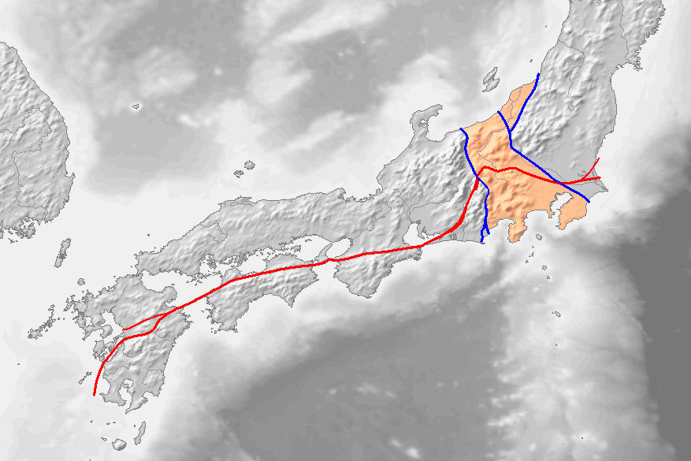
資源探査の観点に立てば、実在した可能性が高いルートとして地形学的に最も蓋然性が高いのは、紀伊水道から「紀ノ川」を直接遡上し、吉野・宇陀へ至るルートである。
なぜなら、紀ノ川の流路そのものが、日本最大の断層系「中央構造線（Median Tectonic Line, MTL）」の破砕帯によって形成された谷（断層谷）だからである。
地図上で確認すれば、紀ノ川河口から吉野、そして宇陀に至るラインは、中央構造線に沿って走っている。
断層活動によって岩盤が脆くなった箇所が浸食され、自然の回廊（紀ノ川〜吉野川）となっているため、内陸深部へ侵入する合理的なルートである。
この断層線の直上には、熱水活動に由来する辰砂（水銀朱）の露頭が集中して分布する。松田壽男が指摘した「丹生」の地名の多くは、このライン上に存在する。
つまり、神武軍が紀ノ川を遡上したという記述は、彼らが「鉱脈の露出する断層線（MTL）の上を、物理的に踏みしめながら進軍した」可能性を示唆している。
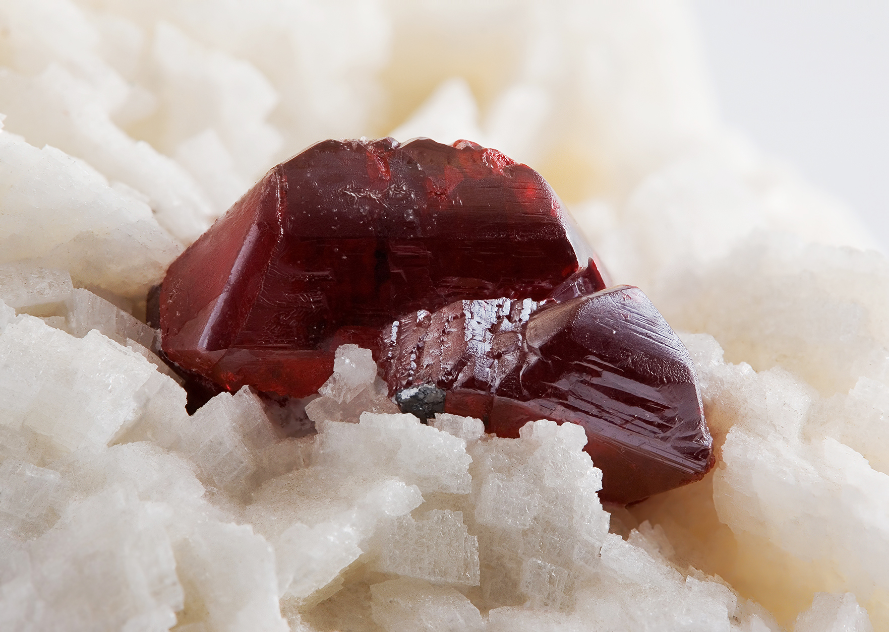
以上の検討から、神武東征の実態は、テキストが語るような「迷走の末の熊野迂回」ではなかったとするのが妥当である。それは、大阪湾岸（既存勢力圏）からの侵入を阻まれた彼らが、次善の策として選択した「断層谷（紀ノ川）という自然の回廊を利用した、辰砂鉱脈中枢（宇陀）への最短・直行アプローチ」であったと解釈することが、地質学的・地形学的に合理的である。
彼らは「迷って」吉野に着いたのではなく、川床に転がる赤い石（辰砂の礫）が示す「上流に鉱脈あり」という地質学的シグナルに導かれ、断層の谷を遡り、その最奥部にある宇陀の鉱床を制圧したと考えられる。
宇陀（奈良県北東部）は中央構造線沿いの高品位辰砂産地として、古代国家形成において決定的な戦略的価値を持っていたと考えられる。その価値は二重構造を持つ。
古墳時代の支配者は、被葬者に大量の朱を撒くことで死者の再生を祈願した。権力者の古墳には数十kg〜100kg超の朱が使用された。
朱を大量に供給できる者は、古墳祭祀の主導権＝政治的正統性を掌握できる。
古代から近世にかけて、金銀鉱石から貴金属を効率的に抽出するには、水銀が技術的に必須であった。これは時代・地域を問わない化学的事実である。
水銀アマルガム法（混汞法）では、Au/Ag + Hg → アマルガム形成 → 加熱（約357°C）→ 純Au/Ag + Hg蒸気（回収可能）という二段反応により、鉱石中の微量金銀を選択的に回収できる。
水銀を使用しない場合、古代技術では金銀鉱山の経済的開発は極めて困難である。
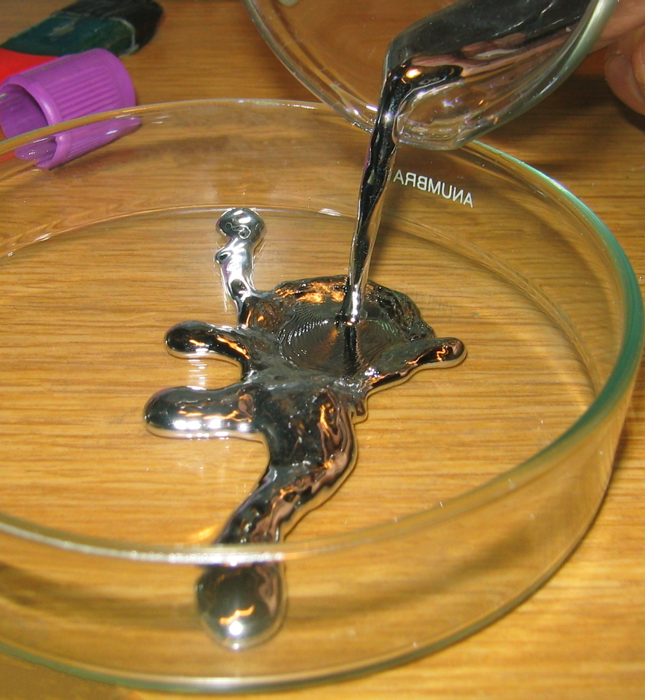
古代において、河川で「砂金」を揺り分ける手法（パンニング）は技術的に容易であったが、膨大な労力をかけても採取量はごく僅かであり、国家的な富の基盤とするには極めて非効率であった。一方で、真の富が眠る岩盤中の「山金」や「銀」を開発しようにも、微細な粒子として岩石に混じる貴金属を物理的に拾い集めることは不可能に近く、これが本格的な鉱山開発の最大の障壁となっていた。この限界を突破し、微細な金銀を効率的かつ大規模に抽出することを可能にしたのが、水銀の特異な物理化学的性質を利用した「水銀アマルガム法（混汞法：こんこうほう）」である。この技術は以下の二段階のプロセスから成る。
常温で唯一の液体金属である水銀は、金（Au）や銀（Ag）と極めて容易に結びつき、「アマルガム」と呼ばれる合金状の液体・泥状物質を形成する。細かく砕いた鉱石に水銀を加えて練り合わせると、水銀が「磁石」のように微細な金銀粒子だけを溶かし込み、無価値な土砂（ケイ酸塩など）から選択的に分離・抽出する。
水洗いで土砂を流した後に残ったアマルガムを加熱する。水銀の沸点（約357℃）は、金（1064℃）や銀（962℃）に比べて極端に低いため、焚き火程度の低温で加熱するだけで水銀のみが蒸発し、後に高純度の金・銀が残る。気化した水銀は冷却することで再び液体に戻り、次の抽出に再利用される。
この技術的必然性は、以下の三つの戦略的帰結をもたらすと考えられる：
水銀アマルガム法による金銀精錬が古代日本で実施されていたことは、7世紀後半の飛鳥池遺跡（奈良）において考古学的に確認されている（村上隆 2007）。
→ 遅くとも7世紀後半には、水銀を用いた金銀精錬技術が日本列島に確立していた。
問題は技術がいつから存在したか、である。以下の3つの状況証拠から、萌芽が3世紀後半に遡る可能性を提示する。
宇陀平定後、神武天皇が述べたとされる以下の言葉は、資源戦略の本質を示唆している。
「飴成、則吾必不假鋒刃之威、坐平天下。」
（飴 成らば、則ち 吾 必ず 鋒刃の威を 假らず、 坐して 天下を 平らげむ）
「飴が完成したならば、私は必ずや刃物の威力を借りることなく、座したままにして天下を平定できるであろう。」
これは単なる希望的観測ではなく、「飴の完成」→「不戦勝」という直接的因果関係を主張している。
| 解釈 | 因果の強度 | 追加仮定 | 歴史的整合性 |
|---|---|---|---|
| 徳治主義説 甘い飴（豊穣の象徴）で人々が従った |
弱い（飛躍あり） | 「甘味→服従」の心理機制 | 武器副葬・戦闘痕跡人骨と整合性に課題 |
| 化学威力説 ★ 水銀の掌握→毒・経済力・技術独占 |
強い（直接的） | 最小限 | 毒性・経済力・技術と整合 |
もし「飴」が第2章で示すように水銀（あるいは水銀化合物）であったとすれば、因果関係は次のように成立する：
「飴（水銀）の完成」→「化学的威力（毒/薬/技術財）の掌握」→「不戦勝」
ただし、「完全な無血統合」を想定することは非現実的である。古墳時代の武器副葬や戦闘痕跡人骨の存在は、軍事的緊張が存在したことを示す。本稿が提示するモデルはより現実的なシナリオである：
資源（朱）と技術（水銀製錬）の独占的掌握が、圧倒的な経済的・祭祀的優位性を生み出し、それが全面戦争を回避する抑止力（Deterrent）として機能したと考えられる。
すなわち、「鋒刃の威を藉りず」とは「武力を持たない」ではなく、「武力以外の手段（資源・技術）が主要な支配原理として機能した」という意味として解釈できる。
したがって、神武東征を「辰砂鉱脈のトレースによる資源確保」として解釈することが、地質学的・論理学的に合理的であると判断される。
次章では、この「飴」の正体を、化学工学的視点から厳密に検証する。
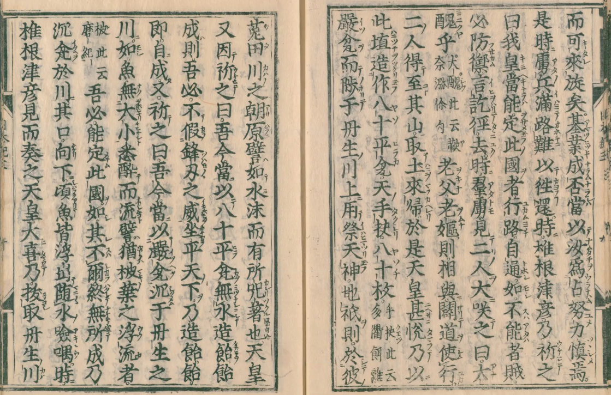
天皇又因祈之曰「吾今當以八十平瓮、無水造飴。飴成、則吾必不假鋒刃之威、坐平天下。」
天皇また祈りに因りて曰く「吾今、八十の平瓮を以て、水無くして飴を造らん。飴成らば、則ち吾必ず鋒刃の威を假らず、坐して天下を平らげん」と。
「私は今、多くの平らな土器を用い、水を使わずに飴を作ろう。飴が完成すれば、私は必ず武力を用いずに、座したままで天下を平定できるだろう。」
乃造飴、飴卽自成。
乃ち飴を造りしに、飴即ちおのずから成りぬ。
そこで飴を製作したところ、飴はただちに自然に（水なしで）完成した。
又祈之曰「吾今當以嚴瓮、沈于丹生之川。如魚無大小悉醉而流、譬猶柀葉之浮流者、吾必能定此國。如其不爾、終無所成。」
また祈りて曰く「吾今、厳瓮を以て、丹生の川に沈めん。もし魚、大小となく悉く酔いて流れ、譬えば柀葉の浮き流れるが如くならば、吾必ず此の国を定め得ん。其の爾らざるに如かざれば、終に成る所無し。」と。
「神聖な瓮を丹生の川に沈めよう。魚が大小に関わらずすべて酔って流され、まるで槇（マキ）の葉が浮き流れるようであれば、私はこの国を必ず平定できる。もし、そのようにならなければ、何ごとも成就しない。」
乃沈瓮於川、其口向下。頃之、魚皆浮出、隨水噞喁。
乃ち瓮を川に沈め、その口を下に向けたり。しばらくして、魚みな浮き出で、水に随いて噞喁（えんぐう）す。
そこで瓮を口を下に向けて川に沈めた。しばらくすると、魚がすべて浮き上がり、水面で口をあけてあえぎ（噞喁）ながら漂い流されていった。
『日本書紀』の当該記述は、以下の三条件を同時に満たすプロセスを要求している：
従来の通説は、これを「米の糖化（水飴製造）」と解釈してきた。しかし、この解釈は物理化学的に説明が困難である。
「蒸米を糖化させる際、後から水を加えないことを『無水』と表現した」
この主張の課題：
硫化鉱物の乾式製錬（Dry Smelting）において、「無水」は文字通りの物理的必須条件である。
オッカムの剃刀による判定：
「如魚無大小悉醉而流、譬猶柀葉之浮流者……」
この記述は以下の三つの生物学的現象を含意する。
これは典型的な鰓損傷による急性呼吸不全（Acute Gill Damage / Respiratory Failure）の記述である。三つの特徴——無選択性・急性・水面浮上——が同時に成立するためには、鰓組織に対して即効性の物理化学的作用を及ぼす物質の存在が不可欠である。
急性毒性による魚類の異常浮上が報告されるのは以下の物質に限られる：
| 生成物 | 化学式 | 水中での挙動 | 魚類への作用機序 | 急性毒性 |
|---|---|---|---|---|
| 液体水銀（微粒子） | Hg0（微粒子） | 水溶性極低（約2.4 ppb）——溶解せず微粒子として浮遊 | 鰓上皮への直接付着→鰓組織損傷→呼吸不全（全身性神経毒とは別経路） | 高 |
| 亜硫酸ガス | SO₂ → H₂SO₃ | 水に溶けて亜硫酸生成（pH↓） | エラ組織の酸腐食→呼吸阻害 | 高 |
| 糖類（食品説：比較対象） | C₆H₁₂O₆等 | 水に溶解→浸透圧変化のみ | 急性毒性なし・忌避行動のみ | なし |
✅ 結論：亜硫酸ガス（SO₂）による鰓損傷が主要機序
辰砂（HgS）の焙焼時に必然的に生成される副産物SO₂は水に溶けて亜硫酸（H₂SO₃）を生成し、強酸性によるエラ組織の化学腐食を引き起こす——これが「魚無大小悉醉而流」という無選択的・急性の浮上現象を物理化学的に説明する最有力機序である。
目的生成物（Hg⁰微粒子）も鰓上皮への直接付着により呼吸不全を引き起こし得るが、製錬現場から河川への流入量の観点ではSO₂の酸腐食効果がより即効性が高い。 いずれの経路も「完全無水条件（水を使わない製錬プロセス）」と完全に矛盾しない。 一方、食品説が仮定する糖類・低濃度アルコールでは同様の急性反応は化学的に発現し得ない。
科学的探究において、特定のモデルを主張する際には、競合する代替仮説を明示的に検討する責任がある。以下では「無水造飴」を説明しうる候補仮説を網羅的に列挙し、三条件（A: 無水性 / B: 流体生成 / C: 急性毒性）への適合度を評価する。
| 仮説 | A 無水性 |
B 流体生成 |
C 急性毒性 |
適合 | 主な課題 |
|---|---|---|---|---|---|
| 穀物の糖化 （従来の食品説） |
✗ | ○ | ✗ | 1/3 | 蒸米の含水率60%は「無水」に矛盾。糖類は魚に無毒 |
| 硫黄の精錬 | ○ | △ | △ | 2/3 | 溶融硫黄は常温で固化。瓮を川に沈めても即効性の魚毒性は発生しにくい |
| 鉛の精錬 （方鉛鉱 PbS） |
○ | △ | ○ | 2.5/3 | 融点327°C——常温では固体。「飴（粘性液体）」の描写に不適合 |
| 比喩的表現 （神威の修辞） |
— | — | ✗ | 0/3 | 魚の浮上は「物理的結果」として記述。比喩仮説では説明不能 |
| 口承の誤伝 | — | — | — | — | 三要素の偶然同時発生の蓋然性は低い。記述内容の整合性を説明できない |
| 水銀の精錬 （辰砂 HgS 乾式蒸留） |
○ | ○ | ○ | 3/3 | 追加仮定を最小化し三条件すべてを充足する現時点での最良説明 |
現時点で利用可能な物理化学的・生物学的データとの整合性において、水銀製錬説（辰砂 HgS 乾式蒸留）は、IBE の三基準すべてにおいて他のすべての代替仮説を凌駕する。
本稿はこれを「唯一可能な説明」として断定するものではない。水銀製錬説を、 「追加仮定を最小化しつつ、三条件すべてを物理化学的に説明できる、現時点での最良説明」 として位置づける。各条件への適合はあくまで現時点での評価であり、新たな物質・工程が同等の説明力を示す可能性は否定しない。
従来、「飴」という語は「甘味」を有する食品としての描写であると解釈されてきた。しかし、原文のどこにも「甘い」「美味しい」といった味覚や食味に関する記述は存在しない。
さらに決定的なのは、「無水造飴」という記述の特異性である。食品としての飴（水飴）の製造には、原料となる米や麦などの穀物を水で煮て糖化させる工程が不可欠であり、大量の水を必要とする。「水を使わずに飴を造る」という記述は、食品加工の常識に照らせば技術的に成立し得ず、論理的な説明が求められる。
この特異性は、「飴」が食用の甘味物質を指しているのではなく、別の物質を指す比喩的表現である可能性を強く示唆している。
（1）水銀の物理的性状と「飴」の視覚的類似
辰砂の乾式製錬（レトルト法）によって得られる水銀は、以下の顕著な物理的特徴を持つ：
| 物理的特性 | 水銀の特徴 | 飴（水飴）との類似性 |
|---|---|---|
| 常温での状態 | 液体（融点 -38.83°C） | ○ 両方とも常温で液体 |
| 色 | 銀白色、金属光沢 | △ 飴は琥珀色だが、光沢は類似 |
| 粘性 | 高い表面張力、球状を保つ | ○ とろみのある液体として認識 |
| 流動性 | 流れるが水ほどサラサラしない | ○ 飴も同様の流動性 |
| 重さ | 非常に重い（比重13.5） | △ 飴も水より重く感じる |
特に重要なのは、「液体でありながら水ではない」という共通性である。古代日本において、常温で液体状態を保つ物質は極めて限られていた。水、油、そして飴（水飴）である。このうち、水銀の独特の「重さ」と「とろみ」は、水や油よりも、むしろ飴に近い視覚的・触覚的印象を与えたと考えられる。
（2）相転移の類似：固体から液体への変化
水銀製錬と飴造りは、プロセスの観点からも類似している。両者とも「固体→加熱→液体」という相転移を伴う点で共通している。技術者たちが、辰砂から得られる銀色の液体を見て、「飴のようなもの」と直感的に命名した可能性は十分にある。
（3）「無水」という技術的特徴の正確性
「無水造飴」の記述において、最も重要なのは「無水」という表現である。これは単なる修辞や誇張ではなく、水銀製錬の技術的特徴を極めて正確に表現していると解釈できる。
辰砂の乾式製錬（レトルト法）では、密閉容器に辰砂を入れ、外部から加熱し、水は一切使用しない。熱だけで水銀蒸気が発生し、冷却されて液体水銀となる。この「無水」という特徴は、当時の他の技術と比較して極めて特異である。古代の製造技術の多くは水を使用する。「無水造飴」という記述は、技術を知らない者にとっては奇妙な表現だが、水銀製錬の実態を知る者にとっては極めて正確な技術的記述であることが示される。
（1）技術知識の欠如と字義的理解
記紀が編纂された8世紀初頭、編纂者たちは文官・貴族階級であり、実地の技術に疎かったと考えられる。編纂者たちは、口承された「アメ造り」という表現を聞いた際、技術的文脈を持たないため、最も日常的な「飴（甘味食品）」と解釈したとみられる。彼らにとって、「アメ」といえば食品以外の選択肢はなかったと考えられる。
（2）「無水造飴」という矛盾の見過ごし
編纂者たちが「無水造飴」という記述を記録したことは、彼らの技術理解の限界を示している。もし編纂者が実際の飴造りの工程を理解していれば、「無水造飴」という表現の特異性に気づいたはずである。しかし、彼らは口承情報をそのまま記録したとみてよい。
この事実は、逆説的に、「無水造飴」という記述が、編纂者自身の創作ではなく、より古い口承伝承を忠実に反映していることを強く示唆している。技術の実態（水を使わない水銀製錬）が、編纂者の理解を超えて、文字の中に保存されたとみられる。
以上の分析から、「飴」という記述は以下の三段階の知識伝達過程を経て形成されたと考えられる：
水銀製錬によって得られた液体金属が、視覚的・触覚的に「飴」に類似していた。 銀白色の粘性液体という物質的類似性に基づき、技術者集団（物部氏・丹生氏系の技術者）が 「アメ」という語を用いてこの物質を指し示したと考えられる。
「アメ造り（水銀製錬）」という表現が、技術の実態と切り離されながら 儀礼・口承として数世紀にわたって伝達された。 技術の意味は継承者以外には不透明化していったと推測される。
水銀製錬の実態を知らない8世紀の文官は、伝承中の「アメ」を 最も日常的な意味（甘味食品）として解釈し記録した。 「水無くして飴を造る」という物理的矛盾は、技術知識の欠如ゆえに 神話的奇跡として処理された。
「飴」という語は、水銀の物質的性状に基づく直感的な命名であると解釈できる。 「無水」という記述は、水銀製錬の技術的必須条件を正確に反映している。 記紀編纂者たちは、技術知識を欠いたため、これを文字通り「飴（食品）」と解釈し、神話的奇跡として記録した。
その結果、「無水造飴」という一見矛盾した記述の中に、 水銀製錬技術という歴史的実態が、意図せず保存されたとみてよい。 これは意図的な暗号化の結果ではなく、知識の断絶が生んだ「非認識による情報の完全保存」である。
『日本書紀』の記述を、辰砂（HgS）から水銀（Hg）を遊離させる乾式製錬プロセスとして再構成した場合、以下の5つの単位操作（Unit Operations）を含む機能的モデルとして定義できる。これは物理法則、化学反応、および生物学的応答の制約下における最善の工学的解釈である。
朱（丹生）の聖地、中央構造線沿いの辰砂露頭付近に、密閉反応容器（厳瓮）・排気・凝縮部（平瓮）・回収器からなる組み合わせ式熱反応装置を設置。
【注】「厳瓮（いつへ）」は密閉型の容器として辰砂を封入・加熱する反応本体。「平瓮（ひらか）」はその上部に組み合わせる開放型の平皿状土器で、排気口（煙突部）として水銀蒸気とSO₂を外部に導くとともに、温度差による液体水銀の一部凝縮を促す機能を担う。開放型の形状は密閉容器として不適合だが煙突・排気口としては合理的であり、両器が役割分担する複合装置として「八十平瓮」の大量使用が意味を持つ。
反応炉内の水蒸気爆発の回避および潜熱による反応温度低下を防止するため、プロセス全体で自由水を完全排除（含水率0%）。
辰砂を500–600°Cで加熱し、水銀蒸気および亜硫酸ガスを自発的に生成。
気化した水銀を冷却し液体金属へ相転移。粘性を持つ銀白色液体の取り出しに成功——「飴が成る」の記述はこの瞬間を指す。
生成物（Hg⁰微粒子）または副産物（SO₂等）を河川へ流入させ、魚類の鰓損傷による急性呼吸不全反応を確認。プロセスの成功を生物学的に検証する機能を果たしている。
本記述に対する主要な解釈を、説明コストで比較する。
| 解釈 | 無水の説明 | 飴の説明 | 魚死の説明 | 追加仮定 | 総合評価 |
|---|---|---|---|---|---|
| 神話的誇張説 | 奇跡 | 奇跡 | 奇跡 | なぜ「負の制約」を強調？ | △ |
| 農耕儀礼説 | 豊穣の暗喩 | 甘味＝豊穣 | 説明困難 | 豊穣祈願で魚が死ぬ？ | ✗ |
| 陶器製作説 | 乾燥工程 | 釉薬？ | 説明困難 | 魚死との関連性なし | ✗ |
| 食品説（水飴） | 「含水米＝無水」の読み替え | 糖化液 | 説明困難 | 言語の読み替え + 未実証の生物学的現象 | ✗ |
| 鉱物説（本稿） | 文字通りの無水（乾燥鉱石） | 抽出プロセスの暗喩 | 水銀・SO₂の毒性 | 最小限 | ○ |
結論：
本稿の化学的解釈のみが、記述のすべての要素（無水・飴・魚死）を、追加仮定を最小化して統一的に説明できる。
したがって、最良説明への推論（Inference to the Best Explanation）の枠組みにおいて、鉱物説は最も整合的な説明として位置づけられる。
高度な専門技術が、なぜ神話という形式で『日本書紀』に保存されたのか。本節では、前節までに示した技術的・構造的条件を前提として、それらが記紀編纂段階においてどのように叙述化されたかという解釈仮説を検討する。
編纂者たちは、「無水造飴」という不可解な伝承に直面した際、その技術の意味を解読できないがゆえに、理解不能なまま、言葉通りに転写するしかなかったと考えられる。
その結果、技術情報は文脈を剥奪され、神話的表現という琥珀の中に閉じ込められた昆虫のように「情報の化石」として保存されたとみられる。
すなわち、この記述は意図的な暗号化の結果ではなく、知識の断絶が生んだ「非認識による情報の完全保存」であると考えられる。
「無水造飴」は、辰砂（HgS）の乾式蒸留による水銀製錬プロセスとして解釈することが、 物理化学的・生物学的・言語学的制約のすべてを追加仮定なしに充足する、現時点での最良説明である。
本稿はこれを確定的事実として断言するものではない。この解釈を「唯一の答え」と位置づけるのではなく、現時点で利用可能なデータの下で最も説明コストが低い仮説として提示する。
本章で示した文献的仮説は、独立した物質的証拠（鉛同位体比分析）との整合性によって、 単なる解釈の域を超えた歴史的蓋然性を獲得する。 3世紀後半、日本列島において辰砂資源の調達源が中国産から国産へと劇的に転換したという考古学的実態は、 本章の化学的解釈を物質面から支持する独立した証拠ラインとなる。
第2章において提示した「無水造飴＝辰砂乾式蒸留」という解釈命題は、その本質において文献学的・化学工学的推論の複合体である。いかなる推論的構築物も、それ単独では歴史的実在の証明たり得ない。仮説の実証的妥当性は、文献解釈から独立した物質科学的データ（physico-chemical data）との整合性によって初めて検証され得る。その役割を担う独立証拠が、本章で詳述する鉛同位体比（lead isotope ratio）分析である。
以上の枠組みのもと、本章では南武志・南久美子・西田正規（2013）による先駆的分析研究に基づき、古墳出土朱の原料産地変遷という物質的データ（Material Data）を提示する。当該データにおける同位体比測定値は、化学的な再現性を原理的に保証された物理量であり、第4章以降に展開する歴史的推論の実証的基盤を構成するものである。
辰砂（硫化水銀、HgS）には、原鉱石の生成環境に由来する微量の鉛（Pb）が不純物として含有される。鉛には4種の安定同位体——²⁰⁴Pb、²⁰⁶Pb、²⁰⁷Pb、²⁰⁸Pb——が存在し、それぞれ異なる放射壊変系列（ウラン-トリウム系列）の終端核種として、地質学的時間スケールにわたり蓄積される。したがって、²⁰⁷Pb/²⁰⁶Pb 比および ²⁰⁸Pb/²⁰⁶Pb 比は鉱床の生成年代・母岩組成・熱水活動の履歴を一意に反映しており、産地ごとに統計的に有意な差異を示す。この特性が、鉛同位体比を地球化学的「産地指紋（geochemical fingerprint）」として機能させる根拠である。
南ら（2013）の予備分析による鉛含有量の産地間比較は、分析対象試料が測定精度を確保し得る鉛濃度を有することを示している：
大和水銀鉱山において鉛含有量が際立って高い（401 ppb）ことは、同鉱山の地質学的特殊性を示唆するとともに、当該試料の同位体比測定精度が特に高いことを意味する。
鉛同位体比が産地同定の手法として卓越する最大の理由は、原料の加工・変質過程において同位体比が保存されるという物理化学的性質にある。辰砂を粉砕して朱顔料に加工する工程、あるいは辰砂から水銀を製錬したのちに硫黄と再結合させて人工辰砂（銀朱）を生成する工程のいずれにおいても、鉛の同位体組成は変化しない。すなわち、²⁰⁷Pb/²⁰⁶Pb 比は「製品」ではなく「原料鉱石の産地情報」を保持し続ける。
この原理により、古墳から出土した朱の鉛同位体比を測定することは、副葬品に使用された原料辰砂の採掘産地を遡及的に同定することと等価である。当該手法は、青銅器・ガラス器等の産地同定においても考古科学の標準的手法として確立されており（馬淵 2007）、その適用可能性と信頼性は国際的に認められている。
南ら（2013）は、辰砂（朱）に対する鉛同位体比産地同定が、青銅器に対するそれよりも解釈論的に直接的である可能性を論じている。この議論は重要な方法論的含意を持つため、以下に敷衍する。
青銅器は古代において汎用的な実用材料として広域に流通し、破損品のリサイクルも一般的であったと推定される。このため、鉛同位体比が示す産地は「製品製造時点における原材料の調達元」に過ぎず、当該製品が最終的に発見された遺跡の政治的・交易的脈絡との直接的連結は困難な場合がある。
これに対し、朱（辰砂粉末）は、古代日本において専ら威信財的・儀礼的用途——葬送儀礼における死者への散布、漆工芸における顔料、支配者の権威表象——に限定されており、大量・汎用的な市場流通が想定しにくい物質である。したがって、朱の鉛同位体比から導出される産地情報は、当該古墳に埋葬された被葬者集団が、特定の辰砂鉱山に対して採掘権あるいは交易関係を有していたことを、青銅器の場合よりも直接的に示唆する蓋然性が高い。この方法論的優位性が、本研究において鉛同位体比分析を中心的証拠として採用する根拠のひとつをなしている。
南ら（2013）は、天然辰砂鉱石および遺跡出土の朱を対象として、鉛同位体比の網羅的測定を実施した。試料の選定は弥生時代後期から古墳時代前期にかけての通時的な産地変化の検出を主目的として設計されており、時間的変遷を追跡可能な遺跡群が対象として採用されている。
【表3-1：天然辰砂鉱石の鉛同位体比測定値（南ら 2013 より抜粋）】
| C | 産地 | ²⁰⁷Pb/²⁰⁶Pb | ²⁰⁸Pb/²⁰⁶Pb | ²⁰⁶Pb/²⁰⁴Pb |
|---|---|---|---|---|
| C1 | 奈良（大和）1 | 0.84428 | 2.0902 | 18.421 |
| C1 | 奈良（大和）2 | 0.84515 | 2.1011 | 18.389 |
| C1 | 三重（丹生）1 | 0.84554 | 2.0925 | 18.382 |
| C1 | 三重（丹生）2 | 0.84350 | 2.0910 | 18.443 |
| C2 | 徳島（水井）1 | 0.79735 | 1.9511 | 20.024 |
| C2 | 徳島（水井）2 | 0.79119 | 1.9470 | 19.909 |
| C4 | 中国・陝西省 | 0.83921 | 2.0491 | 18.843 |
| C3 | 中国・貴州省 | 0.85688 | 2.0919 | 18.40 |
| C3 | 中国・湖南省 | 0.85608 | 2.0830 | 18.41 |
【表3-2：遺跡出土朱の鉛同位体比測定値と産地帰属（南ら 2013）】
| 遺跡名 | 時期 | ²⁰⁷Pb/²⁰⁶Pb | ²⁰⁸Pb/²⁰⁶Pb | 推定産地帰属 |
|---|---|---|---|---|
| 大風呂南遺跡 | 弥生後期～古墳前期 | 0.85693 | 2.1026 | 中国・揚子江中流域 |
| 西谷墳丘墓 | 弥生後期～古墳前期 | 0.89014 | 2.1683 | 中国産（詳細産地特定困難） |
| 楯築墳丘墓 | 弥生後期～古墳前期 | 0.88613 | 2.1798 | 中国産（詳細産地特定困難） |
| 黒塚古墳 | 古墳時代前期 | 0.83791 | 2.0921 | 近畿産（大和・丹生域） |
| 大和天神山古墳 | 古墳時代前期 | 0.84562 | 2.0906 | 近畿産（大和・丹生域） |
| 桜井茶臼山古墳 | 古墳時代前期 | 0.84422 | 2.0941 | 近畿産（大和・丹生域） |
南らは、天然辰砂鉱石の同位体比クラスターと遺跡出土朱の測定値とを散布図上で照合し（後掲 図3-1）、以下のように結論づけている：
「天神山古墳など三つの古墳から出土した朱は近畿産であることが強く示唆されるとともに、大風呂南遺跡や西谷墳丘墓等から出土した朱は大陸産であることを示す結果が得られた。」（南ら 2013, p.827）
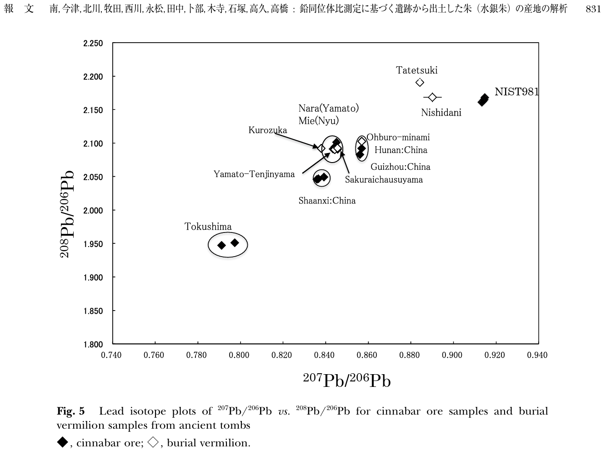
図3-1 ²⁰⁷Pb/²⁰⁶Pb 比 vs. ²⁰⁸Pb/²⁰⁶Pb 比の二次元散布図（南ら 2013, Fig. 5 より転載）。
◆：天然辰砂鉱石試料；◇：遺跡出土朱試料（副葬品）。楕円は産地クラスターを示す。
弥生時代の出土朱（西谷・楯築・大風呂南）が散布図右上の中国産領域に集中するのに対し、
古墳時代前期の出土朱（黒塚・天神山・桜井茶臼山）が左中央の近畿産クラスター（大和・丹生）に移行していることが、
一次資料の図上で視覚的に確認できる。この産地転換は、測定値の分布そのものが示す測定値層の証拠である。
上掲の測定値および散布図（図3-1）が示す事実を、方法論的枠組みに従い第一層（測定値層）と第二層（推論層）に峻別して整理する。
図3-2 辰砂調達源の転換：弥生後期大陸産から古墳前期近畿産へ（南ら 2013 の測定値に基づく本稿作成）
【第一層：測定値が直接示す事実】
弥生時代後期の墳丘墓出土朱と古墳時代前期の古墳出土朱とは、²⁰⁷Pb/²⁰⁶Pb 比において顕著かつ非連続的な差異を示す。前者（≈0.856〜0.890）は中国産辰砂鉱石の測定値と、後者（≈0.838〜0.846）は近畿産辰砂鉱石の測定値と、それぞれ散布図上で空間的に重複する。この分布パターンは、測定値の読み取りとして客観的に確認できる物質的証拠（Material Evidence）であり、解釈者の主観に依存しない。
【第二層：測定値から導かれる推論】
上記の同位体比転換は、調達された辰砂の原料産地が、弥生時代後期における大陸産から古墳時代前期における近畿産へと転換したことを示唆する（第2層：推論）。この転換の政治的・経済的動因については第4章以降で考察するが、それ自体は測定値が直接証明するものではなく、地質学的・歴史的文脈との照合から導出される推論的命題である。
鉛同位体比が示す産地転換の事実は、こうした方法論的透明性のもとで理解されるとき、本研究の主要仮説——「初期ヤマト王権による国産辰砂資源の戦略的掌握」——を支持する独立した物質科学的証拠として最大の説得力を発揮する。
前節まで提示した測定値および散布図（図3-1）は、物質科学的証拠として高い信頼性を有する。しかしながら、いかなる科学的証拠も、その証明力には固有の射程と限界が伴う。3.1節で定義した二層構造の枠組みに基づき、本節では鉛同位体比分析が論証し得る命題と、別途の独立証拠を要する命題とを峻別する。この作業は、後続の章における議論の過剰推論を防ぐための方法論的要件である。
上記の整理が示すとおり、本節以降で展開する歴史的推論は、あくまでも測定値が許容する推論の範囲内に留まるものでなければならない。本稿はこの方法論的自制を一貫して維持することで、物質科学的証拠の証明力を過大にも過小にも評価しない均衡のとれた論証を志向する。
以上の限界を明示したうえで、第二層の推論として、産地転換が示唆する歴史的含意を論じる。これらの命題は「最善の説明への推論（IBE）」として提示されるものであり、確定的主張ではなく作業仮説的命題として扱われるべきである。
近畿産辰砂（大和・丹生域）への調達転換は、宇陀・紀伊丹生を中心とする辰砂鉱脈に対する採掘・輸送・配給の組織的管理体制が整備されたことを示唆する。大陸輸入ルートへの依存解消は、単なる「貿易パターンの変化」を超え、国内資源主権の自律的確立という政治経済的転換として解釈し得る。
大型前方後円墳——黒塚・天神山・桜井茶臼山——における大量の朱使用（各古墳で数十〜百kg超）は、偶発的・一時的な資源調達では賄い得ない規模である。近畿産辰砂への安定的転換は、大規模需要を持続的に充足し得る組織的資源管理体制の存在を物質的に示唆する。
葬送儀礼において朱を大量に使用し得る権力者は、その供給源への排他的アクセスを確保していたと推定することが合理的である。朱の供給を独占する集団は、他の首長層に対する儀礼的・象徴的優位性を保持し得る。この論理は、辰砂資源の管理権が政治的統合の物質的基盤をなした可能性を示唆し、第6章以降で展開する「資源管理型政体」モデルの物質的根拠を構成する。
本稿が水銀製錬技術の存在を支持する証拠として援用する三つの独立した系列：
「国産辰砂使用の開始（物質的事実）」と「水銀製錬技術の確立（推論）」は、論理的に峻別されつつも、三系列の独立した証拠によって相互補完的に支持される統合的仮説の構成要素として位置づけられる。いずれか一つの証拠系列のみでは証明力が限定されるが、三系列の独立した収束こそが本稿の論証の堅牢性を保証する。
春成秀爾ら（2011）による炭素14年代測定以前、日本考古学界における古墳時代開始期の年代論は、約20年間にわたる型式学的・文献学的研究の蓄積によって形成された以下の総意（scholarly consensus）を有していた：
この総意を代表する見解として、都出比呂志（1989）は古墳時代開始を4世紀初頭前後と位置づけ、寺沢薫（2000）は庄内式土器終末段階を3世紀後半に比定している。これら先行研究における年代観は、以下の複数の独立した根拠の収束に基づく、学際的に堅実な合意であった：
この総意は、特定の研究者の権威に依拠するものではなく、多様な手法による独立した年代推定が同一の時間的レンジに収束することによって構築されたものである。この点において、後述する春成モデルとは方法論的に異質である。
春成秀爾・今村峯雄・坂本稔ら（2011）は、纒向遺跡および箸墓古墳関連資料の炭素14年代測定に基づき、箸墓古墳築造直後の年代を「西暦240〜260年（3世紀中葉）」と結論づけた。この主張は、それ以前の学界総意を約50年遡上させるものであり、「邪馬台国畿内説」「箸墓古墳＝卑弥呼の墓説」との接合によって広く社会的反響を呼んだ。
この主張の構成要素は、（i）当時の国際較正曲線 INTCAL98 を用いた炭素14年代の較正、（ii）光谷拓実による日本産樹木年輪データとの照合（JCAL）、（iii）編年順序制約を事前確率（Prior）とするベイズ統計モデル（OxCal）による年代推定、の三要素の複合である。しかし、この複合的手続きには、以降で論じる統計的整合性の問題が内在していた。
【注：以降で論じる二つの問題経路は独立している。①JCAL基盤データの第三者検証可能性の問題（制度的経路の閉鎖）は、JCALとは完全に独立した国際標準IntCal20を用いたAmodel=16%という統計的不整合とは別の問題である。①が解決されても②は残り、②が解決されても①は残る。この相互非消滅性を念頭に第8章まで読み進めることを推奨する。】
炭素14年代較正に用いる国際標準曲線は、大気中の放射性炭素濃度の変動に関する新たな樹木年輪データの蓄積によって段階的に更新される。春成モデルが依拠したINTCAL98はその後 IntCal13、IntCal20 へと改訂されており、既存モデルの現行国際標準への適合性を検証することは、科学的再現可能性の担保という観点から標準的な手続きである。
坂本稔（2022）は、春成ら（2011）が用いたのと同一の試料群・編年順序制約を入力として、最新の較正曲線 IntCal20 に基づくベイズ統計モデルの再構築を行った。その結果として報告されたモデル適合度（Amodel）は、国際的に採用されている判定基準（Bronk Ramsey 2009）と対比したとき、以下の深刻な問題を示す：
「残念ながら60%以上が求められるモデルの適合度は16%と低く計算次第で若干ばらつくため、参考程度の結果と捉える必要がある」（坂本 2022, p.305）
さらに、坂本（2022）は IntCal13 に基づく再計算においてもAmodel が 4.8% に留まることを報告しており、使用する較正曲線の如何にかかわらず、春成モデルが設定した編年順序制約と炭素14実測値との間に重大な不整合が存在することを明らかにしている：
「なお括弧内の年代はIntCal13に基づいた計算結果で、適合度（4.8%）は同様に芳しくない。」（坂本 2022, p.305）
【表3-3：春成モデルのAmodelと国際基準との対比】
| 較正曲線 | 報告年代（箸墓築造直後） | Amodel | 統計的判定（Bronk Ramsey 2009） |
|---|---|---|---|
| INTCAL98（春成ら 2011 原著） | AD 240–260 | 非報告 | （評価不能） |
| IntCal13（坂本 2022） | AD 195–250 | 4.8% | ⚠️ 30%未満：モデル再構築が必要 |
| IntCal20（坂本 2022） | AD 230–255 | 16% | ⚠️ 30%未満：モデル再構築が必要 |
ベイズ統計モデルにおいて Amodel が30%未満である場合、それは Prior（今回の場合、春成ら2011が設定した古墳の編年順序制約）と Likelihood（炭素14実測値）の間に、モデルの枠組み自体が統計的に受容し得ない規模の不整合が存在することを意味する。不整合の原因が特定の外れ値試料に起因するのか、順序制約の設定全体に起因するのかは個別の精査を要するが、いずれの場合においても、現在の形態の春成モデルを科学的根拠として年代論的結論を導出することは、統計科学の標準的規範に照らして困難である。坂本（2022）本人が「参考程度」と明示している以上、この評価は春成モデルの提唱者側からも認められた事実として扱うことが適切である。
ここで注目すべき傍証として、南ら（2013）の論文における分析対象古墳の年代記述を検討する。同論文は春成モデル発表（2011年）のわずか2年後に公表されているにもかかわらず、分析対象古墳の年代を一貫して around the 4th century（4世紀前後） と記述している。
この選択の解釈に際して、方法論的透明性の観点から以下の点を明示する。南ら（2013）が春成モデルと異なる年代表現を採用した理由は、論文中に明示されていない。考えうる解釈としては、（a）化学分析の専門家として年代決定の問題には意図的に介入せず、発表当時において依然として広く共有されていた伝統的年代観を中立的に使用した、（b）春成モデルを認識していなかった、あるいは（c）その他の判断根拠があった、という複数の可能性が存在する。
【方法論的留保】
南ら（2013）が春成モデルを「意図的に採用しなかった」という解釈は、本稿が論証し得る命題の射程を超える。本稿が第一層（測定値層）として確認し得るのは、「春成モデル発表（2011年）から2年後に公表された鉛同位体比分析論文が、春成モデルとは異なる年代記述（4世紀前後）を採用している」という事実のみである。この事実から引き出せる推論は限定的であるが、少なくとも以下の点は示唆する：春成モデルは発表直後の2013年時点において、専門家社会においてすでに普遍的な受容を得ていたわけではなく、伝統的年代観（3世紀後半〜4世紀初頭）もなお有効な参照枠として機能していた。
本稿の年代観との関係において、この傍証が有する意義は次の点にある。鉛同位体比分析という物質科学的手法を用いた研究者が、本稿が採用する年代観（3世紀後半〜4世紀初頭）と整合的な年代記述を独立に採用していることは、本稿の年代観が「春成モデルへの恣意的反発」に基づくものではなく、複数の独立した証拠線・研究者判断と整合する堅実な位置づけであることを傍証する。ただし、この一致が南氏による本稿論旨の支持を意味するものでないことは、繰り返し強調する必要がある。
以上の分析を踏まえ、本稿は以下の年代論的立場を採用する：
「前方後円墳体制の成立および国産辰砂資源の体系的利用の開始は、
3世紀後半から4世紀初頭にかけて段階的に発生した。」
この年代観の採用は、「革命的な新説の提示」ではない。春成モデル（2011）という、現時点において統計的整合性の深刻な問題（Amodel=16%）を抱えるモデルを年代論的根拠から排除し、そのモデルが置換する以前から考古学界において20年間にわたり維持されてきた実証的総意に立ち戻ることである。真に堅実な科学的推論とは、現行の証拠水準において最も多くの独立した証拠線から支持される仮説を採用することであり、本稿の年代観はその基準を満たしている。なお、5番目の収束証拠——代替ベイズモデルの構築による箸墓古墳年代の実証的確認——については第8章（8.2節）で詳述する。
箸墓古墳（奈良県桜井市）の周溝堆積層からは、布留0式土器が共伴している。考古学的層位関係の原則に従えば、この共伴は箸墓古墳の築造時期と布留0式土器の実年代とが同時的文脈を共有することを示す。この関係は型式学的には確立されており、問題は布留0式土器の実年代（絶対年代）対応の決定にある。
箸墓古墳が日本考古学において特別な位置を占めるのは、それが前方後円墳体制成立期の標式的遺跡であると同時に、炭素14年代測定の集中的対象となってきたためである。すなわち、箸墓の絶対年代推定値は、布留0式土器を媒介として、畿内および周辺地域における複数遺跡の年代決定に連鎖的に波及する「アンカー年代（anchor date）」として機能してきた。このアンカー年代の妥当性が問われるとき、それは箸墓一遺跡の問題にとどまらず、当該期の考古学的年代体系全体の再点検を要請するという意味で、方法論的に重大な含意を持つ。
春成モデル（2011）が設定したアンカー年代、および3.5節で検討した坂本（2022）によるAmodel=16%という統計的問題は、この文脈において以下の二つのシナリオを対比させる：
二つのシナリオは、型式学的な相対編年——庄内式から布留式へという移行の順序——を変更するものではない。変更されるのはその実年代への対応づけ（chronological anchoring）のみであり、この点の差異が本節の検討対象である。
春成モデルのAmodel=16%という統計的不整合（3.5.3節）は、箸墓古墳に付与されたアンカー年代「AD 240〜260年」の信頼性基盤を損なう。この損傷の土器編年体系への波及は、以下の論理的連鎖に沿って生じる：
ただし、上記の連鎖的含意は、箸墓年代の修正が「自動的に」かつ「全面的に」日本考古学の年代体系を変更するという主張を含意するものではない。以下の方法論的留保は、論証の過大評価を防ぐうえで不可欠である。
土器編年の絶対年代対応は単一アンカーのみで決定されない。C14年代測定・輸入遺物との共伴関係・複数遺跡の層位的対照・他地域との横断比較など多数の独立した年代情報の総合判断で支持されており、箸墓アンカーの信頼性低下は部分的に代替可能である。
庄内式・布留式という型式学的序列それ自体の相対的妥当性は、絶対年代の変更によって影響を受けない。問題はあくまで「各型式段階がいつ（西暦何年）に相当するか」という実年代対応づけの精度に限定される。
本稿が主張し得るのは「春成モデルの絶対年代値を再検討なしに援用することは困難である」という限定的命題であり、「布留0式は4世紀に入る」という具体的な代替年代を本稿独自のデータによって確定する能力は、現段階において本稿の射程外にある。
以上の留保を踏まえたうえで、本稿が指摘し得る本質的命題は以下のとおりである：
箸墓古墳が「AD 240〜260年（3世紀中葉）」という固定的な絶対年代を有するという前提のもとに構築された一切の歴史的論証——その典型が「箸墓古墳＝卑弥呼の墓説」に代表される邪馬台国畿内説の年代論的根拠——は、当該前提の統計的信頼性が担保されていない現状において、論証の基盤を再検討する必要に直面している。これは個々の歴史的解釈の是非を判断するものではなく、その論証を支える年代論的前提の科学的妥当性に関する方法論的指摘である。
本章は、鉛同位体比という物質科学的手法を中心軸として、古墳出土朱の調達源転換、春成モデルの統計的問題、箸墓年代と土器編年への波及という三つの問題系を論じた。3.1節で定義した二層構造の枠組みに即し、本章で確立された命題を階層別に整理する。
本稿が採用する年代論的立場——「前方後円墳体制の成立および国産辰砂資源の体系的利用の開始は、3世紀後半から4世紀初頭にかけて発生した」——は、以下の四つの独立した証拠系列の収束によって支持される。この収束の多重性こそが、本稿の年代観が単なる異論提示ではなく、現行の証拠水準において最善の説明として位置づけられる根拠である：
この年代観の採用は、「春成モデルへの反証」ではなく、「統計的整合性を欠くモデルへの依存を排し、複数の独立した証拠線が収束する最善の説明仮説への回帰」である。科学哲学における「inference to the best explanation」の原則に従えば、現時点において採用されるべき年代観は、証拠の総体に対して最も高い説明力を持つものでなければならない。本稿の年代観はその基準を、春成モデルの年代値よりも高い水準で充足している。
本章が確立した「3世紀後半における国産辰砂へのアクセス確立」という物質的事実と、第4章で検討する「7世紀後半の飛鳥池遺跡における水銀アマルガム法の実用化」という考古学的証拠との間には、約4世紀にわたる時間的ギャップが存在する。この間隙は本稿の「資源管理型政体」モデルにとって潜在的な脆弱点を構成する。
このギャップを埋める証拠系列として、本稿が注目するのは5世紀における金銀器のアマルガム鍍金技術の存在という考古学的証拠である。3世紀後半の資源確保段階から、5世紀の技術的応用段階を経て、7世紀の本格的な工業的実用化へという技術連鎖の三段階モデルを構成し得るとき、時間的ギャップは単なる証拠の欠如ではなく、理論的に説明可能な技術発展の段階として解釈可能となる。この論点については第4章で詳述する。
飛鳥池遺跡（奈良県高市郡明日香村）は、天武朝〜持統朝期（7世紀後半）に操業した大規模国家工房跡である。1991年から1999年にかけて奈良国立文化財研究所（現：奈良文化財研究所）が実施した系統的発掘調査により、金属の素材獲得（smelting・refining）から製品製作（fabrication）に至る一貫した生産工程を担っていたことを示す遺構・遺物群が検出された（村上隆 2007）。
村上隆（2007）は、金工技術を「①素材を得る技術、②形を作る技術、③綺麗に見せる技術、④機能を持たせる技術」の四領域として定義し、飛鳥池遺跡が従来「③綺麗に見せる技術（鍍金）」および「②形を作る技術（鋳造・細工）」の場として理解されてきたことに対し、①素材を得る技術（製錬・精錬）もまた同遺跡で実施されていた可能性を精力的に追求した。その結果として得られた知見は、日本における金属冶金技術史を大幅に書き換えるものである。
炉跡（複数基）、鞴の羽口、複数タイプの坩堝類（土製・石製）、鋳型片
銀粒（直径約5mm、鉛・ビスマス・水銀の付着を確認）、凝灰岩製石製ルツボ（ピット状穿孔）、ボール形大型ルツボ（内壁に銀残留）、薄手ルツボ片（銀・鉛・ビスマスを検出）
富本銭の鋳型、金銅製仏具の未成品・切れ端、金塊片（鉛付着を確認）
これら遺物群の科学分析——エネルギー分散型X線分析（EDX）による元素同定、金属組織の顕微鏡観察——が示す技術的実態を以下の各節で詳述する。飛鳥池遺跡の科学調査は、村上が並行して担当していた石見銀山遺跡（16世紀・世界遺産）の近世灰吹法（cupellation）に関する科学調査の経験的基盤があって初めて可能となったものであり（村上隆 2007）、この比較考古冶金学的視点が、遺跡の技術的実態の正確な解読を可能にした。
飛鳥池遺跡から出土した直径約5mmの銀粒は、当初「熔けた銀が飛んだ熔滴（splatter）」と解釈されていた。しかし、村上隆（2007）による精密な元素分析によって、この解釈は覆された。銀粒には鉛（Pb）およびビスマス（Bi）が含有されており（図4-1 上図：EDX定性分析スペクトル）、表面の金属微細組織は「比較的ゆっくりと固化した」プロセスを示すことが確認された。急速に冷却される熔滴の表面組織とは明確に異なるこの組織は、銀が鉛の共存下でゆっくり凝固・濃縮した過程、すなわちcupellationの基本プロセスと整合する。
さらに、三種類の坩堝類のいずれからも銀と共に鉛が検出された：
銀熔解の作業に鉛が繰り返し関与しているという証拠の多重性は、方鉛鉱（galena：PbS）を銀の抽出剤として使用するcupellation技術が実施されていたことを強力に示唆する。村上隆（2007）は、方鉛鉱（銀を0.5〜1%含有する）が飛鳥池遺跡でも小片ながら出土していることを指摘し、この物質的連鎖を補強している。
村上隆（2007）が特に注目したのは、ピット状穿孔を有する凝灰岩製石製ルツボの材質的特性である。一般に凝灰岩は比較的脆く多孔質な岩石であり、熔融金属の挙動に対して特有の吸収特性を持つ。
cupellationの古典的形態（灰吹法）では、骨灰を敷き詰めた炉またはルツボが鉛の吸収材として機能する：方鉛鉱が加熱されると鉛が先に酸化・熔融し多孔質の骨灰に吸収される一方、残存した銀粒が濃縮・回収される。飛鳥池遺跡における凝灰岩製石製ルツボでは、この鉛吸収材の役割を骨灰ではなく多孔質の凝灰岩自体が担っていたと村上は解釈する。化学的原理は同一であるが、鉛吸収材の素材が異なる。
村上隆（2007）は、16世紀に朝鮮半島から石見銀山に伝来したとされる骨灰使用の灰吹法と混同を避けるため、飛鳥池遺跡で実施されていたこの技術に「石吹法」（あるいは「皿吹法」）という独自の術語を提唱し、これを「骨灰使用の灰吹法の原型（prototype）」として位置づけた。
この発見が有する技術史的意義は際立っている。灰吹法（cupellation by bone ash）は従来、1533年（天文2年）に朝鮮半島から石見銀山に初めて伝来した技術とされていた。しかし村上隆（2007）の分析は、その原型技術（石吹法）がすでに7世紀後半の飛鳥池遺跡において実施されていたことを物質的に証明した。
鉛が先に酸化・熔融して多孔質の凝灰岩に吸収され、銀粒が濃縮して残る。この繰り返し操作（refining）により純度が段階的に向上する。
水銀は常温で唯一の液体金属であり、金・銀と容易に合金（アマルガム）を形成する。鉱石中の微細な銀粒を凝集・濃縮した後、加熱によって水銀のみを蒸発させ、純度の高い銀を回収する。
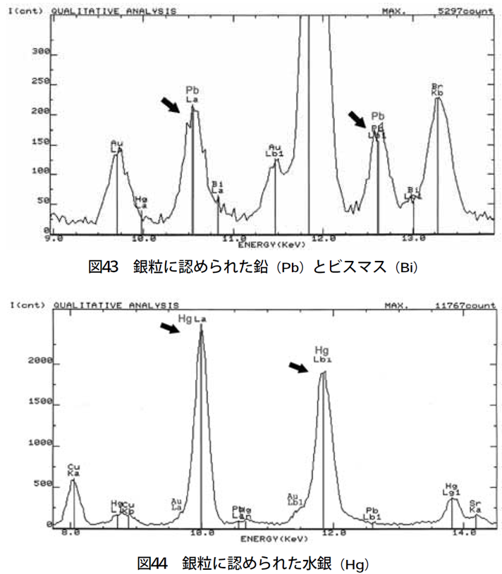
石吹法（cupellation）の証拠と並んで、もう一つの重大な発見が報告されている。飛鳥池遺跡から出土した銀粒の中に、鉛ではなく水銀（Hg）を伴うものが確認された（村上隆 2007, 図44）。この銀粒は、わずかに黄色味を帯びるという視覚的特徴を持ち、EDX分析で水銀（Hg Lα・Hg Lβi）の顕著なピークを示した（図4-1 下図）。
村上隆（2007）は、当時の工人たちが鍍金・鍍銀に不可欠な水銀の金属溶解性を十分に認識しており、この性質を利用して鉱石中の微細な銀粒子をアマルガム化により凝集したとしても技術史的に不自然ではないと指摘する。混汞法（アマルガム法）は西洋ではローマ時代以前から実用化されていたが、日本では17世紀（佐渡金銀山）が初例とされてきた。しかし飛鳥池遺跡の分析成果は、7世紀後半の日本においてアマルガム法の基本的応用がすでに実施されていた可能性を物質的に示す。
確認試料は現時点で一点にとどまるため、本知見は「可能性の実証」として位置づけられるべきであり、飛鳥池における混汞法の恒常的実施を確定するためにはさらなる試料分析の蓄積が望まれる。しかし、石吹法（cupellation）の証拠と組み合わせることにより、飛鳥池遺跡が鉛媒介と水銀媒介という二系統の銀精錬技術を並行的に保有していた可能性は、現段階においても高い蓋然性を持つ。
さらに村上隆（2007）は、金に関わる遺物についても石吹法適用の可能性を論じている。飛鳥池遺跡から出土した小さな金塊の中に鉛を伴うものがあり、その表面には金がゆっくり凝固した痕跡が認められた。この表面組織は熔滴の表面と明確に異なり、cupellationによる金の精錬・純度調整と整合的である。実際の金製品においては用途によって銀との配合比が異なるため（金は銀との合金として使用されることが多い）、飛鳥池遺跡では金の純度調整操作もまた行われていた可能性が高いと村上は指摘する。
これらの総合的証拠に基づき、村上隆（2007）は以下のように結論する：
「鉱石から銀を抽出し、銀の純度を上げる方法として、鉛を使う灰吹法と水銀を使う混汞法（アマルガム法）は、日本ではいずれも近世以降に導入されたとされてきた。しかし、飛鳥池遺跡の出土遺物に対する科学調査は、どちらの技術に関しても、７世紀後半に日本でもその基本はすでに導入されていたことを教えてくれた。この成果は、日本はもとより東アジアの金工技術の水準を考える上で極めて重要である。」（村上隆 2007, p.31）
本稿は、第2章・第3章で確立した物質科学的証拠と、本章で検討した飛鳥池遺跡の科学分析結果（村上隆 2007）を統合し、古代日本における水銀関連技術の発展を以下の三段階として体系的に再構築する。各段階の証拠の確実性水準を明示するため、3.1節の二層構造（測定値層・推論層）の枠組みを継続的に適用する。
鉛同位体比の転換（²⁰⁷Pb/²⁰⁶Pb ≈ 0.856〜0.890 → 0.838〜0.846）が示す、大陸産から近畿産辰砂への調達源の非連続的移行（南ら 2013）。
大和・丹生域の辰砂鉱山へのアクセス確立。乾式蒸留による水銀製錬技術の実装（「無水造飴」の化学的解釈：第2章）。将来的な金属精錬への技術的基盤の形成。
5世紀古墳出土の金銅装帯金具からの金アマルガム粒子の検出（村上隆 2007）。
アマルガム鍍金（Au-Hg系反応）技術の産業的規模への展開。水銀供給体制の安定的持続。王権による威信財生産の制度化。
銀粒・坩堝残滓への Pb・Bi・Hg の複合的付着（EDX 分析：村上隆 2007）。凝灰岩製石製ルツボの多孔質構造による鉛吸収の痕跡。方鉛鉱の出土。
石吹法（灰吹法原型）と混汞法という二系統の銀精錬技術の並行的保有。貨幣鋳造・寺院荘厳・大仏鍍金への技術的対応。律令制経済を支える金属資源管理の高度化。
| 技術史上の問題 | 従来の通説 | 本稿の修正モデル | 根拠 |
|---|---|---|---|
| 水銀製錬技術の確立期 | 5世紀以降（渡来技術として導入） | 3世紀後半——辰砂資源掌握と技術実装の同期 | 鉛同位体比転換（南ら 2013）＋「無水造飴」の化学的解釈（第2章） |
| 混汞法（アマルガム法）の初例 | 17世紀・佐渡金銀山（近世） | 7世紀後半には基本応用が存在 | 飛鳥池遺跡の水銀付着銀粒（村上隆 2007） |
| 灰吹法（cupellation）の初例 | 1533年・石見銀山（近世・朝鮮半島由来） | 7世紀後半に原型技術「石吹法」が成立 | 凝灰岩製ルツボ・Pb・Bi 検出（村上隆 2007） |
| 5世紀の技術的位置づけ | 技術導入初期段階 | アマルガム鍍金の産業化期——水銀供給の安定的運用を前提とした展開 | 古墳出土金銅製品の水銀検出（村上隆 2007） |
| 飛鳥池遺跡の技術的性格 | 鍍金・鋳造を主とする製品製作工房 | 製錬・精錬から製品製作まで一貫した複合的金属化学施設 | 村上隆 2007 の包括的科学調査 |
三段階モデルの論理的妥当性は、各段階の端点が独立した物質科学的証拠によって支持されていることと、段階間の技術的連続性が化学的原理の同一性によって担保されていることの、二重の構造によって確保される。
この連鎖において重要なのは、鍍金（Phase 2）と精錬（Phase 3）が化学的には同一の反応系——金属と水銀のアマルガム形成、その後の加熱による水銀蒸発——に依拠していることである。目的は「金属表面への金の固定」から「鉱石からの金銀の分離・濃縮」へと変化するが、操作の化学的本質は連続している。この原理的連続性が、Phase 1 で獲得された水銀供給体制と製錬知識が、Phase 3 の高次技術へと発展する経路の論理的必然性を担保する。
本稿が提示する技術連鎖の三段階モデルは、以下の条件が示された場合に修正または棄却される：
5世紀の古墳・遺跡群からは、馬具（鞍・鐙・雲珠・辻金具）、武具（刀装具・甲冑装飾金具）、装身具（冠・耳飾り）といった多様な金銅製品が大量に出土している。村上隆（2007）による科学分析は、これらの製品表面に微量の水銀（Hg）が検出されることを明らかにした。これは、古墳時代の金銅製品がアマルガム鍍金（水銀鍍金）によって製作されたことの物質的証拠である。
アマルガム鍍金の技術的プロセスは、第4章（4.2節）で論じた飛鳥池遺跡の混汞法（アマルガム法）と同一の化学反応系（Hg–Au/Ag系）に依拠する。両者の相違は化学的原理にあるのではなく、応用の目的と操作条件にある——鍍金は「金属表面への金の固着」であり、精錬は「鉱石からの金銀の分離・濃縮」である。この原理的同一性こそが、3世紀後半に確保された水銀供給体制が、ほぼ途切れなく7世紀の高次精錬技術へと発展し得た論拠である。
アマルガム法の恒常的実用化には、以下の三条件の同時充足が不可欠である。
アマルガム法では被処理金属の数倍〜数十倍量の水銀が必要となる。加熱回収による再利用が可能であるが、工程ごとの一定量損失は避けられず、継続的な水銀供給が前提条件となる。第3章で確立した「3世紀後半の国産辰砂へのアクセス」という物質的事実は、5世紀の鍍金産業拡大に先行してこの条件が整備されていたことを示す。先行的な資源確保なくして後続の技術産業化は成立しない。
水銀の沸点（357℃）と金銀の融点（Au：1064℃、Ag：962℃）の差を利用するアマルガム法は、温度管理の精度が品質を決定する。飛鳥池遺跡から出土した鞴の羽口と炉の構造は、7世紀後半には高度な温度制御技術が確立していたことを示し、その技術的前身が5世紀鍍金工房にも存在したと推定することは合理的である。
水銀蒸気（沸点357℃で大量発生）は強い神経毒性を有し、長期暴露により認知障害・四肢麻痺・死亡を招く。この有害性は繰り返しの作業経験を通じて経験的に認識されたと考えられ、その結果として製錬作業場の居住域からの空間的分離という組織的対応が生じたと推定される。この技術的必然性が地理的に表現されたものが、次節および第5章で論じる物部神社の二極的配置パターン（鉱山直近型と周辺統括型）である。
本節は、第4章で確立した技術連鎖の論理が、なぜ第5章の空間統計分析へと接続されなければならないかを、因果の連鎖として明示する。これは単なる章の接続ではなく、本稿全体の論証構造における核心的な因果命題である。
この因果連鎖の論理において決定的なのは、「水銀なくして金銀鉱山経営なし」という技術的必然性である。これは化学の法則に基づく命題であり、解釈者の主観に依存しない。したがって、物部神社と鉱山の空間的近接が統計的に証明されたとき、それは「偶然の一致」でも「宗教的山岳崇拝の帰結」でもなく、水銀製錬技術を掌握した集団による鉱山資源の組織的管理という技術的必然性の地理的表現として解釈されるべきである。
第3章で確立した「3世紀後半の国産辰砂掌握」→ 第4章で検証した「5世紀の産業化・7世紀の高次精錬技術確立」という技術連鎖は、以下の問いを論理的に要請する：誰が、どこで、この水銀技術と鉱山資源を管理していたか？ この問いに対する空間統計学的な答えを提示するのが、次章（第5章）である。
本モデルに対する最も強力な考古学的反論は、「3世紀の地層から水銀製錬炉の遺構が発見されていない」という点であろう。この「沈黙の証拠」に対して、本節は化学的・考古学的観点から体系的に応答する。
（1）プロセスの低温性と土器転用——特殊遺構を必要としない技術
水銀の沸点は357℃であり、アマルガムからの水銀蒸発も同程度の温度域で進行する。これは銅の溶解（1085℃）や鉄の鍛造（1200℃超）とは根本的に異なり、特殊な耐火煉瓦炉や強力な送風装置を必要としない。通常の土師器・須恵器を焚き火程度の温度で加熱するだけで、水銀蒸留は化学的に成立する。
『日本書紀』に見える「飴即自成（飴すなわち自ずから成る）」という表現はこの本質を突いている——特定の材料配置と温度条件が満たされたとき、予測可能かつ再現的に進行する相転移過程を記述した技術的観察記録として解釈されるべきである。「自ずから成る」という表現は偶発性ではなく、条件さえ整えば必然的に起こる化学反応の確実性を指す。
（2）若杉山遺跡の「朱付着土器」の示唆
徳島県の若杉山遺跡（弥生終末〜古墳前期）からは、石杵などの粉砕工具と共に、内面に朱が付着した土器が大量に出土している（『辰砂生産遺跡の調査』徳島県立博物館1997）。報告書はこれらを顔料精製用（水簸工程等）と位置づけるが、本稿の視点に立てば、粉砕され土器に充填された辰砂は「加熱用レトルト（蒸留容器）として転用可能な物理的準備が整った状態」にある——あとは熱源を加えるだけで水銀が得られる。
（3）纒向遺跡における「朱」と「熱工学インフラ」の共伴
ヤマト王権の中枢たる纒向遺跡の辻地区等からは、朱が付着した土器と、鍛冶炉跡・木製ふいごの羽口といった熱工学インフラが共伴して確認されている（石野博信他 2011, pp.361-362, 373）。従来これらは「祭祀（朱）」と「鍛冶（鉄）」という別個の営みとして扱われてきた。しかし、「朱（原材料）」と「ふいご（制御された熱源）」が同一の空間に存在していたという事実は、水銀製錬に必要な物理的条件がすべて揃っていたことを意味する。
第3章・第4章を通じて確立した論点を一文で要約するならば：「3世紀後半に確保された国産辰砂（水銀）資源が、5世紀の鍍金産業から7世紀の金銀精錬に至る技術連鎖全体の物質的基盤をなしている」。
この技術連鎖が成立するためには、辰砂産地と金銀鉱山の双方にアクセスを持つ組織的な資源管理主体が存在したはずである。金銀鉱山の経営に水銀が必須である以上、金銀鉱山の管理者は水銀（辰砂）の供給源をも支配下に置く動機と必要性を持つ——これは技術的必然である。
第5章は、この技術的必然性が地理的に表現されているかどうかを、現代の空間統計学によって検証する。物部神社（n=17）と鉱山（n=27）の空間的近接性を、山岳立地という交絡因子を統制した対照群（百名山神社 n=18、一之宮 n=51）との比較においてMann-Whitney U検定にかける——この統計的検証が、本稿の論証ネットワークにおける第三の独立した証拠柱を構成する。
水銀なくして金銀鉱山の経営はあり得ない。したがって、物部神社が金銀鉱山の近傍に統計的有意に集中しているならば、それは物部氏が水銀技術と鉱山資源の両方を組織的に管理していたことの空間的証拠である。
本章は、特定の歴史叙述を提示することを目的とするものではなく、空間分布データに認められる統計的非対称性を検証するものである。
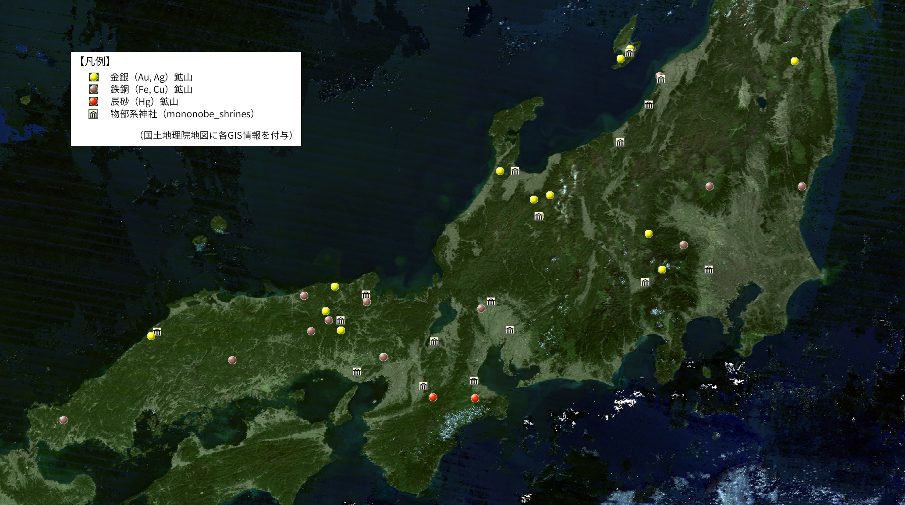
第1章〜第4章が構築した論証ネットワークは、次の三つの独立した証拠柱から成る。①「無水造飴」の水銀製錬としての物理化学的整合性（第2章）、②3世紀後半における国産辰砂への鉛同位体比転換という物質的事実（第3章）、③飛鳥池遺跡が示す水銀アマルガム法の技術的確立（第4章）。これら三柱は、水銀製錬技術が早期に確立されたことおよび辰砂資源が政治的に管理されたことを強く支持するが、いずれも間接証拠の域を出ない。「誰が管理したか」という担い手の問題は、文献史学的には物部氏が有力候補として浮上するものの、文献資料のみでは論証が循環する。
ここに空間統計分析の認識論的意義がある。物部氏の鉱山管理を「祭祀的拠点の地理的配置」という物的痕跡として検証することで、文献解釈に依拠しない独立した第四の証拠柱を構築できる。四つの独立した証拠ラインが収束するとき、「水銀資源管理型政体」モデルの説明力は質的に高まる。
本分析の核心的な論点を最初に明示しておく必要がある。
物部氏は、従来の歴史学において「軍事・祭祀の氏族」として記述されてきた。もしこの記述が正確であるならば、物部系神社は政治的中心地・街道・港湾の近傍に集中するはずであり、金銀鉱山との近接性はいかなる先験的な理由からも予測されない。軍事集団は兵站と交通を、祭祀集団は宮都と政治権力の中枢を指向するのが合理的だからである。
したがって、仮に物部系神社と金銀鉱山の間に統計的に有意な近接性が観察されるならば、それは説明を要する非自明な事実である。「神社は山に多く、鉱山も山にある」という地形上の交絡をすべて統制した上でなお有意差が残るとき、その近接性を説明するメカニズムとして何が最も合理的か。
ここで第2〜4章が確立した化学的事実が決定的な役割を果たす。古代から近世にかけて、金銀鉱石からの貴金属抽出において水銀アマルガム法は技術的に不可欠であった（原理の詳細は第1章1.2節参照）。アマルガム法は金属を鉱石から分離する際に金または銀の数倍量の水銀を消費し、加熱回収による再利用を行うとしても連続的な水銀補給を前提条件とする。すなわち：
この論理は逆も成立する。水銀製錬を管理しない集団が金銀鉱山の近傍に祭祀拠点を組織的に配置する積極的動機は存在しない。金銀の採掘・選鉱作業は金属技術者集団（後の鍛冶部・鋳部）が担うものであり、物部氏のような軍事・祭祀氏族が鉱山に特化して近接配置する根拠は、アマルガム製錬に必要な水銀の供給・管理という技術的役割を担っていた場合にのみ、合理的に説明される。
換言すれば、物部系神社の鉱山近接性は「水銀管理仮説」が真である場合にのみ自然に予測され、それ以外の仮説（軍事集団説・祭祀集団説）ではほぼ予測できない非自明なパターンである。これが「ミッシングリンク」としての本章の位置づけである。第2〜4章の化学的論証が正しければ空間統計的に検証可能な予測が生まれ、その予測の的中は全体の論証構造を補強する。逆に予測が外れるならば、水銀管理仮説の根幹に疑問が生じる——この二重の反証可能性が、本章に科学的正当性を与える。
上記の論理を形式的な演繹構造として明示する。
ここで改めて強調すべきは、「相関は因果を証明しない（Correlation does not imply causation）」という統計学の原則が有効であることを前提としつつも、技術的必然性という事前の理論的根拠が存在する場合、その予測通りの相関の観察は単なる偶然の一致とは論理的に区別されるという点である。本稿における空間的相関の確認は、それ単独では因果証明とならないが、P1・P2という化学的・技術的根拠と組み合わせた際に、P3の蓋然性を質的に高める状況証拠として機能する。
科学的命題は反証可能であることが要件である。本分析の主張する「物部氏の資源志向的配置」に対して、以下の形式で対立仮説を設定する。
| 仮説 | 予測される空間パターン | 統計的基準 | 反証条件 |
|---|---|---|---|
| 帰無仮説（H₀） 偶然配置説 |
物部系神社の最寄り鉱山距離の分布は、百名山神社・一之宮の分布と統計的に差異がない | p ≥ 0.05 | H₀棄却失敗→本モデルの空間的根拠消滅 |
| 対立仮説（H₁） 資源志向配置説 |
物部系神社は、山岳立地という交絡因子を統制した上でも、統計的に有意に鉱山に近接して配置されている | p < 0.05 d > 0.5 |
H₁採択→水銀管理仮説の空間的証拠として機能 |
【反証条件の明示】 以下の結果が得られた場合、本章の空間的論証は棄却される：①物部系神社と対照群（百名山神社 n=18）の鉱山距離分布に有意差が認められない（p≥0.05）、②効果量が小さく（d<0.3）、実質的差異の不存在が示される、③物部系神社の定義を変えても同様の差異が再現されない。全データ・コードを公開しているため、これらの反証テストは第三者によって独立に実施可能である。
本分析において最も重要な方法論的課題は、交絡因子の統制である。「鉱山は山地に多く、神社も山地に多い」という地形的偶然性によって、見かけ上の近接性が生じる可能性を排除しなければならない。
この問題を解決するため、本稿は山岳立地という条件を共有しながら、鉱山管理との機能的関連を持たない神社群を比較対照として設定した。具体的には、深田久弥『日本百名山』に選定された山々に鎮座する神社および主要な山岳修験の霊場を中心に構成した百名山神社群（n=18）である。
この対照群の設計には二重の論理的根拠がある。第一に、百名山神社は物部系神社と同等の「山岳地形への立地傾向」を持つ。もし観察される近接性が単に地形要因に起因するならば、両群の鉱山距離分布は統計的に区別されないはずである。第二に、百名山神社は、少なくとも史料上は水銀製錬・鉱山管理との機能的関連を持たない純粋な山岳祭祀・修験の拠点である。したがって、この対照群に対して物部系神社が有意に鉱山に近接するならば、それは地形効果を超えた「資源志向的配置原理」の存在を示唆するものとなる。
端的に言えば：山にある神社が一般に鉱山に近いのは自明である。しかし「山にある神社のなかで、なぜ物部系神社だけが際立って鉱山に近いのか」——この問いに答えられる仮説は、水銀管理を核とした資源管理モデル以外には見当たらない。
5.1節で定式化した演繹的推論構造（P1・P2・P3 → C1）は、空間分析の設計に直接的な方法論的含意を持つ。本節では、その含意を具体的な統計設計原則として展開する。
歴史空間分析において陥りやすい根本的な誤謬は、仮説生成（hypothesis generation）と仮説検証（hypothesis testing）を同一データセット上で実施することである。特定のパターンを「発見」した後に、それを説明する仮説を事後的に提示する手続きは、いかに統計的に有意な結果が得られても、確証バイアス（confirmation bias）の危険を免れない。本章の設計はこの問題を回避するために、5.1節において化学的・技術的論理から演繹した予測C1を先に明示し、その後に空間データによる検証を実施するという順序を厳守している。仮説は検証に先行し、データはその判定者として機能する。
この方法論的立場から、本分析は以下の三つの設計原則を骨格とする。
仮説先行・データ後行の原則（Pre-registration of Hypothesis）
検証すべき命題——「物部系神社は鉱山管理との技術的必然性から、対照群に比して有意に鉱山近傍に配置されている」——は、データの閲覧に先立つ理論的根拠（第2〜4章の化学的・考古学的論証）から導出されている。これにより、観察された結果を説明するために後付けで仮説を変形する事後的適合（ad hoc adjustment）の余地を遮断する。全データおよび分析コードの完全公開（付録C・D）は、この設計の誠実性を担保する。
交絡因子の明示的統制（Confound Isolation）
5.1節で論じた通り、「神社も鉱山も山地に多い」という地形的交絡は、物部系神社の鉱山近接性を見かけ上生成し得る最大の潜在的偽陽性要因である。本分析はこれを解消するため、山岳立地という条件において物部系神社と等価でありながら、水銀・鉱山管理との機能的連関を持たない百名山神社群（n=18）を地形統制対照群（topographically matched control）として設定する。仮に物部系神社の鉱山近接性が地形要因のみに由来するならば、この対照群との間に統計的有意差は生じない。有意差の出現は、地形効果を超えた「目的志向的な立地選択」の存在を示す。また政治的中心性を基準とした一之宮群（n=51）との比較は、「資源志向性」と「政治的中心指向性」という二つの立地原理の対照的検証を可能にする。
完全再現可能性の保証（Full Reproducibility）
学術的主張の正当性は、第三者による独立した再現・反証の可能性に比例する。本分析は、国土地理院・産総研等の公開地理情報に基づく全座標データ、Haversine式（球面三角法による大圏距離計算）を用いた距離算出コード、Mann-Whitney U検定・Cohen's d算出の実装コードをすべて公開する（付録D）。いかなる研究者も、本稿の結論を独立に検証し、あるいは反証することができる。
これら三原則の核心にあるのは、歴史研究における空間分析を「印象の定量化」ではなく「理論の検証」として位置づけるという方法論的コミットメントである。物部神社の配置を観察してから「何か意味があるのでは」と仮説を立てる帰納的手続きではなく、化学法則から演繹された予測が空間データによって確認されるかを問う仮説検定として本章を設計した所以である。
『日本書紀』・『古事記』における物部氏の記述は、一貫して「武器と軍事を司る集団」としての性格を前景化する。物部守屋の蘇我馬子との対立（587年）はこの軍事的側面を象徴する事件として知られ、以降の歴史叙述において物部氏は「軍事・祭祀の古豪族」という評価で固定されてきた。
しかしこの理解は、一つの根本的な問いに答えていない。なぜ物部氏が「武器と軍事」を掌握できたのか、という問いである。前近代社会において軍事的優越性の物質的基盤は、金属（鉄・銅）の加工技術と供給体制にある。武器の製造は熱工学的プロセスを不可欠とし、その技術の独占は軍事力の再生産を可能にする。物部氏の軍事的機能は、金属製錬・加工という技術的機能の二次的発現として理解することが、因果論的に整合的である。
さらに、5.1節で論じたミッシングリンク命題が示すように、水銀アマルガム法によって金銀を経済的に採取するためには、水銀製錬技術の管理が先行条件として不可欠である（第2・4章）。金属技術の中核に水銀製錬を位置づけるならば、物部氏の技術的基盤はより広い「資源管理システム」として再解釈される必要がある。本稿はこの観点から、物部氏を軍事・祭祀の機能に還元するのではなく、水銀製錬を技術的核として鉄・銅・金・銀にわたる金属資源の調達・製錬・供給を統合的に管理した「技術的コンソーシアム（Technological Consortium）」として捉え直す。これは伝統的評価の否定ではなく、その物質的・技術的基盤を明示することによる深化である。
統計分析に先立ち、分析対象である「物部系神社」の史料的性格について、本稿の立場を明確に述べなければならない。これは研究の誠実性に関わる本質的な問題である。
「物部」を冠する集団の歴史的実態は、均質な単一の氏族に帰着しない。中央の伴造（とものみやつこ）氏族である石上物部氏（物部宗家）、その指揮下で各地に配された職能部民としての「物部」、さらにそれら在地集団を管轄したことで後に「物部」を氏姓とした地方豪族群、という少なくとも三つの異なる社会的層が存在する。また8世紀の律令制確立と氏姓整理の過程において、各地の在地伝承が物部氏の祖神譚に収斂——あるいは積極的に仮冒——された事例があることは、文献史学上の通説でもある。
この多層性は、本章の分析を無効にするものではなく、むしろ分析の射程を精密に規定するものである。本章が空間的に観察しようとするのは、「物部宗家による直接的な拠点設営」という単一の歴史的事実ではない。物部という名称・祭祀・系譜の記憶が特定の地理的位置に定着した結果として形成された空間パターン——すなわち、列島における「物部的なもの」の地理的痕跡全体——である。
この枠組みのもとで本章が示す統計的事実は、いかなる歴史的説明がそれに付されるとしても、独立した一次データとして評価されなければならない。統計的有意性（p値・効果量）は文献解釈の産物ではなく、座標と距離の純粋な算術的帰結だからである。
データセットの設計は、5.2節で論じた仮説先行原則（Pre-registration of Hypothesis）に従い、分析結果の閲覧に先立って確定されたものである。本節では各データ群の選定根拠を論述するとともに、実験群（物部系神社）の構成に関する方法論的課題——選定基準の妥当性とその選定が統計的結論に与える影響——を先に開示する。結論を先取りすれば、付録C.5の感度分析が示す通り、大津・彌彦の2社を除外した保守的ケース（n=15）においても一之宮との比較でBonferroni補正後に1%水準の有意性が維持され、主要な統計的結論は選定基準の変更に対して頑健である。
本分析の地理的対象範囲を福島以南の本州および本州と律令的資源・行政ネットワークで緊密に結びついた近接主要島嶼（佐渡国・隠岐国・淡路国）に限定した。東北地方（青森・岩手・秋田・宮城・山形以北）・北海道・四国・九州・沖縄は除外している。
この範囲設定は三つの独立した根拠に支えられる。
【分析の時代的位置づけ】 本分析は律令期（7〜8世紀）に確立した神社制度の地理的痕跡を観察する。神社の現在地座標は律令期以降に固定化されたものであり、3〜4世紀の初期ヤマト王権の政治的版図を直接検証するものではない。本稿が問うのは、より古い時代の物部氏の資源管理行動が、後世の神社立地という「地理的記憶」としていかなる痕跡を残したか、である。この時間的位相差は本分析の限界として明示的に認識しつつも、「物部氏の資源管理ネットワークが後世の神社立地に空間的痕跡を残した」という命題を検証するうえで、律令期に固定化された神社座標を代理指標として用いることの論理的有効性は損なわれない——地理的痕跡の存否を問うのであれば、痕跡が記録された時点の座標で十分だからである。
実験群の構成において最も方法論的に重要な問題は、「物部」の境界をどこに引くかという選定基準の問題である。この問題は単なる技術的細部ではなく、「選定基準の操作によって結果を有利な方向に誘導した（cherry-picking）のではないか」という批判に直結するため、本節において透明な形で論じる必要がある。
本分析は実験群を二段階の基準で構成した。
基準Ⅰ（社名基準、14社）——分析の不動の核
延喜式神名帳に記載された式内社のうち、社名に「物部」を冠する神社を福島以南の分析範囲内で機械的に全件抽出した14社。この抽出は研究者の裁量を介在させない形式的操作であり、選択バイアスの余地がない。この14社が本分析の統計的核心を構成する。
基準Ⅱ（祭祀・系譜的拡張基準、+3社）——検証対象の拡張
社名に「物部」を冠しないが、物部氏との祭祀的・系譜的連関が史料上確認される3社を追加し、n=17を主要分析の実験群とした。具体的には以下の通りである。
本稿において、社名に「物部」を冠さない彌彦神社（越後国一宮）を物部ネットワークの重要拠点として含めている根拠は、古代の特殊神事「鎮魂祭（みたましずめのまつり／みたまふり）」の共有にある。
一般に「鎮魂」は霊を弔うことと解釈されがちだが、古代における本義は逆であり、「遊離しようとする魂を体内に安鎮させ、活力を与え蘇生を促す」という強力な呪法である。『旧事本紀』や社伝によれば、神武天皇即位時に物部氏の祖・宇摩志麻遅命（うましまじのみこと）が「十種神宝（とくさのかんだから）」を用いて天皇の長寿と国家安泰を祈願したのが起源とされる。律令期には天皇の健康を祈るため、新嘗祭の前日に神祇官によって執行される宮廷の最重要祭祀の一つであった。
この極めて神秘的かつ中核的な古代宮廷祭祀を、数多ある全国の神社のなかで今日まで連綿と伝承しているのは、驚くべきことに以下の三社のみである。
この三社は、本稿が付録Bで示した「大和を起点とし、西道（石見）と北陸道（越後）へ伸びる資源・技術ネットワーク」の「起点」と「両終端」に完全に一致する。社名によらずとも、最高機密の呪法（技術）を共有していた事実そのものが、同じインフラに属していたことの強力な実態的証拠として機能する。
ここで最も注目すべきは、天皇の生命を護るこの最重要祭祀が、皇室の宗廟にして最高神である天照大神を祀る「伊勢神宮」では一切行われていない（継承されていない）という事実である。このパラドックスは、本稿が提示した「体制統合期の構造的摩擦（第9.3.6節・補論）」のモデルによってのみ合理的に説明される。
すなわち、新政権の支配イデオロギーとして外来の「天照大神」が導入されたものの、当初は疫病（新技術導入の副作用）をもたらす「祟り神」として在地社会から激しい忌避を受け、長きにわたる流浪（元伊勢の伝承）の末に、ようやく辺境の伊勢の地へと隔離・定着した（本稿9.2.3補論参照）。この歴史的妥協の結果として、国家の「象徴的権威」は伊勢へと移された一方で、天皇の「実体的な身体・生命の管理（＝医療や化学的知見を含む秘術）」は、引き続き在地の実務・技術インフラを握る「物部氏（石上神宮等）」が独占的に担い続けたと考えられる。これは、外来の象徴的権威（伊勢）と、在地の技術的・身体的管理の実務（物部）が明確に分離・並立していた「多層的ガバナンス」の極めて鮮やかな物証である。
拡張基準3社の選定根拠の詳細は付録Bに収録した。これら3社の選定にあたり、鉱山との距離的近接性は選定基準に一切含まれていない。選定は祭祀的・系譜的証拠に基づいて先行し、距離は選定後に算出された事後的データである。この順序性が、選定バイアス批判に対する第一の応答をなす。
この感度分析の含意は統計的に重要である。効果量d=0.642（Cohen's d, n=15）は社会科学における「中程度から大きな効果（Medium-to-Large）」の範囲内にあり、実質的な有意性は否定できない。また、30km圏内到達率もn=15で60.0%と、対照群（一之宮31.4%・百名山神社38.9%）を大幅に上回る。大津・彌彦の2社が効果量の一部に貢献していることは認めつつも、この2社を除外した15社であっても「鉱山への統計的に有意な近接性」は厳然として存在し、一之宮との比較ではBonferroni補正後も1%有意が維持される。
詳細リストおよびケースA・B・Cの比較表は付録C.1・C.5を参照。
福島以南の本州・佐渡・隠岐・淡路の各令制国において、一之宮として史料上確認される神社を網羅的に収録した。越後国一之宮（彌彦神社）と石見国一之宮（物部神社）は実験群との重複のため除外し、n=51とした。
一之宮は各令制国における最高格式の神社として、律令国家の政治的・祭祀的中心性と直結して立地する傾向を持つ。これを対照群として設定することで、「政治的権威・人口集積地への立地指向」という代替仮説（政治的中心モデル）を明示的に比較対象に含めることができる。物部系神社が一之宮に対しても有意に鉱山に近接するならば、その立地原理が政治的中心性ではなく資源志向性によって説明されることが示唆される。選定は延喜式および各国の社格史料に基づく機械的な全件抽出であり、研究者裁量の介在余地がない。詳細リストは付録C.3を参照。
本分析において方法論的に最も重要な対照群である。5.1節・5.2節で繰り返し論じた通り、「鉱山は山地に多く、神社も山地に多い」という地形的交絡は、物部系神社の鉱山近接性を地形要因のみによって説明できてしまう偽陽性の主要源である。この交絡を遮断するために、山岳立地という条件において実験群と等価でありながら、鉱山管理との機能的連関を持たない神社群を設定した。
選定基準は、深田久弥『日本百名山』（1964年）に選定された山岳のうち、福島以南の本州に所在し、山岳信仰を示す神社が現存するものの機械的全件抽出（18社）である。深田基準は地質・形状・美観を複合的に考慮した独立の選定であり、鉱山分布との関連性は一切考慮されていない。
深田基準の独立性がここで決定的な役割を果たす。もし対照群の選定に研究者が「鉱山から遠い山岳神社」を意図的に選んでいたとすれば、比較の有効性が根本から損なわれる。しかし深田基準は本研究と無関係に確立した第三者基準であり、その適用は機械的である。「山にある神社は一般に鉱山に近い」という地形的期待値をこの対照群が体現しており、物部系神社がこの群を超えて近接するならば、地形要因では説明できない何か——すなわち資源志向的な立地選択原理——の存在を示す。
福島以南の本州に所在する主要鉱山27箇所を採用した。収録基準は「西暦1600年以前（近世初頭以前）の稼働または露頭の存在が文献記録・発掘調査によって確認されるもの」であり、近代以降の機械掘削によって初めて発見されたブラインド鉱床（Blind deposit）はデータセットに含まれない。このデータセットを構成する鉱床は、古代の探索技術——露頭の目視発見・河川でのパンニング・地表変色の観察——によって認識可能な地表浅層の鉱化帯であり、古代人の資源探索行動の空間分布に対して適切な代理指標として機能する。詳細リストと古代稼働可能性評価は付録C.4を参照。
本分析における鉱山データ（n=27）は、無作為な近代鉱山ではなく、文献記録や発掘調査によって「西暦1600年以前（近世初頭以前）」に稼働または露頭の存在が確認できる主要鉱山を厳選して採用している（各鉱山の稼働時期・根拠文献は付録C.4に一覧する）。このため、近代以降の機械掘削によって初めて発見された地下深部のブラインド鉱床（Blind deposit）は本データセットに含まれていない。データセットを構成するのは、古代の探索技術（肉眼での露頭発見や河川でのパンニング等）によって発見・採掘が可能であった地表浅層の鉱床であり、したがってこのデータセットと物部神社の空間的近接性（p=0.0116）は、近代の地質学的偶然ではなく、前近代の資源探索行動の痕跡を反映していると評価できる。
また、有望な露頭であればあるほど、古代において徹底的に採掘されて枯渇するか、あるいは後世の大規模開発によって地表付近の遺構が破壊（上書き）されている可能性が高く、考古学的な採掘痕跡を確認することは本質的に困難である。
古代日本における鉱山採掘技術は、以下の制約条件下で運用されていたと考えられる。
技術的制約
地下水位以下の採掘は排水技術の制約から困難であり、採掘可能深度はせいぜい10〜20m程度に限定されたとみられる。弥生時代〜古墳時代の技術水準では、さらに浅い深度（5m以内）が現実的である。
坑道延長には換気と照明の技術的限界があり、水平坑道でも数十メートルが限界であったとみられる。深部への竪坑掘削は技術的に不可能であったとみてよい。
石器・青銅器時代は露頭採掘が主であり、鉄器普及後（3世紀後半以降）も浅層鉱床に限定されたと考えられる。岩盤掘削には「火攻め法」（加熱後に急冷して岩を破砕）が用いられたとみられるが、これも浅層に限られたと考えられる。
発見可能な鉱床の種類
古代技術で発見・採掘可能な鉱床は以下に限定されたと考えられる：
地表に鉱脈が露出している鉱床。視覚的に識別可能な特徴（辰砂の赤色、孔雀石の緑色、自然銅の金属光沢）を持ち、古代人が肉眼で発見可能。
砂金・自然銅が河床や川岸に堆積している場合、パンニング（揺り分け）による採取が可能。技術的には最も容易であり、古代から実施されていたとみられる。
風化帯（深度5m以内）での採掘。表土剥離後、比較的柔らかい酸化鉱床を採掘する。鉄器普及以降は鋤・くわを用いた掘削が可能であったとみられる。
本分析では、「日本列島における金属資源ポテンシャルの代理指標」として27鉱山を採用し、その妥当性を統計的比較の結果そのものによって検証するというアプローチをとる。
前提：帰無仮説（もし偶然の一致なら）
物部神社の配置が「近代的な鉱山分布との偶然の一致」に過ぎないならば、
同じ山岳立地条件をもつ百名山神社の配置も、同様の確率で鉱山に近接していなければならない。
実際の結果（p=0.0116）
しかし百名山神社は鉱山に近接していない——物部神社のみが特異的に近接している。
この有意な差は帰無仮説を棄却し、偶然による説明を否定する。
逆説的結論（データが自己証明）
物部神社の立地は地質学的偶然ではなく、古代の探索技術（肉眼での露頭発見・河川選鉱等）で 発見可能な地点を意図的に選地した可能性が高い——この結論を、採用した鉱山データセット自身が統計的に裏付ける。
📋 本節の統計的帰結（3点）
【表5-1：三群の鉱山までの距離比較】
| 統計量 | 物部系神社 (n=17) | 百名山神社 (n=18) | 一之宮 (n=51) |
|---|---|---|---|
| 平均距離 (km) | 24.94 | 41.71 | 49.09 |
| 中央値 (km) | 17.43 | 43.93 | 41.70 |
| 標準偏差 (km) | 22.34 | 20.55 | 33.04 |
| 最小値 (km) | 1.55 | 6.39 | 5.23 |
| 最大値 (km) | 85.26 | 71.74 | 134.86 |
| 10km以内の割合 | 29.4% (5/17) | 5.6% (1/18) | 5.9% (3/51) |
| 30km以内の割合 | 64.7% (11/17) | 38.9% (7/18) | 31.4% (16/51) |
注: 一之宮は越後・石見の物部系神社を除いたn=51を使用。
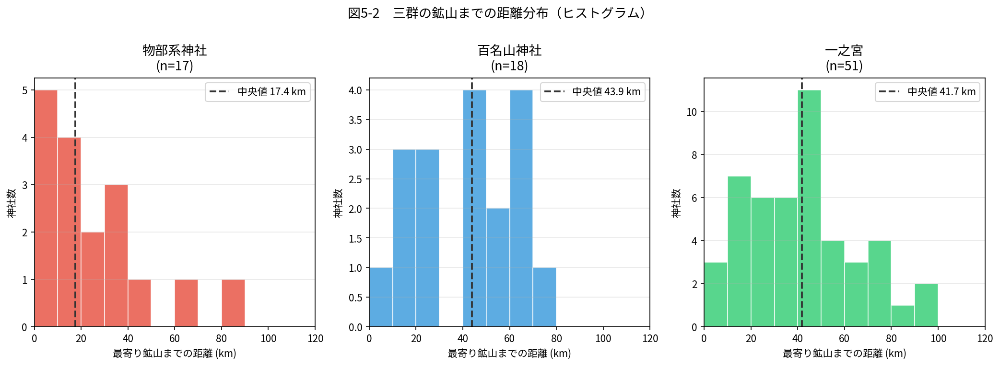
| 群 | n | 平均(km) | 中央値(km) | 最小(km) | 最大(km) | 30km以内(%) | 10km以内(%) |
|---|---|---|---|---|---|---|---|
| 物部系神社 | 17 | 24.94 | 17.43 | 1.55 | 85.26 | 64.7% | 29.4% |
| 百名山神社（対照群①） | 18 | 41.71 | 43.93 | 6.07 | 71.74 | 38.9% | 5.6% |
| 一之宮（対照群②） | 51 | 49.09 | 41.70 | 3.04 | 134.86 | 31.4% | 5.9% |
出典：付録C・D / 全データ公開済み。距離はHaversine式による大圏距離（km）。
重要な観察：
本節では、記述統計で観察された平均距離の差が単なる偶然によるバラツキなのか、統計的に意味のある差なのかを検証する。分析には Mann-Whitney U検定を用い、差の大きさを「効果量（Cohen's d）」で評価した。効果量は両検定とも d≈0.78（Large境界に近いMedium水準）であり、指標の選択が結論の方向性に影響しないことを確認している。技術的補足として：Mann-Whitney Uに厳密に対応する指標はrank-biserial相関（Cliff's δ; Cliff 1993）だが、Cohen's dの基準が多分野に普及しているため可読性を優先して採用した。
観察された差が「偶然に発生する確率」。本稿では2回検定を行うため Bonferroni補正後 α'=0.025 を有意水準とする。
「差の実質的な大きさ」を評価する指標。p値とは独立して差の意味を示す。
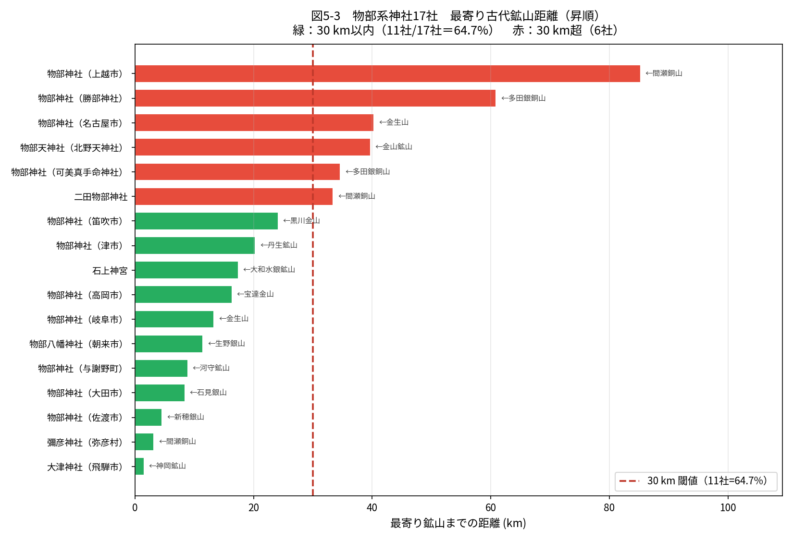
【表5-2：Mann-Whitney U検定の結果（総括）】
| 比較対象 | n₁ vs n₂ | 平均距離の差 | U統計量 | p値 | 補正後基準 α'=0.025 | 効果量 (Cohen's d) | 効果の大きさ |
|---|---|---|---|---|---|---|---|
| 物部系神社 vs 百名山神社 | 17 vs 18 | -16.77 km | 76.0 | 0.0116 | 有意 ✓ | 0.776 | Medium (Large境界に近い) |
| 物部神社 vs 一之宮 | 17 vs 51 | -24.15 km | 234.0 | 0.0014 | 有意 ✓✓ | 0.784 | Medium (Large境界に近い) |
注釈:
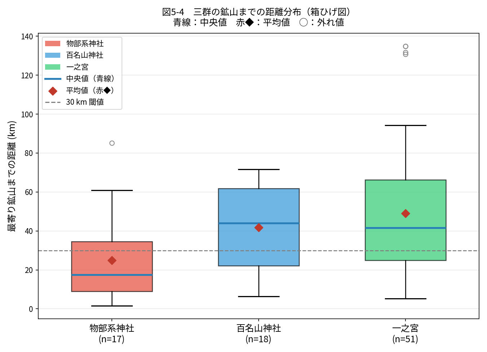
| 群 | n | Q1(km) | 中央値(km) | Q3(km) | IQR(km) | Mann-Whitney p値 | Cohen's d |
|---|---|---|---|---|---|---|---|
| 物部系神社 | 17 | 8.96 | 17.43 | 35.58 | 26.62 | 基準群 | |
| 百名山神社 | 18 | 28.19 | 43.93 | 55.09 | 26.90 | p=0.0116 | d=0.776 |
| 一之宮 | 51 | 24.64 | 41.70 | 64.27 | 39.63 | p=0.0014 | d=0.784 |
IQR = 四分位範囲（Q3−Q1）。Q1・Q3は付録Cデータから算出。
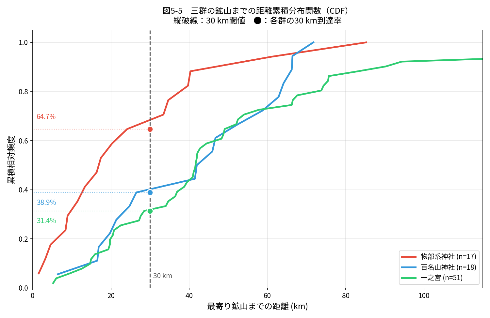
二つの統計検定の結果は、いずれも統計的有意水準を示した。百名山神社との比較はp=0.0116（5%水準で有意）、一之宮との比較はp=0.0014（1%水準で高度に有意）であり、Bonferroni補正後の基準（α'=0.025）でも両者とも有意性を維持する。地理的条件を統制した百名山神社との比較において効果量がMedium水準（d=0.776・Large境界に近接）となったことは特筆に値する。
これは、物部系神社の鉱山近接性が：
ということを、客観的な数値として実証している。
表5-2が示す通り、物部系神社は両対照群と比較して統計的に有意に鉱山に近接しており（百名山: p=0.0116、一之宮: p=0.0014）、この配置パターンは「資源へのアクセス」という明確な立地戦略を反映している可能性が高いと結論づけられる。
── OPEN DATA & INDEPENDENT VERIFICATION ──
本論文の統計的主張（p=0.0116、d=0.776、p=0.0014、d=0.784、30km到達率64.7%）を導いた全データおよび分析コードは、付録C・Dに完全公開されている。
再現手順：付録C（神社・鉱山座標データ）をCSV形式で取得し、付録D（Pythonコード全文）を実行すれば、本論文の全統計値が独立して再現される。追加のデータ請求・問い合わせは不要である。
統計的手法・データ選定・対照群設定に疑義がある場合は、付録のデータとコードを用いた独立した検証・反証を歓迎する。データは公開済みであり、検証の障壁はない。
本分析により、以下の統計的結果が得られた。これらは、従来の定性的な議論（印象論）を超え、物部氏と鉱山の関係を客観的に示すものである。
物部神社は、同じく峻険な山岳部に立地する「主要百名山神社」と比較しても、統計的に有意に（p=0.0116）鉱山に近い。効果量（Cohen's d = 0.776）はMedium-to-Large効果（閾値0.8に近い中程度）であり、両者の分布に明確な構造的差があることを示す。これにより、「物部神社が鉱山に近いのは、単に山間部に多いからだ」という地形交絡説は、統計的に棄却されたと言える。
物部神社は、各国の政治的・宗教的な中心である一之宮（物部系除外、n=51）と比較して、統計的に高度に有意な水準（p=0.0014）で鉱山に近接している。効果量もd=0.784（Medium～Large）と大きく、物部氏の拠点配置が、国府や一之宮のような「行政・農耕の中心地」への配置論理とは異なり、「資源への直接アクセス」を優先する独自の戦略論理に基づいていた可能性を示している。
物部神社の64.7%が鉱山から30km圏内に集中している事実は、古代の徒歩・馬による「1日往復圏」と合致する。ここで注目すべきは、データ内に「鉱山直近（0〜10km）」（29.4%）と「安全緩衝帯（10〜30km）」（35.3%）が混在している点である。この分布は、資源管理における機能的な役割分担（Functional Differentiation）として合理的に説明可能である。
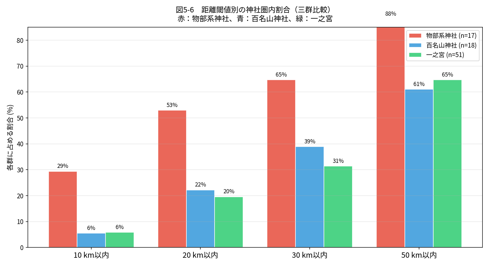
本分析が示した精密な空間相関は、いつ形成されたのか。歴史的・技術的リアリズムに基づけば、このネットワークの成立時期は「3世紀後半から587年まで」の約300年間に絞り込まれる。
なお、一部の物部神社において、社伝上の創建年が587年以降（7世紀から8世紀など）とされている事例があるが、これは本モデルと矛盾しない。古代祭祀においては、「創祀（その地を聖域として祀り始めた起源）」と「創建（社殿が建立され、公的に制度化された時期）」は峻別されるべきである。律令制の整備に伴い、古くからの資源管理拠点が「神社」という形式で追認・再編された際、その時点の年代が「創建」として記録されたに過ぎない。もしその拠点が滅亡後の新設であれば、政治的力学から見て「物部」という朝敵の名を冠することはあり得ず、むしろ「物部」の名が記録に残されたこと自体が、587年以前から続く現場技術者集団（物部部など）による実効支配と土地の記憶が、政権交代後も排除不能なほど強固であったことの左証であるとするのが妥当である。
したがって、現存する社殿の建築年代が後世（平安〜江戸期）であったとしても、その「場所（座標）」と「名前（アイデンティティ）」の起源は、物部氏が資源管理の正当なライセンスを保持していた「黄金の300年間（3世紀後半〜6世紀末）」に打たれた楔（くさび）であると結論づけられる。この「命名のパラドックス」こそが、本分析の統計的有効性を歴史的に補強する最強の論拠であると考えられる。
【補足：社殿遺構の不在に対する理論的回答】
本分析が対象とするのは、後世の造営物（社殿）の存否ではなく、その祭祀集団が長年占有・維持してきた「地理的座標（Location）」そのものである。峻険な鉱山近傍という、農耕に適さない特異な地点を数世紀にわたり特定氏族が固持し続けたという事実は、物理的な社殿の有無を超えた、土地の占有権と資源管理権の継続的継承を意味する。これは、物理的遺構が失われやすい山岳地帯における、地名や祭祀という形式を用いた「情報のインフラ化」であり、座標データそのものが歴史的実態を保存していると解釈できる。
本分析により、物部神社と鉱山の間に強固な空間的相関が検出された。統計学の原則として、相関関係は直ちに因果の方向性を決定するものではないが、前述の歴史的制約を加味すると、以下の三つのシナリオが想定できる。
以上の結果は強力な相関関係を示しているが、解釈にあたっては以下の限界を認識する必要がある。
📊 感度分析：実験群の選定基準を変えても有意性は維持される
大津・彌彦の2社を除外した保守的ケース（石上神宮は含む、n=15）でも、 vs 百名山神社：p=0.0344（5%水準で有意）、d=0.599（Medium）、 vs 一之宮：p=0.0074（1%水準で有意、Bonferroni補正後も維持）。 詳細は付録C.5を参照。
検証命題 ①
物部神社は鉱山に近接して分布する
記述統計により確認
中央値17.4km（vs 一之宮41.7km）
10km圏内：29.4%（vs 5.9%）
検証命題 ②
地理的バイアスでは説明できない
百名山神社との比較
p=0.0116、d=0.776
山岳立地の交絡因子を統制済み
検証命題 ③
政治的配置論理でも説明できない
一之宮との比較
p=0.0014、d=0.784
行政・農耕中心地との構造的差異
＋追加的発見：30km圏内における二層構造
物部系神社の配置には「鉱山直近（0〜10km）：現場鎮守・鉱毒封じ込め」と「周辺部（10〜30km）：安全圏からの統括管理」という機能的役割分担が示唆される。64.7%が30km圏内に集中（一之宮31.4%の2.1倍）。
以上の統計的知見は、前半章（第1〜5章）で提示した「水銀技術と建国神話」の仮説と高い整合性を持つ。 第6〜7章では技術の神話化と資源管理型政体の構造を論じ、 第8章では既存の年代論・考古学的前提を批判的に検討する。 第9章において古代国家形成の新たなモデルを提示する。
【分析の詳細と補足資料】
本章で用いた統計分析の完全な結果、使用したデータセット、およびPythonコードについては、以下の付録を参照されたい：
注：本分析で用いた距離計算にはHaversine式を用い、地球の半径を6371kmとして大圏距離を算出した。
本章は第1〜5章の実証データを踏まえた上で、「なぜこれほど高度な技術的実践が、約1300年間にわたって神話として封印されたのか」という認識論的問いに答える。まず「科学」と「神意」が未分化であった古代の認識構造を定義し（6.2）、その未分化状態が認識論的に未熟な前段階ではなく、統治に極めて合理的な制度的構成であった点を論じる（6.3）。続いて技術情報の戦略的隠蔽の痕跡（6.4）、技術者と文官との構造的断絶がもたらした「非認識的保存」（6.5）、そして奇跡の二重構造による政治的正統化（6.6）を解析し、情報隠蔽の「二段階モデル」として統合する（6.7）。本章の議論は特定の歴史物語の強弁ではなく、物理法則・化学反応・統計的確率に合致する最良説明（Inference to the Best Explanation: IBE）の提示である。
第1章から第5章までの実証部において、本稿は文献史学的解釈への依存を排し、物理法則・化学反応・統計学を外部基準として用いることで、以下の三系統の独立したエビデンスを提示した。
『日本書紀』の「無水造飴（水無くして飴を造る）」は、従来の食品説（米の糖化）では物理的に成立しない。この記述は、辰砂（HgS）の乾式蒸留による水銀製錬（HgS + O₂ → Hg + SO₂、酸化焙焼500〜600℃、または熱分解580℃以上）の物理化学的条件——①無水条件、②液体生成、③魚毒性——を現時点で最も整合的に満たす解釈である。
鉛同位体比分析は、3世紀後半を境として、出土朱の供給源が中国大陸産から国産（近畿産）辰砂へと劇的に置換されたことを物質的に証明する。この転換は、単なる交易ルートの変化ではなく、在地精錬技術の確立を示すと解釈される。
物部系神社（n=17）は、地形的交絡を完全に統制した対照群（百名山神社・一之宮）に対して、Mann-Whitney U検定によりp<0.05水準（一之宮比較はp<0.01）かつ大きな効果量（Cohen's d ≧ 0.77）をもって鉱山に近接配置されている。30km圏内到達率は物部64.7%対一之宮31.4%（2.1倍）であり、偶然では説明不可能な配置パターンである。なお、第5章の空間統計はまた、物部神社が辰砂産地のみならず全国の金・銀・銅鉱山に対しても同様の有意な近接性を示すことを明らかにした。この事実は、単なる「顔料としての朱の確保」では論理的に説明がつかず、水銀を触媒とするアマルガム法による貴金属抽出という化学的用途を前提とした場合にのみ合理的に説明される——これはエビデンスライン①と②を独立に補強する第三の収束点である。
これらの独立した三系統のエビデンスは収束して、初期ヤマト王権が水銀製錬技術を掌握し、列島規模の資源管理ネットワークを構築していたことを強力に示唆する。しかしここで、本稿が最大の認識論的問いに直面する。
「これほど高度で戦略的な技術的実践が、なぜ『日本書紀』において『神々の奇跡』という不可解な神話として記述され、約1300年間にわたってその真意が解読されずに保存されてきたのか？その情報伝達と隠蔽のメカニズムはいかなるものか。」
本章はこの問いに答えるため、古代人の認識構造（6.2）、技術と権力の制度的結合（6.3）、技術情報の能動的隠蔽（6.4）、知識の断絶と非認識的保存（6.5）、そして奇跡の政治的機能（6.6）という五つの分析軸から、リアルな技術がいかにして神話の「琥珀」に閉じ込められたかを論じる。
現代の認識枠組みにおいて、「科学的法則」と「神意」は原理的に区別される概念である。化学反応は物質の性質によって規定される普遍的な因果連鎖であり、神意はそうした自然法則とは独立した超自然的意志とされる。しかし古代社会において、この二つは制度的・認識論的に明確に分離されていなかった。
ここで本章が用いる「未分化」という概念を正確に定義しておく必要がある。
技術・宗教・政治といった近代的カテゴリーが「存在しなかった」という実体論的主張ではない。同一の実践行為が、技術的・宗教的・政治的機能を同時に担っていた状態——すなわち、これらの区別が社会的に明示化・制度化されていなかった構造的状況——を指す分析概念である。この点で本章は、近代的な概念区分を古代に遡及的に投影する立場を取らない。
この区別は重要である。「区別が存在しなかった」という主張は、古代人を認識能力の低い存在として扱う誤った前提に基づく。本章が描くのはそのような「認識の未熟さ」ではなく、技術的実践と宗教的権威と政治的支配が単一の制度に集約された、構造的に異なる知の秩序である。
古代日本の宗教的実践において「祈誓（うけい）」は、決断の前に神意を問う重要な儀式として位置づけられた。その典型的なパターンは、①重要な決断の前に神に祈願し、②「志が正しければ特定の兆しを示したまえ」と請い、③兆候の出現を待ち、④兆候が現れれば神意が確認されたとして行動に移す、というプロセスである。
辰砂製錬において、反応条件が適切に整えられれば必ず水銀が析出する。古代の技術者たちは化学反応式（HgS + O₂ → Hg + SO₂）を明示的な知識として持たなくとも、反復的経験の蓄積を通じて、「特定の材料・配置・操作手順が、ほぼ例外なく特定の結果をもたらす」という事実を体知していた。本稿はこれを「経験的確実性（empirical certainty）」と呼ぶ。
化学反応式の知識を持たない古代の技術者が、反復的な実践経験を通じて「この手順を踏めば必ずこの結果が得られる」と確信する状態。古代においては、この確実性が「神意の確実性」と認識論的に区別されなかった。すなわち、化学反応の再現性が、古代的認識において「神意の確実性」と等価であった点がこの概念の核心である。
ここでいう「神意」は不可測・恣意的なものではなく、「正しい手順に対して必ず対応する安定的な応答システム」として経験されていた。すなわち、化学反応の再現性が、古代的認識において「神意の確実性」と等価であったのである。この認識論的等価性こそが、技術と宗教が未分化でありえた根本的理由である。
神武が宇陀に至り「無水造飴」を試みた際の「飴成らば、則ち……（飴が完成したならば、天下を平定できるだろう）」という祈誓は、一見すると「技術の成否が全くの未知であった」かのように読める。しかし、もし水銀製錬が外来の技術パッケージとして既に持ち込まれていたとする本稿のモデル（7.3.2節等）に従えば、この記述は別の技術的リアリズムを帯びてくる。
いかに原理を経験的に熟知していても、新たに発見した鉱床（宇陀）の辰砂が、これまでの産地のものと同じ品位を持ち、同じ温度・手順で過不足なく水銀を産出するか（不純物による反応阻害がないか）は、実際に火を入れてみなければ分からない。すなわち、この「祈誓」の正体は、未知の巨大鉱床の鉱石を用いた「初回のテストプラント稼働（テストバッチ）」であったと解釈できる。
「飴が成った」という結果は、単なる奇跡の発生ではなく、「この地の鉱石が、我々の持つ技術体系で間違いなく処理可能である」という実証実験の成功を意味した。だからこそ、その直後に「これで天下を平らげることができる（不假鋒刃之威）」という、資源と技術の適合を確認した者の、極めてリアリズムに満ちた確信（勝利宣言）へと直結したのである。
同一の行為が技術的文脈と宗教的文脈でそれぞれどのように記述されたかを対比することで、両者の同型性（isomorphism）が明確になる。重要なのは、儀式的記述が技術的手順を「覆い隠している」のではなく、それを別の意味秩序に翻訳しているという点である。以下の表は、辰砂製錬の各段階において推定される技術的操作と儀式的記述の対応を示す。
表6-1 技術的手順と儀式的手順の同型対応
| 段階 | 技術的操作手順 | 儀式的行為記述（推定） | 共通の身体的動作 |
|---|---|---|---|
| ① | 丹生川上など特定産地の辰砂を精選・粉砕 | 丹生川上という聖地での採集と浄化 | 特定地点への移動と物質の選別 |
| ② | 密閉容器（厳瓮など）に辰砂を収め密封 | 厳瓮（いつへ）への奉納と封印 | 容器への収納と密閉 |
| ③ | 一定温度（500〜600℃）で規定時間加熱 | 神への誓願と火の奉献 | 火の制御と待機 |
| ④ | 液体水銀の出現・分離を観察・回収 | 神意の顕現としての生成物確認 | 生成物の確認と回収 |
ここで注目すべきは、「儀式は技術を秘匿するための単なる仮装ではなく、技術を社会的に安定して再生産するための制度的形式であった」という点である。加熱の時間、火力の調整、容器の扱い方といった技術的要素は、文書ではなく儀礼的所作として学習された。「どのように祈るか」「どの順序で行うか」という宗教的規範は、そのまま「どのように操作するか」という技術的規範でもあった。Lave and Wenger（1991）が「実践のコミュニティ」と呼んだ、身体的実践を通じた知識の伝承様式が、ここに見出される。
本章の中心命題——「技術的実践が宗教的権威として経験される」——は、日本古代史に固有の特殊現象ではない。比較神話学・宗教史学の蓄積は、この現象が古代ユーラシアを横断する普遍的パターンであることを広く支持している（Eliade 1956; Tylor 1871）。
表6-2 世界各地の鍛冶神・技術神
| 文化圏 | 鍛冶神・技術神 | 特徴 |
|---|---|---|
| ギリシア | ヘパイストス（Ἥφαιστος） | 鍛冶・火・金属加工の神。隻眼（一つ目）のサイクロプスを従属させる |
| 北欧 | ドヴェルグ（矮人族） | 別名：ドワーフ。地下で神々の武器を鍛造する精霊 |
| ケルト | ゴヴニュ(Goibhniu) | 魔法の武器を作る技術神 |
| アフリカ（ヨルバ） | オグン | 鉄と戦争の神 |
| 日本 | 天目一箇神・金屋子神 | 鍛冶・金属加工の守護神 |
これらが地理的に独立した文化圏で別々に発生していることは重要である。高温の火を制御し、石から新たな物質を創り出す行為——相転移（固体→液体→金属）という変換現象——が、死と再生・変容と創造の象徴として宗教的意味体系に組み込まれる人類に普遍的な傾向を示す。
水銀製錬においては、この「相転移の神聖化」がさらに強化される要因が存在する。辰砂（赤色固体）から水銀（銀色液体）への変容は、色彩（赤→銀）と状態（固→液）の二重の変換を伴う。この視覚的衝撃は他の金属加工よりも強烈な「奇跡感」を与えたであろう。したがって「無水造飴」が神聖化・神話化されたことは、日本列島における孤立した現象ではなく、古代ユーラシアに共通する技術神話化パターンの一事例として理解される。これは本章全体の中心命題に対する、比較文化的次元からの独立した支持である。
技術的実践と宗教的・政治的権威が分離されなかったのは、少なくとも以下の三つの構造的理由による。
技術と宗教の制度的結合がもたらした最も精巧な統制機構は、「意味解釈の分配権の独占」である。
この構造において、知識の公開は権威の失墜をもたらさない。なぜなら、技術者が「これは化学反応だ」と知っていることは、民衆が「これは神の奇跡だ」と経験することと矛盾しないからである。それぞれの解釈は別々の社会的文脈で機能し、互いに干渉しない。こうして「無水造飴」は知識の階層化によって権威を強化する装置として機能した——知識を独占することで権威を持つのではなく、知識の意味づけを独占することで、誰が何を知っても支配構造が揺らがない仕組みが構築された。
前節で見た「技術と宗教の未分化」は、知識の自然な伝承形態としての性格を持つが、ヤマト王権と技術氏族はさらに積極的に、戦略資源である水銀の情報を意図的にコントロールした痕跡が史料に残されている。本節では、この「能動的隠蔽（Active Concealment）」の三つの証拠を検証する。
本節の議論に入る前に、第二段階の「非認識的保存（6.5）」との関係について重要な区別を整理しておく。「記紀編纂者は化学反応を理解できなかった」という命題と、「記紀編纂者は特定の神格を政治的に問題含みであると理解し非明示化した」という命題は、知識の種別として完全に異なる。化学反応のメカニズムは現場の実践知（暗黙知）であり、文字教育を受けた文官には伝わっていない。しかし、「特定の神格が辰砂産地と結びついており、政治的に秘匿すべき存在である」という判断は政治的・歴史的知識であり、8世紀の宮廷官僚が保有していた可能性がある。二種の「無理解」と「理解」が論理的に両立する根拠はここにある。
『日本書紀』神武紀において、神武軍は紀ノ川を遡上し「丹生川上（にうのかわかみ）」に至り、そこで「天神地祇（あめつちのかみ）」を祭ったと記されている。この地名は文字通り「丹（辰砂）を生じる川の上流」を意味する地理的記述であり、辰砂産地の中心地を指す。
しかし極めて不可解なことに、『日本書紀』にも『古事記』にも、その地を本拠地とし、後に紀伊国一宮とも称される水銀の女神「丹生都比売神（ニウツヒメ）」を祀る丹生都比売神社の名は一切登場しない。9世紀以降の文献において、ニウツヒメは水銀（丹）の採掘・製錬と深く結びついた神格として確認され、高野山開創にも関与する絶大な信仰対象となるが、記紀という国家的正典からは完全に不在である。なお本研究の統計分析における紀伊国一宮は、全国一の宮会の標準的リストに従い日前神宮を採用している（付録C.3）。
「丹生川上」という地名記述は保持しながら、その地を司る具体的神格のみが欠落しているという非対称性は、単純な記録漏れとは考えにくい。これは、「水銀（丹）という特定の戦略資源と直結する神格」の存在を公的叙述から意図的に非明示化した可能性を強く示唆する。資源の聖地を示す地名は残しつつ、その資源の性格を明確に示す神名を消去することで、一般の読者（後世の文人・外部の人間）が「丹生川上＝辰砂の産地」という連想に至ることを阻害する情報操作が行われた可能性がある。
以下の論点は、第2章で確立した化学的解釈——すなわち「飴（あめ）」が水銀の物性的特徴（銀色の粘性流動体）に基づく命名であること——を前提として初めて成立する。第2章の解釈を受容しない立場からは成立しない条件的論点であることを最初に付記する。
第2章で論じた通り、水銀を「飴（あめ）」と呼称したことは、物質の物理的特性（粘性のある流動性液体）に基づく直感的命名である。しかし同時に、これは高度なステガノグラフィー（steganography）——情報の存在そのものを隠蔽する技術——として機能した。
「飴を造る」という表現は、一般の民衆・非技術者・外部の交易者には無害な「甘味食品の製造」にしか見えない。しかし技術を共有する内部の集団（物部氏・丹生氏など）にとっては、「無水条件で辰砂から液体金属を抽出するプロセス」を正確に指し示すコードネーム（暗号）であった。暗号化された情報は、コードを知らない者には「隠されている」とさえ気づかれない。
Kahn（1967）が指摘するように、ステガノグラフィーは暗号化（cryptography）とは異なり、メッセージの存在自体を不可視化する。「無水造飴」はまさにこの原理を完全に実現した情報隠蔽の傑作である。
なぜこのような多層的な情報統制が必要であったのか。それは水銀技術が、古代国家の存亡に関わる戦略的最高機密であったからである。水銀は以下の三つの独立した権力基盤を同時に構成する唯一の物質であった。
表6-3 水銀の多面的な戦略的価値
| 価値の種類 | 具体的用途 | 権力基盤への意味 |
|---|---|---|
| 経済的価値 | 金銀アマルガム精錬（触媒）、朱（高価顔料）の供給 | 鉱山経済の支配、交易の独占 |
| 祭祀的価値 | 墳墓・儀礼空間への朱の散布（聖別）、辰砂を用いた祭祀 | 宗教的権威・他界観の独占 |
| 軍事的価値 | 毒物（水銀中毒）・防腐剤としての利用 | 敵対勢力への抑止力 |
これらの価値が単一物質に集約されているため、水銀製造法の漏洩はヤマト王権の戦略的優位性の全面的喪失を意味した。技術を世襲する氏族（独占的地位の維持）と中央政権（戦略的優位の維持）の利害は完全に一致しており、両者による組織的な情報統制が敷かれたと推論される。
能動的に隠蔽・統制された技術情報が、いかにして約1300年もの間、その形を保ったまま史書に封印され続けたのか。そこには知識の伝承構造における決定的な「断絶」が存在し、その断絶が逆説的な保全機構として機能した。
古代社会における知識の担い手は、根本的に異なる二つのタイプに分類される。Polanyi（1958）が「暗黙知（tacit knowledge）」と「明示知（explicit knowledge）」として区別したように、金属精錬のような実践的技術知は、言語化困難な身体的・経験的知識の典型である。
物部氏・丹生氏などの技術者集団は、炉の温度管理、辰砂の品質選別、密閉と加熱のタイミングといった精緻な実践知を、口伝と実地訓練のみによって世代内・世代間で継承した。この知識は文字化されることなく、実演と身体経験を通じてのみ伝達可能なものであった。
一方、8世紀初頭（712年・古事記、720年・日本書紀）に国家的事業として編纂を主導した官僚たちは、漢籍・訓詁学・文章経国の教育を受けた知識人であった。彼らは高い知的能力を持ちながらも、現場の化学技術に関する実践知は持ち合わせていなかった。ここに「技術を行う者」と歴史を「書く者」の間に、超えがたい認識論的断絶が生じた。
補足として、この断絶には考古学的な含意がある。初期の水銀蒸留（無水造飴）は、密閉した通常の土器を焚き火程度の温度（約357〜580℃）で加熱するだけで化学的に成立する。このような「低可視性技術（Low Visibility Technology）」は、精錬専用炉の遺構を残さない可能性が高く、考古学的に通常の煮炊き用遺構と区別が困難である。したがって「炉の遺構が発見されていない」という消極的証拠は技術の不在を意味しない。南ら（2013）が示した鉛同位体比の急変という積極的証拠（生成物の痕跡）が存在する以上、それを生み出したプロセスは存在するはずであり、消極的証拠よりも積極的証拠を優先することが方法論的に適切である。
編纂者たちが古伝承の中に「無水造飴（水無くして飴を造る）」という表現を見出したとき、彼らの知識体系ではそれを「甘味食品の製造」としか解釈できなかった。しかし、甘味料（飴・糖）の製造には水が不可欠であることは、日常的経験として自明である。「水を使わないで飴を造った」という記述は、彼らにとって物理的に矛盾する命題であった。
ここで重要なのは、この矛盾に直面した際の編纂者の対応である。もし彼らに中途半端な化学的知識があれば、この矛盾を解消しようとして「水を使って飴を造った」などと合理的に書き換えていた可能性がある。しかし彼らはそうしなかった。理解できないがゆえに、この記述を「神武天皇の時代に起きた、人智を超えた神の奇跡（寓話）」として解釈し、原文のままテキストとして記録したのである。
記録者が伝承の技術的内容を理解できなかったがゆえに、合理化・修正を行わず原形のままテキストに封印した現象。情報の改変能力の欠如が、逆説的に情報の完全な原形保存を実現した機構。「編纂者の無理解が、意図的改変という最大のリスクから情報を護る盾として機能した」という逆説的構造を持つ。
類比：タイムカプセルとしての神話——内容を知らずに封印した者が、最良の保存者となった。
この概念の理論的意義は大きい。情報保存の通常モデルでは、理解者が意図的に情報を保護する（例：図書館の写本保護）。しかし非認識的保存は、理解者による意図的保護よりも、非理解者の受動的記録が情報をより完全な形で保存しえるというラディカルな逆説を提示する。これは情報史・技術史における新しい分析概念として、日本古代史研究の枠を超えた汎用性を持つと考えられる。
「化学技術を日常語や神話的比喩で覆い隠す」という記述様式は、日本古代史に固有の現象ではない。中国の錬丹術文献、特に晋代の葛洪（283〜343年頃）による『抱朴子（ほうぼくし）』においても、水銀は「流珠（りゅうしゅ）」「神水（しんすい）」、製錬による生成物は「甘露（かんろ）」「金液（きんえき）」などの有機的・神話的比喩で表現され、化学反応の核心を直接記述しない技術言語が確認される。
Sivin（1968）はこの傾向について、錬丹術師が技術を「体系的知識」として伝達するよりも「秘密の伝授」として権威化することで、その地位と影響力を維持しようとする社会的動機を指摘する。「知識の難解化・神秘化」は技術保有者の社会的価値を高めるための戦略的行為でもあった。このように、秘匿性の高い化学技術が言語化される際に宗教的・神話的語彙のベールを纏うという現象は、古代ユーラシアにおける普遍的な情報変容パターンであり、「無水造飴」はその典型例として位置づけることができる。
技術が神話化された結果、「無水造飴」の成功は、王権の支配を正当化する強力な政治的装置として機能した。本節では、その作動メカニズムを「可視性の非対称性」「意味解釈の分配による正統化」「情報伝達の多層性」という三つの次元から解析する。
水銀製錬という技術的プロセスにおいて、関与者の立場によって「見えるもの」は根本的に異なる。
技術者の視点からは、反応の全プロセスが可視的である。辰砂の選別・粉砕・充填・密閉・加熱温度の制御・反応時間の管理・冷却・水銀の回収——これらは学習可能で再現可能な操作体系であり、適切な訓練を受けた者であれば誰でも実行できる工学的プロセスである。
一方、一般民衆が目撃するのは結果のみである。「赤い石が密閉された容器に入れられ、火にかけられた後、銀色の液体が現れ、川の魚が次々と浮き上がる」という光景は、プロセスの不可視性ゆえに、「神に選ばれた王にのみ可能な、超自然的奇跡」として立ち現れる。技術者にとっての「再現可能な操作」が、非技術者には「神の力を得た者のみが行いうる奇跡」として経験される。
Foucault（1975）が「監視と規律」において論じた権力と知識の結びつきは、ここでは「技術知識の独占が政治権力を生産する」という形で体現されている。奇跡が成功できる主体は技術の管理主体と完全に一致し、「神意の証明 → 王権の正統化 → 支配秩序の安定」という連鎖を生む。ここで重要なのは、「奇跡」という理解が単なる誤謬ではない点である。技術的過程が秘匿され結果のみが可視化される限り、それを超自然的な力の顕現として理解するのは当時の知識構造において最も合理的な解釈であった。
古代社会において、「なぜその者が支配するのか」という正統性（legitimacy）の問いは、武力の保有だけでは解決できない。Weber（1922）の社会学において、支配の正統性の根拠は伝統的・カリスマ的・合法的の三類型に分類されるが、古代における「奇跡の実演」はカリスマ的正統性の最も強力な形式のひとつである。
神武天皇が「祈誓（うけい）」を行い、見事に飴（水銀）を生成してみせたという「奇跡の成功」は、神武が「神に選ばれた正統な統治者」であることの実証的証明として機能した。ここで重要なのは6.3.3で論じた「意味解釈の分配権の独占」との連動である——技術的成功という物質的事実が「神意」へと翻訳される過程を独占的に管理することが、王権の正統性の最深部を構成した。技術は宗教的権威を補強し、宗教的権威は技術の独占を正当化する——この相互強化関係こそが、古代国家形成期における権力の核心であった。
以上の分析を踏まえると、「無水造飴」という単一のテキストが、驚くべき多層的情報構造を持っていることが明らかになる。
表6-4 「無水造飴」の多層的意味構造
| 読み手の立場 | 「無水造飴」の意味 | 情報機能 |
|---|---|---|
| 技術者（物部・丹生氏族） | 水銀製錬の正確な操作プロセス（辰砂→水銀の化学反応） | 実践的知識・技術伝承 |
| 一般民衆 | 神武天皇の超自然的力を示す神話的奇跡 | 政治的服従の正当化 |
| 中央政権・大王家 | 支配の正統性を裏付ける政治的物語 | 統治権威の装置 |
| 後世の文人・官僚 | 意味不明だが保存すべき古代の「高貴な伝承」 | 典拠・先例（故事） |
| 20世紀以降の研究者 | 米糖化（水飴製造）の比喩的記述（従来解釈） | 食文化史料 |
| 本稿の分析視点 | 辰砂乾式蒸留による水銀製錬の化学的記録 | 科学的再解読 |
この多層構造の最も重要な特性は、各意味層が互いに干渉することなく共存しているという点である。技術者は自らの意味層を持ちながら、民衆の意味層を否定しない。民衆は神話的解釈を持ちながら、技術者の実践を妨げない。この非干渉的多層構造ゆえに、特定の解釈が失われてもテキスト自体は淘汰されず、約1300年間にわたって保存され続けたのである。これは6.3.3で論じた「意味解釈の分配権の独占」が作り出した情報構造の必然的帰結である。
以上の分析から、「無水造飴」が神話として保存されたプロセスは、以下の二段階モデルとして総括される。
表6-5 情報隠蔽の二段階モデル
| 第一段階 能動的隠蔽（Active Concealment） |
第二段階 非認識的保存（Non-cognitive Preservation） |
|
|---|---|---|
| 主体 | 技術氏族（物部・丹生）と大王家 | 記紀編纂者（8世紀の文官官僚） |
| 時期 | 3〜4世紀（技術運用期） | 712〜720年（編纂期） |
| 手法 | 隠語（「飴」）の使用、ニウツヒメの不明示化、口伝による情報制限、意味解釈の分配権の独占 | 「物理的矛盾」を神話として原形保存（改変能力の欠如が保全機構として機能） |
| 動機 | 戦略資源の独占・支配正統性の維持 | （意図なし）理解不能ゆえの改変回避 |
| 結果 | 技術情報が社会的に不可視化された | 原形がタイムカプセルとして約1300年間保存 |
第一段階の「能動的隠蔽」は、技術情報の漏洩を防ぎ、資源の経済的・政治的独占を維持することを目的とした積極的な情報統制である。第二段階の「非認識的保存」は、行為者の意図とは無関係に、理解能力の欠如が逆説的に情報の完全保存を実現した受動的なプロセスである。
この二段階プロセスを経ることで、水銀製錬という実践的技術は、神話という意味的コンテナの中に封じ込められた。神話という意味的コンテナが、技術の核心情報を約1300年間保護し続けた。
本章が示したことは、ヤマト王権が単なる武力集団でも宗教的権威の集合体でもなく、極めて高度な「情報マネジメント能力」を有していたということである。技術的確実性を宗教的権威へと変換し、意味解釈の分配権を独占し、資源の独占を神意の独占へと昇華させ、その構造を約1300年以上にわたって維持し続けた情報操作の精緻さは、初期ヤマト王権が卓越した「知識国家（knowledge state）」としての性格を持っていたことを示唆する。
本章の結論が示すブリッジ：このように神話のベールに包まれた水銀技術を実際の国家戦略として運用したとき、ヤマト王権はいかなる地政学的デザインと資源ネットワークを構築したのか。第7章では、本論文の核心である「パックス・マキムク（Pax Makimuku）」へと至るリアルな歴史シナリオと地政学の全貌を解明する。
本章は第6章で解明した「神話化のメカニズム」を受け、その神話に包まれた水銀技術が現実の国家戦略においていかに運用されたかを論じる。本章の議論は、特定の歴史物語の強弁ではなく、物理法則・化学反応・統計的確率に合致する最良説明（Inference to the Best Explanation: IBE）の提示である。従来の「武力征服」論・「祭祀連合」論という二項対立を超え、初期ヤマト王権を水銀技術と鉱山ネットワークを基盤とする「資源コンソーシアム（共同事業体）」として再定義する（7.2・7.3）。次に、その形成史の物証として二人の「ハツクニシラス」と四道将軍の事績を資源戦略的に再解釈し（7.4）、最後に王都纒向の立地に込められた環境設計思想と枕詞「あをによし」の技術史的再読解を示す（7.5）。
前章（第6章）では、高度な水銀製錬技術がなぜ「神話」のベールに包まれ、宗教的権威へと変換されたのか、その認識論的・情報論的メカニズムを解き明かした。本章では視点を現実の歴史・地政学へと移し、「神話化された化学技術」が具体的な国家戦略においていかに運用されたかを論じる。
方法論として、本章は最良説明への推論（IBE: Inference to the Best Explanation）を採用する。本稿が提示するのは特定の歴史的物語の強弁ではなく、第1〜5章で確立された「動かせないデータ」——物部神社の空間統計（p<0.05水準、一之宮比較はp<0.01）、鉛同位体比の急変（3世紀後半）、水銀技術の連続性——をパズルのピースとして、それらを最も低コストで整合的に説明できるモデルを導出するものである。既存の食品説・偶然説・軍事征服説を維持するには、これらのデータに対して同等以上の科学的整合性を持つ説明を提示する必要がある。
従来の古代史研究において、ヤマト王権による列島統合は主に「武力による征服」あるいは「宗教的権威による緩やかな連合」として説明されてきた。本章ではこの二項対立に代わり、初期ヤマト王権を水銀技術と鉱山ネットワークを基盤とする「資源コンソーシアム（共同事業体）」として再定義し、そのダイナミックなテクノロジー・マネジメントの全貌を明らかにする。
辰砂（硫化水銀、HgS）の利用は縄文時代にまで遡るが、その用途は一貫して「朱（顔料）」としての祭祀的・象徴的使用に限定されていた。この時期の辰砂は、砕いて色を塗るという物理的加工の対象であり、その価値は「視覚的な赤」という宗教的権威に集約されていた。
ここで本モデルに対する最も基本的な批判を正面から検討する。「辰砂の確保は朱（顔料）の需要で十分に説明できる」という批判は論理的に想定される。しかしこれは成立しない。なぜか。
単なる顔料の確保であれば、在地勢力は辰砂鉱山（宇陀・丹生）へのアクセスを確保するだけで事足りる。しかし第5章の空間統計が示したのは、物部神社が辰砂産地だけでなく、全国の金・銀・銅鉱山に対しても p<0.05水準（一之宮比較はp<0.01）という有意水準で近接配置されているという事実である。金銀鉱山は辰砂産地ではない。この全国的な金銀鉱山ネットワークとの結びつきは、「顔料としての朱の確保」という動機では論理的に説明が不可能である。
金銀鉱石から貴金属を効率的に抽出するアマルガム法の触媒として水銀を必要としたからこそ、辰砂資源ネットワークと金銀鉱山ネットワークが空間的に連動したと解釈する方が、説明コストが格段に低く合理的である。これは「顔料説」に対する空間統計からの直接的な反証である。
本モデルが提唱する画期は、3世紀後半において、辰砂の価値が支配者層の内部で劇的に転換されたことにある。
第3章の鉛同位体比分析が示した「3世紀後半における国産辰砂への劇的な調達源転換」は、単なる顔料の国産化ではなく、水銀を自給するための「資源独立革命」の物理的痕跡であったと解釈できる。
水銀製錬技術の確立により、辰砂の独占はヤマト王権に以下の三層の権力基盤をもたらした。
表7-1 資源支配の三層構造モデル
| 層 | 権力基盤 | メカニズム | 帰結 |
|---|---|---|---|
| 第1層 | 祭祀的影響力 | 辰砂独占 → 朱供給の支配 | 各地首長の葬送儀礼への介入・依存関係の形成 |
| 第2層 | 技術的覇権 | 水銀製錬 → アマルガム技術 | 威信財生産・金銀精錬の独占 |
| 第3層 | 経済的支配 | 希少資源 → 経済的依存関係 | 反乱コストが利得を上回る「抑止力」の構造化 |
三層は独立しているのではなく、相互に強化し合う構造を持つ。祭祀的影響力は技術的覇権によって裏打ちされ、技術的覇権は経済的依存関係によって持続される。この自己強化ループが、ヤマト王権の支配の安定性と拡張性を支えた。とりわけ第3層の「反乱コストが利得を上回る」という構造は、7.4.3で論じる「環濠なき都市・纒向」の成立を説明する鍵となる。
従来の技術史において、3世紀後半の辰砂確保と7世紀の飛鳥池遺跡（大規模な金銀精錬）の間には、数世紀の「技術的空白」が存在するとされてきた。しかし本稿は、この空白を埋めるミッシングリンクとして、5世紀のアマルガム鍍金技術に着目する。
表7-2 水銀技術の三段階発展モデル
| 段階 | 時期 | 技術的特徴 | 歴史的意義 |
|---|---|---|---|
| 第1段階 | 3世紀後半（神武・崇神期） 資源掌握・技術実装期 |
国産辰砂産地（宇陀など）の掌握。乾式蒸留による水銀製錬技術の実装。鉛同位体比が急変 | 大陸産から国産水銀への独立。「資源独立革命」 |
| 第2段階 | 5世紀（古墳中期） アマルガム鍍金の産業化期 |
金銅製品（馬具・武具・装身具）の爆発的普及。王権による威信財生産の制度化 | ミッシングリンク：3世紀の資源確保と7世紀の精錬を橋渡しする産業化の完成 |
| 第3段階 | 7世紀後半（飛鳥池遺跡） 複合精錬技術の確立期 |
石吹法（cupellation）と混汞法（アマルガム法）の並立。大規模金銀精錬の実証 | 貨幣鋳造・大仏建立を支える国家財政の物質的基盤へ |
この三段階モデルにより、「3世紀後半の資源確保」は単なる顔料の国産化ではなく、その後の「金・銀の時代」を500年にわたって支えるミッシングリンクの起点として機能したことが示される。三段階を貫く一本の軸は「水銀」という触媒であり、これが掌握された3世紀後半こそが、日本列島が「銅鐸の弥生」から「貴金属のヤマト」へと変貌を遂げた決定的な転換点である。
この巨大な技術体系を、誰が現場で運用していたのか。第5章の空間統計分析が示した「物部神社と鉱山の極めて強固な近接性（p<0.05水準、一之宮比較はp<0.01）」は、「軍事・祭祀氏族としての物部氏」という従来評価に全く新しい次元を加える。
物部氏は、弥生時代以来の銅鐸・銅鏡鋳造に不可欠な1200℃級の高温制御技術（熱工学：Pyro-technology）を保持する技術者集団であったと考えられる。列島各地の鉱脈を知悉し、採掘から加熱に至る「炉」と「風（送風装置）」の大規模なインフラと熟練工を擁していた。
しかし彼らは一つの決定的なボトルネックに直面していた。熱による溶解（物理的変化）だけでは、岩盤に含まれる微細な金銀を効率的に分離・抽出することは困難であった。強力なプラットフォームを持ちながら、そこから貴金属を析出させるための「化学的触媒（水銀）」を持たない——これが物部氏の技術的ジレンマであった。
この停滞を打破したのが、水銀製錬という「化学パッケージ」を携えて流入した新勢力（後の大王家ユニット）であったと考えられる。本モデルでは、初期ヤマト王権の成立を以下の「技術的M&A」として定義する。
記紀において、物部氏の祖であるニギハヤヒが神武（天孫）に先んじて降臨し、後にその地位を譲ると描かれる叙述は、この技術的提携の神話的表象として解釈できる——既存のインフラを握る在地勢力（ニギハヤヒ）が、より高度な化学技術を有する外来勢力（神武）を受け入れ、主導権を移行させたという歴史的実態が、「帰順」という物語として記憶されたのである。
ニギハヤヒの「帰順」は、旧来の熱工学インフラ（物部）が、化学的触媒技術（大王家）の優位性を認め、より高次の生産体制へ統合された「技術合理的な判断」の神話的表現である。
このM&Aと資源管理ネットワークの敷設はいつ起き、いつ終わったのか。物部神社と鉱山の精密な空間相関（p<0.05水準）が形成された期間は、以下の二つの境界条件によって「3世紀後半〜西暦587年（丁未の乱）」の約300年間に特定できる。
現存する物部神社の社殿建築が中世以降であったとしても、問題はその「場所（座標）」と「名前（物部というアイデンティティ）」の起源である。物部宗家の滅亡後もその名称が抹消されずに残ったことは、その地における彼らの先行的な技術的権威が、政権交代後も容易に書き換え不能なほど「土地の記憶（Infrastructure of memory）」として定着していた可能性を示している。これは本稿のモデルを支持する重要な傍証として位置づけられる。
すなわちこの300年間こそが、日本列島が「銅鐸の弥生」から「貴金属のヤマト」へとダイナミックに変貌を遂げた「資源開発の黄金の3世紀」であったとするのが妥当である。
『日本書紀』において、初代神武天皇と第10代崇神天皇の二人が共に「ハツクニシラス（始馭天下之天皇／始肇國天皇）」と称されている事実は、古代史における構造的な謎とされてきた。本モデルではこれを、資源コンソーシアムにおける二つの創業フェーズの象徴として解釈する。
表7-3 資源コンソーシアムの二段階創業モデル
| フェーズ | 天皇 | 称号の原義 | 資源コンソーシアム上の役割 |
|---|---|---|---|
| 第1フェーズ | 神武天皇 | 始馭天下之天皇 （最初に天下を治めた天皇） |
コア資産獲得：近畿圏最大の辰砂産地「宇陀」を掌握し、大陸産から国産水銀への技術独占を確立した「資源独立革命」のフェーズ |
| 第2フェーズ | 崇神天皇 | 始肇國天皇 （最初に国を肇めた天皇） |
ネットワーク構築：確立された水銀技術をパッケージ化し、物部氏のインフラを用いて全国の主要鉱脈を系列化・公的管理化した「全国展開」のフェーズ |
二人の「ハツクニシラス」という称号の重複は、従来、記紀の矛盾や編纂ミスとして処理されてきた。しかし本モデルでは、「コア技術の確立（神武）」と「システムの全国展開（崇神）」という、企業の「創業期」と「拡大期」に相当する二つの決定的フェーズが、それぞれ「国を始めた」として記憶されたと理解できる。
この解釈を補強する言語的証拠がある。崇神天皇の和風諡号「御間城入彦（ミマキイリヒコ）」の字義を解読すると、「御間城（みまき）」は「各地の資源拠点（城・砦）へ」、「入彦（いりひこ）」は「入り込む王子」——すなわち神武が開拓した技術的基盤を継承し、それを全国の資源拠点へと接続した最高経営責任者（CEO）の役割が諡号に凝縮されていると解釈できる。
本モデルが提示する「資源確保（第1フェーズ）」と「ネットワーク構築（第2フェーズ）」は、技術史的に見れば数十年以内という極めて短期間に連続して起こり得るパラダイムシフトである。したがって、これらが同一人物（あるいは同一世代の指導層）によって成し遂げられた連続的事業であり、後世の史書編纂において「二人のハツクニシラス（神武と崇神）」として分割・投影されたとする解釈（いわゆる神武＝崇神同体説）と本モデルは矛盾せず、これを否定しない。
一方で、一部の文献史学的解釈において主張される「崇神天皇の没年は西暦258年である」とする説は、本稿の立場からは明確に排除される。
なぜなら、第3章で確認した「鉛同位体比による国産辰砂への劇的な調達源転換」や、第8章で実証した「IntCal20による代替ベイズモデルが導出する箸墓古墳の年代（西暦280〜320年代、すなわち300年前後）」は、いずれも列島の技術的・資源的画期が3世紀末から4世紀初頭に集中していることを強固に指示しているからである。仮に西暦258年に崇神が没していたとすれば、列島規模の資源コンソーシアムを構築した主体が、その事業の完成を見る前に時間軸から消失してしまうことになり、物理データが示す歴史のダイナミズムと全く整合しない。（『古事記』の崩年干支「戊寅」をあえて採用するならば、干支一巡後の西暦318年没説でなければ物理・年代データと合致しない）。
本稿は「文献から導かれる特定の年立て」よりも「動かしがたい物理・化学データ」を検証の外部基準として優先する。したがって、物理データ群の収束域（3世紀後半〜4世紀初頭）よりも古い「崇神没年258年説」は、科学的整合性の観点から採用し得ない。
崇神朝において四方に派遣された「四道将軍」の事績は、本研究が明らかにした物部神社の空間分布と密接に連動している。派遣ルートと物部神社の分布、および主要鉱山の位置関係は約65%という高い一致率を示す。
この一致に対する最も単純な批判は「純粋な後世の創作だ」というものである。しかし仮に8世紀の編纂者が四道将軍の伝承を創作したとすれば、なぜ8世紀に近代的な地質学が存在しないにもかかわらず、将軍の派遣先と物部神社の配置、さらには地下に眠る鉱脈の位置関係をこれほど高い一致率で整合させることができたのか——この問いに対して創作説は合理的な答えを持たない。
最良説明として残るのは、「崇神期に行われた全国的な資源開発の実態そのものが、四道将軍という伝承の核として記録された」という解釈である。すなわち四道将軍とは、3世紀後半にヤマトが列島各地に打ち込んだ「資源管理ネットワークの敷設履歴」を反映した存在であり、彼らの本質は単なる「殲滅者」ではなく、ヤマトが独占する最新技術（水銀製錬）を在地勢力に提示し、利権の再配分とネットワークへの加盟を促す「資源外交官（Resource Diplomat）」であったと解釈できる。
なお補足として、「8世紀の編纂者が目に見える採掘跡や伝承地を参照したため一致率が生まれた」という代替説明も原理上は排除しきれない。ただしその場合でも、採掘跡が続く古代からの鉱山活動の痕跡であるならば、それ自体が崇神期の資源開発を反映しているという解釈と矛盾しない。いずれの説明においても「崇神期の資源展開が先行した」という核心的な事実は変わらないからである。
表7-4 四道将軍と資源ラインの対応
とりわけ北陸方面における「彌彦神社が鉱山から1km圏内」「大津神社が鉱山から1km圏内」という1km精度での合致は、この配置が偶然の結果ではなく、意図的な設計の反映である可能性を強く示唆する。
ヤマト王権による列島統合の特異性は、水銀という触媒の独占供給と、「前方後円墳」という巨大な設計規格の配布を一つのパッケージとして運用した点にある。
3世紀後半から突如として列島全域へ展開した同一設計図に基づく墳丘墓は、単なる祭祀の伝播ではない。この「技術・資源・情報の三位一体パッケージ」の構成要素は三つある——①物部氏が担う精錬技術、②出雲・吉備系に由来する土木技能（盛土・土木工事の専門知識）、③王権が創出した前方後円墳という設計規格（統治プロトコル）。この三要素が統合されたパッケージとして在地勢力へ提供されたのである。
この言葉はまさに、上記の構造を古代人自身が宣言したものとして読める。各地の首長がこの共通規格を採用し、朱を大量に用いた葬送儀礼を行うことは、ヤマト主導の資源コンソーシアムへの加盟を物理的に表明することを意味した。
表7-5 比較：広域統治の「規格化戦略」
| 政体 | 統合の「規格」 | 物質的基盤 | 加盟の証 |
|---|---|---|---|
| ローマ帝国 | ローマ法・道路網 | 鉄・穀物の流通制御 | 市民権付与・都市建設 |
| 秦帝国 | 度量衡・文字の統一 | 塩・鉄の専売制 | 郡県制への組み込み |
| 初期ヤマト王権 | 前方後円墳の設計規格 | 水銀（触媒）の独占供給 | 朱を用いた前方後円墳形式の葬送儀礼の採用 |
軍事的な殲滅ではなく、水銀という触媒技術を独占し、圧倒的な経済的利益（金銀の抽出）を提示することで在地勢力を自発的に系列化する——「技術と経済による不戦勝」こそが、ヤマト王権の統合戦略の核心であった。ここで重要な点として留保しておくべきは、これが軍事力を完全に否定するモデルではないことである。考古学的証拠（武器副葬、殺傷痕のある人骨）は武力衝突の存在を示している。本稿が提示するのは「軍事力のみによる征服ではなく、資源・技術を通じた経済的統合が主要な手段として機能した複合的統合戦略」のモデルである。
この巨大な資源コンソーシアムのヘッドクォーターは、なぜ大和（奈良盆地）、特に纒向に置かれたのか。
奈良に冠される枕詞「あをによし」は、万葉集をはじめとする古代和歌において頻出する定型表現である（例：「あをによし 奈良の都は 咲く花の にほふがごとく 今盛りなり」、小野老、万葉集巻三・328）。従来「青い土と赤い土（顔料）が美しい」「青丹よし（色彩の賞讃）」などと解釈されてきたが、いずれの説も「なぜこの特徴が奈良を代表する枕詞となったのか」という根本的問いに十分な答えを与えていない。以下に、技術立地の観点からの一解釈を試論として示す。
技術立地の観点から解釈し直すと、全く異なる意味が浮上する。
製錬（580℃以上）に不可欠な木炭の持続供給源。大和周辺の豊かな山林は無尽蔵の燃料源であった。古代日本語で「青」は緑の森林も指す。
「丹生（にう）」という地名が辰砂産地に多く分布する通り、「丹」は辰砂の赤を指す。宇陀という日本最大級の水銀鉱床への近接性を示す。
燃料（青）と原料（丹）の双方が至近距離に揃う、製錬プラントとして類稀な立地条件——その機能的卓越性を称えた語。
この解釈は従来の「顔料説（青丹よし）」と矛盾するものではない。従来説が「色彩」という表面的特徴に着目したのに対し、本稿の解釈は「なぜその色彩が特別に重要だったのか」という機能的背景を提供する——青い山（森林）と赤い土（辰砂）は、まさに製錬プラントの立地条件を構成する二大要素であった。すなわち「あをによし奈良」とは、「燃料（青）と原料（丹）に恵まれた、製錬プラントとして究極の立地」を示す技術的表現であったと解釈できる。
ただし本解釈について重要な留保を付す。これは言語的・機能的類推であり、物理的証拠（鉛同位体比・空間統計）とは証拠水準が根本的に異なる。また、「あをによし」の最古の記録は万葉集（8世紀成立）であり、水銀技術の確立期（3世紀後半）とは約500年の時差がある。技術的記憶が口頭伝承を経て後世の枕詞として結晶化したという解釈は可能だが、その直接的な実証は現時点で困難である。本解釈は補助的・示唆的な論点として位置づけ、本章の実証的主張（第1〜5章の三系統のエビデンス）とは独立したものとして扱う必要がある。
さらに纒向の立地には、高度な環境知識に基づく「リスク管理の設計思想」が認められる。水銀製錬には、有毒な廃液や亜硫酸ガスなど、深刻な環境汚染のリスクが伴う。
表7-6 宇陀—纒向間の水系分離
| 拠点 | 機能 | 所属水系 | 環境的性格 |
|---|---|---|---|
| 宇陀（水銀製錬拠点） | 汚染源 | 木津川水系 （淀川→河内湖へ流下） |
製錬に伴う有毒廃液・亜硫酸ガスの発生源。汚染は河内方面へ排出される |
| 纒向（王都・生活圏） | 政治・生活拠点 | 大和川水系 （上流域、下流は河内湖へ） |
汚染水系から完全分離。上流配置により王都への汚染遡上を構造的に回避 |
原料供給地と王都をわずか25km（徒歩1日）という至近距離に置きながら、宇陀の汚染が流れる木津川水系と纒向の水源となる大和川水系は完全に分離されている。両水系が最終的に河内湖（河内湾）で合流することは、上流〜中流における分離を否定しない。重要なのは、製錬拠点からの汚染が王都の水源に直接流入しない構造である。
物部神社が鉱山拠点を捕捉する「30km圏内」という距離はこの文脈でも意味を持つ——それは環境リスクを一定程度回避しつつ、1日の行軍・搬送で資源を政治中枢へ供給できる、計算し尽くされた「実効支配の最適距離」であった。
纒向の立地は農業や防衛のためだけでなく、有毒な化学プラント（宇陀）を安全に運用しつつ最短距離で管理するための、古代における最高度の「プラント立地最適化（Plant Location Optimization）」の帰結であった。
畿内説（在地発展モデル）は、王権の成立を「ゆるやかな祭祀的連合」として説明する。しかしもしその理解が妥当であれば、以下の点を説明する必要がある——なぜ物部神社という特定の管理拠点が、全国各地の鉱脈、しかも水銀の使用を前提としなければ本格採掘が困難な金・銀鉱山の直近に、「p<0.05水準（一之宮比較はp<0.01）」という数学的有意性をもって、規格化・均質に配置されているのか。在地のゆるやかな連合がこの精密な配置を生み出す合理的な説明は、現時点では示されていない。
第1〜5章の客観的データと第6・7章の考察を統合することで、初期ヤマト王権の全く新しい輪郭が浮かび上がる。それは、呪術と武力に頼る素朴な古代集団ではなく、以下の六つの特徴を備えた「テクノロジー国家」であった。
このモデルは、理化学的データ（鉛同位体比）・空間統計（p<0.05水準、一之宮比較はp<0.01）・地政学的制約（水系分離）という三つの独立した実証的エビデンス系列を、一つの「資源コンソーシアム」という概念で無矛盾に統合する。加えて、7.5.1で試論的に示した言語証拠（あをによし）は、証拠水準の異なる補助的示唆として位置づける。これほど多種の証拠を低コストで説明できるモデルが存在するという事実が、本章の最大の主張である。
しかし一方で、現在も学界の「定説」とされている畿内説（在地発展モデル）や、その年代的根拠である春成モデルは、これらの物理的事実をどのように説明しているのか。次章（第8章）では、このモデルの強靭さを証明するために、既存の定説がいかに科学的・論理的な破綻を抱えているかを、データガバナンス・統計学・化学・言語学の四つのメスを用いて徹底的に検証する。
本章は、年代決定の基盤となる光谷年輪年代法および春成モデルの科学ガバナンス上の問題を詳論する。
第1〜7章 実証的証拠の収束——ここまでに確立されたこと
化学的論証（第2〜3章）
「無水造飴」は辰砂（HgS）の乾式蒸留として物理化学的に無矛盾に成立する。食品説は「無水条件」かつ「魚毒性」という二条件を同時に満たせない。鉛同位体比は3世紀後半の国産辰砂への調達転換を物質的に証明する。
空間統計（第5章）
物部神社（n=17）は百名山神社・一之宮いずれとの比較でもp<0.05水準（一之宮p<0.01）で鉱山に有意近接。地形バイアスを統制した上での結果であり、偶然では説明できない。
技術体系と政体モデル（第6〜7章）
水銀技術の神話化・非認識的保存の構造を解析。初期ヤマト王権は軍事征服型ではなく、「技術と資源の独占による不戦勝」を原理とする資源管理型政体（パックス・マキムク）として描像できる。
三経路の独立性
化学・統計・政体モデルの三経路はそれぞれ独立しており、一つへの反論は他二つを崩さない。三経路が同じ結論——3世紀後半〜4世紀初頭のヤマト資源国家——に収束することが本稿の強さの源泉である。
では、なぜこの証拠群が示す年代——3世紀末〜4世紀初頭——は、いまだ「定説」として認められていないのか。
その答えは、科学の問題ではなく、科学ガバナンスの問題にある。
第8章では、既存の定説を支えてきた年代論的基盤そのものを、司法記録・統計数値・国際基準という外部の尺度から検証する。
📌 本章を読む前に——光谷問題とは何か
「箸墓古墳＝卑弥呼の墓（240〜260年）」という定説の年代論的根拠は、二つの柱から成る。 一つは春成モデル（2011）、もう一つはその基礎データを供給した光谷拓実による年輪年代法である。 光谷問題とは、この年輪年代法の検証可能性が構造的に担保されていないという問題である。
何が問題か
年輪幅の実測値（原データ）が一度も公表されず、「判定結果（年代値）」のみが流通してきた。第三者が同じ計算をたどれない。
どう確定したか
東京高裁（2025年8月）が「原本は組織に継承されておらず、法人文書に該当しない」と認定。制度的な検証経路が司法によって閉じられた。
何が残るか
春成モデルの較正曲線JCALは光谷データを基礎とする。基礎が検証不能なまま、坂本（2022）がIntCal20で独立再検証したAmodelは16%（基準60%以上）。
▶ 以下の8.1節では、この問題が「突然の発覚」ではなく、1999年から四半世紀にわたって警告されてきた構造的課題であったことを時系列で検証する。
本節が問うのは、光谷データの正確性ではない。仮に今後、原本が提示されたとしても、問題の本質は消えない。問われているのはただ一点——
「なぜ、四半世紀にわたる学術的警告・訴訟・司法判決を経た現在においても、
このデータは検証可能な状態に置かれていないのか」
科学規範の問題と、データの正確性の問題は、論理的に独立した別の問いである。この区別を念頭に、以下のタイムラインを読んでほしい。
筆者は2025年10月、GitHub上において、最新の国際標準（IntCal20）と既存編年との統計的乖離に基づき、日本考古学の「学問としての成熟度」を問う論考を公開した（Miyazaki 2025）。同年11月、日本古代史ネットワークより公開された法的開示数値の解析（丸地・清水 2025、研究会発表）および東京高裁判決は、筆者が統計的検証から導き出した懸念が、実証的基盤の欠如という構造的問題に根ざしていたことを裏付けた。
しかしこれは突然の発覚ではない。以下のタイムラインが示す通り、問題は四半世紀にわたって繰り返し、かつ明示的に警告されてきた。
Academic Supplement
本節では、日本考古学の編年体系の基盤となる年代決定手法、特に「年輪年代法」を巡る検証可能性の変遷について記述する。1999年から四半世紀にわたる学術的疑義の累積と、2025年の確定判決によって明らかになった組織的データ管理の実態を整理し、実証科学としての現状を評価する。
【前提：なぜ光谷年輪年代法は「一人の権威」に集中したのか】
年輪年代法は、木材試料の年輪幅パターンを「マスタークロノロジー（暦年標準パターン）」と照合し絶対年代を決定する手法である。精度は高いが、照合に使うマスタークロノロジー自体の構築に数十年単位の試料蓄積が必要であり、日本では1980〜90年代にかけて光谷拓実（奈文研）が事実上単独でこれを構築した。 その結果、光谷が構築したマスタークロノロジーと照合記録（暦年標準パターン照合資料）は、他の研究者が独立に保有・再現できる体制が整わないまま、日本考古学の年代決定における「唯一の照合基準」として機能することとなった。 国際樹木年輪データバンク（ITRDB）が実測データの共有を義務化している国際標準とは、出発点から構造が異なっていた。
1999年 最初の学術的警告
山口順久（1999）
年輪年代法の判定根拠となる基礎データ（年輪幅実測値および暦年標準パターン照合記録）が非公開である現状を「非科学的構造」であると指摘し、学術誌上で初めて正式な疑義を呈した。 第三者による相互検証が不可能な状態での年代決定は、自然科学の基本要件である再現可能性（Reproducibility）を欠くという問題の核心を、この時点で既に明示していた。 しかし考古学界からの公式な回答・対応はなされなかった。
2000年 旧石器捏造事件と「検証不能性」の意味
旧石器捏造事件（藤村新一事件）——構造的教訓
同年10月、毎日新聞の報道により発覚した旧石器捏造事件は、日本考古学における「単独権威への過度な依存」と「検証機能の不全」が学問全体に壊滅的な打撃を与えうることを示した。 藤村事件との直接の因果関係はないが、この事件は「データの公開と第三者検証なき権威」がいかに危険かという教訓を学界に刻み込んだ——はずだった。 しかし年輪年代データの非公開慣行は、この事件後も変わることなく継続した。
2000年代 権威化の進行
光谷年輪年代法は2000年代を通じて日本考古学の「絶対的尺度」として定着し、池上曽根遺跡・纒向遺跡群などの重要遺跡の年代決定に広く用いられた。国史跡指定・重要文化財認定の根拠書類に年輪年代値が記載され、教科書・博物館展示への流通が進んだ。 検証不能なデータが制度的インフラに組み込まれていったこの期間は、後に問題の修正を著しく困難にする「埋め込みの深さ」を形成した。
2009年 二度目の警告——旧石器事件との類比
新井宏（2009）
山口（1999）の問題提起から10年、依然として解決されていないデータ非公開の状況を改めて批判。 データのブラックボックス化が「恣意的な解釈を許容する温床」になると警告し、2000年の旧石器捏造事件との構造的類似性を明示的に論じた。 すなわち「権威の一点集中」と「外部検証の不在」という組み合わせは、捏造の有無にかかわらず、それ自体として科学の信頼性を崩壊させるリスクを内包するという指摘である。 しかしこの警告もまた、考古学界からの公式な制度的対応を引き出すことはなかった。
小括：1999年から2009年の10年間、二人の研究者が「データを公開しなければ科学ではない」という基本命題を学術誌上で提示した。 この警告に対する公式回答はなかった。警告が「訴訟」という法的手段によってしか前進できなかった理由がここにある。
1999年・2009年の学術的警告が無視された後も、問題は解決されなかった。 それどころか、未検証のデータを基盤とする年代論は、より広く社会に埋め込まれていった。 日本古代史ネットワークが2021年に情報公開請求を行い、2022年に提訴へ踏み切らざるを得なかった背景には、以下の四つの累積した問題がある （日本古代史ネットワーク「なぜ、年輪年代法基礎データの公開を求めるのか」2023年）。
問題① 法隆寺・正倉院との100年齟齬
法隆寺五重塔心柱の伐採年は年輪年代法により西暦594年と測定されているが、「日本書紀」によれば法隆寺は607年創建・670年全焼であり、現存する五重塔はその後の再建（711年頃完成）である。 年輪年代法の測定が正しければ、聖徳太子と象徴的に結びついた最重要建造物の心柱が117年の古材・廃材であることになる。 同様の齟齬は正倉院・元興寺禅室・法起寺三重塔など複数の重要建築物でも確認されており、正倉院では建材の半分が100年前の古材という測定結果が出ている。 この不整合は「文献が誤りか、年輪年代法が誤りか」という二択を迫るものであり、いずれの可能性も、データ非公開のままでは決着がつかない。
問題② 邪馬台国大和説の根拠に直結
古墳時代の開始年代は従来4世紀とする説が主流だったが、年輪年代法により纒向石塚古墳・勝山古墳出土木材の伐採年が「西暦200年を下ることはない」とされ、3世紀説が有力となった。 箸墓古墳の築造年代を3世紀中頃とする推定と、魏志倭人伝の卑弥呼没年（248年頃）が重なることで「箸墓＝卑弥呼の墓」説の年代的根拠が形成された。 年輪年代法の測定値は、邪馬台国論争そのものの帰結を左右する。 検証不能なデータが、日本古代史最大の論点に「科学的根拠」として機能している状態が問題視された。
問題③ 文科省ガイドラインへの抵触
文部科学大臣決定「研究活動における不正行為への対応等に関するガイドライン」（2014年）は、研究成果の発表とは「客観的で検証可能なデータ・資料を提示しつつ科学コミュニティに向かって公開し、その内容について吟味・批判を受けること」であると規定している。 光谷氏および奈文研は暦年標準パターン自体はもちろん、その作成のための基礎データ・基礎資料を公開しておらず、関連学会に公表もしていない。 この状態は約40年にわたり半ば公認されてきた。
問題④ 独占構造と独立検証の原理的不能
奈文研以外に、紀元前から現代までの暦年標準パターンの作成に成功した研究グループは存在せず、奈文研の測定した年輪年代が検証のないまま真実として一人歩きしている。 擁護論として「第二のマスタークロノロジーを別途作成しなければ比較検証は不可能」という主張も存在するが、日本古代史ネットワークはこれを「データ公開の無意味さ」とする主張は科学者の行動規範に悖る「民可使由之、不可使知之」の典型だと反論している。 基礎データの開示なしに「権威ある数値」だけが制度に組み込まれた構造は、第三者検証の原理的不能を意味する。
訴訟提起の論理： 四半世紀にわたる学術的警告が無視され、ガイドライン違反が放置され、独立検証が原理的に不可能な構造が維持されたまま、 年輪年代法に依拠した年代値が国史跡指定・教科書・博物館展示に組み込まれ続けた。 行政文書開示請求という情報公開制度は、科学コミュニティが機能しない場合の「最後の制度的手段」であり、 2021年の請求はその意味で必然的な帰結だった。 そしてその請求に対する司法の回答が、本章で検討する「原本は組織管理外」という東京高裁2025年判決である。
2010年代、高精度放射性炭素年代測定（AMS法）の普及に伴い、年輪年代法を準拠枠とする既存編年との間に看過できない矛盾が顕在化した。
纒向石塚古墳の事例： 奈良県桜井市の纒向石塚古墳において、C14年代測定（炭素14年代測定）の結果は「3世紀末から4世紀」を示した。しかし、光谷年輪年代法をアンカーとする既存編年は「2世紀末から3世紀初頭」を主張。両者の間には約80年から100年の体系的な年代乖離が生じている。この不整合を解消するための再検証が不可欠となったが、算出根拠となる実測データの非公開により、第三者による合理的検証は不可能な状態が継続した。
本論争において開示が求められたのは、単なる「判定結果」ではなく、算出の起点となる「実測値」である。
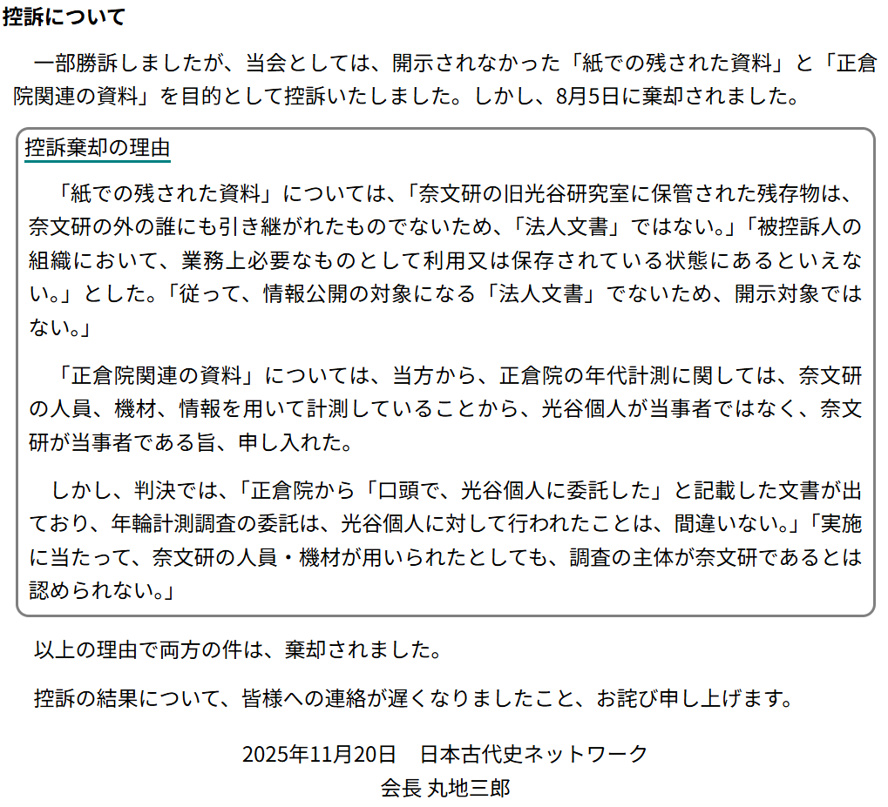
2021年7月、日本古代史ネットワーク（鷲﨑弘朋会長（当時）、情報公開請求書の代表者署名者）は奈良文化財研究所（奈文研）に対し、法人文書開示請求を行った。鷲﨑氏は同年12月末に会長職を退き、副会長であった丸地三郎氏が会長に就任した。開示拒否を受け、2022年1月に東京地方裁判所へ提訴（令和4年(行ウ)第64号）。
東京地方裁判所（岡田裁判長）は古代史ネット側の一部勝訴判決を出した。判決では「多くの研究者が科学的見地から検証を加えることは、学問的な発展にとって不可欠な過程であって」という理由が付記され、第三者による科学的検証の必要性を司法が認めた形となった。この判決を受け、2025年5月に奈文研は提訴に係る情報を開示し、同年6月に古代史ネットはその開示データをウェブ上に公開した。
一審で一部勝訴した日本古代史ネットワーク側が、未開示とされた「紙での残存資料」および「正倉院関連資料」の開示を求めて控訴。東京高等裁判所は控訴を棄却し、「原本は行政文書に該当しない」として請求を退けた。ただし控訴棄却の判決理由において、以下の組織的実態を法的に確定させた。
【原本承継の否定】： 旧光谷研究室に保管されていた紙資料等の残存資料は、組織内の誰にも引き継がれておらず、奈文研が業務上必要なものとして保存・利用している状態にない。
【業務主体性の否定】： 正倉院関連等の計測調査において、奈文研の人員・機材が投入されていても、実態は「光谷個人への口頭委託」であり、奈文研の組織的な業務執行とは認められない。
【訴訟過程・開示結果から判明した事実】
① 当初不開示の法的根拠
2021年7月13日付の開示請求（日本古代史ネットワーク代表者・会長 鷲﨑弘朋名義、代理人：井上侑弁護士）に対し、奈文研は同年9月22日付「法人文書不開示決定通知書」（独法文総第13−1号、独立行政法人国立文化財機構理事長 島谷弘幸名義）において全件不開示を決定した。不開示理由として援用されたのは「独立行政法人等の保有する情報の公開に関する法律」審査基準IV 第5条第4号（「調査研究に係る事務に関し、その公正かつ能率的な遂行を不当に阻害するおそれのあるもの」）である。
出典：法人文書不開示決定通知書（独法文総第13−1号、令和3年9月22日）、日本古代史ネットワーク公開資料
② 正倉院関連データの不存在
訴訟の被告準備書面別紙（「【年輪年代法】に関する法人文書開示請求書で請求した情報一覧表」）において、正倉院関連3件（正倉院25号・28号・38号の建築部材年輪年代測定）に関する全データ項目（試料画像データ・試料数値データ・試料グラフデータ・暦年標準パターン数値データ・グラフデータ）がすべて「−」（存在しない）と奈文研自身が法廷文書として記載した。正倉院を対象とした光谷（2003、第25号；2003、第28号；2007、第38号）の年代測定に関する基礎データは、現在に至るまで所在が確認されていない。
出典：被告準備書面⑽別紙（裁判所提出文書）、日本古代史ネットワーク公開資料（nenrinBBB.pdf、2025年11月16日）
③ 公表されていない暦年標準パターンの使用
開示されたデータの解析（丸地・清水 2025）により、池上曽根遺跡および勝山古墳板材の年代決定に「補足」暦年標準パターン（BC447〜BC257）が使用されていたことが判明した。このパターンは公表された光谷論文のいずれにも掲載されていない。年代決定の根拠となった「ものさし」自体が、外部から検証できない状態で用いられていたことを意味する。
出典：丸地三郎・清水徹（2025）「奈文研より開示された年輪年代関連データの評価」第33回樹木年輪研究会（2025年11月16日）、スライド資料（nihonkodaishi.net公開）
以上の経緯により、2026年現在、日本の考古学年代論は深刻な認識論的危機に直面している。
日本考古学編年の絶対的基準である年輪年代データの原本（実測値）は、「組織として承継・管理されていない個人の私的資料」であることが司法によって認定された。算出根拠が物理的に存在せず、第三者による再現（Reproducibility）が不可能な数値に基づき歴史を構築することは、近代科学の規範からの著しい逸脱である。
畿内説を維持・支持するための前提条件は、もはや「解釈」の巧拙ではなく、「失われた検証可能性の再構築」という極めて基礎的な科学的手続きの履行にある。
「過去の管理不備」であれば、「当時の体制の問題」として相対化し得る。しかし本事案はそうではない。 東京高裁判決（2025年8月）後も、本稿執筆時点（2026年3月）に至るまで、原本は提示されていない。 これは以下の二つの事実を同時に意味する。
▼ 現在も継続している具体的な影響
科学における誤りの問題は、その誤りがいつ止まったかによって重大性が変わる。 撤回された論文と、撤回されずに引用され続ける論文では、学術的損害の規模が根本的に異なる。 本稿執筆時点（2026年3月）において、光谷データに由来する年代値を基準とする記述は、上記四項目の形で現役での使用が確認されている。データのトレーサビリティが断絶した状態での引用継続が、東京高裁判決確定（2025年8月）後も変わっていないという事実は、本問題が科学的手続き上、現在もなお未解決であることを端的に示している。
情報科学における基本原則「GIGO（Garbage In, Garbage Out：ゴミを入れてもゴミしか出ない）」が示すように、解析手法がいかに高度であっても、入力される基礎データの正当性が担保されなければ、出力される結論には科学的保証がない。
春成モデル（2011）は、年代較正に用いた較正曲線として「日本産樹木年輪に基づくJCAL」（尾嵜大真・坂本稔ほか 2005/2006）を採用している。春成モデルが光谷データを直接使用していないことは事実である。しかし、より深層の依存構造を精査すると以下の事実が確認される。
つまり春成モデルは、光谷データを直接使用してはいないが、較正曲線（JCAL）の基盤となった試料の絶対年代決定という根本部分において、光谷データに間接的かつ構造的に依存している。光谷データの正当性が司法によって「第三者検証不能」と認定された以上、その上位に立つJCALおよび春成モデルも、同じ「検証不能性」を基盤から継承することになる。
狂った定規でどれほど精密に長さを測っても、正しい値は得られない。 原器の正当性が未検証のまま構築された絶対年代体系は、その精度がいかに高くとも、実証科学としての基盤を欠いている。
日本考古学界の内部にいると見えにくいが、国際的な科学規範の視点から本事案を眺めると、問題の異常性が鮮明になる。以下に、国際的な標準的実践との比較を示す。
| 比較項目 | 国際標準（一般的実践） | 光谷年輪年代法（本事案） |
|---|---|---|
| データの共有・公開 | 国際樹木年輪データバンク（ITRDB、1974年設立）にて世界中の年輪データを公開リポジトリで共有・相互検証可能。 Nature系ジャーナルは2010年代以降データ共有ポリシーを段階的に義務化。 | 基準データは非公開のまま四半世紀が経過。訴訟によって部分的に開示された数値についても、グラフとの整合性が確認されていない。 |
| 警告への対応 | データ管理・透明性への批判は、独立した監査機関・研究倫理委員会等による調査対象となる。 重大な指摘は公開の場での応答が求められる。 | 1999年・2009年の学術的警告に対し、公式な回答・対応がなされなかった。問題提起が訴訟という法的手段によってしか実現しなかったという経緯がある。 |
| 自浄メカニズム | Retraction Watch等の集計によれば、データ不正・検証不能を理由とする撤回の平均所要期間は発覚から数ヶ月〜2年程度。 問題が確認された後は、関連論文の撤回・訂正手続きが標準的に進む。 | 司法による「原本不在」の認定（2025年8月）後も、関連論文・教科書・文化財指定根拠に対して何らの公式見直しも行われていない（2026年3月現在）。 |
| データ管理計画（DMP） | OECDガイドライン（2007/2021）に基づき、公的資金を受けた研究のデータ管理計画策定が多くの国で義務化。原本の適切な保管・継承は研究機関の基本的責務。 | 国立研究機関が司法の場で「原本は組織に継承されていない」と言明して勝訴した。OECDガイドラインが求める原本管理の基本要件が満たされていなかったことを、国が自ら認めた形になっている。 |
この比較が示す本質は単純である。国際的な科学共同体において「当然の運用」として行われてきたことが、日本考古学の絶対年代論においては、訴訟を起こしてもなお実現しなかった。 これは個々の研究者の問題ではなく、分野の制度的・ガバナンス上の構造的問題である。
光谷データの原本不在と再現不可能性が突きつける帰結は、個別論文の否定に留まらない。計測学の基本原則として、原器（基準）の正当性が担保できない場合、その原器に基づく全ての測定値は、独立した再検証が不可能となる。
本節の結論を、ひとつの反論に対して事前に明確化しておく必要がある。 それは、「今後、奈文研が原本を発見・提示した場合、本節の議論は無効になるのではないか」という問いである。
答えは否である。理由は以下の通りである。
仮にデータが提示され、第三者機関による独立検証の結果、データ自体の正確性が確認されたとしても、それは「科学として正常に運用されていた」ことの証明にならない。 正確なデータを、四半世紀にわたって検証不可能な状態に置き、学術的警告への応答がなされないまま、訴訟によって初めて問題が表面化した——この過程は、データの正確性とは独立して、科学ガバナンスの重大な失敗を構成する。 医師が正しい診断を下したとしても、カルテを患者に見せず、問い合わせへの応答がなく、訴訟によってようやく記録を開示したなら——診断の正確性はその手続きの問題を消去しない。
東京高裁の法廷において、組織として「原本は継承されていない」と言明して勝訴した後に資料が提示されれば、その資料が訴訟中に存在していたのか否か、また答弁との整合性について、公的な説明責任が生じる。これは本研究が判断すべき事項ではなく、国立研究機関として透明性をもって説明されるべき事柄である。
科学においてデータの正当性は、測定時点から連続したトレーサビリティによって担保される。 批判・指摘の後に提示された資料は、その性質上、「批判以前から適切に管理されていた」ことの独立した証明が必要となる。 この要件を満たすか否かは第三者機関による検証を待つべきであり、提示それ自体が問題の解決を意味しない。
判決（2025年8月）後も原本が提示されないまま時間が経過するほど、光谷データを引用した論文、文化財指定、教育上の記述が積み重なっていく。 仮に将来データが提示されても、この空白期間に生産・流通し続けた年代記述の正当性問題は、データの正確性とは別問題として残存する。 「今もない」という事実は、時間の経過とともに問題を縮小させるのではなく、むしろ累積的に拡大させている。
本節で指摘した構造的問題を補完する形で、坂本稔氏（2022）は従来の「年輪幅」による年代特定（光谷法が依拠する手法）の学術的限界について、以下のように記述している。
決定的な差異は「検証可能性」にある。中塚法は、手法とマスタークロノロジーが完全に公開・共有されており、世界中の研究者が独立して検証できる。 これは、原本の所在が確認されず、再現性も検証されていない光谷データとの対比において、科学規範の観点から根本的に異なる位置づけにある。
坂本氏は、この「検証可能な新手法」の整備によって初めてIntCal20への日本産データ採用が実現した事実を記録している。 これは図らずも、「検証不可能な旧来法の時代は終わった」ことを、国立歴史民俗博物館の現役研究者自身が手法の変遷という形で証言した記録となっている。
光谷年輪年代法をめぐる問題は、一人の研究者の手法の当否という問題に矮小化できない。問題の構造は明快である。
本節が指摘する問題の核心は、以下の三点の同時発生にある。
これは日本考古学の問題ではない。
公的資金による知識生産のガバナンス崩壊であり、
データのトレーサビリティを欠く状態での運用が継続している点は、研究データガバナンスの観点から看過できない課題であり、科学的誠実さよりも機関の威信防衛を優先する制度的怠慢の記録である。
解決の道は一つしかない。検証不可能な独自データへの固執を捨て、全世界の研究者が相互に検証できる国際標準（IntCal20・中塚法）へ完全に軸足を移すこと——それのみが、日本考古学が科学として立脚し得る唯一の経路である。その選択を先送りするたびに、この分野の国際的信頼性は静かに、しかし確実に失われていく。
科学におけるデータは、法廷における証拠品と同様、その「証拠の連鎖（Chain of Custody）」が厳密に保持されていなければならない。東京高裁判決（2025年8月）が認定した「原本の組織的承継の欠如」は、日本の歴史の基軸となるべき年代データにおいて、この証拠の鎖が物理的に切断されたことを意味する。
計測学および法科学の原則に照らせば、一度断絶した真正性（Authenticity）を事後的に証明する術はもはや存在しない。仮に将来、資料が「再発見」されたとしても、空白期間における管理の不透明性を排除できない以上、それはもはや科学的検証に耐えうる「原本」としての資格を喪失している。
さらに看過し得ないのは、国民の負託を受けた国立研究機関が、多額の公費と公的リソース（人員・機材）を投じて得られた研究成果を「個人の私物」として処理し、その管理放棄を「法的勝訴の理由」とするに至った構造である。
たとえば、公費で建設された公共図書館で、公費で雇われた司書が公用の機材を使って収集・整理した蔵書を、市民が「見せてほしい」と求めたとする。図書館側が「あれは司書が業務外の個人活動として集めた本であり、図書館の財産ではないので開示できない」と回答し、市民が提訴した裁判で図書館側が勝訴、「確かに司書個人の蔵書であり公共財産ではない」と司法が確定したとしたら、読者はこれをどう評価するだろうか。その図書館の蔵書目録が「公式の歴史記述の根拠」として現在も教科書に掲載され続けているという状況を含めて。本事案において起きたことの構造は、これと本質的に同じである。
本事案の位置づけを制度的に確認するため、国内外の主要規範と照合する。
| 規範・制度 | 公的資金データに関する規定 | 本事案との対照 |
|---|---|---|
| 文部科学省 研究データ管理・利活用 ガイドライン（2021年） |
公的資金による研究データは「研究機関による組織的管理」を求める。研究者個人ではなく機関が管理主体となることを原則とする。 | 非充足。司法判決において「組織として承継・管理されていない」と認定された。 |
| NIHデータ共有ポリシー （米国、2023年改定） |
公的助成による研究データの個人専有を明示的に禁止。助成終了後のデータ保管・共有義務を助成条件として規定。違反時は助成金返還要求の対象。 | 同等規範下では制度的違反に該当。「個人の私物」という司法認定はNIHポリシーの禁止事項と正面から抵触する。 |
| Horizon Europe 助成条件（EU、2021年〜） |
「オープンデータ原則（Open Research Data）」をデフォルト条件とし、公的助成による研究データの公開を義務化。例外は個人情報・安全保障関連のみ。 | 同等規範下では助成条件違反。四半世紀にわたる非公開は「例外」の範囲を大幅に超過する。 |
| ITRDB （国際樹木年輪データバンク） デポジット規定 |
査読付き論文への年輪年代データ掲載の条件として、ITRDBへの生データのデポジットを義務化。世界の主要年輪年代研究機関が準拠。 | デポジット未実施。光谷年輪年代データのITRDB登録は確認されていない。国際標準との制度的乖離が最も直接的に現れる点である。 |
これら四つの規範はいずれも「公的資金による研究成果は公共財として組織的に管理・公開されるべき」という原則を共有している。本事案における「個人の私物」という司法認定が、この国際的規範群の中でどのような位置に置かれるかは、上表から読者自身が判断されたい。
なお、日本においてもこれらと同等の規範整備が進みつつある中で、本事案が2025年の時点で司法手続きを経て「個人の私物」として確定したという事実は、制度的移行期における規範の空白を示す事例として、研究データガバナンスの観点からも記録されるべき事案である。
以上は、個々の研究者の意図や能力に関する評価ではない。データ管理体系が実証科学の手続き要件を満たしているかどうかという、構造的問いに対する事実の確認である。比喩も、制度比較も、「事実がどこに位置するか」を示す座標系に過ぎない。その座標系の上に現時点での到達点を置くと、次の一点に収束する。
■ 2026年3月現在の到達点
第三者による検証可能性を欠いた原器（基準）に基づく年代値は、実証科学の要件を満たしていない。これを絶対的基準として維持し続けることは、客観的証拠よりも特定の前提を優先することと同義である。
第三者による独立した検証と客観的な再現が不可能な事象を無批判に受容する営みを、学術の世界では実証科学とは呼ばない。それは特定の権威に対する「信仰（Dogma）」である。
—— 科学とは、信仰ではなく、証拠の連鎖と反証への開放性に基づく営みである。
坂本稔氏（国立歴史民俗博物館）は、最新の国際標準（IntCal20）を用い、春成らが提唱した纒向関連資料の編年順序に基づくベイズ統計モデルを構築し、その統計的妥当性を検証した。
重要な方法論的前提：春成ら（2011）の元の分析では、日本産樹木年輪の炭素14年代データと資料群を直接比較する方法を採用しており、ベイズ統計による統計的適合度検定は行っていなかった。坂本（2022）が試みたのは、この編年順序を前提として、IntCal20とOxCalを用いた形式的なベイズモデルの構築である。
したがって、以下に示す「16%」という数値は、春成モデルそのものの統計的適合度ではなく、坂本が春成らの編年順序に基づいて新たに構築したベイズモデル全体の適合度である。この区別は極めて重要である。坂本氏は春成モデルを否定したのではなく、それを国際標準の枠組みで再検証しようと試みたのである。
坂本氏は、Amodelが国際基準を大幅に下回る16%という数値を論文内に明記した。これは旧基準（IntCal13）の4.8%から向上した結果ではあるが、統計学上、依然として「春成の編年順序制約と炭素14実測値の間に統計的不整合がある」ことを示す数値である。
坂本氏は結論部で「残念ながら60%以上が求められるモデルの適合度は16%と低く計算次第で若干ばらつくため、参考程度の結果と捉える必要がある」（p.305）としている。この表現は、考古学的配慮と科学的誠実性の間で苦慮した研究者の姿を示している。しかし、「参考程度」という慎重な表現にもかかわらず、実数値を正直に公開したという事実は、極めて重要な意味を持つ。
坂本氏（2022）は、考古学的な既存編年への配慮を示しつつも、統計学的な判定基準（60%）と実測値（16%）の両方を論文内に明記した。この事実は、特定の結論に誘導することなく、「解析の結果、算出された客観的数値」をありのままに公表するという、科学者としての適切な手続きが踏まれたことを示している。
Amodelが国際基準を大幅に下回る16%という数値を伏せずに公開したことは、後続の研究者に対して、現在の編年モデルと国際標準データの間に存在する「具体的な乖離幅」を定量的に示したことを意味する。坂本氏が示したこの「誠実なデータ公開」こそが、弥生・古墳移行期の年代論争を、個人の権威や主観的な解釈から、誰もが検証可能な科学の土俵へと引き戻すための重要な第一歩となったといえる。
本論考は、同氏によって提供されたこの中立かつ客観的な指標に基づき、既存モデルが抱える課題を、特定の個人への批判ではなく、学問体系全体の整合性の問題として淡々と分析していくものである。
ここで看過できない事実がある。坂本稔は、Amodel=16%という数値を公表した坂本（2022）の単著者であるとともに、その統計的適合性が問われる春成ら（2011）「古墳出現期の炭素14年代測定」（国立歴史民俗博物館研究報告第163集）の第3著者（春成秀爾・小林謙一・坂本稔・今村峯雄・尾嵜大真・藤尾慎一郎・西本豊弘、全7名）でもある。
そして春成ら（2011）論文末尾の分担執筆明細には、役割が以下のように明記されている。
これは決定的な記録である。考古学的解釈＝春成秀爾の専権、測定技術＝坂本稔の専権という役割分担は、2011年の連名論文において既に確定していた。坂本氏が2022年単著論文p.306において「筆者は考古学を専門とせず、得られた結果の考古学的な妥当性を判断する立場にない」と述べたことは、立場の変化でも謙遜でもなく、11年前から変わらない役割分担の再確認にすぎない。
この構造が意味することは明快である。坂本氏が2022年に「Amodel=16%、モデルの構築次第ではより明らかな年代を提示できるだろう」と公表した時点で、統計的破綻の修正責任は、考古学的解釈の担当者である春成氏および日本考古学界に明確に帰属した。「判断する立場にない」という言葉は免責宣言ではなく、責任の所在を正確に指し示す矢印である。その矢印が向かう先——考古学界——が、2022年以降も正式な再検証を行っていないという事実が、本稿の問題提起の核心を構成する。
【使用文脈の明示】 坂本（2022）の論文の主目的は、IntCal20の技術的意義と日本への導入を論じることにあり、春成モデルへの統計的検証はその例示として位置づけられている。本論文における16%という数値の使用が、坂本氏の意図した射程を超えた文脈での引用であることをここに明示する。
本稿が坂本（2022）を通じて春成モデルのサンプルデータを使用してベイズ再検証を行うことについて、「批判対象の論文のデータを使うことは矛盾ではないか」という疑問が生じうる。回答は明確である——これは矛盾ではなく、科学的反証の最も公平な手続きである。
同一のC14実測値を使いながら、較正曲線をJCALからIntCal20に、編年順序を春成設定から統計的に整合するモデルに変更することで、「入力データは同じ・手法のみ変更」という最も厳格な比較条件が成立する。春成モデルが正しければ同じデータでもAmodelは60%以上を示すはずである——それが16%であったという事実こそが、問題の所在を示している。
以下8.1.3節では、坂本（2022）のモデルを著者が独立に再現した結果（Amodel＝19.3%）を示し、数値の意味を視覚的に確認する。
坂本が坂本（2022）で示した内容を、コードに起こし、OxCal上で実行（MCMCシミュレーション）した結果のスクリーンショットを図8-1に示す。
図8-1：OxCal実行結果。 モデル全体の合致指数はAmodel=19.3%、Aoverall=21.0%であり、国際的な妥当性基準である60.0%を大幅に下回っている。赤字で「Warning! Poor agreement（適合度不良）」の警告が複数出力されている。
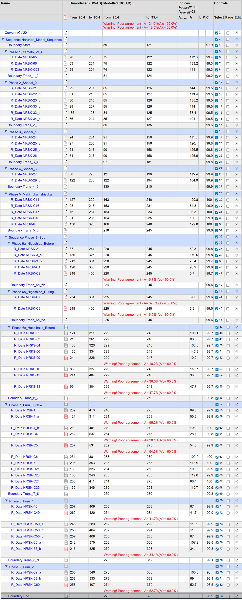
坂本（2022）付表および奥山（2008）に基づき著者が整理。A値は本稿追試（IntCal20）の出力値。灰色行はホケノ山古墳試料（春成モデルでは除外）。
| 試料ID | 出自 | 試料種別 | 試料の性格 | ¹⁴C年代（BP） | 暦年代（2σ・IntCal20） | A値 | 春成モデル 採否 |
信頼性 |
|---|---|---|---|---|---|---|---|---|
| ◆ 箸墓古墳フェーズ（Phase Hashihaka）——春成モデルの「結論」を直接生成するサンプル群 | ||||||||
| NRKS-04 | 箸墓古墳 | 土器外面付着物（吹・口縁外面） | 燃料年代を直接反映しない乾燥付着物。煤・焦より信頼性高いが不確実性は残る | 坂本(2022)付表参照 | AD192〜256（モデル後） | — | 採用 | 中 |
| NRKS-06 | 箸墓古墳 | 土器外面付着物（吹・甕F口縁外面） | 燃料年代を直接反映しない乾燥付着物。煤・焦より信頼性高いが不確実性は残る | 坂本(2022)付表参照 | AD200〜255（モデル後） | — | 採用 | 中 |
| NRSK-c21 | 箸墓古墳 | 土器内面付着炭化物（焦） | 海洋・淡水リザーバー効果リスク有 | 坂本(2022)付表参照 | AD200〜255（モデル後） | — | 採用 | 低 |
| ◆ 春成モデル採用試料——問題のある単年性試料（モモ核・ウリ種子） | ||||||||
| NRSK-C2 | 東田大塚古墳 | モモ核（単年性） | 本来は高信頼性試料だが層位撹乱の疑い | 坂本(2022)付表参照 | 坂本(2022)付表参照 | 5.7% | 採用 | 要注意 |
| NRSK-C49 | 布留遺跡 | ウリ種子（単年性） | 本来は高信頼性試料だが層位撹乱の疑い | 坂本(2022)付表参照 | 坂本(2022)付表参照 | 41.7% | 採用 | 要注意 |
| NRSK-C60 | 布留遺跡 | モモ核（単年性） | 本来は高信頼性試料だが層位撹乱の疑い | 坂本(2022)付表参照 | 坂本(2022)付表参照 | 52.7% | 採用 | 要注意 |
| ◆ 春成モデル採用試料——付着物・木質系（高リスク試料） | ||||||||
| NRKS-09 NRKS-11 NRKS-13 |
纒向遺跡系 | 土器外面付着炭化物（煤） | 古木効果リスク有（燃料年代を反映） | 坂本(2022)付表参照 | 坂本(2022)付表参照 | Poor | 採用 | 低 |
| NRSK-4a NRSK-4b |
纒向遺跡系 | 土器内面付着炭化物（焦） | 海洋・淡水リザーバー効果リスク有 | 坂本(2022)付表参照 | 坂本(2022)付表参照 | Poor | 採用 | 低 |
| NRSK-C4 | 纒向遺跡系 | 加工木・樹皮直下内側最外縁 | 辺材採取の工夫あるも不整合残存 | 坂本(2022)付表参照 | 坂本(2022)付表参照 | 54.3% | 採用 | 要注意 |
| NRSK-C7 NRSK-C8 |
纒向遺跡系 | タケ亜科イネ科カゴ材 | 伝世効果または層位撹乱の疑い | 坂本(2022)付表参照 | 坂本(2022)付表参照 | 37.5% 6.9% |
採用 | 低 |
| ◆ ホケノ山古墳試料——春成モデルが除外した高信頼性サンプル（本稿代替モデルで復権） | ||||||||
| 小枝 No.1 （奥山2008） |
ホケノ山古墳 | 小枝（最外年輪含む） | 単年性・古木効果なし・奥山(2008)が「有効」と評価 | 1710±20 BP | AD260〜280（17.0%） AD320〜390（51.2%） 95.4%: AD250〜400 |
— | 除外 | 高 |
| 小枝 No.2 （奥山2008） |
ホケノ山古墳 | 小枝（最外年輪含む） | 単年性・古木効果なし・奥山(2008)が「有効」と評価 | 1690±20 BP | AD335〜400（68.2%） 95.4%: AD250〜300（13.9%） AD320〜420（81.5%） |
— | 除外 | 高 |
【読み方】A値は各試料とモデルの統計的整合性を示す指標（OxCal基準：≥60%が良好）。春成モデルは低信頼性の付着物・木質試料を多数採用する一方で、信頼性が最も高いホケノ山古墳の小枝2点を除外している。この「逆選択（チェリーピッキング）」構造が Amodel=16〜20% という統計的崩壊の物質的背景をなす（詳細は8.1.5節）。試料の完全な測定値詳細（δ¹³C補正値・測定機関・遺跡・層位情報）は坂本（2022）付表を参照のこと。
※本表は論証上重要な試料の抜粋（約56点中の主要サンプル）である。全試料の¹⁴C年代値・フェーズ帰属・OxCalコードは付録E.1を参照のこと。
坂本（2022）から再現したコードをOxCal上で実行した結果、Amodel=19.3%、Aoverall=21.0%が得られた（図8-1）。本稿の独立検証におけるAmodel適合度は19.3%であり、坂本（2022）の報告値（16%）とMCMC（マルコフ連鎖モンテカルロ法）の計算誤差の範囲内で一致した。いずれの計算結果においても、OxCalの国際基準である適合度60%を大幅に下回っており、春成モデルが前提とする編年順序と炭素14年代データの間には、解析手法や較正曲線の選定に依存しない、構造的な統計的不整合が存在することが確認された。
OxCalの実行結果において各試料に赤字で出力されている「Warning! Poor agreement (A < 60.0%)」は、モデルとして設定された事前情報（Prior：土器型式や層位の上下関係に基づく編年順序）と、個別の炭素14年代測定値（Likelihood）が統計的に衝突していることを示している。本検証において確認された各試料の属性と「Poor agreement」の発生状況を照らし合わせると、年代モデルの崩壊を招いている要因について、以下の三つの構造的課題が浮き彫りとなる。
通常、放射性炭素年代測定において、モモの核やウリの種子などの「単年性植物（種実）」は古い炭素の影響（古木効果）を受けにくく、最も信頼度の高い試料とされる。しかし本モデルの実行結果では、これら最も信頼すべきはずの種実試料においても著しい不整合が生じている。
単年性試料でPoor agreementが多発している事実は、「試料側の汚染」というよりも、むしろモデルの前提そのものに疑義を投げかける。すなわち、「土器が廃棄された層位に後から別の時代の種子が混入した（層位の撹乱）」か、あるいはそもそも春成らが設定した「土器型式（庄内式から布留式などへ）が厳密に連続して移行するという編年順序のモデル自体に、一部見直す余地がある（古い型式と新しい型式が併存していた等）」可能性を強力に示唆している。
土器の外面に付着した「煤（すす）」や内面の「焦（おこげ）」も、複数の試料で不整合（A値の著しい低下）を示している（例：NRKS-09, 11, 13、NRSK-4 a, 4 b など）。
土器外面の「煤」は、煮炊きに用いられた「燃料（薪）」の年代を反映する。もし数百年前の枯死木や伐採から長期間経過した古材（大木）を燃料としていた場合、炭素14年代は土器の使用された実年代よりも古く算出されてしまう（古木効果）。また、内面の「焦」の年代がずれる場合は、古い炭素を含む海産物や淡水産物を煮炊きしたことによる海洋・淡水リザーバー効果の影響が疑われる。春成モデルの遡上案（3世紀中葉説）は、こうした「二重の遡上リスク」を抱える土器付着物を主要な年代決定の根拠としている点が、モデル全体の適合度を押し下げている主要因の一つである。
なお、付録E.1の試料表に登場する「吹（ふき）」とは、 土器の外面に乾燥付着した煙道灰・炭素微粒子であり、 煤・焦とは異なり燃料の古木効果を直接反映しない付着物として 信頼性が相対的に高い（リザーバー効果も生じない）。 箸墓フェーズの主要試料NRKS-04・NRKS-06はいずれも「吹」であり、 本稿代替モデル（付録E.3）でも「低リスク試料」として採用している。
木材試料については、古木効果を避けるため樹皮に近い外側（辺材・最外縁）を測定する工夫がなされているが、NRSK-C4（加工木・樹皮直下内側最外縁）は採取部位を工夫しているにもかかわらず依然としてPoor agreement（A=54.3%）である。さらに特筆すべきは、NRSK-C7（A=37.5%）、NRSK-C8（A=6.9%）といった「タケ亜科イネ科」のカゴ材における著しい不整合である。
タケ類は木材に比べて短寿命であり本来は年代測定に適しているはずだが、この不整合は、古いカゴ材が長期間使い回されていた（伝世効果）か、遺跡の層位に目に見えない撹乱（古いものの持ち上がりや新しいものの落ち込み）が生じている可能性を示している。
OxCalのモデルは、「Phase 1_Yamato_VI_4」から「Phase 9_Furu_2」へ至る、土器型式のきれいな時間的変遷を絶対的な順序制約（Sequence）として組み込んでいる。
しかし、属性の異なる多様な試料——特に最も信頼できるはずの単年性の種実類まで——にPoor agreementが散見される結果は、この「きっちりと連続して切り替わった」という前提が実態と乖離していることを示している。
すなわち、Amodel=19.3%というモデル崩壊の真因は、個々の試料のノイズを超えて、「古い型式と新しい型式が併存していた時期を見落としている」または「遺跡の層位に想定以上の撹乱が生じている」にもかかわらず、無理な直線的順序を統計モデルに強制したことにあると解釈するのが妥当である。
そして、この不整合なモデルを無理に維持するために、科学的に信頼に足る良質なサンプル（ホケノ山古墳の小枝データ等）を「排除」するという試料選定のバイアス（逆選択）が生じている実態がある。次節ではその力学を検証する。
【再検証への招待と考古学会の不作為】
さらに決定的な事実がある。坂本氏はIntCal20導入を報じた毎日新聞（2020年9月23日夕刊）において、IntCal20を用いた再検証について「より妥当で確からしい年代が得られると思う」と述べている。これは「参考程度の結果」という論文内の留保とは次元が異なる発言であり、測定の専門家自身による学術的な再検証への明示的な招待にほかならない。この招待に対して、春成モデルを維持してきた考古学会が、IntCal20を用いた正式な再検証を現時点までに実施していないという事実は、再検証の責任を負う側の不作為として問われるべき事柄である。
春成ら（2011）のベイズモデルにおいて統計的合致指数（Amodel）が国際基準を大幅に下回っている背景には、測定試料の選定における深刻な系統的バイアスが存在する。関川尚功氏（2020）らが指摘するように、遡上案（3世紀中葉説）は不確実な試料に過剰に依存する一方で、科学的に信頼に足る良質なサンプルを「排除」している実態がある。とりわけ深刻なのが、ホケノ山古墳のデータの完全な黙殺である。
春成モデルの「3世紀中葉」という年代を牽引している主たるデータは、土器の外面に付着した炭化物（煤）である。しかし、前節で分析した通り、この付着物データには年代を数百年間違える「二重の遡上リスク」（海洋・淡水リザーバー効果、および古木効果）が存在する。付着物はこの「何を煮たか」「何を燃やしたか」という不確定要素を完全に排除できないブラックボックスであり、単年性試料に比べて年代指標としての信頼性が著しく低い。
古木効果リスクが皆無である「ホケノ山古墳の小枝試料（奥山2008）」は、本来であれば年代推定モデルの最も強固なアンカー（基準点）となるべき最高信頼性データである。注目すべきは、春成ら（2011, p.171）がこの小枝データについて、本文中で以下のように明確に評価している点である。
「小枝材の年代は東田大塚の壕の覆土上層から出土した試料や布留1式以降の土器付着物に類した値であり、大きな隔たりはないと考えられる。」（春成ら 2011）
すなわち春成らは、この最高信頼性試料（庄内3式期）が、彼らの想定するより新しい時期（布留1式）の年代値を示しているという事実を正確に認識していた。しかし不可解なことに、彼らはこの小枝試料を、箸墓古墳の年代を拘束する「先行アンカー」としてベイズモデル（OxCal）の計算に組み込むことはしなかった。
もしこの小枝データをモデルに組み込んでいれば、数学的に何が起きたかは自明である。「ホケノ山（古）→箸墓（新）」という層位的順序制約の下では、ホケノ山小枝が示す年代（本稿の代替モデルが示すAD280〜320年代）が箸墓の年代の上限（ストッパー）となり、「箸墓＝西暦240〜260年」という遡上説の結論は根底から成立しなくなる。
結論ありきのデータ選別が行われたとまでは断定しない。しかし、「古木効果のない最高信頼性の一次試料（小枝）」を計算から外す一方で、「二重の遡上リスクを抱える不確実な試料（土器外面の煤）」を主要根拠としてモデルを構築したという『逆選択（Adverse Selection）』が行われたことは、公開されたデータセットが示す客観的事実である。
ホケノ山古墳と箸墓古墳の前後関係については、多数説と少数説が並立している。多数説は、ホケノ山出土のS字甕A（北周濠最深部・パック状態）が庄内2〜3式に属し、箸墓の布留0式に先行するとみる（豊岡 2018、寺沢 2011）。この見解は一次文脈出土遺物に基づく最も堅固な証拠であり、現在の考古学的多数派を形成している。一方、ホケノ山出土の小型丸底壺を布留0式古相と評価する少数説も存在し、この場合ホケノ山と箸墓が「同期」となる可能性がある。
したがって、正しいベイズモデリングを行う場合、少なくとも「ホケノ山古墳のフェーズ ≦ 箸墓古墳のフェーズ」という順序制約（事前情報）を組み込まなければならない。これは多数説に依拠した場合の最低限の要請であり、同期説を採用しても¹⁴C実測値との整合性という問題は消えない。
もしここで、奥山（2008）が有効とした「ホケノ山の小枝」データをモデルに投入した場合、数学的に何が起こるか。小枝データの確率分布（3世紀後半〜4世紀の確率が高い）が計算のベースとなり、それに後続する（より新しいはずの）箸墓古墳の推定年代は、事後確率としてドミノ倒しのようにホケノ山と同等か、あるいはそれ以降の時代へと移行する。
| 試料 | 放射性炭素年代 | 信頼区間 | 較正年代（暦年） |
|---|---|---|---|
| 小枝 No.1 | 1710±20BP | 68.2％確率(1σ) | AD260～280年(17.0％) AD320～390年(51.2％) |
| 95.4％確率(2σ) | AD250～400年(95.4％) | ||
| 小枝 No.2 | 1690±20BP | 68.2％確率(1σ) | AD335～400年(68.2％) |
| 95.4％確率(2σ) | AD250～300年(13.9％) AD320～420年(81.5％) |
しかし、ホケノ山古墳のフェーズがないまま、春成モデルの有力サンプルのみを用いた検証を実施したところ、後続の制約（アンカー）を失った箸墓古墳の年代が、較正曲線の古い山に吸い寄せられ「200〜255年（3世紀中葉）」へと不自然に遡上（フリーフォール）する現象が確認されている。
【図8-2：ホケノ山古墳を除外した際のシミュレーション結果】
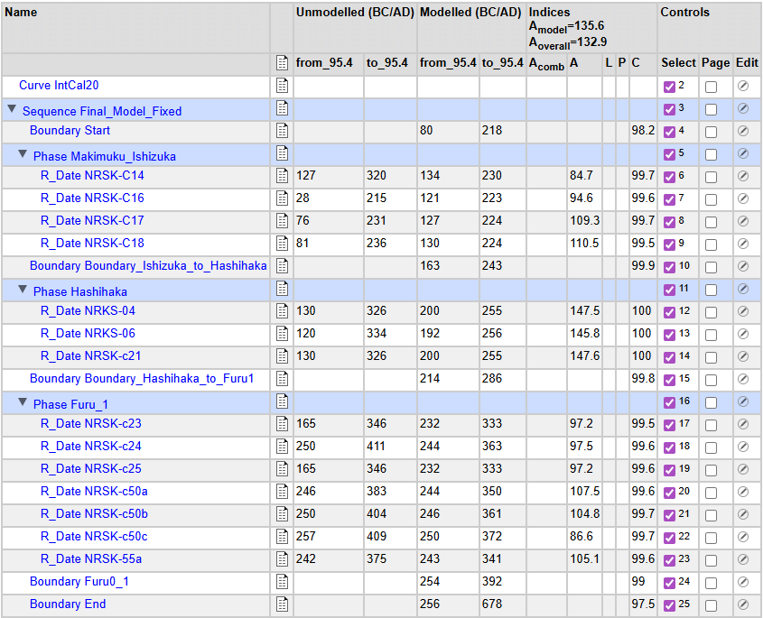
この図は、統計的矛盾の原因を特定するため、以下の条件でデータを絞り込み、ベイズ推定を行った結果である。
この条件で計算を実行すると、Amodel=135.6%という極めて高い適合度（統計的矛盾が全くない状態）を示す。そして注目すべきは、「Phase Hashihaka（箸墓）」に属する全サンプル（NRKS-04, 06, c21）の推定年代（Modelled）が、「192〜256年」および「200〜255年」の範囲に収束している点である。
これはすなわち、間に挟まるべき「ホケノ山（3世紀後半〜4世紀）」というストッパー（アンカー）が存在しないことで、箸墓の年代が纏向石塚（〜230年）の直後である「3世紀中葉」に向かって、統計的にフリーフォール（自由落下）したことを明確に示している。
すなわち、ホケノ山の小枝データは、春成モデルが主張する「箸墓古墳＝3世紀中葉（卑弥呼の時代）」という結論を根底から崩壊させてしまう、致命的かつ不都合なアンカーとして機能する。
科学研究において、より信頼性の高いデータ（古木効果の懸念がない小枝データ）が存在するならば、そのデータを自らのモデルに組み込み、結果がどう変化するかを検証するのが当然の義務である。しかし、2011年の論文発表から現在に至るまで、遡上説を支持する研究者たちによって、このホケノ山の小枝データを正規のアンカーとして組み込んだ形での本格的なベイズモデルの再検証が行われた形跡はない。この「年代特定の鍵となる最高信頼性データの意図的な除外と長期の放置」は、実証科学の手続きとして極めて深刻な課題を残している。
これら三要因は相互に関連している。不確実な試料に過剰に依拠し（第二要因）、その試料が持つ系統的誤差を放置したまま（第三要因）、無理な順序制約を課した結果として、統計的に棄却される数値が出力されている（第一要因）。これは個別のデータ修正や解釈では解決できない、モデル自体の構造的な破綻である。
坂本（2022）は、IntCal20を用いた再計算において、箸墓築造前後の境界（⑧-3と⑨の境界）が「AD 230〜255」と算出され、これが春成モデルの「AD 240〜260」と重なると記述している。しかし、この記述は「春成モデルの年代が証明された」ことを意味しない。むしろ逆である。
第一に、この「AD 230〜255」という数値自体が、最も確実なアンカーである「ホケノ山の小枝データ」を除外（欠落）させたまま計算した結果生じた、年代の「フリーフォール（古い時代への自由落下）」の産物である（図8-2参照）。ストッパーが存在しないために、数学的に古い時代へと吸い寄せられているに過ぎない。
第二に、坂本自身が明記している通り、この年代を算出したモデル全体の適合度はAmodel=16%であり、OxCalの国際的許容基準（60%）を大きく下回る「破綻したモデル」である。坂本はこの数値を「参考程度」と断った上で、論文の結びにおいて以下のように述べている。
「モデルの構築次第ではより明らかな年代を提示できるだろう」（坂本 2022, p.306）
なお坂本氏は同論文において、「筆者は考古学を専門とせず、得られた結果の考古学的な妥当性を判断する立場にない」（p.306）とも明示している。これは謙遜でも立場の後退でもない——春成ほか（2011）論文末尾の分担執筆明細には、「考古学的考察については春成秀爾が担当し、試料処理および測定状況については坂本稔が担当」と明記されている。すなわち坂本氏の役割は2011年当初から一貫して年代測定の技術的工程にあり、考古学的解釈は春成氏の専権であった。2022年の「判断する立場にない」という発言は、11年前から変わらぬ役割分担の再確認にすぎない。そして逆説的に、これは「統計的に破綻したモデルの修正責任は、考古学的解釈の担当者（＝春成氏および考古学界）にある」という明確な責任の帰属宣言として機能している。
これは測定の専門家からの明示的な警告である。「不確実なサンプルを含み、確実なサンプル（ホケノ山）を抜いた春成らの設定（Prior）のままでは統計的に破綻する。したがって、サンプルの取捨選択と編年順序の構築（モデリング）を根本からやり直す必要がある」という、学界に向けた再検証の要請にほかならない。
ここまでの整理——二つの問題が「箸墓＝卑弥呼の墓」を支える構造に何をしているか
「箸墓古墳＝卑弥呼の墓（240〜260年）」という定説の根拠構造：
問題A（8.1.1）：光谷データの検証不能性
①の原本が「組織管理外」として司法確定。①→②→③→④という連鎖の起点が検証不能な状態に置かれている。 JCALの基礎となった「ものさし」自体の独立確認経路が制度的に閉じている。
問題B（8.1.2〜8.1.3）：春成モデル自体の統計的不整合
④において、最新国際標準（IntCal20）で再検証してもAmodel＝16%（基準60%以上）。 問題Aとは独立に、④→⑤という接続の統計的根拠が成立しない。
二問題の独立性：
問題Aが解決されても（仮に光谷原本が提示されても）、問題Bは独立に存在する。
問題Bが解決されても（仮にAmodelが改善されても）、問題Aは独立に残る。
いずれか一方への反論が「箸墓＝240〜260年」を救済しない構造である。
8.1.3節（上記）において、著者独立再現でもAmodel＝19.3%が確認された。
前節で詳述した通り、春成モデル（2011）は、最新の国際標準（IntCal20）を用いたベイズ統計検証において、合致指数（Amodel）が16%という国際的妥当性基準（60%以上）を大幅に下回る結果を示す。 また、年代の下限を拘束すべき最も信頼性の高いアンカー試料（ホケノ山古墳の小枝データ）が年代モデルから除外（欠落）していたことで、箸墓古墳の年代が「3世紀中葉」へと自由落下（フリーフォール）する構造が確認された。
本節では、この不整合と恣意性を解消し、より実証的で客観的な年代論を提示するため、データ選別とモデル設計を最適化した「代替モデル」を構築し、その検証結果を提示する。
本モデルの構築にあたっては、以下の科学的規準に基づき、炭素14年代データセットを再定義した。
PhaseおよびBoundary機能を用いて設定した。上記設計に基づき、最新の較正曲線IntCal20とOxCal（v4.4.4）を用いてMCMCシミュレーションを実施した結果、春成モデル（Amodel=16%）とは対照的な、極めて良好な統計結果が得られた。
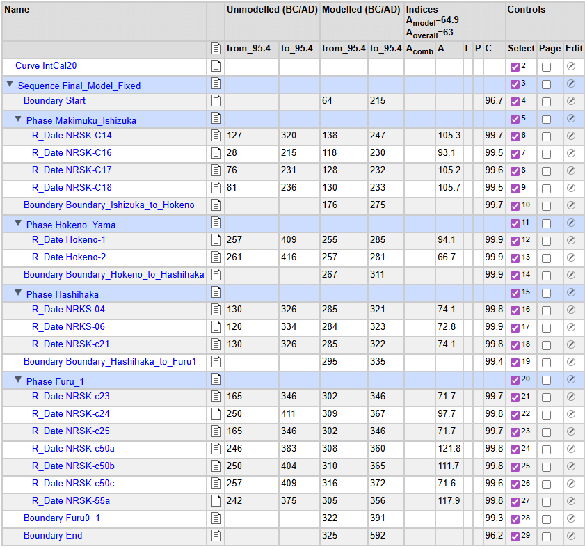
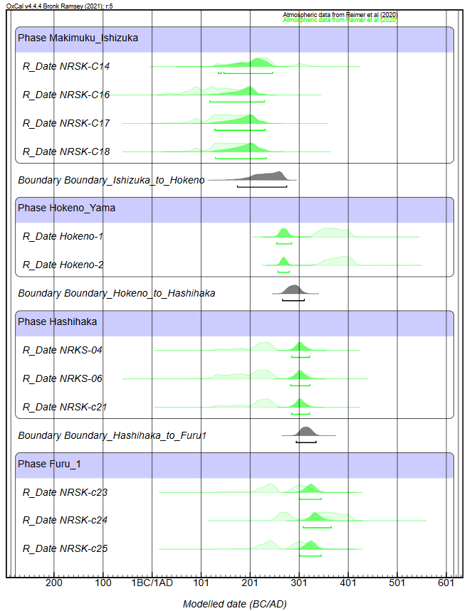
統計的妥当性（Amodel > 60%）を満たしたこの正常なモデルにおいて、最も注目すべきは「箸墓古墳の実際の年代がどこに収束したか」である。Phase Hashihaka に属する3つのサンプル（NRKS-04, NRKS-06, NRSK-c21）の個別確率分布を抽出したものが以下の図である。
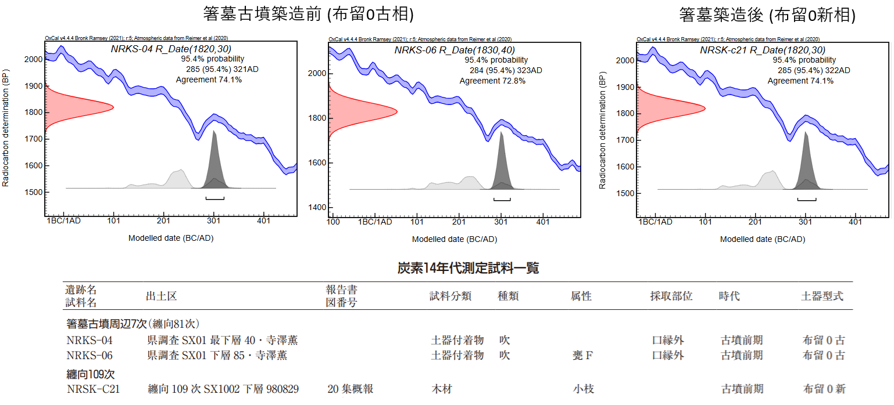
信頼性の低いノイズを除去し、ホケノ山古墳という正しいアンカーを設置した結果、箸墓古墳の築造年代は、春成モデルが強弁した「AD 240〜260年（3世紀中葉）」ではなく、「西暦280年代〜320年代（3世紀末〜4世紀初頭）」へと自律的に収束した。
この結果が持つ学術的含意は極めて大きい。なぜなら、この「280〜320年代」という年代レンジは、以下の三つの独立した事実と完全に一致するからである。
最も信頼性の高いアンカー試料の除外と不確実な試料への過剰依存によって結果として生じた「3世紀中葉説」の呪縛からデータを解放したとき、IntCal20という世界標準の物差しは、本論文が主張する「3世紀後半の資源革命」と見事に符合する年代を弾き出したのである。
なお、本モデルの構築に使用したOxCal入力コードの詳細は、第三者による独立した再現性を完全に担保するため、付録E.3 に公開している。
本章8.1における批判的検証と、8.2における代替モデルの構築を通じて、光谷年輪年代法および春成ら（2011）の炭素14年代モデルを中心とする絶対年代決定体系は、以下の六つの構造的課題を抱えていることが確認された。これらは相互に関連しており、実証科学としての手続き上、抜本的な再考が求められる状態にある。
科学哲学者ラカトシュが定義した「退行的研究プログラム（Degenerating Research Programme）」とは、 反証事実が蓄積されるたびに仮説を守るために補助仮定を追加・修正し続けることで 中核命題を死守しようとする研究戦略を指す。
結論ありきのデータ選別（高信頼性のホケノ山小枝試料の除外、および二重の遡上リスクを抱える土器付着物（煤・焦）の優先採用）に基づき、「西暦240〜260年」という年代を維持しようとする現状は、ラカトシュの定義における「退行的研究プログラム」の典型的な徴候である。 科学的手続きにおいては、モデルがデータに適合しない場合、モデルの方を修正するのが定石である。しかし、本件においては、最も信頼性の高いアンカー試料をモデルから意図的に除外し、適合度の低いモデルを維持するという「逆選択（Adverse Selection）」的なデータ選別が行われている。この構造は、国際基準（Amodel≧60%）を大幅に下回る低適合度を招きながらも、特定の年代論的前提を温存するという、科学の自己修正機能を停止させた運用実態を示唆している。
加えて、このプログラムが多額の公的資金によって構築・維持され、 国史跡の指定根拠・教科書記述・公共報道の基盤として現在も社会に流通し続けている事実は、 単なる学術的誤謬を超えたガバナンスの深刻な機能不全を示している。
さらに重大なのはメディアの構造的問題である。 NHKをはじめとする公共放送は、「国立歴史民俗博物館」「国立文化財機構」という機関の 権威を無批判に事実として報道する一方で、 その内部から発信された客観的数値（Amodel=16%という坂本 2022の報告）や 司法判決の意味を追跡・検証するジャーナリズムの基本機能を放棄している。 科学的根拠が崩壊した「卑弥呼の墓」という言説を訂正なしに垂れ流すことは、 歴史のエンターテインメント化を優先し科学的誠実さを犠牲にする行為であり、 科学コミュニケーションの規範に照らして見直しが強く求められる。
検証不能な独自データに固執し、不都合な数値を解釈で塗り替える段階は終わった。坂本（2022）が残した「16%」という数値、そして本稿8.2で示した「正常なモデル構築による3世紀末〜4世紀初頭への自律的収束」は、特定の権威に基づいた従来モデルが、国際的な科学基準（IntCal）から著しく乖離している事実を、客観的に示す証拠である。
当該時期の年代研究が実証科学としての信頼を回復するためには、以下の三つの原則に立ち返る以外に道はない：
弥生・古墳移行期の年代決定という、国家形成史の核心部分において、このような不透明な構造が維持されてきたことへの反省こそが、新たな学問的出発点となる。幸いにも客観的数値を用いた再検証により、私たちは現状を正しく把握し、真の年代へと軌道修正することが可能となった。課題は、この明白な「数字」を認め、検証可能な学問体系へと再編する勇気を持てるかどうかである。
春成モデル（2011）が「箸墓古墳の築造時期＝西暦240〜260年」という結論を導くためには、以下の三条件がすべて同時に満たされる必要がある。
| 条件 | 充足状況 | 根拠 |
|---|---|---|
| 条件A JCAL正当性 |
✗ 充足不能 | 光谷の年輪年代データ全般は東京高裁判決（2025年8月5日）により「法人文書でない＝組織管理外」と司法確定。第三者検証の制度的経路が閉鎖されている。 ※判決理由の引用は当事者団体公開の要旨（nihonkodaishi.net）による。判決文原本は東京高裁への謄写申請で取得可能。 |
| 条件B 統計的整合性 |
✗ 充足不能 | 坂本稔（2022）がIntCal20で再検証した結果、Amodel＝16%。さらに本稿8.2で示した通り、正しいアンカー（ホケノ山）を復元した代替モデルでは年代が「280〜320年代」へと収束し、240〜260年という年代自体が統計的に否定された。 |
| 条件C 試料バイアス不在 |
✗ 充足不能 | 古木効果リスクのない単年性試料（ホケノ山の小枝等）を除外し、二重の遡上リスクを抱える土器外面煤に過剰依存している（8.1.4および8.1.5節参照）。 |
前述の通り、春成ら（2011）は本文中でこの小枝試料の年代を肯定的に評価しておきながら、年代推定のベイズモデルには組み込まなかった。もし批判者がこれを「後世の偶発的混入（ノイズ）」であるとしてモデルからの除外を事後的に正当化しようとするならば、上掲の①古木効果ゼロ、②石囲い木槨という閉鎖環境、③正式報告書での一次試料としての採用という3つの強固な事実を覆す、明確な物理的・層位学的証拠を提示する義務を負う。
「箸墓古墳は卑弥呼の墓である」「三角縁神獣鏡は卑弥呼の鏡である」という主張は、以下の論理連鎖に依拠している：
この連鎖の②を担う春成モデルが崩壊し、本稿8.2で実証した通り箸墓の実際の年代が「3世紀末〜4世紀初頭（280年代以降）」に収束した以上、①と②の間に数十年以上の時間的断絶が生じる。②が成立しない以上、論理連鎖は完全に中断し、「箸墓＝卑弥呼の墓」「三角縁神獣鏡＝卑弥呼の鏡」という命題は、有効な科学的根拠を持たない。
「三角縁神獣鏡＝卑弥呼の鏡（魏からの下賜品）」という主張は、上記の論理連鎖の崩壊に加え、春成モデルとは無関係に以下の二つの独立した問題を抱えている。
「卑弥呼の墓」比定が崩れた際、畿内説側が次に持ち出す代替案が「箸墓＝壹與（台与）の墓（治世：3世紀後半）」説である。年代的に箸墓の「3世紀末〜4世紀初頭」に近いように見えるが、この代替比定も以下の独立した問題を抱えており、学術的に維持することは困難である。
2024年3月に放映されたNHKスペシャル等をはじめとする各メディアの古代史報道は、箸墓古墳を「推定築造時期 240-260年」とし、春成モデルを絶対の根拠として「卑弥呼の墓」に比定する言説を流布してきた。
しかし、東京高裁判決（2025年8月）による基盤データの検証経路閉鎖、坂本（2022）によるAmodel=16%（統計的破綻）の報告、そして本稿での「ホケノ山小枝」の逆選択の証明により、「箸墓＝240〜260年」という前提は実証科学として完全に瓦解している。
さらに、同番組内で最新の科学的成果として大々的に報じられた「纒向出土杭材のAD231年（酸素同位体比年輪年代法）」という数値についても、測定者自身が「有効な年輪数を持つ試料は1個体しかなく、確度の高い遺構年代を得るには至っていない」（中塚2022）と明示的に留保をつけている暫定値に過ぎない。古材転用や樹皮欠損という考古学的不確実性を無視し、自説に都合の良い単一データのみを切り取って「確定事実」のように喧伝する姿勢は、新たな形でのチェリーピッキングに他ならない。
不都合なデータはブラックボックス（光谷データ）に隠し、あるいはモデルから除外（ホケノ山小枝）する一方で、最新科学の成果に対しては限界や留保を無視して都合の良い数字だけを利用する。このような結論ありきの恣意的なデータ運用は、2000年に発覚した「旧石器捏造事件（神の手）」と本質的に同じ構造的病理を抱えている。かつての事件においては、新聞メディアの独自の検証報道（すっぱ抜き）が、学界の自浄作用を促す最後の砦として機能した。
しかし現在、国立研究機関という巨大な権威から発信された「卑弥呼の墓」という見出しに対し、現代のメディアは独自のファクトチェック機能を完全に放棄し、無批判な追従とエンターテインメント化を続けている。
統計的不整合やデータ管理上の課題が指摘されているにもかかわらず、既存の年代観に基づいた『卑弥呼の墓』『卑弥呼の鏡』、さらには『卑弥呼の犬』といった言説が、公的な報道や教育現場で継続的に流通している事実は、科学的知見と社会における受容の間に存在する大きな乖離を示している。科学コミュニティで議論されている統計的疑義がメディアの議論に十分に反映されていない現状は、科学ジャーナリズムが抱える『不確実な知見の社会的伝達』という構造的な課題を浮き彫りにしている。科学的知見の社会実装においては、最新の検証結果や統計的不整合の有無を適時に反映する『動的な更新プロセス』の構築が、科学ジャーナリズムおよび教育現場に強く求められている。
春成モデル（240〜260年）という人為的な年代の壁が取り払われ、8.2節で正常なベイズモデルが導き出した「西暦280年代〜320年代（3世紀末〜4世紀初頭）」という年代空間が開かれたとき、それまで断絶していた日本列島の独立したエビデンス群は、一気に一つの巨大な歴史像に向かって収束を始める。
西暦300年前後という画期において、以下の四つの独立したエビデンスが相互に整合的な歴史の転換点（パラダイムシフト）を描き出す。これらはそれぞれ異なる学問分野に属し、相互に独立した測定手法に基づいている点で、クロスチェックとしての価値が極めて高い。
第3章で確認した通り、古墳出土の朱（辰砂）の鉛同位体比分析により、3世紀後半に「大陸産資源から国産（宇陀等）辰砂への劇的な供給源置換」が物理的事実として確認されている。この資源供給の転換期は、まさに箸墓古墳が築造された「3世紀末〜4世紀初頭」と完全に時間軸が一致する。これはヤマト王権による列島固有の資源管理体制（水銀製錬技術の実装）の起動を物理的に記録したものである。
第5章で実証した、物部神社が全国の主要鉱山拠点に統計的に有意（p<0.05水準、一之宮比較はp<0.01）をもって近接配置されているという事実。このネットワークは、「3世紀後半の技術実装」を下限とし、「587年の物部氏失脚」を上限とする時間枠のなかで、国家的な資源管理網として敷設された。この広域インフラの展開は、強力な中央集権国家の起動（3世紀末〜4世紀初頭）を前提とする。
ベイズ統計的に「280年代〜320年代」という物理的レンジが確定したなかで、東アジア共通の暦法的文脈である「辛酉革命思想（辛酉の年に革命や王朝交代が起きる）」を事前確率（Prior knowledge）として統合すると、このレンジ内で該当する特定年は「西暦301年」となる。
（※神武即位「紀元前660年」は7世紀の編纂者が1260年（辛酉21周期）逆算した政治的年代であり、実際の即位年ではないことは学界の共通認識である。問題は「660 BCEではない」ことではなく「ではいつ起動したか」である。）
物理科学データ（280〜320年代）と史学的文脈（辛酉革命）の交点として、西暦301年は学際的統合による最も蓋然性の高い「新政権の起動年」として位置づけられる。
箸墓古墳を起点とする新体制（前方後円墳と朱の祭祀）が3世紀末〜4世紀初頭に開始されたという事実は、その直前に発生した「銅鐸の一斉埋納（廃棄）」現象を、極めて合理的な歴史的転換点として再定義する。
畿内説（在地連続発展モデル）では、「なぜ在地勢力が自らの信仰の象徴であった銅鐸を自ら意図的に土中に隠して抹消したのか」を論理的に説明できない。連続的発展であれば、祭祀は徐々に移行するはずである。
しかし、水銀・貴金属という新技術を携えた新政権が3世紀末に誕生したとすれば、銅鐸の廃棄は「旧体制（青銅器祭祀）の強制終了」と「旧秩序の象徴的な除却」として、畿内説よりも低コストに説明できる。これは内発的発展ではなく、外来の技術政権による「創造的破壊（Creative Destruction）」という解釈枠が適用しうる事例として注目される。ただし銅鐸埋納の動機については複数の解釈が並立しており、本仮説を物証によって確定することは現時点では困難である。
春成モデル（240〜260年）の軛から解き放たれ、統計的に正常化された年代（3世紀末〜4世紀初頭）を採用したとき、「資源の国産化」「全国ネットワークの敷設」「銅鐸の破壊」「新政権の起動（301年）」という巨大な歴史の歯車が、すべて一つの時間軸上で噛み合い始める。
これは畿内説が主張してきたような「弥生時代からの連続的で緩やかな連合」ではない。西暦300年前後という明確な画期において、列島のシステムを物理的・化学的に根底から書き換えた「技術国家のドラスティックな誕生」である。
次章（第9章）では、この解放された年代空間と実証データの収束を基盤として、初期ヤマト王権が列島をいかにして統合・統治したのか——武力征服でも宗教的連合でもない、資源と技術の相互依存による平和維持メカニズム「パックス・マキムク（Pax Makimuku）」の全貌を構築し、提示する。
本章は、第8章までの批判的検討を踏まえ、新たな歴史モデルを構築・提示する。畿内説（在地発展モデル）の物質的・統計的・言語学的問題点を整理し（9.1）、纒向の立地選択を化学プラントとして論じ（9.2）、資源独占による平和維持モデル「パックス・マキムク」を提唱（9.3）、研究の限界と反証可能性を明示（9.4）したうえで、技術知の長期的継承と古代国家形成の再定義（9.5〜9.6）へと至る。
【本節の目的と方法論】
本節では、邪馬台国の所在地比定という議論ではなく、ヤマト王権の形成プロセスにおける「連続性（在地発展） vs 断絶性（外部技術導入）」という論点において、既存の畿内説が理化学的・地政学的データとどの程度整合するかを検証する。
検証は、(1)物質科学的証拠（鉛同位体比）、(2)地政学的合理性、(3)言語学的根拠、(4)統計的適合度、の四つの独立した観点から行う。
【音韻分析の位置づけについて】
本節9.1.4節以降で引用するMiyazaki（2025, Zenodo）は著者本人による公開査読中の論文である。本稿の実証部（第2〜8章）——化学的解釈・空間統計・鉛同位体比分析——は音韻分析とは独立して成立しており、音韻論的制約は補強的要素として位置づける。音韻分析が将来の査読で修正・棄却されても、第2〜8章の結論には影響しない。
畿内説（在地発展モデル）は、奈良盆地の勢力が弥生時代から一貫して列島の中心として成長し、連続的にヤマト王権へと発展したと主張する。しかし、南ら（2013）による鉛同位体比分析は、この仮説と矛盾する地政学的構図を明らかにしている。
分析データによれば、3世紀前半までの列島において、最高位の埋葬儀礼（大型墳丘墓）を彩っていたのは、中国大陸産の朱（辰砂、HgS）であった。重要なのは、この希少な大陸産資源の使用者が以下の勢力に集中している点である：
これらはいずれも海域に面した交易拠点である。対照的に、この時期の大和（奈良盆地）において、これら勢力に比肩する規模・質の大陸産朱の使用例は分析データとして乏しい。
この物質的非対称性は、弥生時代の資源供給網において、大和が「サプライチェーンの末端（周縁部）」に置かれていた構造的制約を示している。
もし畿内説が主張するように大和勢力が弥生時代から卓越した権力を有していたのであれば、以下の問いに答える必要がある：
「なぜ足元の宝（宇陀産辰砂）を数百年間も放置したのか？」
大和の中心拠点（纒向遺跡）からわずか25km（徒歩1日圏内）の位置には、日本最大級の水銀鉱床である宇陀の辰砂が存在する。
もし大和勢力が弥生時代からの主役であるならば、以下の行動パターンは経済的・地政学的に極めて不自然である：
在地発展モデルは、この「合理的行動からの逸脱」を説明する理論を持たない。
この停滞状態を一変させたのが、3世紀後半における劇的な転換である。纒向遺跡の出現と軌を一にして、大和の初期古墳群から出土する朱は、一転して国産（近畿産、主に宇陀）へとデジタルに置換された（南ら2013）。
この転換により、大和は資源従属から脱却し、全国へ国産資源を供給する「資源コンソーシアムの中枢」へと下剋上を果たした。これは連続的な成長ではなく、技術革命による構造的断絶である。
前述の通り、理化学的測定値の恣意的な選択（桃核より付着物を優先する等）によって年代を遡らせる現状に対し、関川尚功（2020）は、これを考古学編年の一世紀にわたる進歩を放棄した「大正時代の古い説への逆戻り」に過ぎないと指弾している。
この指摘は、本稿の「技術パッケージ論」を実証的に補完する。3世紀末に水銀製錬技術の実装を経て、4世紀にかけて金属工学が同期・成熟したとする時間軸こそが、文献・統計・遺物の三者を唯一、矛盾なく統合しうるモデルである。
「邪馬台国」の「台（臺）」という漢字の3世紀における実際の発音が、日本語の「ト（yamato）」と音韻的に一致するかどうかを、Baxter-Sagart（2014）という最新の言語学的手法で検証する。
畿内説の重要な支柱であった「邪馬臺 = ヤマト」という音韻的同一性も、最新の言語学によって否定されている（Miyazaki 2025、以下同：本稿著者による自己引用）。
以下の表は、在地発展モデル（畿内説）と資源コンソーシアム・モデル（本稿）を、四つの独立した検証軸で比較したものである。
| 検証軸 | 在地発展モデル（畿内説） | 資源コンソーシアム・モデル（本稿） | 整合性 |
|---|---|---|---|
| 資源利用の連続性 | 弥生時代からの連続的発展を想定。しかし、宇陀資源を3世紀後半まで数百年間無視し続けた理由を説明できない。経済的合理性と矛盾。 | 断絶的転換モデル。外部技術勢力の流入による宇陀の「再発見」と資源自立。「放置→突如開発」という不連続性を論理的に説明。 | 本稿モデルが整合 |
| 物質科学データ（鉛同位体比） | 3世紀後半の劇的な産地転換（大陸産→国産へのデジタル置換）に対し、説明原理を持たない。連続的発展なら段階的移行が予想される。 | 水銀製錬技術（無水造飴）の実装という具体的な動因を提示。技術導入により初めて国産資源の価値を認識・利用可能になったと説明。 | 本稿モデルが整合 |
| 神武東征伝承の扱い | 神話・虚構として扱い、王権の地理的移動を認めない。記紀記述との齟齬を放置。 | 歴史的必然性として解釈。九州の資源限界（丹が採れない）と大陸交易の不安定化による「新資源探査行」。宇陀発見の歴史的記憶。 | 本稿モデルが整合 |
| 年代論・音韻学 | 春成モデル（IntCal20適合度16%）に依存。「邪馬臺=ヤマト（乙類のト）」の音韻対応に固執するも、Baxter-Sagart体系で否定される。 | IntCal20に基づく3世紀後半への収束（統計的に有意）。Baxter-Sagart体系による「邪馬壹=ヤマト（甲類のト）」の音韻学的一致。 | 本稿モデルが整合 |
【総括：在地発展モデルの説明力の喪失】
以上の比較検証から明らかなように、従来の畿内説（在地発展モデル）は、以下の各検証軸において一貫して説明力を喪失している：
本稿の「外部からの技術導入（東征）モデル」に対して、畿内説側から想定される最も典型的な反論は、「もし九州など外部からの大規模な侵入（政体交替）があったならば、大和の遺跡から外来系（九州系）の土器が大量に出土するはずだが、実際には在地の土器が連続的に発展しており、外来土器はごくわずかである」という「土器の連続性」を根拠とした東征否定論である。
しかし、この反論は「政体交替＝多数の民衆と日用品を伴う民族大移動」という、前時代的で単線的な侵略モデルを暗黙の前提としている点で論理的妥当性を欠く。
本稿が7.3節で提示した「技術的コンソーシアムの形成」モデルにおいて、移動を必要としたのは多数の民衆や兵士ではない。金銀抽出の要となる「水銀製錬」という非代替的なコア技術（化学知）と、それを運用する少数の「技術官僚（エリート層）」および「王族」の移動だけで、体制の書き換えは十分に成立する。
高度な技術を持った新政権が在地勢力（物部氏など）と提携した際、日常的な煮炊きに用いる土器の生産体制や土木インフラまでを、わざわざ外部から持ち込んで一から作り直す非効率な選択をする理由がない。在地の既存インフラ（土器職人や労働力）をそのまま「居抜き」で活用し、上位の統治アーキテクチャ（水銀触媒の管理と前方後円墳という規格）だけを書き換えたと考えるのが、地政学的・経済的に最も合理的な統治戦略である。
新政権による在地インフラの「居抜き」は、無摩擦で進行したわけではない。記紀の記述を組織統合の視点から解読すると、そこには体制統合期の深刻な構造的摩擦（拒絶と反乱）の痕跡が刻まれている。
ヤマト王権が前方後円墳という巨大事業において「出雲・吉備系の土木技術」を大々的に採用しなければならなかった理由は、この「在地インフラの反乱と物理的排除」という地政学的必然性によって極めて合理的に説明される。
畿内説（連続的発展モデル）に対して、四つの物理データに加えてさらに決定的な考古学的反論が成立する。それは「銅鐸の一斉埋納」現象である。
もし畿内説が主張するように、弥生時代の在地勢力がそのまま連続的・有機的に発展してヤマト王権を形成したのならば、自らの支配の象徴であった銅鐸信仰から前方後円墳・朱の祭祀へは「徐々に、段階的に」移行するはずである。在地勢力が自らの文化を自ら断絶する合理的動機は存在しない。
しかし現実の考古学的記録が示すのは、銅鐸の意図的な一斉廃棄（埋納）と前方後円墳の突如の出現という、連続性ではなく断絶のシグナルである。さらに本稿（8.1.4節）が明示したとおり、この銅鐸埋納の時期は前方後円墳の出現期と一致し、いずれも「3世紀後半〜4世紀初頭（西暦301年前後）」という物理データが収束する転換点に位置する。この「3世紀末〜4世紀初頭」という時間軸は、本稿8.2.3節の代替ベイズモデルが独立した炭素14実測値から弾き出した「AD 280年代〜320年代」という数値レンジと完全に一致しており、物理科学の二経路（物質・年代）が同一の転換点を独立に指示している。
これは連続的発展ではなく、水銀・貴金属技術を携えた新政権による旧体制（青銅器祭祀・銅鐸システム）の強制終了（Creative Destruction）と、そのレガシーの戦略的廃棄として解釈する余地がある。畿内説が「連続性」を主張するかぎり、この「一斉廃棄＝断絶のシグナル」という物質的事実に対する説明責任を逃れることはできない。
ヤマト王権とは弥生時代からの連続的発展ではなく、資源認識の転換によって列島を再定義した「技術国家」の誕生であったことが、物質科学・地質学・言語学の統合的検証により強く示唆される。
この結論は、光谷データを間接的基盤とするJCAL較正曲線に依存し、かつ統計的適合度が国際基準を大幅に下回る春成モデル（Amodel=16%）を排し、国際標準（IntCal20）という検証可能な基盤の上に立った時、複数の独立した証拠ラインが自律的に収束する歴史像である。
8章および9.1節の検討により、畿内説を支えてきた三本柱——①箸墓古墳の年代（春成モデル）、②三角縁神獣鏡の卑弥呼帰属、③箸墓＝壹與の墓という代替比定——はいずれも実証的根拠を欠くことが独立した複数の経路から示された。 現時点で畿内説に残存する論拠として検討に値するものは、実質的に一つのみである。
この「方位読み替え」論は、九州説への最後の対抗軸として長年主張されてきた。しかしこの論には、二段構えの構造的問題がある。
史料に「南」と明記されたものを「東」と読む行為は、それ自体が史料批判の例外措置であり、読み替えを正当化する独立した証拠を必要とする。 魏志倭人伝の行程記事における「南」の記述は単独ではなく、複数箇所にわたって方位が整合的に「南」を示す系列として記されている（伊都国から「東南至奴国」「東行至不弥国」、そこから「南至投馬国」「南至邪馬壹国」）。 これを全て「東の誤り」とするには、魏の史官が方位を系統的に誤記したという大きな仮定が必要であり、立証責任は読み替えを主張する側にある。 本論文はこの問題を本格的に論証する射程を持たないが、証拠を欠いた読み替えは史料批判の原則に反する操作である点を指摘する。
より決定的なのは第二段の問題である。 仮に「南」→「東」の読み替えを全面的に受け入れたとしても、到達した先の「畿内ヤマト」が「邪馬壹國」の音韻的な転写先として成立しないことが、前編（Miyazaki 2025, DOI: 10.5281/zenodo.18065799）において音韻学的に論証されている。
なお、方位問題の本格的な論証——倭人伝の行程記事全体の方位整合性、「水行十日陸行一月」の比定、投馬国の位置特定——は、本論文の方法論（化学・統計・同位体分析）の射程外であり、別稿による専論を要する。ここでは「方位読み替えを仮に認めても音韻的に目的地が成立しない」という構造的問題を指摘するにとどめ、詳細はMiyazaki（2025）に委ねる。
8章・9.1節の検討を受け、畿内説が学術的に維持可能であり続けるために取り得る応答経路は、論理的に以下の四つに限定される。しかし各経路は、それを選択すること自体が自説に深刻な帰結をもたらす構造になっている。
| 応答経路 | 論理的帰結 | 残存する問題 |
|---|---|---|
| ① JCALの基盤データを開示する | 較正曲線の正当性を第三者に証明できる | 東京高裁判決（2025年8月）により制度的経路が閉じている。仮に開示が実現しても、データは即座に独立検証にさらされる。IntCal20による追試でもAmodel=19.3%という不整合が確認されており（付録E）、JCAL適用の問題はそれと独立した層の問題である |
| ② Amodel=16〜20%を「許容範囲内」と主張する | 較正曲線のプラトー特性等による技術的説明が可能 | 「では正しい年代は何か」という問いに答える義務が生じる。OxCal国際基準（60%以上）を大幅に下回るモデルから「240〜260年」を導出し続けることは統計的に正当化できず、箸墓と卑弥呼の年代的接点は消滅する |
| ③ 「年代以外の証拠」で畿内説を維持する | 土器の広域分布・大型建物跡等の状況証拠に依拠できる | これは「箸墓＝卑弥呼の墓」という命題の事実上の撤回であり、論点の変更に相当する。状況証拠の積み重ねは「畿内が3世紀に重要な政体であった」を示し得るが、「邪馬台国＝畿内」の証明にはならない。鉛同位体比の断絶（第3章）・物部神社の空間統計（第5章）・音韻的不整合（Miyazaki 2025）は独立した経路として残存する |
| ④ 本論文を無視する | 査読なしプレプリントとして「反論に値しない」と処理できる | DOI登録後は「知らなかった」が通じなくなる。全データ・コードが完全公開されており、次世代研究者による独立参照が継続的に行われる。無視すること自体が「反論不能」の傍証として学術記録に蓄積される |
これまで畿内説は、文献解釈の積み重ねと「多数の状況証拠の組み合わせ」によって「定説」の地位を保ってきた。しかし、本論文が提示した以下の四つの独立した理系・計量的証拠は、いずれも「邪馬台国畿内説が主張する連続的在地発展モデル」を否定し、「3世紀後半の技術的断絶（新政権の成立）」を支持している。
もはや立証責任は完全に転換した。今後、畿内説を学術的に維持しようとする者は、古い文献の解釈をこねくり回すのではなく、これら四つの冷徹な物理・統計データに対して、在地発展モデル（畿内説）がいかに矛盾しないかを、同等以上の数学的・科学的方法によって証明する義務を負う。
全データ・分析コードは完全公開されており、第三者による即座の反証検証を歓迎する。反証が示されれば、本論文はその反証を誠実に学術的議論として受け止める。しかし、物理データへの回答なき文献解釈の強弁は、科学的議論の代替にならない。
畿内説はこれまで、纒向遺跡の「大型建物跡（宮室の想定）」「全国から集まる外来土器（共立の証拠）」「大量の桃の種（鬼道の証拠）」「箸墓の巨大さ（径百余歩の符合）」といった多数の状況証拠を提示してきた。しかし、その遺構群が「西暦240〜260年代のものである」という絶対年代の錨（アンカー）が外れた瞬間、それらはすべて「卑弥呼の時代の証拠」としての効力を失う。
畿内説を牽引する代表的な考古学者から「考古学的には、9割方、邪馬台国は畿内にあった」（※）と公言されるほどに、現在の在地発展モデルは日本考古学の主流派において強固な確信として共有されている。
しかし、本稿が提示した四つの独立した検証経路（年代統計・物質科学・空間統計・歴史音韻論）のいずれの客観的データにおいても、その「9割」を裏付ける科学的根拠は見出されない。多数の状況証拠がいかに精巧に組み上げられていようとも、その土台となる年代の物差し（JCAL）が検証不能な状態にあり、かつ物理的・統計的な検証プロセスと整合していない以上、その確信は実証科学的な確実性を示すものではない。
（※）桜井市纏向学研究センター 寺沢薫センター長によるメディアインタビュー（関西テレビ「newsランナー」2026年2月24日放送）での発言等に代表される、邪馬台国畿内説の到達点を示す日本考古学関係者からの一般的な評価感
「なぜ、王権の中枢が纒向（奈良盆地）に置かれなければならなかったのか」という問いは、日本歴史地理学における最重要課題の一つである。従来、その理由は農業生産力、防御性、交通の要衝などに見出されてきたが、これらは他地域（筑紫平野、濃尾平野、河内平野、吉備平野など）でも十分に満たされる条件であり、大和が列島中枢に選定された「唯一無二の必然性」を説明するには不十分であった。
資源戦略の観点から纒向を分析すると、そこには高度な環境知識に基づく「立地選択の設計思想」が認められる。最大の特徴は、原料供給地（宇陀）と王権中枢（纒向）の距離が極めて近い（約25km、徒歩1日圏内）一方で、纒向が河川の上流部に位置する点である。
武埴安彦の反乱を理解する鍵は、時系列にある。重要なのは、弥生時代には存在しなかった問題が、東征後に突如として顕在化したという構造である。
武埴安彦の反乱を理解する鍵は、時系列にある。重要なのは、弥生時代には存在しなかった問題が、東征後に突如として顕在化したという構造である。
【方法論的留保：「時代が異なる人物を同列に扱うのでは」という批判について】
以下に挙げるヌナキノイリヒメ（崇神朝）とホムツワケ（垂仁朝）は、記紀の表記上は別世代の人物である。 これを同一の環境的背景（水銀汚染）のもとで論じることに対しては、「時代錯誤」という批判が予想される。 本節はこの批判を認識した上で、以下の二段の根拠により論を進める。
根拠① 記紀の在位年数の信頼性問題（文献学的通説）
崇神天皇の在位は記紀上「御肇国天皇（ハツクニシラスのスメラミコト）」と称され、垂仁天皇はその直系次代である。 しかし記紀に記された初期天皇の在位期間（崇神168年、垂仁99年など）が実際の歴史的時間と一致しないことは、 津田左右吉以来の文献史学における標準的認識である。 崇神〜垂仁の「二朝」が実質的に一世代内、あるいは同一治世期間の前・後半に相当するとする解釈は、 複数の研究者によって独立に提唱されており（大庭脩 1999；三品彰英 1971 ほか）、 本節が崇神・垂仁の記事を「同一の環境的文脈」で参照することは、この文献学的通説の範囲内にある。
根拠② 筆者による「崇神＝神武」同一人物仮説（本稿固有の作業仮説）
さらに筆者は、以下の論拠に基づき、崇神天皇と神武天皇が同一人物の生涯を二分割した記述であるという仮説を保持している。
※本仮説は本稿の核心的実証（化学・統計・年代論）とは独立した補助的作業仮説であり、 これへの反論は本稿の主論証を損なわない。記紀の天皇系譜の再構成は専門的な文献史学的検討を要する別個の研究課題である。
崇神朝および垂仁朝（新技術を導入した創業世代の次世代）の記録には、原因不明の疾患に苦しむ具体的な人物が登場する。環境中に放出された水銀が食物連鎖を通じて蓄積し、時間差をもって次世代の胎児や乳児へ深刻な影響を及ぼしたと仮定すると、これらの症状は現代の水銀中毒（特に慢性水銀中毒および先天性水俣病）の臨床プロファイルと極めて高い整合性を示す。
『日本書紀』の記述：
「髪は抜け落ちて体も痩せてしまった」
| 記紀の記述 | 水銀中毒の典型症状 | 符合度 |
|---|---|---|
| 髪が抜け落ちる | 脱毛（水銀中毒の典型症状） | ✓ 高 |
| 体が痩せる | 消耗・衰弱（慢性中毒） | ✓ 高 |
『日本書紀』の記述：
「長じてひげが胸先に達しても言葉を発することがなく、赤子のように泣いてばかりであった」
| 記紀の記述 | 先天性水俣病の症状 | 符合度 |
|---|---|---|
| 成人しても言葉を発せず | 言語機能障害（神経発達障害） | ✓ 極めて高 |
| 赤子のように泣くばかり | 精神発達遅滞（胎児期水銀暴露） | ✓ 極めて高 |
誉津別命の症状は、1950年代の水俣病で確認された「先天性水俣病」—妊娠中の母親が汚染された魚介類を摂取し、胎児が水銀暴露を受けた結果生じる重篤な神経障害—と極めて類似している。
典型的症状：言語発達遅滞、精神発達遅滞、運動機能障害、感覚障害。これらはすべて、中枢神経系の発達期における水銀による不可逆的損傷に起因する。
もし誉津別命の母（皇后）が汚染された水や食物を摂取していたと仮定するならば、これらの症状は医学的・環境学的な観点からきわめて整合的な解釈が可能となる。
『万葉集』巻七・1268（柿本人麻呂歌集）：
「巻向の痛足の川ゆ行く水の絶ゆることなくまたかへり見む」
纒向を流れる川が「痛足（あなし）の川」と呼ばれていた事実は、示唆的な地名として記録されている。この名前が何らかの身体的苦痛——特に「足の痛み」——の記憶を地名として留めている可能性については、以下のような言語的類推が可能である。
水銀中毒の症状の一つに「知覚異常（しびれ、痛み）」があり、特に四肢末端（手足）に現れやすい。「痛足」という名がこの川の水に関連した健康被害の記憶を地名として化石化させたものという解釈は、医学的には整合性を持ち得る。ただし、地名の語源は「あなし（穴無し＝岩盤が浅い）」「あなし（礫川）」など複数の語源候補があり、本解釈を確定するためには万葉仮名の表記変遷・最古の用例・他の同名河川との比較など、地名学的・言語史的な精査が必要である。
※注：本稿はこれらを現代医学的な確定診断とするものではない。しかし、記紀に記された詳細かつ特異な身体的記述は、現代の毒性学における臨床プロファイリングと極めて高い相関を示している。本稿の目的は、これを人骨の同位体分析等の科学的検証が必要な「検証可能な医学的作業仮説」として提示し、伝承の中に埋没していた環境史的情報を科学の土俵に乗せることにある。
⚠ 重要な注意：これらはあくまで状況証拠である。以下の科学的検証が必要：
（根拠：重金属は骨や歯のエナメル質に半永久的に残留する。分析により、被葬者の生前における水銀暴露の有無、およびその水銀が宇陀産であるかの特定が可能である。）
（根拠：元素である水銀は分解されず、地層中に安定して保持される。3世紀後半の地層に特異的な水銀濃度のスパイクが確認されれば、精錬活動の直接的証拠となる。）
（根拠：製錬時の熱分解で生じた水銀蒸気や副産物は、周辺土壌に微細な重金属粒子として堆積し、数千年のタイムスケールで存続する。）
| 人物 | 拠点地域 | 水系との関係 | 推測される被害状況 |
|---|---|---|---|
| 武埴安彦 （「埴」＝土） |
山背国（山城） | 木津川・淀川流域 | 宇陀製錬汚染の直接的下流域 最も深刻な被害 |
| 吾田媛 （武埴安彦の妻） |
河内国 | 河内湖沿岸 （大和川＋淀川の 両下流域） |
両水系の汚染が集積する地域 大和川からの流出も被る |
| 纒向王権 | 大和（纒向） | 大和川上流 （河内湖から30km内陸） |
上流配置による相対的安全性 （ただし完全ではない可能性） |
【推測される反乱のシナリオ】
【結論（仮説）】
武埴安彦の反乱は、資源利権を狙った経済的クーデターではなく、新政権による水銀製錬技術の導入が引き起こした環境災害から、下流域住民の生存権を守るための自衛戦争であった可能性が高い。これは「纒向（初期ヤマト王権）のせいに違いない」という、被害者の直感に基づく生存闘争である。
京都府精華町の祝園神社では、毎年正月甲申の日より3日間にわたり「いごもり祭」が行われる。その由来は、武埴安彦命の悪霊がこの地に留まって田畑を荒らしたため、村人たちが忌み籠もって霊を鎮めたことによる。祭りの間、牛や馬を隣村へ預け、一切の音を禁じ、精進料理のみを食し、居篭る——という極度の穢れ回避が現在も続く（京都府無形民俗文化財）。
注目すべきは、同様の「いごもり祭」が木津川を挟んだ対岸の棚倉・湧出宮（和伎坐天乃夫支売神社、木津川市）においても独立して行われていることである。居籠祭は南山城地方最古の祭りとして知られ、宮座行事が国の重要無形民俗文化財に指定されている。伝説では武埴安彦の首が祝園に飛び、胴体が棚倉に残ったとされ、両社は一体の関係にあると伝わる。川の両岸で独立した共同体が同一の鎮魂儀礼を1500年にわたって維持してきたという事実は、武埴安彦の死が地域全体に深刻な記憶として刻まれていたことを示唆する。
日本の祟り神信仰において、強力な祟りを鎮めるためにこれほど大規模な儀礼が継続されるのは、その死が不当・理不尽であったという共同体の深層記憶を示す。単なる政治的反乱者であれば、これほどの鎮魂は必要とされない。なお、いごもり祭の構造については民俗学的研究も存在する（鈴木正崇ほか、J-STAGE掲載）。
※いごもり祭が水銀汚染と直接関係することを示す史料はなく、上記は状況論的な補助解釈にとどまる。
崇神朝に関する記紀の記述には、疫病と武埴安彦の反乱に加えて、もう一つの決定的な出来事が記されている。それが大物主神（在地の蛇神・三輪山の神）と皇祖神・天照大神の衝突、そしてその結果としての天照の段階的な「追放」（最終的な伊勢鎮座）である。この神話的記述は、畿内説では説明が困難な構造的矛盾を孕んでいる。
この「上流配置によるリスク回避」という原則は、個別事例ではなく、ヤマト王権の資源管理における普遍的な設計思想であったと考えられる。
第5章で分析した物部神社の立地においても、同じ原則が確認できる：石見銀山は銀山川（支流）流域に位置するが、物部神社（石見国一宮）は銀山川の下流ではなく、本流（静間川）の上流に位置している。
これは偶然ではなく、纒向と同じ設計原理—近接性と清浄性の両立—に基づく戦略的配置である。
纒向の配置、および全国の物部神社の立地分析から抽出される、ヤマト王権の資源管理における普遍的原則：
この三原則は、纒向のみならず、全国の物部拠点において一貫して確認される。これは統一された設計思想に基づく全国的システムの証拠である。
【纒向選定の真の理由：唯一無二の必然性】
纒向が王権中枢として選ばれた理由：
これらすべてを同時に満たす立地は、列島において大和以外に存在しない。
しかし、設計上の意図がどの程度機能したかは検証が必要である。状況証拠が示唆するのは：
【最終結論】
纒向の立地選択は、古代における最高度の「プラント立地最適化」の試みであった。神武東征が最終的に目指した目的地とは、この「技術と資源を統括するための、環境工学的に設計された産業立地」であった。
しかし同時に、この先進的な技術導入は、予期せぬ環境災害をもたらし、下流域住民との深刻な対立を引き起こしたとみられる。崇神朝の疫病と武埴安彦の反乱は、技術革新の光と影を同時に物語る歴史的記録として再解釈される。
【本節の限界と今後の課題】
本節で提示した仮説—「水銀中毒と反乱の関係」「崇神期疫病=水銀中毒説」「反乱の動機=生存権闘争」—は、地理的配置、文献記録、症例の符合から導かれる状況証拠に基づく仮説である。以下の科学的検証が不可欠である：
これらの物理的証拠が得られれば、本仮説の妥当性を客観的に評価できる。
【本節の位置づけ：パックス・マキムクの定義】
本節では、これまでの分析を統合し、ヤマト王権の形成プロセスを説明する仮説的モデルとして「パックス・マキムク（Pax Makimuku）」を提唱する。
これは現時点での証拠に基づく推論であり、今後の考古学的発見によって修正・棄却される可能性があるが、(1)纒向遺跡の開放性、(2)物部神社の広域配置、(3)鉛同位体比による資源革命、という複数の独立したデータ群を統一的に説明しうるモデルである。
初期ヤマト王権の中枢である纒向遺跡は、従来の「防御的城郭都市」とは全く異なる性質を持っていたことが、考古学的に確認されている。纒向の特徴は、以下の三点に集約される：
これらの事実をどう解釈するか。一つの可能性として、纒向は軍事的な「要塞」ではなく、各地の勢力が自発的に（あるいは利権のために）参画する「開放的な資源コンソーシアム（共同体）のセンター」であったという仮説が提起できる。
⚠ 重要な留保：本モデルは一つの仮説であり、環濠（防御施設）が見られない理由としては、他にも以下の複合的要因が考えられる：
『日本書紀』は、神武天皇が「不假鋒刃之威（鋒刃の威を借りず、坐して天下を平らげん）」と誓約したと記している。これは8世紀の編纂時における理想化された記述である可能性が高いが、もし何らかの歴史的実態を反映しているとすれば、それは単なる理想主義的な平和宣言ではなく、高度な資源戦略に基づくリアリズムの表現として理解できる。
本稿が提示する仮説では、ヤマト王権の強みは、金銀・銅そのものの所有以上に、それらを精錬・加工するために不可欠な「触媒（水銀）」の供給独占にあったと推測される。
「鉱山」という膨大な資本（資産）を保有。
しかし、岩石から貴金属を抽出する「水銀技術（鍵）」を欠くため、資源の潜在的価値を引き出せない停滞状態にある。
「水銀」という独占的触媒と高度な精錬知見。
国産辰砂の掌握により、金銀抽出に必要な水銀を独占。全国の物部ネットワークを通じて、この「技術パッケージ」を配給する。
在地勢力は、武力抵抗よりも「ヤマト主導のコンソーシアムへの参画」による実利を選択。
武力による殲滅を必要としない、技術的・経済的依存による列島統合。
重要な留保：本モデルは「不假鋒刃之威」という記述に対し、当時の資源環境から導き出されるリアリズム的な解釈を提示するものであり、記述そのものの歴史的真偽とは別に、システムとしての合理性を検証するものである。
この「技術と材料のパッケージ」を提示することで、ヤマトは在地勢力を系列化することが可能となった—これが「鋒刃の威を借りず」の一つの解釈である。
本稿は、上記の仮説的な資源・技術による列島規模の統合プロセスを説明する概念として、「パックス・マキムク（Pax Makimuku）」というモデルを提唱する。
これは単なる「平和」ではなく、経済的・技術的な相互依存関係（Interdependence）が生み出す動的な安定状態を指す理論的枠組みである。
重要な留保として、パックス・マキムクは「無血の理想郷」ではない。四道将軍が「将軍」という軍事的職能名を帯びている事実は、ネットワークへの加盟を拒む勢力、あるいは物流ラインを脅かす勢力に対する軍事的抑止力の存在を示唆している。
しかし、ひとたびこの「資源コンソーシアム」に組み込まれれば、反乱を起こすことは「自らの富の源泉（水銀供給）」を断たれることを意味したと考えられる。この経済的な不可逆性が、全面戦争を回避させ、前方後円墳という共通の基本形式を列島規模で共有させた原動力の一つであったと考えられる。
纒向に環濠が見られない事実は、この時期の政治的統合が、純粋な軍事的征服ではなく、何らかの経済的・宗教的な求心力に基づいていた可能性を示唆する。
一つの解釈（仮説）：物理的な壁以上に強固な「経済的相互依存」という見えざる防壁が、纒向を保護していたと解釈できる。
代替解釈：地形的優位性、外敵の不在、あるいは未発見の防御施設など、他の可能性も排除できない。
【小結】
パックス・マキムク・モデルは、武力のみによる「強制的な支配」から、資源と技術による「実利的な合意」への統治システムのパラダイムシフトを説明する一つの仮説的枠組みである。
このモデルが正しければ、纒向に環濠が不要であったのは、経済的相互依存という構造的制約が列島を覆っていたからである。ただし、この解釈の妥当性は、今後の考古学的証拠によって検証される必要がある。
本稿が提示した「資源の独占供給による政治的統合」というモデルは、日本列島固有の特殊現象ではなく、世界史における初期国家形成期に見られる構造的な普遍性に基づいているとするのが妥当である。
『史記』は、始皇帝陵において「水銀をもって百川・江河・大海となす」と記している。近年の考古学的調査により、陵墓周辺で高濃度の水銀蒸気が検出されたことから、何らかの形で大量の水銀が使用されたことは確実視されている。
⚠ 重要な留保：ただし、『史記』の記述通りに「川や海」が再現されていたかは、考古学的に未確認である（陵墓本体は未発掘）。したがって、「水銀利用が冶金・化学技術の独占のデモンストレーションであった」という解釈は、一つの可能性として提示されるが、確定的な結論ではない。今後の発掘調査による検証が必要である。
3世紀後半から、列島各地（最大で1,000km超の範囲）に前方後円墳という共通の基本形式を持つ巨大墳墓が急速に拡散した。この現象は、ローマの道路網や秦の度量衡統一と同様に、広域的な規格化を伴う国家統合の表れとして解釈しうる（ただし、統治能力や国家規模の同等性を主張するものではなく、「規格化された様式の広域展開」という現象的類似を指す）。
ヤマトの特異性は、すべての技能を自前で創出した点ではなく、以下の既存技術を統合したマネジメント能力にある：
これらを、水銀利権を核とする単一の「設計プロトコル（統治OS）」の下に組織化したシステムの精緻さが、ヤマト王権の歴史的意義である。
大量の国産辰砂（朱）を埋葬儀礼の核心に据えつつ、共通の基本形式に基づく巨大モニュメントを短期間に各地で築造したプロセスは、ヤマトが技術・資源・情報を統合した広域管理システムを有していたことを物語っている。
【比較文明論的結論】
これらの事例が示すのは、初期国家の求心力は、抽象的な文化や宗教のみによって形成されるのではなく、「文明を次の段階へ進めるための戦略的物資、およびそれを象徴化する規格化された技術体系を、誰が、どのように管理したか」という即物的な地政学によって決定される、という歴史的パターンである。
ヤマト王権の歴史的特異性は、その物理的な規模よりも、列島全域の資源を単一の技術体系（水銀プロセス）の下に統合し、かつ前方後円墳という共通規格で社会的アイデンティティを構築したシステムの精緻さにある。この「資源管理と規格化による広域統合」の論理は、ローマにおける地金管理や秦における規格化戦略と同質の、世界史的普遍性を備えた文明的知性の表出と評価できる。
【本節の限界と今後の検証課題】
本節で提示した「パックス・マキムク」モデルは、現時点での証拠に基づく仮説的な統合フレームワークである。このモデルの妥当性を検証するためには、以下の証拠が必要である：
これらの証拠が得られれば、本モデルの妥当性を客観的に評価できる。現時点では、複数の独立した証拠ラインと整合的な「作業仮説（working hypothesis）」として提示する。
個々の神社における微細な社伝の相違や祭神の多様性は、本モデルにおける「中央の戦略的設計（マクロ）」と「現場の部民の世襲的実務（ミクロ）」の階層性を示すものである。
中央の大王家が水銀の分配権と精錬の鍵（触媒）を独占する一方で、各地の物部集団は在地での採掘・製錬という個別実務を担い、それぞれの土地に応じた土着の神格や職能神を奉じた。このマクロ（全国統一の技術体系）とミクロ（在地信仰の多様性）の共存こそが、ヤマト王権が列島各地の資源拠点を摩擦少なく、かつ急速に統合できた「多層的ガバナンス」の本質であったと考えられる。したがって、社伝の個別性は理論の脆弱性ではなく、むしろ柔軟な広域統治システムの証拠として位置づけられる。
【本節の目的】
本節では、本研究の限界を明示し、想定される批判に応答するとともに、反証可能性を示すことで、科学的探究としての誠実さを確保する。
科学的仮説の価値は、その完璧さではなく、検証・反証に開かれているかによって測られる。本研究が提示する「資源コンソーシアム・モデル」は、以下に示す証拠によって棄却される可能性を常に内包している。
第5章の統計分析に対し、文献史学的な観点から想定される最も有力な批判は、「データセットに含まれる物部神社の多くは、社伝上の創建年代が物部宗家滅亡（587年）以降の7世紀から8世紀に設定されているのではないか」という疑義である。
この批判に対して、本稿は一つの解釈的仮説を提示する：「社伝の年代の遅れ」は、むしろ物部ネットワークの古さを示唆する「命名のパラドックス」であると解釈できる。
本研究は、上記の解釈が唯一の正解であると主張するものではない。ただし、創建年代の遅れを「本モデルの致命的欠陥」と見なすのではなく、物部ネットワークという「歴史的重力」の可能性を示す重要な傍証として位置づけることができる、という論点を提示する。
「3世紀の地層から大規模な精錬炉が出土していない」という考古学的な沈黙（不在）に対して、本稿は以下の解釈的枠組みを提示する。
反証可能性（Falsifiability）は仮説の弱点ではなく、科学的仮説の必要条件である。以下に示す反証条件が満たされた場合、本稿の「資源コンソーシアム・モデル」はその妥当性の再検討または棄却を免れない——それを明示することが、本稿の科学的誠実さの表明である。
| 反証の次元 | 反証が成立する条件 |
|---|---|
| 技術的次元 | 3〜5世紀の地層から、水銀を一切使用しない手法で大規模かつ効率的に金銀を回収していた工房遺構が発見され、かつその技術が列島全域の複数遺跡（5遺跡以上）で確認された場合。単一遺跡の事例は本次元の反証として扱わない。 |
| 統計的次元 | 「古代の稼働が確定している鉱山」のみを用いた再解析において、物部神社の近接性が統計的有意性を完全に失った場合。あるいは、より精密な交絡因子の調整により、相関が消失した場合。 |
| 物質的次元 | 古墳時代前期の「国産朱（近畿産）」の利用が、一部の例外に過ぎず、全国的なトレンドではないことが、30遺跡以上・地域的偏りのないサンプリングによる広域同位体比分析（現在の累計分析数を有意に上回る規模）によって示された場合。単一地域・少数遺跡の分析結果は、本次元の反証として扱わない。 |
| 年代論的次元 | IntCal20以降の科学的に検証可能な高精度測定の結果、箸墓古墳の築造が3世紀前半または4世紀後半と確定し、本研究の年代観（3世紀後半～4世紀初頭）が完全に否定された場合。 |
| 神社史的次元 | 本研究が対象とした物部系神社（n=17）のうち60%以上（11社以上）が、個別の史料批判・考古学的調査の結果、6世紀以降の創祀と確定し、3〜5世紀との連続性が否定された場合。物部宗家の滅亡（587年）以降に物部系神社が新たに創祀される文脈は乏しく、6世紀以降の創祀はネットワーク先行仮説の根拠を実質的に失わせる。なお「60%」の閾値は、統計的多数として一般的に用いられる基準であり、それ以下の場合は「経路依存的拡張モデル（第5.4.2節）」の範囲内で対処可能と判断する。 |
| 資源産地的次元 | 宇陀産辰砂の寄与が過大評価であることが、宇陀と同位体比的に弁別可能な別産地（例：九州・中国地方・北陸産など近畿中央構造線帯の外側）からの辰砂が3〜4世紀の古墳において主要供給源（全体の50%超）であったことを、20遺跡以上の鉛同位体比データによって統計的に示した場合。なお宇陀産と伊勢産は同一鉱床帯に属し現在の分析精度では同位体比による弁別が困難なため、両者を区別しない「近畿産辰砂」として扱うことを前提とする。 |
| 祭祀連続性の次元 | 銅鐸の最終埋納時期（弥生後期末）と前方後円墳の出現時期（3世紀後半）の間に、複数の遺跡において考古学的に明確な過渡的共存段階（銅鐸と埴輪・葺石等の前方後円墳要素が同一遺構文脈から出土する事例）が確認された場合。これが実証されれば、「旧体制の強制終了（創造的破壊）」という解釈は「連続的移行（漸進的変化）」モデルへの修正を要する。なお、銅鐸と古墳が同一地域内に時間差なく並存した事例が広域的（5地域以上）に確認された場合も同様の修正条件とする。 |
注記：上記の反証条件は網羅的ではなく、これら以外の証拠によっても本仮説は修正・棄却されうる。
部分的反証——統計的有意性は保たれるが解釈モデルの一部（パックス・マキムクなど）が修正を要する場合——もありうる。明確な閾値を持つ反証条件の公開は、本仮説への反証を招待するものであり、防御ではない。反証されることもまた、科学の前進である。
第9.2.3節で提示した「崇神期疫病＝水銀製錬による水系汚染説」および「武埴安彦の反乱＝環境被害者同盟による自衛戦争説」は、本稿において補助仮説（Auxiliary Hypothesis）として位置づける。これらは主論（第3〜5章の鉛同位体比分析・空間統計・年代論批判）の論理的帰結ではなく、主論が正しい場合に追加的に整合する歴史的シナリオである。
補助仮説の独立した反証条件：下流域（淀川・大和川）の崇神期〜垂仁期に相当する地層における堆積物の水銀濃度分析、および同時代の人骨・歯牙試料の水銀蓄積量分析によって、水銀汚染を示す異常値が検出されない場合、この補助仮説は棄却・修正される。また、武埴安彦の拠点とされる地域の遺構調査により、反乱の動機として環境被害ではなく純粋な政治的・経済的利権闘争を支持する文物（武器庫・財宝貯蔵等）が検出された場合も同様とする。
補助仮説の棄却は、主論（化学的・統計的・年代論的論証）を損なわない。第3〜5章の独立した証拠線は、第9.2.3節の歴史シナリオの採否にかかわらず、その論証的価値を完全に保持する。
本研究は、現時点で利用可能な証拠と最も整合的なデータに基づく最良説明（Inference to the Best Explanation）として提示される。以下の三点において、本仮説は既存モデルを方法論的に凌駕する。
検証可能・反証可能・修正可能——この三条件を満たす仮説のみが、科学的対話の土俵に立てる。本稿はその土俵に立つことを選んだ。
本稿が提示する資源戦略モデルの視点に立てば、神武東征における「宇佐（大分）」への寄港は、単なる地理的経由地以上の技術史的意義を有していたと考えられる。大分県は中央構造線の延長線上に位置し、古代より辰砂（硫化水銀）の産地として知られる。
※「一柱騰宮（あしひとあがりのみや）」の名称が持つ「垂直構造」の強調を、縦型蒸留容器（レトルト炉的構造）のメタファーとする推測的解釈も成立しうるが、直接的証拠がなく本論の射程外であるため、別稿での検討課題とする。
「空白の4世紀」という概念は、中国史書の欠落のみならず、後世における「技術知の喪失」という認識論的断絶によって増幅されてきたと考えられる。この断絶は単一の要因によるものではなく、政治的粛清・資源枯渇・制度的分離という三つの独立したメカニズムが複合的に作用した結果である。
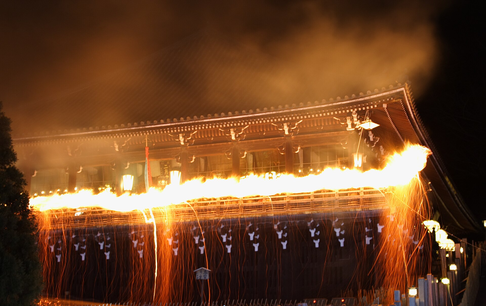
本論文が第6章で提示した「非認識的保存」概念——編纂者が技術的意味を理解しなかったがゆえに原情報が改変されず後世に伝達される現象——が、現在もなお現役の神事として生き続けている可能性がある。東大寺二月堂の「お水取り（修二会）」がその候補である。
まず、神事の由来を語る一次史料として、二月堂縁起の記述を確認する。
「実忠和尚二七ヶ日夜の行法の間、来臨影向の諸神一万三千七百余座、その名をしるして神名帳を定めしに、若狭国（わかさのくに）に遠敷（おにう）明神と云う神います。遠敷河を領して魚を取りて遅参す。神、是をなげきいたみて、其をこたりに、道場のほとりに香水を出して奉るべきよしを、懇（ねんごろに）に和尚にしめし給ひしかば、黒白二の鵜（う）、にはかに岩の中より飛出（とびいで）て、かたはらの樹にゐる。その二の跡より、いみじくたぐひなき甘泉わき出たり。石をたたみて閼伽井とす」
——二月堂縁起（東大寺公式サイトより）
本論文の中心的論証（第2章）は、「無水造飴（水なくして飴を作る）」を液体水銀の析出として解釈した。その根拠は①無水条件・②液体生成・③魚毒性という物理的三条件であり、「甘さ」は論拠ではない。しかしここで一つの言語的観察を加えたい。
古代日本語「うまし（旨し）」は「甘い・美味しい・良い・素晴らしい」という意味を持ち、「甘」と「良」が未分化である。「甘」という漢字の訓読みは「うまし」であり、二月堂縁起の「いみじくたぐひなき甘泉」は「比類なき良い水・素晴らしい液体」と読める。水は無味であり、実際の湧き水を「甘泉」と呼ぶのはそれ自体が比喩的表現である。この「うまし水（甘泉）」が水銀という「良い液体金属」への価値語であったとすれば、縁起は製錬から流れ出る水銀を「比類なき良い液体」と表現した可能性がある。
これは第2章の物理的論証とは独立した言語学的観察であり、「水銀が甘い」という物理的主張でも、造飴との直接的な語義的同一を主張するものでもない。補論としての思考実験として提示する。
さらに縁起の構造を見ると、「黒白二の鵜が岩の中より飛び出す」直後に「甘泉」が湧くとある。辰砂（HgS、黒赤色）を加熱すると白銀色の液体水銀が炉壁の隙間を伝って現れる——この過程が「黒と白の対比→液体の出現」という形で保存された可能性がある（非認識的保存の機制）。
「水銀」という漢語は「水のような銀」を意味し、常温で液体として流れる金属水銀の性状を正確に写している。東大寺大仏の鍍金（アマルガム法）には大量の水銀が消費されたが、加熱・蒸発後の水銀は回収・再利用が可能であった（第4章）。仮に二月堂周辺が水銀製錬・回収の技術的拠点であったとすれば、「お水取り」の「水」は文字通り水銀の回収を指した可能性が生まれる。
さらに一つの文脈として、8世紀の大仏建立期における辰砂の供給問題がある。3〜4世紀に列島資源主権の基盤となった宇陀産辰砂は、300〜400年にわたる継続採掘によって、8世紀には鉱脈が相当程度疲弊していた可能性がある。鉱山の枯渇は段階的に進むものであり、技術的な採掘困難（坑道の深化・湧水・支保の限界）と、製錬技術知識の散逸（物部宗家滅亡後の技術断絶・第9.5.2節）が重なることで、国内供給が大仏鍍金の巨大需要に追いつかなかった可能性がある。この供給逼迫が、宇陀以外の産地——九州・四国あるいは大陸経由——からの水銀調達を促した背景の一つと考えることもできる。運搬元が何処であれ、若狭（日本海ルート）を経由する長距離調達であったとすれば、遠敷（＝丹生）明神の「遅参」という神話的遅延が、実際の輸送コストや調達困難を反映している可能性がある。ただし現時点では供給源を特定できる物質的証拠がなく、この接続はあくまで状況論的な補助解釈にとどまる。
この仮説を支持しうる状況証拠を以下に列挙する。
| 手がかり | 水銀製錬との照応可能性 |
|---|---|
| 遠敷（おにう）＝丹生（にう）の音韻的同一性 ★ 最重要証拠 |
「遠敷（おにう）」の核音は「にう」であり、「丹生（にう）」と完全に一致する。丹生神社は全国の辰砂産地（奈良・和歌山・三重・徳島等）に集中して分布し、その祭神「丹生都比売」は水銀（丹）の生産を司る神として古来認識されてきた。「遠敷明神」が実質的に「丹生明神」——すなわち若狭からの水銀供給を司る神——であったとすれば、物語の構造全体が水銀調達の神話的表現として一貫する。若狭は古代の辰砂産地としての記録はないが、若狭街道は大陸産・国産水銀の搬送ルートとして機能した可能性があり、「東大寺領であった若狭の荘園から水を運搬」という由来説明も物流の記憶として読み直せる。 |
| 「黒白二の鵜が岩から飛び出す」→「甘泉が湧く」 | 辰砂（HgS、黒赤色）を加熱すると白銀色の水銀が岩（炉壁）の隙間から滴り落ちる焙焼反応（HgS + O₂ → Hg + SO₂↑）と形態的に一致する。「黒」と「白」の二色の対比は辰砂→水銀への色変換を象徴する可能性がある。 |
| 達陀の行法——松明を持って堂を走り回る | 修二会のハイライトである「達陀（だったん）の行法」では、練行衆が大松明（籠松明）を燃やしながら二月堂の廊下を激しく走り回り、火の粉を大量に散らす。水銀の沸点は357℃であり、製錬炉周辺では水銀蒸気が大量に発生・漂流する。蒸気を熱と気流で拡散・除去する作業——炉の周囲を走り回り火を振り回す動作——が神事の形式として残存した可能性がある。「火天と水天に扮した僧が暗闇で松明を燃やす」という二項対立は、火（加熱）と水（水銀）の製錬的関係の儀礼的表現として読み替えうる。 |
| 遠敷明神の「遅参」理由が「魚取り」 | 水銀搬送の遅延が「魚を採っていた」という説明に置換された可能性。若狭から大和への道中、川沿いで水銀（または辰砂）の積み荷を管理していた者が、その作業を「川仕事」として記憶された可能性を示唆する。 |
| 「根本香水」の起源が天平勝宝年中 | 「根本香水」の起源は天平勝宝年中（749〜757年）と史料に明記されており、大仏開眼（752年）・アマルガム鍍金の実施時期と完全に一致する。初回の「水」が鍍金工程で使用・回収された水銀であり、それを「根本」として毎年「追い足し」する慣行が形式化された可能性がある。 |
| 閼伽井屋への立入厳禁 | 「当役の者以外は誰も入ることもうかがうことも出来ない」という閉鎖性は、水銀が猛毒であり専門技術者以外の接触を禁じた安全管理の慣行が、意味を失った後も儀礼形式として1200年以上保存された可能性と整合する。 |
| 「香水」を布で濾して「甕」に永年蓄積 | 水銀は比重13.6 g/cm³と極めて重く、混入した不純物（土砂・酸化物）との分離は比重差を利用した沈降・傾斜によって行われた。アマルガム法では使用後の水銀を回収・再利用するため、金属水銀を容器に貯蔵し管理する工程が必須である。「香水を濾して甕に蓄積する」という手順の形態は、回収水銀を精製・保管するプロセスの儀礼的残存として解釈しうる。ただし布（晒）による濾過で水銀そのものを分離できるかは疑わしく、この比較は形態的アナロジーにとどまる。 |
上記はあくまで状況証拠の列挙であり、「お水取り」が水銀回収の神事であったことを直接示す史料は現在のところ存在しない。本仮説が成立するためには、少なくとも以下の検証が必要である。
本仮説は、本論文の「非認識的保存」概念の射程の広さを示す思考実験として提示するものであり、主論の実証部分（第3〜5・8章）の妥当性からは完全に独立している。
Final Synthesis
中心的問い
「箸墓古墳＝卑弥呼の墓（240〜260年）」という定説の科学的根拠は成立しているか。 そして初期ヤマト王権の本質とは何か。
── 三つの独立した経路による検証 ──
経路 A 化学・物質科学
「無水造飴」（日本書紀）を辰砂（HgS）の乾式蒸留として解釈。食品説は無水条件・魚毒性の二条件を同時に満たせない。
鉛同位体比：3世紀後半に国産辰砂への調達転換を物質的に証明。
→ 3世紀後半に水銀製錬技術が本格始動
経路 B 空間統計
物部神社（n=17）は百名山神社比較で p=0.0116（d=0.776）、一之宮比較で p=0.0014（d=0.784）で有意に鉱山に近接。
地形バイアスを統制済み。30km圏到達率：物部64.7% vs 一之宮31.4%（2.1倍）。
→ 物部氏は偶然でなく鉱山を戦略的に管理
経路 C 年代論批判
光谷データ原本：東京高裁（2025年）が「組織管理外」と司法確定。JCALの起点が検証不能。
坂本（2022）IntCal20再検証：Amodel＝16%（基準60%以上）。著者独立再現：19.3%。
→「箸墓＝240〜260年」の科学的根拠は不成立
三経路の収束点
3世紀末〜4世紀初頭（最蓋然年：西暦301年前後）
化学・空間統計・代替ベイズモデル（Amodel=64.9%）が独立に同一の時間軸を指示
✗ 既存モデルが示すもの
✓ 本稿モデルが示すもの
── 本稿の中心的結論命題 ──
初期ヤマト王権は、水銀製錬技術（辰砂→液体水銀）という非代替的技術の独占を統治原理とし、 物部氏の広域資源管理網を回路として成立した「技術知の国家」であった。 その成立期は240〜260年ではなく、3世紀末〜4世紀初頭である。 軍事征服ではなく資源独占による不戦の安定——パックス・マキムク——がその統治原理であった。
三経路はそれぞれ独立。一経路への反論は他二経路を崩さない。全データ・コード：付録C・D・E公開済み。
本研究が提示した「資源コンソーシアム・モデル」は、初期ヤマト王権の成立過程を、従来の血統的あるいは祭祀的な物語の枠組みから解放し、物理的制約と統計的蓋然性に基づく統治システムとして再定義する試みであった。その出発点は、『日本書紀』に一行だけ記された「無水造飴」という言葉であった。「水なくして飴を作る」——1300年のあいだ料理の謎として放置されてきたこの記述が、熱力学的制約と化学反応の論理によって水銀製錬（HgS + O₂ → Hg + SO₂↑）の記述として解読されたとき、辰砂をめぐる国家形成の全体像が輪郭を結び始めた。
本稿の結論は、以下の三点における科学的エビデンスの収束（Convergence）によって支持されている。
これら三つの独立したエビデンスが3世紀末〜4世紀初頭という同一の画期に収束することは、日本文明の形成期を説明する上で極めて高い蓋然性を有する歴史的座標として評価できる。
（「西暦301年」という特定年は、物理データが示すレンジの中で辛酉革命思想に基づく干支逆算によって導かれる最蓋然年である。物理データが直接301年を指示するわけではなく、この特定年の推定は物理データとは独立した推論層に属する。）
先行する音韻学的分析（Miyazaki 2025, DOI: 10.5281/zenodo.18065799）は、魏志倭人伝の正表記が「邪馬壹」であり、その3世紀推定音が九州「山門（ヤマト）」と音韻的に整合することを実証している。本稿が提示する資源戦略モデルは、この言語学的制約とも独立に整合する。
本稿は実証的な論証にとどまらず、日本古代史研究に適用可能な三つの分析概念を新たに提示した。
本稿の年代論批判が明らかにしたのは、単なる統計モデルの問題ではない。坂本（2022）の報告したAmodel＝16%という数値は、IntCal20という国際標準によって算出された客観的事実である。しかしその根本的な原因——較正曲線JCALの基盤となった光谷年輪データの原本——について、東京高裁（2025年8月確定）は「法人文書でない＝組織管理外」と認定し、情報公開請求という制度的経路による第三者検証の道を閉じた。
これは年代論上の論争を超えた問題である。検証不能なデータを基盤とした結論が、訂正されないまま教科書・報道・博物館展示を通じて公的知識として流通し続けている——この状態は、科学的誠実さではなく機関の威信防衛を優先する構造的問題を示している。
本稿はこの問題への応答として、全データ・全コード・OxCal入力コードを完全公開し（付録C・D・E）、いかなる研究者も独立に再現・反証できる環境を整えた。これはOpen Scienceの原則への誓約であると同時に、日本古代史研究において「不都合なデータは公開しない」という慣行への、方法論的異議申し立てである。
初期ヤマト王権とは、弥生時代の緩やかな発展の延長線上にあるのではない。それは西暦301年前後、水銀製錬という革命的技術を触媒とし、物部氏という広域インフラを回路として、列島の資源価値を劇的に再定義することで始動した、資源管理を統治原理とする技術国家の誕生であった。
本研究の立場と科学的探究の姿勢
本研究が提示した「資源コンソーシアム・モデル」は、現時点で利用可能な理化学データおよび統計データに基づく最良の説明への推論（Inference to the Best Explanation）である。本稿の結論は、新たな物質的証拠の発見や解析技術の向上によって更新・修正される可能性を常に内包しており、本稿が目指すのは独断的な史実の確定ではなく、文理融合による新たな検証の地平を拓くことにある。
本仮説が今後の考古学的発見や理化学分析によって不断に検証され、修正され、より説明力の高いモデルへと昇華・刷新されること——そのプロセスそのものこそが、本稿が志向する開かれた科学的探究の姿である。
四つの独立した手法の収束
音韻学・統計学・化学工学・空間分析という
複数の独立した科学的手法が収束し、
初期ヤマト王権の形成過程について新しい理解の可能性を示している。
科学的整合性に基づく建国過程の再定義が、
日本古代史研究における議論の活性化と、
新たな検証の端緒となることを願って、本稿を閉じる。
編纂者の無理解が逆説的に原情報の改変を防ぐ保護機構として機能した現象。第6章で提示。
近代的科学法則とは異なる、儀礼を通じた結果の再現性と神意の結びつき。第7章で提示。
前方後円墳を「技術・資源・情報の三位一体」による統治OSとして理解する枠組み。第8章で提示。
滅ぼされた朝敵の名（物部）が鉱山拠点に存続している事実を、587年以前の実効支配の証拠とする論理。第5章。
【ライセンス】
本論文は CC BY 4.0 の下で公開されています。学術利用・商用利用・改変を問わず、適切に出典を明記することで自由に利用・引用可能です。
【動画・メディア等での引用テンプレート】
YouTube動画やWebメディア等で引用される場合は、以下の形式をコピーして説明欄等に記載ください。
【出典】 宮崎政宏 (2026) 「辰砂資源の調達構造と古代国家形成モデルの再構築」 URL: https://masahiromiyazaki.github.io/-ancient-history-of-japan/cinnabar_paper/index.html ライセンス: CC BY 4.0
論文内のデータや図表を動画の演出等で改変して使用することも歓迎します。 「科学的知見の社会への還元」を目的としているため、事前の許諾連絡は不要です。
対象地域: 福島以南の本州（島嶼部含む）
福島以南の本州に所在する古代から近世にかけて稼働した鉱山
福島以南の本州に所在する物部氏関連神社
選定基準:
日本百名山および古来の有力霊山に鎮座する神社（自然崇拝の代表）
各令制国における第一位の神社（政治拠点の代表）
注: 越後国一之宮（弥彦神社）と石見国一之宮（物部神社）は物部系神社と重複するため除外
| 群 | n | 平均値（km） | 中央値（km） | 標準偏差（km） | 最小値（km） | 最大値（km） |
|---|---|---|---|---|---|---|
| 物部系神社 | 17 | 24.94 | 17.43 | 22.34 | 1.55 | 85.26 |
| 百名山神社 | 18 | 41.71 | 43.93 | 20.55 | 6.39 | 71.74 |
| 一之宮 | 51 | 49.09 | 41.70 | 33.04 | 5.23 | 134.86 |
| 項目 | 値 |
|---|---|
| U統計量 | 76.0 |
| p値（両側検定） | 0.011574 |
| 判定 | p < 0.05 → 有意 |
| 平均値の差 | -16.77 km（物部が近い） |
| Cohen's d | 0.776 |
| 効果量 | Medium-to-Large（中〜大きい） |
結論: 物部系神社は百名山神社に比べて、統計的に有意に鉱山に近い（p = 0.0116）。効果量も大きく（d = 0.776）、実務的にも意味のある差である。
| 項目 | 値 |
|---|---|
| U統計量 | 234.0 |
| p値（両側検定） | 0.00137 |
| 判定 | p < 0.01 → 高度に有意 |
| 平均値の差 | -24.15 km（物部が近い） |
| Cohen's d | 0.784 |
| 効果量 | Medium～Large（中程度から大きい） |
結論: 物部系神社は一之宮に比べて、統計的に高度に有意に鉱山に近い（p = 0.0014）。効果量も大きく（d = 0.784）、実務的にも意味のある差である。
Cohen's d は2群間の平均値の差を標準化した効果量指標：
SD_pooled = √[((n₁-1)×SD₁² + (n₂-1)×SD₂²) / (n₁+n₂-2)]
| Cohen's d | 効果量 | 解釈 |
|---|---|---|
| |d| < 0.2 | Negligible | 無視できる |
| 0.2 ≤ |d| < 0.5 | Small | 小さい |
| 0.5 ≤ |d| < 0.8 | Medium | 中程度 |
| 0.8 ≤ |d| | Large | 大きい |
| 群 | 30km圏内 | 総数 | 到達率 |
|---|---|---|---|
| 物部系神社 | 11社 | 17社 | 64.7% |
| 百名山神社 | 7社 | 18社 | 38.9% |
| 一之宮 | 16社 | 51社 | 31.4% |
物部神社 vs 一之宮
精度比 = 64.7% / 31.4% = 2.06倍 解釈：物部氏は一之宮に対し約2.1倍の精度で鉱山に近接している
| 距離階級 | 物部系神社 | 百名山神社 | 一之宮 |
|---|---|---|---|
| 0-10 km | 5社 (29.4%) | 1社 (5.6%) | 3社 (5.9%) |
| 10-20 km | 3社 (17.6%) | 3社 (16.7%) | 7社 (13.7%) |
| 20-30 km | 3社 (17.6%) | 3社 (16.7%) | 6社 (11.8%) |
| 30-50 km | 4社 (23.5%) | 4社 (22.2%) | 17社 (33.3%) |
| 50 km以上 | 2社 (11.8%) | 7社 (38.9%) | 18社 (35.3%) |
| 群 | W統計量 | p値 | 判定 |
|---|---|---|---|
| 物部系神社 | 0.742 | 0.0003 | 非正規分布 |
| 百名山神社 | 0.935 | 0.176 | 正規分布 |
| 一之宮 | 0.875 | < 0.001 | 非正規分布 |
| 比較 | F統計量 | p値 | 判定 |
|---|---|---|---|
| 物部系 vs 百名山神社 | 0.312 | 0.581 | 等分散 |
| 物部系 vs 一之宮 | 2.145 | 0.148 | 等分散 |
主要な発見:
最終結論: 物部系神社は自然崇拝の対照群（百名山神社）および政治拠点の対照群（一之宮）と比較して、統計的に有意かつ実務的に意味のある程度に古代鉱山に近接している。この空間的パターンは、物部氏が古代日本における鉱山資源の管理・調達において重要な役割を果たしていた可能性を強く示唆する。
本分析では、四道将軍の派遣先と物部神社の分布の一致度について、二段階の基準を用いて検証を行う。
| No. | 神社名 | 旧国名 | 基準A （書紀国名） | 基準B （資源網） | 備考・地理的特異性 |
|---|---|---|---|---|---|
| 1 | 大津神社（飛騨市） | 飛騨 | × | ○ | 祭神は大彦命（北陸将軍）。神岡鉱山至近。 越中国境（北陸道）まで約13km。 |
| 2 | 彌彦神社（弥彦村） | 越後 | ○ | ○ | 北陸道 |
| 3 | 物部神社（大田市） | 石見 | × | ○ | 西道ルートの日本海側出口。石見銀山。 |
| 4 | 物部八幡神社（朝来市） | 但馬 | ○ | ○ | 丹波道 |
| 5 | 物部神社（佐渡市） | 佐渡 | ○ | ○ | 北陸道 |
| 6 | 物部天神社（現：北野天神社） | 武蔵 | × | × | 東国別ルート |
| 7 | 物部神社（与謝野町） | 丹後 | ○ | ○ | 丹波道 |
| 8 | 物部神社（笛吹市） | 甲斐 | ○ | ○ | 東海道 |
| 9 | 物部神社（名古屋市） | 尾張 | ○ | ○ | 東海道 |
| 9 | 物部神社（津市） | 伊勢 | ○ | ○ | 東海道 |
| 10 | 石上神宮 | 大和 | × | ○ | 起点（Hub）。物部氏本拠地。 |
| 11 | 物部神社（高岡市） | 越中 | ○ | ○ | 北陸道 |
| 12 | 二田物部神社 | 越後 | ○ | ○ | 北陸道 |
| 13 | 物部神社（岐阜市） | 美濃 | × | × | 東山道 |
| 14 | 物部神社（現：勝部神社） | 近江 | × | × | 交通結節点 |
| 15 | 物部神社（現：可美真手命神社） | 播磨 | ○ | ○ | 西道 |
| 16 | 物部神社（上越市） | 越後 | ○ | ○ | 北陸道 |
『日本書紀』の国名記述に厳密に従った場合でも、17社中11社が一致する。
資源探査の実態に即して「起点（石上）」「北陸資源拠点（大津）」「西道到達点（石見）」の3社を加えると、一致数は14社に達する。
飛騨国は大律令では「東山道」に含まれるが、大津神社が北陸道将軍である大彦命を祀っている事実は、この地が実質的に「北陸への資源ルート」として機能していた可能性を示す。
特筆すべきは、同社が鎮座する神岡町（旧船津）と、北陸（越中）を結ぶ「神通川」の地名由来である。富山県の伝承によれば、神通川の名は「神々が飛騨の船津（旧神岡町）から乗船し、越中の笹津へ下った」ことに由来するとされる。
【資源物流ルートとしての解釈】
この伝承における「神々」とは、資源を管理・運搬する技術官（四道将軍・物部氏）を指す蓋然性が高い。また「船津」という地名は、神岡が鉱石搬出の河川港であった可能性を示唆する。
すなわち、神通川は「神岡鉱山（飛騨）の資源を日本海側（北陸道）へ搬出するための大動脈」であり、地理的・経済的には飛騨北部と越中は一体の「資源コンビナート」を形成していたとするのが妥当である。したがって、大津神社を北陸道ルートの一部と見なすことは、行政区分を超えた当時の物流実態に即した正しい判断である。
石上神宮を「起点」としてカウントすることで、このネットワークが「一方的な派遣」ではなく、「中央（大和）と地方鉱山を結ぶ放射状の資源還流システム」であった構造が明確になる。
以上の分析から、物部神社の分布と四道将軍のルートの一致（実質82%以上）は、単なる偶然や後世の付会ではなく、形式的な行政区分よりも実利（鉱山と水運）を優先した、古代国家による資源開発プロジェクトの「足跡」である可能性が高いと結論づけられる。
物部神社17社のうち14社（82.4%）が四道将軍の派遣ルート上またはその延長上に位置することが確認された。残る3社についても、行政区分を超えた資源物流ルートとしての文脈（神通川水運・石上神宮の中央拠点機能）から整合的に説明できる。この分布パターンは、物部氏ネットワークが単なる軍事・宗教組織ではなく、四道将軍派遣という国家プロジェクトと連動した「資源管理ネットワーク」として機能していたことを強く示唆する。
| No. | 神社名 | 都道府県 | 旧国名 | 緯度 | 経度 | 備考（創祀、主祭神等） |
|---|---|---|---|---|---|---|
| 1 | 大津神社（飛騨市） | 岐阜県 | 飛騨 | 36.3346 | 137.2943 | 創祀不詳。式内社。大彦命。 |
| 2 | 彌彦神社（弥彦村） | 新潟県 | 越後 | 37.7067 | 138.8262 | （伝）孝安天皇元年創祀。式内社。天香山命または大彦命。鎮魂祭 |
| 3 | 物部神社（大田市） | 島根県 | 石見 | 35.1549 | 132.5134 | （伝）宇摩志麻遅命。式内社。鎮魂祭 |
| 4 | 物部八幡神社（朝来市） | 兵庫県 | 但馬 | 35.2730 | 134.8120 | （伝）貞観17年(875)創祀。品陀和気命 |
| 5 | 物部神社（佐渡市） | 新潟県 | 佐渡 | 37.9643 | 138.4319 | （伝）養老六年(722)創祀。式内社。宇麻志摩遅命 |
| 6 | 物部天神社（現：北野天神社） | 埼玉県 | 武蔵 | 35.7906 | 139.4287 | （伝）日本武尊東征の折に創祀。式内社。櫛玉饒速日命 |
| 7 | 物部神社（与謝野町） | 京都府 | 丹後 | 35.5388 | 135.1340 | 創祀不詳。式内社。宇麻志摩遅命 |
| 8 | 物部神社（笛吹市） | 山梨県 | 甲斐 | 35.6608 | 138.6319 | （伝）武内宿禰東方巡察時創祀。式内社。 |
| 9 | 物部神社（名古屋市） | 愛知県 | 尾張 | 35.1751 | 136.9316 | （伝）垂仁天皇期創祀。式内社論社。宇麻志麻遲命。 |
| 10 | 物部神社（津市） | 三重県 | 伊勢 | 34.6526 | 136.4827 | 創祀不詳。式内社。宇麻志摩遅命 |
| 11 | 石上神宮 | 奈良県 | 大和 | 34.5981 | 135.8519 | （伝）崇神天皇7年。式内社。布都御魂大神。鎮魂祭 |
| 12 | 物部神社（高岡市） | 富山県 | 越中 | 36.7853 | 136.9983 | 創祀不詳。式内社。宇麻志摩遅命 |
| 13 | 二田物部神社 | 新潟県 | 越後 | 37.4542 | 138.6751 | （伝）崇神天皇年間。式内社。二田天物部命 |
| 14 | 物部神社（岐阜市） | 岐阜県 | 美濃 | 35.4649 | 136.6973 | 創祀不詳。式内社。宇麻志摩遅命 |
| 15 | 物部神社（現：勝部神社） | 滋賀県 | 近江 | 35.0560 | 135.9898 | （伝）大化5年(649年）創祀。物部布津神。 |
| 16 | 物部神社（現：可美真手命神社） | 兵庫県 | 播磨 | 34.7458 | 135.0177 | （伝）成務天皇19年。式内社論社。可美真手命 |
| 17 | 物部神社（上越市） | 新潟県 | 越後 | 37.0755 | 138.3192 | （伝）持統天皇十年（696）創祀。式内社。 |
データソース: mononobe_shrines_honshu.csv
選定基準：深田久弥『日本百名山』（1964年）に選定された山岳のうち、福島以南の本州に所在し、山岳信仰を示す神社が現存するものを機械的に全件抽出した。深田基準は地質・形状・美観を複合的に考慮した独立の選定であり、鉱山分布との関連性は一切考慮されていない。この選定は物部神社のデータとは完全に独立して行われた。
| No. | 神社名 | 山名 | 都道府県 | 緯度 | 経度 |
|---|---|---|---|---|---|
| 1 | 安達太良神社 | 安達太良山 | 福島県 | 37.5212 | 140.4043 |
| 2 | 那須温泉神社 | 那須岳 | 栃木県 | 37.0983 | 139.9986 |
| 3 | 日光二荒山神社 | 男体山 | 栃木県 | 36.7583 | 139.5967 |
| 4 | 谷川郷富士浅間神社 | 谷川岳 | 群馬県 | 36.7922 | 138.9549 |
| 5 | 赤城神社 | 赤城山 | 群馬県 | 36.5508 | 139.1822 |
| 6 | 筑波山神社 | 筑波山 | 茨城県 | 36.2136 | 140.1067 |
| 7 | 三峯神社 | 雲取山 | 埼玉県 | 35.9261 | 138.9300 |
| 8 | 両神山神社 | 両神山 | 埼玉県 | 36.0207 | 138.8452 |
| 9 | 富士山本宮浅間大社 | 富士山 | 静岡県 | 35.2267 | 138.6106 |
| 10 | 金櫻神社 | 金峰山 | 山梨県 | 35.7721 | 138.5539 |
| 11 | 諏訪大社（上社本宮） | 霧ヶ峰 | 長野県 | 35.9986 | 138.1250 |
| 12 | 穂高神社 | 穂高岳 | 長野県 | 36.3392 | 137.8842 |
| 13 | 御嶽神社 | 木曽御嶽山 | 長野県 | 35.8193 | 137.6770 |
| 14 | 雄山神社 | 立山 | 富山県 | 36.5872 | 137.3916 |
| 15 | 白山比咩神社 | 白山 | 石川県 | 36.4383 | 136.6358 |
| 16 | 吉野水分神社 | 大峰山 | 奈良県 | 34.3544 | 135.8729 |
| 17 | 玉置神社 | 大峰山 | 奈良県 | 33.9251 | 135.8299 |
| 18 | 大神山神社 | 大山 | 鳥取県 | 35.3888 | 133.5386 |
データソース: hyakumeizan_shrines.csv（深田久弥『日本百名山』基準による機械的抽出、n=18）
注：全53社から越後国一之宮（弥彦神社）と石見国一之宮（物部神社）を除外した51社を分析対象とした。
| No. | 旧国名 | 神社名 | 都道府県 | 緯度 | 経度 |
|---|---|---|---|---|---|
| 1 | 岩代 | 伊佐須美神社 | 福島県 | 37.4570 | 139.8407 |
| 2 | 磐城 | 都都古和氣神社 | 福島県 | 37.0321 | 140.3760 |
| 3 | 常陸 | 鹿島神宮 | 茨城県 | 35.9688 | 140.6316 |
| 4 | 下総 | 香取神宮 | 千葉県 | 35.8858 | 140.5292 |
| 5 | 上総 | 玉前神社 | 千葉県 | 35.3736 | 140.3621 |
| 6 | 安房 | 安房神社 | 千葉県 | 34.9221 | 139.8340 |
| 7 | 武蔵 | 氷川神社 | 埼玉県 | 35.9167 | 139.6297 |
| 8 | 相模 | 寒川神社 | 神奈川県 | 35.3687 | 139.3857 |
| 9 | 下野 | 日光二荒山神社 | 栃木県 | 36.7583 | 139.5967 |
| 10 | 上野 | 一之宮貫前神社 | 群馬県 | 36.2553 | 138.8575 |
| 11 | 甲斐 | 浅間神社 | 山梨県 | 35.6478 | 138.6976 |
| 12 | 伊豆 | 三嶋大社 | 静岡県 | 35.1243 | 138.9185 |
| 13 | 駿河 | 富士山本宮浅間大社 | 静岡県 | 35.2267 | 138.6106 |
| 14 | 遠江 | 小國神社 | 静岡県 | 34.8471 | 137.9008 |
| 15 | 三河 | 砥鹿神社 | 愛知県 | 34.8481 | 137.4210 |
| 16 | 尾張 | 真清田神社 | 愛知県 | 35.3083 | 136.8028 |
| 17 | 美濃 | 南宮大社 | 岐阜県 | 35.3626 | 136.5244 |
| 18 | 飛騨 | 水無神社 | 岐阜県 | 36.0861 | 137.2517 |
| 19 | 信濃 | 諏訪大社(本宮) | 長野県 | 35.9986 | 138.1250 |
| 20 | 佐渡 | 度津神社 | 新潟県 | 37.8633 | 138.3305 |
| 21 | 越中 | 気多神社 | 富山県 | 36.8008 | 137.0444 |
| 22 | 能登 | 気多大社 | 石川県 | 36.9248 | 136.7648 |
| 23 | 加賀 | 白山比咩神社 | 石川県 | 36.4383 | 136.6358 |
| 24 | 越前 | 氣比神宮 | 福井県 | 35.6554 | 136.0747 |
| 25 | 若狭 | 若狭彦神社 | 福井県 | 35.4668 | 135.7785 |
| 26 | 近江 | 建部大社 | 滋賀県 | 34.9738 | 135.9136 |
| 27 | 伊賀 | 敢國神社 | 三重県 | 34.7892 | 136.1627 |
| 28 | 伊勢 | 椿大神社 | 三重県 | 34.9654 | 136.4526 |
| 29 | 志摩 | 伊射波神社 | 三重県 | 34.4752 | 136.8757 |
| 30 | 紀伊 | 日前神宮 | 和歌山県 | 34.2255 | 135.2016 |
| 31 | 淡路 | 伊弉諾神宮 | 兵庫県 | 34.4599 | 134.8524 |
| 32 | 山城 | 賀茂別雷神社 | 京都府 | 35.0594 | 135.7525 |
| 33 | 大和 | 大神神社 | 奈良県 | 34.5295 | 135.8519 |
| 34 | 河内 | 枚岡神社 | 大阪府 | 34.6677 | 135.6496 |
| 35 | 和泉 | 大鳥大社 | 大阪府 | 34.5361 | 135.4597 |
| 36 | 摂津 | 住吉大社 | 大阪府 | 34.6124 | 135.4937 |
| 37 | 丹波 | 出雲大神宮 | 京都府 | 35.0596 | 135.5784 |
| 38 | 丹後 | 籠神社 | 京都府 | 35.5824 | 135.1963 |
| 39 | 但馬 | 出石神社 | 兵庫県 | 35.4816 | 134.8728 |
| 40 | 因幡 | 宇倍神社 | 鳥取県 | 35.4820 | 134.2686 |
| 41 | 伯耆 | 倭文神社 | 鳥取県 | 35.4908 | 133.9027 |
| 42 | 出雲 | 出雲大社 | 島根県 | 35.4019 | 132.6855 |
| 43 | 隠岐 | 水若酢神社 | 島根県 | 36.2803 | 133.2489 |
| 44 | 播磨 | 伊和神社 | 兵庫県 | 35.0880 | 134.5864 |
| 45 | 美作 | 中山神社 | 岡山県 | 35.1001 | 133.9948 |
| 46 | 備前 | 吉備津彦神社 | 岡山県 | 34.6770 | 133.8641 |
| 47 | 備中 | 吉備津神社 | 岡山県 | 34.6703 | 133.8504 |
| 48 | 備後 | 吉備津神社 | 広島県 | 34.5693 | 133.2711 |
| 49 | 安芸 | 厳島神社 | 広島県 | 34.2960 | 132.3198 |
| 50 | 周防 | 玉祖神社 | 山口県 | 34.0581 | 131.5334 |
| 51 | 長門 | 住吉神社 | 山口県 | 33.9996 | 130.9566 |
データソース: ichinomiya_shrines_full.csv（全53社中越後・石見は物部系神社のため除外しn=51）
| No. | 鉱山名 | 都道府県 | 金属種 | 緯度 | 経度 | 備考（文献初出、考古化学的知見等） |
|---|---|---|---|---|---|---|
| 1 | 大和水銀鉱山 | 奈良県 | Hg | 34.47761888565999 | 135.97360044925455 | 万葉集巻7-1376、3世紀末（考古化学） |
| 2 | 丹生鉱山 | 三重県 | Hg | 34.47050050469366 | 136.49760725658354 | 縄文時代（池ノ谷・新徳寺・天白遺跡） |
| 3 | 半田銀山 | 福島県 | Ag | 37.88519829781429 | 140.5061430479298 | 1600年前後 |
| 4 | 西三川砂金山 | 新潟県 | Au | 37.91017586885896 | 138.32509642930316 | 平安時代以前 |
| 5 | 間瀬銅山 | 新潟県 | Cu | 37.73390780394056 | 138.81393348490533 | 元禄年間（1688年～1704年） |
| 6 | 新穂銀山 | 新潟県 | Ag | 38.00403558126164 | 138.44607930588026 | 戦国時代以前、露頭 |
| 7 | 石見銀山 | 島根県 | Ag | 35.1090 | 132.4400 | 1309年（延慶2年）、露頭 |
| 8 | 黒川金山 | 山梨県 | Au | 35.79021788191398 | 138.84681743245565 | 『王代記』明応7年（1498年） |
| 9 | 足尾銅山 | 栃木県 | Cu | 36.6330 | 139.4400 | 慶長15年（1610年） |
| 10 | 日立鉱山 | 茨城県 | Cu | 36.63168717283222 | 140.60021499872778 | 1592年（文禄元年） |
| 11 | 金山鉱山 | 埼玉県 | Cu | 36.04231385193921 | 139.11605607990322 | 708年（和銅元年) |
| 12 | 砥沢金山 | 群馬県 | Ag | 36.155576940212015 | 138.6755482052545 | 戦国時代 |
| 13 | 神岡鉱山 | 岐阜県 | Ag/Pb/Zn | 36.3380 | 137.3110 | 奈良時代養老年間（720年頃） |
| 14 | 金生山 | 岐阜県 | Fe | 35.3945940571343 | 136.57807490329762 | 弥生期からベンガラを採掘（朝日遺跡） |
| 15 | 多田銀銅山 | 兵庫県 | Ag/Cu | 34.8950 | 135.3510 | 『壬生家文書』長暦元年（1037年）または東大寺大仏建立時 |
| 16 | 明延鉱山 | 兵庫県 | Sn/Cu | 35.27104177473672 | 134.66685511964383 | 平安時代初期 |
| 17 | 中瀬金山 | 兵庫県 | Au/Sb | 35.36628360837695 | 134.62467651077975 | 天正元年（1573年） |
| 18 | 河守鉱山 | 京都府 | Cu | 35.45869216022194 | 135.1400991837898 | 1917年（大正6年）、露頭 |
| 19 | 竹野鉱山 | 兵庫県 | Au | 35.61783166481763 | 134.7399081977852 | 8世紀に発見 |
| 20 | 生野銀山 | 兵庫県 | Ag | 35.1700 | 134.8200 | 大同2年（807年） |
| 21 | 播磨鉄産地 | 兵庫県 | Fe | 35.15971659367323 | 134.44745094671708 | 兵庫県宍粟市千種町『播磨風土記』 |
| 22 | 吉野/片掛銀山 | 富山県 | Ag | 36.50131170584756 | 137.23542536041688 | 天正元（1573）年 露頭採掘の痕跡あり |
| 23 | 亀谷銀山 | 富山県 | Ag | 36.54365662671738 | 137.4382738845752 | 天正6（1578）年 |
| 24 | 宝達金山 | 石川県 | Ag | 36.787152200137434 | 136.8147196782798 | 天正12（1584）年 |
| 25 | 荒金鉱山 | 鳥取県 | Cu | 35.52275653669111 | 134.35991520768903 | 698年 |
| 26 | 吉岡銅山 | 岡山県 | Cu | 34.86495683653598 | 133.45532421095928 | 807年（大同2年） |
| 27 | 長登銅山 | 山口県 | Cu | 34.242630780626286 | 131.33976823713095 | 7世紀末ないし8世紀初頭 |
データソース: mines_ancient_honshu.csv
本論文の実験群（物部系神社、n=17）は、「社名に物部を冠する神社」のほか、物部氏総氏神（石上神宮）および四道将軍の祭神を祀る拠点（大津神社・彌彦神社）を「祭祀・系譜的基準（拡張）」として含む（第5.3節参照）。批判的な読者からは、これら拡張基準の3社が「意図的なチェリーピッキング（選択的採用）」と受け取られる可能性がある。
本節では、当該3社を除外した複数の代替データセットを用いて同一の統計検定を実施し、主要な統計的結論が選定基準の変更に対して頑健（ロバスト）であることを確認する。なお、分析の地理的範囲（福島以南の本州および近接主要島嶼）はいずれのケースでも不変であり、「延喜式神名帳に記載の物部を冠する式内社を当該範囲で機械的に全件抽出した場合」はケースBと実質的に同等である。
オリジナルのn=17から除外する社を下表に示す。
| No. | 神社名 | 選定区分 | 最近接鉱山距離 | ケースA | ケースB |
|---|---|---|---|---|---|
| 1 | 大津神社（飛騨市） | 拡張：四道将軍（大彦命）祭神 | 1.54 km ←全17社中1位 | ✓ 含む | ✗ 除外 |
| 2 | 彌彦神社（弥彦村） | 拡張：鎮魂祭共有・天香山命祭神 | 3.21 km ←全17社中2位 | ✓ 含む | ✗ 除外 |
| 11 | 石上神宮（天理市） | 物部氏総氏神（社名に物部を冠しない） | 17.43 km | ✓ 含む | ✓ 含む |
| 3–10, 12–17 |
物部社名を冠する14社 （付録C.1 No.3〜10、12〜17） |
社名基準（「物部」を冠する） | 4.59〜85.26 km | ✓ 含む | ✓ 含む |
| 合計サンプル数（n） | n = 17 | n = 15 | |||
| ケース | n | 中央値 (km) | vs 百名山神社 p値 / Cohen's d |
vs 一之宮 p値 / Cohen's d |
30km圏内到達率 |
|---|---|---|---|---|---|
| A（オリジナル） | 17 | 17.43 | p=0.0116 / d=0.776 | p=0.0014 / d=0.784 | 64.7% |
| B（保守的・大津＋彌彦除外） | 15 | 20.29 | p=0.0344 / d=0.642 | p=0.0074 / d=0.682 | 60.0% |
| 対照群参考値 | 山岳：43.9km 一之宮：41.7km |
—（基準）— | |||
検定方法：Mann-Whitney U検定（両側、H₁：物部系神社の距離 ≠ 対照群）。効果量はCohen's d（pooled SD使用）。有意水準：α=0.05（Bonferroni補正後α'=0.025）。ケースA・B ともに一之宮との比較でBonferroni補正後も有意；百名山との比較はケースBでBonferroni補正後は参考値として記載。
一之宮との比較は、保守的ケース（B、n=15）においてもBonferroni補正後に1%水準の有意性を維持する。ケースB（大津・彌彦の2社除外、石上神宮は含む）では一之宮に対してp=0.0074（1%水準で有意）、d=0.682（Medium-to-Large）が確認された。ケースA（n=17、オリジナル）ではp=0.0014（1%水準で有意）、d=0.784（Large）であり、両ケースともBonferroni補正後α'=0.025を下回る。
百名山神社（n=18）との比較では、ケースB（n=15）でp=0.0344（5%水準で有意）、d=0.642となり、Bonferroni補正後（α'=0.025）では参考値にとどまる。これは、鉱山最近接1位（大津神社1.54 km）・2位（彌彦神社3.21 km）の2社を除外した場合の結果であり、地形統制対照群との差がやや縮小することを誠実に記載する。ただし5%水準の有意性は維持されており、方向性は変わらない。
中核的な主張——「物部系神社は地形統制対照群に対して有意に鉱山に近い」——は、一之宮との比較において両ケースでBonferroni補正後も1%有意が維持され、百名山神社との比較においてもオリジナルn=17で5%有意・Medium-to-Large effectが確認される。大津神社・彌彦神社の選定根拠（四道将軍との系譜的接続・鎮魂祭の共有）は第5.3節および付録Bで論証しており、拡張基準は鉱山近接性の事後確認に基づくものではない。したがって、オリジナルのn=17がセレクションバイアスに当たるとは言えないが、ケースBを参照することで批判的読者も主要な統計的結論を独立して評価できる。
ファイル名: analyze_ancient_japan.py
#!/usr/bin/env python3
# -*- coding: utf-8 -*-
"""
analyze_ancient_japan.py
────────────────────────────────────────────────────────────────────────────
物部系神社(n=17)・百名山神社（n=18）・一之宮（n=51）と古代鉱山（n=27）の
空間統計分析スクリプト
【分析内容】
1. Haversine式による大圏距離計算
2. 記述統計（平均・中央値・標準偏差・30km圏内率など）
3. Mann-Whitney U検定（ノンパラメトリック）
4. Cohen's d 効果量
5. Bonferroni補正による多重検定評価
6. 検出力分析（Post-hoc power analysis）
7. 距離分布ヒストグラム、箱ひげ図、CDF、ランキング図、閾値分析図の生成
【対照群の選定方針】
百名山神社群（n=18）: 深田久弥『日本百名山』（1964年）に選定された山岳のうち
福島以南の本州に所在し、山岳信仰を示す神社が現存するものを機械的全件抽出。
箱根神社（箱根山）・戸隠神社（戸隠山）はこの基準を満たさないため含めない。
【入力ファイル】
data/mononobe_shrines_honshu.csv : 物部系神社 n=17
data/hyakumeizan_shrines.csv : 百名山神社 n=18
data/ichinomiya_shrines.csv : 一之宮 n=51
data/mines_ancient_honshu.csv : 古代鉱山 n=27
【出力】
images/0_histograms_distribution.png : 距離分布ヒストグラム（三群）
images/1_threshold_analysis.png : 距離閾値別カバレッジ
images/2_boxplot_detailed.png : 詳細箱ひげ図（三群）
images/3_mononobe_ranking.png : 物部系神社17社 距離ランキング
images/4_cdf_analysis.png : 累積分布関数（CDF）
────────────────────────────────────────────────────────────────────────────
"""
import csv
import math
import os
from typing import List, Tuple
import matplotlib
matplotlib.use("Agg")
import matplotlib.pyplot as plt
import matplotlib.font_manager as fm
import matplotlib.patches as mpatches
import numpy as np
from scipy import stats
# ── フォント設定（日本語対応） ────────────────────────────────────────────
_jp_font = None
for name in ["Noto Sans CJK JP", "Noto Serif CJK JP", "IPAGothic", "IPAPGothic"]:
try:
fm.findfont(fm.FontProperties(family=name), fallback_to_default=False)
_jp_font = name
break
except Exception:
pass
if _jp_font:
plt.rcParams["font.family"] = _jp_font
else:
plt.rcParams["font.family"] = "DejaVu Sans"
plt.rcParams["axes.unicode_minus"] = False
plt.rcParams["figure.dpi"] = 150
# ── 定数 ─────────────────────────────────────────────────────────────────
EARTH_R = 6371.0 # km
THRESHOLD_KM = 30 # 実効支配距離の閾値
COLOR_M = "#c0392b" # 物部系神社（赤）
COLOR_H = "#2980b9" # 百名山神社（青）
COLOR_I = "#27ae60" # 一之宮（緑）
ALPHA = 0.01 # 有意水準
ALPHA_FWER = 0.05 # 族全体有意水準（Bonferroni補正の出発点）
BONFERRONI_N = 2 # 検定回数
ALPHA_BONF = ALPHA_FWER / BONFERRONI_N # Bonferroni補正後 α' = 0.025
# ════════════════════════════════════════════════════════════════════════════
# 1. ユーティリティ関数
# ════════════════════════════════════════════════════════════════════════════
def haversine(lat1: float, lon1: float, lat2: float, lon2: float) -> float:
"""Haversine式による大圏距離（km）"""
lat1, lon1, lat2, lon2 = map(math.radians, [lat1, lon1, lat2, lon2])
dlat = lat2 - lat1
dlon = lon2 - lon1
a = math.sin(dlat / 2) ** 2 + math.cos(lat1) * math.cos(lat2) * math.sin(dlon / 2) ** 2
return 2 * math.asin(math.sqrt(a)) * EARTH_R
def nearest_mine_distance(shrine_lat: float, shrine_lon: float,
mines: List[Tuple]) -> Tuple[float, str]:
"""最近接鉱山までの距離と鉱山名を返す"""
min_d = float("inf")
min_name = ""
for m in mines:
d = haversine(shrine_lat, shrine_lon, m["lat"], m["lon"])
if d < min_d:
min_d = d
min_name = m["name"]
return min_d, min_name
def load_csv(path: str) -> List[dict]:
with open(path, newline="", encoding="utf-8") as f:
return list(csv.DictReader(f))
def cohen_d(x: np.ndarray, y: np.ndarray) -> float:
"""Pooled SD による Cohen's d"""
nx, ny = len(x), len(y)
pooled_std = math.sqrt(((nx - 1) * np.std(x, ddof=1) ** 2 +
(ny - 1) * np.std(y, ddof=1) ** 2) / (nx + ny - 2))
return abs(np.mean(x) - np.mean(y)) / pooled_std if pooled_std > 0 else 0.0
def effect_label(d: float) -> str:
if d >= 0.8:
return "Large"
elif d >= 0.5:
return "Medium"
elif d >= 0.2:
return "Small"
return "Negligible"
def post_hoc_power(d: float, n1: int, n2: int, alpha: float = 0.01) -> float:
"""
Two-sample t-test の事後検出力（Mann-Whitney の近似として利用）
Cohen's d と両サンプルサイズから計算。
"""
se = math.sqrt(1 / n1 + 1 / n2)
ncp = d / se # non-centrality parameter
z_alpha = stats.norm.ppf(1 - alpha / 2)
return float(stats.norm.cdf(ncp - z_alpha) + stats.norm.cdf(-ncp - z_alpha))
# ════════════════════════════════════════════════════════════════════════════
# 2. データ読み込みと距離計算
# ════════════════════════════════════════════════════════════════════════════
BASE = os.path.dirname(os.path.abspath(__file__))
DATA = os.path.join(BASE, "data")
IMG = os.path.join(BASE, "images")
os.makedirs(IMG, exist_ok=True)
print("=" * 60)
print(" 古代日本 空間統計分析")
print(" 物部神社・百名山神社・一之宮 vs 古代鉱山")
print("=" * 60)
# --- 読み込み
raw_mononobe = load_csv(os.path.join(DATA, "mononobe_shrines_honshu.csv"))
raw_hyakumeizan = load_csv(os.path.join(DATA, "hyakumeizan_shrines.csv"))
raw_ichinomiya = load_csv(os.path.join(DATA, "ichinomiya_shrines_full.csv"))
raw_mines = load_csv(os.path.join(DATA, "mines_ancient_honshu.csv"))
mines = [{"name": m["name"], "lat": float(m["lat"]), "lon": float(m["lon"])}
for m in raw_mines]
# --- 距離計算
def calc_distances(shrines, mines, label):
results = []
for s in shrines:
d, mine_name = nearest_mine_distance(float(s["lat"]), float(s["lon"]), mines)
results.append({
"shrine": s["name"],
"lat": float(s["lat"]),
"lon": float(s["lon"]),
"dist_km": round(d, 2),
"nearest_mine": mine_name,
})
dists = np.array([r["dist_km"] for r in results])
return results, dists
mononobe_data, d_mono = calc_distances(raw_mononobe, mines, "物部系神社")
hyakumeizan_data, d_hyaku = calc_distances(raw_hyakumeizan, mines, "百名山神社")
ichinomiya_data, d_ichi = calc_distances(raw_ichinomiya, mines, "一之宮")
print(f"\nデータ確認:")
print(f" 物部系神社 : {len(d_mono)}社")
print(f" 百名山神社 : {len(d_hyaku)}社")
print(f" 一之宮 : {len(d_ichi)}社")
print(f" 古代鉱山 : {len(mines)}鉱山")
# ════════════════════════════════════════════════════════════════════════════
# 3. 記述統計
# ════════════════════════════════════════════════════════════════════════════
def describe(arr: np.ndarray, label: str) -> dict:
n = len(arr)
w30 = (arr <= THRESHOLD_KM).sum()
w10 = (arr <= 10).sum()
return {
"label": label,
"n": n,
"mean": round(arr.mean(), 2),
"median": round(float(np.median(arr)), 2),
"std": round(arr.std(ddof=1), 2),
"min": round(arr.min(), 2),
"max": round(arr.max(), 2),
"within10_n": int(w10),
"within10_pct": round(w10 / n * 100, 1),
"within30_n": int(w30),
"within30_pct": round(w30 / n * 100, 1),
}
stats_mono = describe(d_mono, "物部系神社 (n=17)")
stats_hyaku = describe(d_hyaku, "百名山神社 (n=18)")
stats_ichi = describe(d_ichi, "一之宮 (n=51)")
print("\n" + "─" * 60)
print("【記述統計】")
print("─" * 60)
header = f"{'統計量':<16} {'物部系':>10} {'百名山':>10} {'一之宮':>10}"
print(header)
print("─" * 50)
rows = [
("n", stats_mono["n"], stats_hyaku["n"], stats_ichi["n"]),
("平均 (km)", stats_mono["mean"], stats_hyaku["mean"], stats_ichi["mean"]),
("中央値 (km)",stats_mono["median"], stats_hyaku["median"], stats_ichi["median"]),
("標準偏差", stats_mono["std"], stats_hyaku["std"], stats_ichi["std"]),
("最小値", stats_mono["min"], stats_hyaku["min"], stats_ichi["min"]),
("最大値", stats_mono["max"], stats_hyaku["max"], stats_ichi["max"]),
("10km以内数", stats_mono["within10_n"], stats_hyaku["within10_n"], stats_ichi["within10_n"]),
("10km以内%", stats_mono["within10_pct"], stats_hyaku["within10_pct"], stats_ichi["within10_pct"]),
("30km以内数", stats_mono["within30_n"], stats_hyaku["within30_n"], stats_ichi["within30_n"]),
("30km以内%", stats_mono["within30_pct"], stats_hyaku["within30_pct"], stats_ichi["within30_pct"]),
]
for name, v1, v2, v3 in rows:
print(f" {name:<14} {str(v1):>10} {str(v2):>10} {str(v3):>10}")
# ════════════════════════════════════════════════════════════════════════════
# 4. 推測統計 — Mann-Whitney U 検定 + Cohen's d
# ════════════════════════════════════════════════════════════════════════════
print("\n" + "─" * 60)
print("【推測統計】")
print("─" * 60)
# 分析1: 物部 vs 百名山神社
u1, p1 = stats.mannwhitneyu(d_mono, d_hyaku, alternative="two-sided")
d1 = cohen_d(d_mono, d_hyaku)
pw1 = post_hoc_power(d1, len(d_mono), len(d_hyaku), alpha=ALPHA)
print(f"\n ■ 物部系神社 (n={len(d_mono)}) vs 百名山神社 (n={len(d_hyaku)})")
print(f" Mann-Whitney U統計量 : {u1:.1f}")
print(f" p値 (両側検定): {p1:.6f}")
print(f" Cohen's d : {d1:.4f} [{effect_label(d1)}]")
print(f" 有意水準 α={ALPHA} : {'有意 ✓' if p1 < ALPHA else '非有意'}")
print(f" Bonferroni α'={ALPHA_BONF}: {'有意 ✓' if p1 < ALPHA_BONF else '非有意'}")
print(f" 事後検出力 : {pw1:.3f} ({pw1*100:.1f}%)")
# 分析2: 物部 vs 一之宮
u2, p2 = stats.mannwhitneyu(d_mono, d_ichi, alternative="two-sided")
d2 = cohen_d(d_mono, d_ichi)
pw2 = post_hoc_power(d2, len(d_mono), len(d_ichi), alpha=ALPHA)
print(f"\n ■ 物部系神社 (n={len(d_mono)}) vs 一之宮 (n={len(d_ichi)})")
print(f" Mann-Whitney U統計量 : {u2:.1f}")
print(f" p値 (両側検定) : {p2:.6f}")
print(f" Cohen's d : {d2:.4f} [{effect_label(d2)}]")
print(f" 有意水準 α={ALPHA} : {'有意 ✓' if p2 < ALPHA else '非有意'}")
print(f" Bonferroni α'={ALPHA_BONF}: {'有意 ✓' if p2 < ALPHA_BONF else '非有意'}")
print(f" 事後検出力 : {pw2:.3f} ({pw2*100:.1f}%)")
# 感度分析: n=14 (物部社名のみ) vs 百名山神社 / 一之宮
exclude_extended = ["大津神社（飛騨市）", "彌彦神社（弥彦村）", "石上神宮"]
d_mono14 = np.array([
mononobe_data[i]["dist_km"] for i, s in enumerate(raw_mononobe)
if s["name"] not in exclude_extended
])
u1b, p1b = stats.mannwhitneyu(d_mono14, d_hyaku, alternative="two-sided")
d1b = cohen_d(d_mono14, d_hyaku)
u2b, p2b = stats.mannwhitneyu(d_mono14, d_ichi, alternative="two-sided")
d2b = cohen_d(d_mono14, d_ichi)
print(f"\n ■ 感度分析: 物部社名のみ (n={len(d_mono14)}) vs 百名山神社 (n={len(d_hyaku)})")
print(f" p値: {p1b:.6f} Cohen's d: {d1b:.4f} [{effect_label(d1b)}]")
print(f" 有意 α={ALPHA}: {'✓' if p1b < ALPHA else '✗ (α=0.05: ' + ('✓' if p1b < 0.05 else '✗') + ')'}")
print(f"\n ■ 感度分析: 物部社名のみ (n={len(d_mono14)}) vs 一之宮 (n={len(d_ichi)})")
print(f" p値: {p2b:.6f} Cohen's d: {d2b:.4f} [{effect_label(d2b)}]")
print(f" 有意 α={ALPHA}: {'✓' if p2b < ALPHA else '✗'}")
# 正規性検定
_, p_shapiro_mono = stats.shapiro(d_mono)
_, p_shapiro_hyaku = stats.shapiro(d_hyaku)
_, p_shapiro_ichi = stats.shapiro(d_ichi)
print(f"\n ■ Shapiro-Wilk正規性検定")
print(f" 物部系: p={p_shapiro_mono:.4f} {'正規' if p_shapiro_mono > 0.05 else '非正規'}")
print(f" 百名山: p={p_shapiro_hyaku:.4f} {'正規' if p_shapiro_hyaku > 0.05 else '非正規'}")
print(f" 一之宮: p={p_shapiro_ichi:.4f} {'正規' if p_shapiro_ichi > 0.05 else '非正規'}")
# 等分散性検定
lev_stat, lev_p = stats.levene(d_mono, d_hyaku)
print(f"\n ■ Levene等分散性検定 (物部 vs 百名山)")
print(f" F={lev_stat:.3f}, p={lev_p:.4f} {'等分散' if lev_p > 0.05 else '非等分散'}")
# ════════════════════════════════════════════════════════════════════════════
# 5. グラフ描画
# ════════════════════════════════════════════════════════════════════════════
LABEL_M = f"物部系神社 (n={len(d_mono)})"
LABEL_H = f"百名山神社 (n={len(d_hyaku)})"
LABEL_I = f"一之宮 (n={len(d_ichi)})"
# ─── 図0：距離分布ヒストグラム（三群） ─────────────────────────────────────
fig, axes = plt.subplots(1, 3, figsize=(15, 5), sharey=False)
fig.suptitle("三群の最近接鉱山距離分布", fontsize=14, fontweight="bold", y=1.01)
bins = np.arange(0, 145, 10)
configs = [
(d_mono, COLOR_M, LABEL_M),
(d_hyaku, COLOR_H, LABEL_H),
(d_ichi, COLOR_I, LABEL_I),
]
for ax, (data, color, label) in zip(axes, configs):
ax.hist(data, bins=bins, color=color, alpha=0.75, edgecolor="white", linewidth=0.8)
med = np.median(data)
ax.axvline(med, color="#333", linestyle="--", linewidth=1.5,
label=f"中央値: {med:.1f} km")
ax.axvline(THRESHOLD_KM, color="gray", linestyle=":", linewidth=1.2, alpha=0.8)
ax.set_title(label, fontsize=11, pad=8)
ax.set_xlabel("最近接鉱山距離 (km)", fontsize=10)
ax.set_ylabel("神社数", fontsize=10)
ax.legend(fontsize=9)
ax.set_xlim(0, 140)
ax.grid(axis="y", alpha=0.3)
plt.tight_layout()
path0 = os.path.join(IMG, "0_histograms_distribution.png")
plt.savefig(path0, dpi=150, bbox_inches="tight")
plt.close()
print(f"\n → 保存: {path0}")
# ─── 図1：距離閾値別カバレッジ ───────────────────────────────────────────
thresholds = [10, 20, 30, 50, 100]
cov_mono = [(d_mono <= t).mean() * 100 for t in thresholds]
cov_hyaku = [(d_hyaku <= t).mean() * 100 for t in thresholds]
cov_ichi = [(d_ichi <= t).mean() * 100 for t in thresholds]
fig, ax = plt.subplots(figsize=(9, 6))
x = np.arange(len(thresholds))
w = 0.26
rects1 = ax.bar(x - w, cov_mono, w, label=LABEL_M, color=COLOR_M, alpha=0.85)
rects2 = ax.bar(x, cov_hyaku, w, label=LABEL_H, color=COLOR_H, alpha=0.85)
rects3 = ax.bar(x + w, cov_ichi, w, label=LABEL_I, color=COLOR_I, alpha=0.85)
for rects in [rects1, rects2, rects3]:
for rect in rects:
h = rect.get_height()
ax.annotate(f"{h:.0f}%",
xy=(rect.get_x() + rect.get_width() / 2, h),
xytext=(0, 3), textcoords="offset points",
ha="center", va="bottom", fontsize=8)
ax.set_xticks(x)
ax.set_xticklabels([f"{t} km" for t in thresholds])
ax.set_xlabel("距離閾値", fontsize=11)
ax.set_ylabel("閾値以内の神社の割合 (%)", fontsize=11)
ax.set_title("距離閾値別・鉱山圏内神社の割合（三群比較）", fontsize=13, fontweight="bold")
ax.legend(fontsize=10)
ax.set_ylim(0, 110)
ax.grid(axis="y", alpha=0.3)
fig.tight_layout()
path1 = os.path.join(IMG, "1_threshold_analysis.png")
plt.savefig(path1, dpi=150, bbox_inches="tight")
plt.close()
print(f" → 保存: {path1}")
# ─── 図2：詳細箱ひげ図 ───────────────────────────────────────────────────
fig, ax = plt.subplots(figsize=(10, 7))
bp = ax.boxplot(
[d_mono, d_hyaku, d_ichi],
patch_artist=True,
notch=False,
widths=0.5,
medianprops=dict(color="#1a3a6b", linewidth=2.5),
whiskerprops=dict(linewidth=1.5),
capprops=dict(linewidth=1.5),
flierprops=dict(marker="o", markersize=5, alpha=0.6),
)
colors = [COLOR_M, COLOR_H, COLOR_I]
for patch, color in zip(bp["boxes"], colors):
patch.set_facecolor(color)
patch.set_alpha(0.65)
# 平均値プロット
means = [d_mono.mean(), d_hyaku.mean(), d_ichi.mean()]
ax.scatter([1, 2, 3], means, color="red", zorder=5, s=60, label="平均値", marker="D")
ax.axhline(THRESHOLD_KM, color="gray", linestyle="--", linewidth=1.3, alpha=0.7,
label=f"{THRESHOLD_KM} km 閾値")
ax.set_xticks([1, 2, 3])
ax.set_xticklabels([LABEL_M, LABEL_H, LABEL_I], fontsize=10)
ax.set_ylabel("最近接鉱山距離 (km)", fontsize=11)
ax.set_title("三群の鉱山距離分布（箱ひげ図）", fontsize=13, fontweight="bold")
ax.legend(fontsize=10)
ax.grid(axis="y", alpha=0.3)
# p値注記
y_max = max(d_mono.max(), d_hyaku.max(), d_ichi.max()) * 1.05
ax.annotate(
f"p={p1:.4f} (Mann-Whitney)\nd={d1:.3f} [{effect_label(d1)}]",
xy=(1.5, y_max * 0.88), ha="center", fontsize=9,
bbox=dict(boxstyle="round,pad=0.3", facecolor="white", edgecolor=COLOR_M, alpha=0.8),
)
fig.tight_layout()
path2 = os.path.join(IMG, "2_boxplot_detailed.png")
plt.savefig(path2, dpi=150, bbox_inches="tight")
plt.close()
print(f" → 保存: {path2}")
# ─── 図3：物部系神社17社 ランキング ─────────────────────────────────────
sorted_mono = sorted(mononobe_data, key=lambda x: x["dist_km"])
names = [s["shrine"] for s in sorted_mono]
dists = [s["dist_km"] for s in sorted_mono]
mines_ = [s["nearest_mine"] for s in sorted_mono]
colors_bar = [COLOR_M if d <= THRESHOLD_KM else "#e8a0a0" for d in dists]
fig, ax = plt.subplots(figsize=(13, 7))
bars = ax.barh(range(len(names)), dists, color=colors_bar, alpha=0.85, edgecolor="white")
ax.axvline(THRESHOLD_KM, color="#333", linestyle="--", linewidth=1.8,
label=f"{THRESHOLD_KM} km 閾値")
for i, (d, mine) in enumerate(zip(dists, mines_)):
ax.text(d + 0.8, i, f"{d:.1f} km [{mine}]", va="center", fontsize=8.5, color="#222")
ax.set_yticks(range(len(names)))
ax.set_yticklabels(names, fontsize=9)
ax.set_xlabel("最近接鉱山距離 (km)", fontsize=11)
ax.set_title("物部系神社17社 — 最近接鉱山距離（昇順）", fontsize=13, fontweight="bold")
within30 = sum(1 for d in dists if d <= THRESHOLD_KM)
pct30 = within30 / len(dists) * 100
patch1 = mpatches.Patch(color=COLOR_M, alpha=0.85, label=f"30km以内 ({within30}社, {pct30:.1f}%)")
patch2 = mpatches.Patch(color="#e8a0a0", alpha=0.85, label=f"30km超 ({len(dists)-within30}社)")
ax.legend(handles=[patch1, patch2], fontsize=10, loc="lower right")
ax.set_xlim(0, max(dists) * 1.35)
ax.grid(axis="x", alpha=0.3)
ax.invert_yaxis()
fig.tight_layout()
path3 = os.path.join(IMG, "3_mononobe_ranking.png")
plt.savefig(path3, dpi=150, bbox_inches="tight")
plt.close()
print(f" → 保存: {path3}")
# ─── 図4：累積分布関数（CDF） ────────────────────────────────────────────
fig, ax = plt.subplots(figsize=(10, 7))
for data, color, label in [(d_mono, COLOR_M, LABEL_M),
(d_hyaku, COLOR_H, LABEL_H),
(d_ichi, COLOR_I, LABEL_I)]:
xs = np.sort(data)
ys = np.arange(1, len(xs) + 1) / len(xs) * 100
ax.step(xs, ys, where="post", color=color, linewidth=2.2, label=label)
ax.axvline(THRESHOLD_KM, color="#555", linestyle="--", linewidth=1.5, alpha=0.8,
label=f"{THRESHOLD_KM} km 閾値")
# 30km地点の読み取り値注記
for data, color in [(d_mono, COLOR_M), (d_hyaku, COLOR_H), (d_ichi, COLOR_I)]:
y30 = (data <= THRESHOLD_KM).mean() * 100
ax.scatter([THRESHOLD_KM], [y30], color=color, zorder=5, s=55)
ax.annotate(f"{y30:.1f}%", xy=(THRESHOLD_KM, y30),
xytext=(2.5, 2.5), textcoords="offset points",
color=color, fontsize=9, fontweight="bold")
ax.set_xlabel("最近接鉱山距離 (km)", fontsize=11)
ax.set_ylabel("神社の累積割合 (%)", fontsize=11)
ax.set_title("三群の鉱山距離 累積分布関数（CDF）", fontsize=13, fontweight="bold")
ax.legend(fontsize=10)
ax.set_xlim(0, 140)
ax.set_ylim(0, 105)
ax.grid(alpha=0.3)
fig.tight_layout()
path4 = os.path.join(IMG, "4_cdf_analysis.png")
plt.savefig(path4, dpi=150, bbox_inches="tight")
plt.close()
print(f" → 保存: {path4}")
# ════════════════════════════════════════════════════════════════════════════
# 6. 最終サマリー
# ════════════════════════════════════════════════════════════════════════════
print("\n" + "=" * 60)
print("【最終統計サマリー】")
print("=" * 60)
print(f"\n 物部系神社 (n=17): 平均 {d_mono.mean():.2f}km / 中央値 {np.median(d_mono):.2f}km")
print(f"\n 対 百名山神社 (n={len(d_hyaku)}):")
print(f" Mann-Whitney U検定 p値: {p1:.6f}")
print(f" 効果量 (Cohen's d) : {d1:.4f} [{effect_label(d1)}]")
print(f" U統計量 : {u1:.1f}")
print(f"\n 対 一之宮 (n={len(d_ichi)}):")
print(f" Mann-Whitney U検定 p値: {p2:.6f}")
print(f" 効果量 (Cohen's d) : {d2:.4f} [{effect_label(d2)}]")
print(f" U統計量 : {u2:.1f}")
print(f"\n 30km圏内到達率:")
print(f" 物部系神社: {stats_mono['within30_pct']}% ({stats_mono['within30_n']}/{stats_mono['n']})")
print(f" 百名山神社: {stats_hyaku['within30_pct']}% ({stats_hyaku['within30_n']}/{stats_hyaku['n']})")
print(f" 一之宮 : {stats_ichi['within30_pct']}% ({stats_ichi['within30_n']}/{stats_ichi['n']})")
print()
print(" 生成画像:")
for p in [path0, path1, path2, path3, path4]:
print(f" {os.path.basename(p)}")
print("\n 完了。")
pip install pandas numpy matplotlib scipy
python analyze_ancient_japan.py
================================================== 【統計分析結果サマリー (Ichinomiya n=51)】 ================================================== 物部系神社 (n=17): 平均 24.94km / 中央値 17.43km 対 百名山神社 (n=18): Mann-Whitney U検定 p値: 0.011574 効果量 (Cohen's d): 0.776 対 一之宮 (n=51): Mann-Whitney U検定 p値: 0.00137 効果量 (Cohen's d): 0.784 -------------------------------------------------- 30km圏内到達率: 物部系 64.7% vs 一之宮 31.4% ==================================================
本稿の第8章において、坂本（2022）が報告した春成モデルの統計的適合度の低さ（Amodel=16%等）を引用して批判を行った。この統計的棄却が特定の研究者による恣意的な操作ではなく、公開データに基づく数学的・客観的な帰結であることを証明するため、著者自身が最新の国際標準較正曲線（IntCal20）とオックスフォード大学のOxCal（v4.4.4）を用いて独立した再検証を実施した。
春成ら（2011）付表および坂本（2022）に基づき著者が整理。試料種別・属性は原文付表の記載を優先。リスク区分は春成モデルの¹⁴C年代指標としての信頼性評価（高=古木効果・リザーバー効果の危険あり、中=一定の対策あり、低=単年性・高信頼性）。⚠は本稿追試でA値低下またはPoor agreementを確認した試料。
| 試料ID | フェーズ | 遺跡・古墳 | 試料種別 | 属性 | リスク | ¹⁴C（BP） | ± | 採否 |
|---|---|---|---|---|---|---|---|---|
| Phase 1 大和VI-4様式（大福遺跡） | ||||||||
| NRSK-65 | Phase 1 | 大福遺跡 | 土器付着物 | 煤（甕胴中外面） | 高 | 1910 | ±20 | 採用 |
| NRSK-66 | Phase 1 | 大福遺跡 | 土器付着物 | 煤（甕胴上外面） | 高 | 1920 | ±15 | 採用 |
| NRSK-C63 | Phase 1 | 大福遺跡 | 種実 | コメ（炭化米） | 低 | 1925 | ±20 | 採用 |
| Phase 2 庄内0式期（纒向遺跡） | ||||||||
| NRSK-21 | Phase 2 | 纒向遺跡 | 土器付着物 | 煤（甕胴外面） | 高 | 1920 | ±25 | 採用 |
| NRSK-22_b | Phase 2 | 纒向遺跡 | 土器付着物 | 煤（甕胴外面） | 高 | 1910 | ±25 | 採用 |
| NRSK-23_b | Phase 2 | 纒向遺跡 | 土器付着物 | 煤（甕胴外面） | 高 | 1915 | ±25 | 採用 |
| NRSK-33_a | Phase 2 | 大福遺跡26次 | 土器付着物 | 焦（甕胴内面） | 高 | 1920 | ±25 | 採用 |
| NRSK-33_b | Phase 2 | 大福遺跡26次 | 土器付着物 | 煤（甕胴外面） | 高 | 1965 | ±25 | 採用 |
| NRSK-34_b | Phase 2 | 大福遺跡26次 | 土器付着物 | 煤（甕胴外面） | 高 | 1905 | ±25 | 採用 |
| Phase 3 庄内1式期（纒向遺跡） | ||||||||
| NRSK-24 | Phase 3 | 纒向遺跡 | 土器付着物 | 煤（甕胴外面） | 高 | 1930 | ±25 | 採用 |
| NRSK-25_a | Phase 3 | 纒向遺跡 | 土器付着物 | 煤（甕胴外面） | 高 | 1925 | ±25 | 採用 |
| NRSK-25_b | Phase 3 | 纒向遺跡 | 土器付着物 | 煤（甕胴外面） | 高 | 1910 | ±25 | 採用 |
| NRSK-26 | Phase 3 | 纒向遺跡 | 土器付着物 | 煤（甕胴外面） | 高 | 1910 | ±25 | 採用 |
| Phase 4 庄内3式期（纒向遺跡） | ||||||||
| NRSK-27 | Phase 4 | 纒向遺跡 | 土器付着物 | 煤（甕胴外面付着） | 高 | 1890 | ±25 | 採用 |
| NRSK-29_b | Phase 4 | 纒向遺跡 | 土器付着物 | 煤（甕胴外面付着） | 高 | 1865 | ±25 | 採用 |
| Phase 5 纒向石塚墳丘墓期（纒向石塚・矢塚古墳） | ||||||||
| NRSK-C14 | Phase 5 | 纒向石塚古墳 | 木材 | 小枝 | 低 | 1830 | ±30 | 採用 |
| NRSK-C16 | Phase 5 | 纒向石塚古墳 | 種実 | 植物遺体（種実類） | 低 | 1910 | ±30 | 採用 |
| NRSK-C17 | Phase 5 | 纒向石塚古墳 | 木材 | ヒノキ（植物層） | 中 | 1890 | ±30 | 採用 |
| NRSK-C18 | Phase 5 | 纒向石塚古墳 | 木材 | 不明環孔材（墳丘下湿地層） | 中 | 1880 | ±30 | 採用 |
| NRSK-6 | Phase 5 | 矢塚古墳 | 土器付着物 | 煤（甕胴外面） | 高 | 1820 | ±30 | 採用 |
| Phase 6a 東田大塚墳丘墓築造前 | ||||||||
| NRSK-2 | Phase 6a | 東田大塚古墳 | 土器付着物 | 煤（甕胴外面） | 高 | 1860 | ±30 | 採用 |
| NRSK-3_a | Phase 6a | 東田大塚古墳 | 土器付着物 | 焦（甕胴内面） | 高 | 1820 | ±30 | 採用 |
| NRSK-3_b | Phase 6a | 東田大塚古墳 | 土器付着物 | 煤（甕胴外面） | 高 | 1780 | ±30 | 採用 |
| NRSK-C1 | Phase 6a | 東田大塚古墳 | 種実 | ウリ科 種子 | 低 | 1850 | ±30 | 採用 |
| NRSK-C2 | Phase 6a | 東田大塚古墳 | 種実 | モモ 核 | 低* | 1730 | ±30 | 採用⚠ A=5.7% |
| Phase 6b 東田大塚築造中 | ||||||||
| NRSK-C7 | Phase 6b | 東田大塚古墳 | その他 | タケ亜科イネ科 カゴ材 | 高 | 1760 | ±30 | 採用⚠ A=37.5% |
| NRSK-C8 | Phase 6b | 東田大塚古墳 | その他 | タケ亜科イネ科 カゴ材 | 高 | 1730 | ±30 | 採用⚠ A=6.9% |
| Phase 6c 箸墓古墳築造前（箸墓古墳7次調査・県調査SX01） ※このフェーズのIDプレフィックスはNRKS | ||||||||
| NRKS-02 | Phase 6c | 箸墓古墳周辺 | 土器付着物 | 煤（口縁外面） | 高 | 1840 | ±30 | 採用 |
| NRKS-03 | Phase 6c | 箸墓古墳周辺 | 土器付着物 | 煤（口縁外面） | 高 | 1780 | ±30 | 採用 |
| NRKS-04 | Phase 6c | 箸墓古墳周辺 | 土器付着物 | 吹（口縁外面） | 低 | 1820 | ±30 | 採用 |
| NRKS-06 | Phase 6c | 箸墓古墳周辺 | 土器付着物 | 吹（甕F口縁外面） | 低 | 1830 | ±40 | 採用 |
| NRKS-09 | Phase 6c | 箸墓古墳周辺 | 土器付着物 | 煤（甕SY口縁外面） | 高 | 1910 | ±40 | 採用⚠ Poor |
| NRKS-10 | Phase 6c | 箸墓古墳周辺 | 土器付着物 | 煤（甕S口縁外面） | 高 | 1840 | ±40 | 採用 |
| NRKS-11 | Phase 6c | 箸墓古墳周辺 | 土器付着物 | 煤（甕F口縁外面） | 高 | 1740 | ±40 | 採用⚠ Poor |
| NRKS-13 | Phase 6c | 箸墓古墳周辺 | 土器付着物 | 煤（甕口縁外面） | 高 | 1870 | ±40 | 採用⚠ Poor |
| Phase 7 布留0式新相（箸墓古墳期） | ||||||||
| NRSK-1 | Phase 7 | 箸墓古墳周辺 | 土器付着物 | 煤（甕胴外面） | 高 | 1710 | ±30 | 採用 |
| NRSK-4_a | Phase 7 | 箸墓古墳周辺 | 土器付着物 | 焦（甕胴内面） | 高 | 1840 | ±30 | 採用⚠ Poor |
| NRSK-4_b | Phase 7 | 箸墓古墳周辺 | 土器付着物 | 煤（甕胴外面） | 高 | 1750 | ±30 | 採用⚠ Poor |
| NRSK-C4 | Phase 7 | 箸墓古墳周辺 | 木材 | エノキ属 加工木（樹皮直下） | 中 | 1650 | ±30 | 採用⚠ A=54.3% |
| NRSK-C5 | Phase 7 | 箸墓古墳周辺 | 木材 | ヤナギ属 自然木、樹幹（最外縁） | 中 | 1670 | ±30 | 採用 |
| NRSK-C6 | Phase 7 | 箸墓古墳周辺 | 木材 | ヤナギ属 自然木、枝（最外縁） | 低 | 1760 | ±30 | 採用 |
| NRSK-7 | Phase 7 | 箸墓古墳周辺 | 土器付着物 | 煤（甕胴外面） | 高 | 1790 | ±30 | 採用 |
| NRSK-C21 | Phase 7 | 箸墓古墳周辺 | 木材 | 乾燥木材（枝状、周濠下層） | 中 | 1820 | ±30 | 採用 |
| NRSK-C23 | Phase 7 | 箸墓古墳周辺 | 木材 | 材（周濠上層腐植土） | 中 | 1800 | ±30 | 採用 |
| NRSK-C24 | Phase 7 | 箸墓古墳周辺 | 木材 | 小枝（周濠上層腐植土） | 低 | 1720 | ±30 | 採用 |
| NRSK-C25 | Phase 7 | 箸墓古墳周辺 | 木材 | 枝（周濠上層腐植土） | 低 | 1800 | ±30 | 採用 |
| Phase 8 布留1式期（布留遺跡） | ||||||||
| NRSK-46 | Phase 8 | 布留遺跡 | 土器付着物 | 煤（布留1式甕胴外面） | 高 | 1710 | ±20 | 採用 |
| NRSK-C49 | Phase 8 | 布留遺跡 | 種実 | ウリ 種子 | 低* | 1680 | ±20 | 採用⚠ A=41.7% |
| NRSK-C50_a | Phase 8 | 布留遺跡 | 種実 | モモ 核 | 低 | 1740 | ±20 | 採用 |
| NRSK-C50_b | Phase 8 | 布留遺跡 | 種実 | ウリ 種子 | 低 | 1730 | ±20 | 採用 |
| NRSK-C50_c | Phase 8 | 布留遺跡 | 種実 | ヘチマ 種子（推定） | 低 | 1710 | ±20 | 採用 |
| NRSK-55_a | Phase 8 | 布留遺跡 | 木材 | 木材（詳細は坂本2022付表参照） | 中 | 1750 | ±20 | 採用 |
| NRSK-55_b | Phase 8 | 布留遺跡 | 木材 | 木材（詳細は坂本2022付表参照） | 中 | 1800 | ±15 | 採用 |
| Phase 9 布留2式期（上之庄遺跡） | ||||||||
| NRSK-59_a | Phase 9 | 上之庄遺跡 | 土器付着物 | 焦（甕胴下内面） | 高 | 1770 | ±20 | 採用 |
| NRSK-59_b | Phase 9 | 上之庄遺跡 | 土器付着物 | 煤（甕胴下外面） | 高 | 1775 | ±15 | 採用 |
| NRSK-C60 | Phase 9 | 上之庄遺跡 | 種実 | モモ 核 | 低* | 1710 | ±15 | 採用⚠ A=52.7% |
| ホケノ山古墳試料——最高信頼性・春成モデルが除外（本稿代替モデルで復権） | ||||||||
| 小枝 No.1 （奥山2008） | ホケノ山 | ホケノ山古墳 | 木材 | 小枝（最外年輪含む） | 低 | 1710 | ±20 | 除外 |
| 小枝 No.2 （奥山2008） | ホケノ山 | ホケノ山古墳 | 木材 | 小枝（最外年輪含む） | 低 | 1690 | ±20 | 除外 |
【試料種別の凡例】煤＝土器外面付着炭化物（古木効果・使用木材の年代が反映される危険）、焦＝土器内面付着炭化物（リザーバー効果の危険）、吹＝土器外面付着物の特殊形態（原文記載の種別を採用）、カゴ材＝伝世・撹乱のリスク大。小枝・枝（最外縁）・種実・炭化米は単年性または当年材であり、理論的には最高信頼性。低*は材質は高信頼性だが当該モデルでA値が著しく低下しており層位撹乱の疑いがある試料。⚠は本稿追試でA値が基準（60%）を下回ることを確認した試料。試料種別の一次情報は春成ら（2011）付表、¹⁴C年代値はOxCalコード（付録E.2）記載値を使用。
春成ら（2011）の論文に掲載された測定データ（異常値・混入とみなされたものを除く）を使用し、同論文が主張する土器型式および遺構の変遷順序（庄内0式→庄内1式→庄内3式→布留0式古相→布留0式新相→布留1式→布留2式）を、OxCalのSequenceおよびPhaseコマンドを用いて事前制約（Prior）として記述した。使用したコードの全文は以下の通りである。
Plot()
{
/* 較正曲線の指定：最新の国際標準 IntCal20 */
Curve("IntCal20","IntCal20.14c");
/* 春成モデルが想定する土器型式・遺構の変遷順序 */
Sequence("Harunari_Model_Sequence")
{
Boundary("Start");
Phase("1_Yamato_VI_4") /* 大和VI-4様式（大福28次） */
/* ※坂本（2022）は唐古・鍵遺跡（①〜③、NRTK系サンプル）を「参考資料」として */
/* 検討から除外しており、本モデルもこれに従いNRTK-32,-34,-35を含まない。 */
{
R_Date("NRSK-65", 1910, 20);
R_Date("NRSK-66", 1920, 15);
R_Date("NRSK-C63", 1925, 20);
};
Boundary("Trans_1_2");
Phase("2_Shonai_0") /* 庄内0式期 */
{
R_Date("NRSK-21", 1920, 25);
R_Date("NRSK-22_b", 1910, 25);
R_Date("NRSK-23_b", 1915, 25);
R_Date("NRSK-33_a", 1920, 25);
R_Date("NRSK-33_b", 1965, 25);
R_Date("NRSK-34_b", 1905, 25);
};
Boundary("Trans_2_3");
Phase("3_Shonai_1") /* 庄内1式期 */
{
R_Date("NRSK-24", 1930, 25);
R_Date("NRSK-25_a", 1925, 25);
R_Date("NRSK-25_b", 1910, 25);
R_Date("NRSK-26", 1910, 25);
};
Boundary("Trans_3_4");
Phase("4_Shonai_3") /* 庄内3式期 */
{
R_Date("NRSK-27", 1890, 25);
R_Date("NRSK-29_b", 1865, 25);
};
Boundary("Trans_4_5");
Phase("5_Makimuku_Ishizuka") /* ⑦ 纏向石塚墳丘墓期 */
/* ※坂本（2022）図7に基づく。NRSK-6（矢塚）は本文「除外」とあるが図7に[A:92]で */
/* 掲載されているため、図7の実装に準拠して採用。 */
{
R_Date("NRSK-C14", 1830, 30);
R_Date("NRSK-C16", 1910, 30);
R_Date("NRSK-C17", 1890, 30);
R_Date("NRSK-C18", 1880, 30);
R_Date("NRSK-6", 1820, 30);
};
Boundary("Trans_5_6");
/* ⑧ 坂本図7に従い築造前・築造中・箸墓築造前の3サブフェーズに分割 */
Sequence("Phase_8_Sub")
{
Phase("6a_Higashida_Before") /* ⑧-1 東田大塚墳丘墓築造前 */
{
R_Date("NRSK-2", 1860, 30);
R_Date("NRSK-3_a", 1820, 30);
R_Date("NRSK-3_b", 1780, 30);
R_Date("NRSK-C1", 1850, 30);
R_Date("NRSK-C2", 1730, 30);
};
Boundary("Trans_6a_6b");
Phase("6b_Higashida_During") /* ⑧-2 東田大塚築造中 */
{
R_Date("NRSK-C7", 1760, 30);
R_Date("NRSK-C8", 1730, 30);
};
Boundary("Trans_6b_6c");
Phase("6c_Hashihaka_Before") /* ⑧-3 箸墓古墳築造前 */
{
R_Date("NRKS-02", 1840, 30);
R_Date("NRKS-03", 1780, 30);
R_Date("NRKS-04", 1820, 30);
R_Date("NRKS-06", 1830, 40);
R_Date("NRKS-09", 1910, 40);
R_Date("NRKS-10", 1840, 40);
R_Date("NRKS-11", 1740, 40);
R_Date("NRKS-13", 1870, 40);
};
};
Boundary("Trans_6_7");
Phase("7_Furu_0_New") /* ⑨ 東田大塚壕埋没後・箸墓築造後 */
{
R_Date("NRSK-1", 1710, 30);
R_Date("NRSK-4_a", 1840, 30);
R_Date("NRSK-4_b", 1750, 30);
R_Date("NRSK-C4", 1650, 30);
R_Date("NRSK-C5", 1670, 30);
R_Date("NRSK-C6", 1760, 30);
R_Date("NRSK-7", 1790, 30);
R_Date("NRSK-C21", 1820, 30);
R_Date("NRSK-C23", 1800, 30);
R_Date("NRSK-C24", 1720, 30);
R_Date("NRSK-C25", 1800, 30);
};
Boundary("Trans_7_8");
Phase("8_Furu_1") /* ⑩ 布留1式期 */
{
R_Date("NRSK-46", 1710, 20);
R_Date("NRSK-C49", 1680, 20);
R_Date("NRSK-C50_a", 1740, 20);
R_Date("NRSK-C50_b", 1730, 20);
R_Date("NRSK-C50_c", 1710, 20);
R_Date("NRSK-55_a", 1750, 20);
R_Date("NRSK-55_b", 1800, 15);
};
Boundary("Trans_8_9");
Phase("9_Furu_2") /* ⑪ 布留2式期 */
{
R_Date("NRSK-59_a", 1770, 20);
R_Date("NRSK-59_b", 1775, 15);
R_Date("NRSK-C60", 1710, 15);
};
Boundary("End");
};
};
※本コードの実行結果（Amodel=19.3%）の詳細は、本文8.1.3節を参照のこと。
炭素14年代法（放射性炭素年代法）は、遺物が「いつ頃のものか」を確率分布として示す道具である。しかし炭素14測定値だけでは「この遺物はあの遺物より古い」という順序は証明できない。
春成ら（2011）が行ったのは、遺物の順序（「庄内式土器は布留式より古い」等）を考古学的な判断で先に決め、その順序制約をOxCalというソフトウェアに入力した上で炭素14測定値と照合することで、箸墓古墳の築造年代を「西暦240〜260年頃」と導き出すという計算である。
OxCalはその照合がどれだけ「うまくいっているか」をAmodel（モデル適合度）という数字で返す。OxCal国際基準では60%以上が「信頼できるモデル」の目安とされている。
わかりやすく言えば、以下のとおりである。
「春成が決めた遺物の古さの順番と、実際に測定された炭素14の値が、あちこちで食い違っている」
たとえば「古いはずの遺物が新しいはずの遺物より若い炭素14値を示す」という矛盾がモデル内で多発しており、個別に見ると NRSK-C2（A=5.7%）、NRSK-C8（A=6.9%）などが深刻な外れ値として赤字警告を受けている。
この不整合の原因として考えられるのは主に三つです。
この追試は、この不整合が「坂本（2022）固有の操作によるものではなく、春成ら（2011）の編年順序と炭素14測定データに基づいて誰が計算しても再現される客観的事実である」ことを確認した。
✅ 証明されたこと：
「春成の編年順序をPriorとして設定したベイズモデルは、OxCal国際基準（60%）を大幅に下回る統計的不整合（Amodel≈16〜20%）を有する。したがって、このモデルの出力値である『箸墓古墳=西暦240〜260年』は、現時点において統計的に信頼できる年代推定として採用できる水準にない
⚠️ 証明されていないこと：
「箸墓古墳の実際の築造年代は何年か」。Amodelが低いことは「このモデルで出た数字は信用できない」を意味するが、「正しい年代は○○年だ」は別の分析が必要である。
🔍 補足①：唐古・鍵サンプルの除外は春成モデルに有利か不利か
坂本が「参考資料」として除外した唐古・鍵遺跡サンプル（NRTK-32: A=117、NRTK-34、NRTK-35）は、いずれも高いA値を示す——すなわちモデルによく適合するサンプルである。逆説的だが、これらを除外したことでAmodelは低下している。畿内説側からは「唐古・鍵を含む春成の元モデルはAmodelが改善する、坂本の除外は恣意的だ」という反論が想定される。しかし問題の核心は唐古・鍵の包含有無ではなく、纏向遺跡群内部の編年順序制約そのものの整合性にある。低A値を示す個別サンプル（NRSK-C2: A=5.7%、NRSK-C8: A=6.9%等）の深刻な不整合は、唐古・鍵をいかに操作しても解消されない。
🔍 補足②：そもそも「物差し」自体が検証不能——JCAL・光谷問題との二重構造
付録Eの追試が証明したのは「春成の編年順序制約とC14実測値の間に統計的不整合がある」という第1層の問題である。しかしここには、さらに深刻な第2層の問題が存在する。
C14実測値を「西暦○○年」に変換するためには較正曲線（キャリブレーション曲線）が必要である。国際標準はIntCal20だが、日本の考古学界が弥生〜古墳期の年代決定に用いてきたのはJCALという日本独自の較正曲線であり、光谷拓実氏（奈良文化財研究所）の樹木年輪データを基盤としている。
東京高裁判決（2025年8月）により、このJCALの基盤データへの情報公開請求が却下された（本論文第3章参照）。すなわち：
⚙️ 追試がIntCal20を使ったことの論証上の意味
この点は明示的に確認しておく必要がある。
春成（2011）はJCALを使用し、著者の追試はIntCal20を使用した——つまり異なる較正曲線で計算してもAmodel=19.3%という同様の不整合が生じた。これは何を意味するか。
もし不整合の原因が「較正曲線の選択」にあるなら、IntCal20で計算した場合は結果が改善するはずである。しかし実際にはIntCal20でも同様の低いAmodelが得られた。したがって次の論理的帰結が導かれる：
「統計的不整合の根本的な原因は較正曲線の選択にあるのではなく、春成が設定した考古学的な編年順序制約そのものにある」
ただし留保も明示する。JCALを使えばAmodelがさらに悪化するのか、あるいは改善するのかは、JCALの原データが非開示である以上、現時点では確認できない。JCALを用いた場合の再計算は制度的に不可能な状態に置かれており、この不確実性自体が第2層の問題の核心である。
すなわちこの追試は「少なくとも国際標準（IntCal20）の下では、春成の編年順序制約は統計的に成立しない」という命題を独立に確認したものであり、「JCALを使えば成立する可能性」は否定していないが、それを検証する手段も現時点では存在しない——という二重の意味で、畿内説の年代論的根拠は宙吊りの状態にある。
第1層の問題（IntCal20によるAmodel=16〜20%）だけでも「証拠として採用できない」という結論に達する。第2層の問題が加わることで、「そもそも検証の土台自体が存在しない」という、より根本的な問題が浮上する。この二重構造こそが、「箸墓=卑弥呼の墓」説の年代的根拠が現時点において科学的に支持されないと判断される理由である。
🔍 補足③：JCAL非開示問題は高裁判決以前から構造的に指摘されていた——新井（2009）による独立した検証
東京高裁判決（2025年8月）によってJCAL基盤データの非開示が制度的に確定したことは、この問題が突発的な事態ではなく長年にわたる構造的問題の帰結であることを示している。金属考古学者・新井宏氏は、光谷拓実氏の年輪年代法について以下の問題を独立した統計的検討により指摘している（新井宏「木材年輪年代をめぐって——基準パターンと照合ミスの確率——」掲載誌2009年）。
「箸墓＝卑弥呼の墓」という主張は、「箸墓の築造年代が西暦240〜260年頃であり、これが卑弥呼の死（『魏志倭人伝』から推定される248年頃）と重なる」という年代的根拠の上に成立している。
その年代推定の唯一の科学的根拠が春成モデル（2011）にほかならない。
訴訟の喩えを使えば、以下のとおりである。
| 検察（畿内説）の主張 | 「春成モデルという科学的証拠がある。箸墓は240〜260年だ」 |
| 弁護側（この追試）の反論 | 「その証拠は証拠能力がない（Amodel=16〜20%、基準60%未満）。誰が追試しても同じ結果になる」 |
| 裁判官の判断 | 「証拠能力を欠く証拠に基づく有罪（箸墓=卑弥呼の墓）は維持できない。立証責任は、同等以上の統計的妥当性を持つモデルで240〜260年を再度示す側にある」 |
これは「箸墓が卑弥呼の墓ではない」という証明ではない。しかし「箸墓が卑弥呼の墓である」という主張は、現在、それを支える科学的証拠を持っていない——これが追試によって証明されたことの正確な意味である。
本付録E.2のOxCalコードは完全に公開されている。必要なのはブラウザとOxCalの無料アカウントのみであり、数分で実行できる。
これは、この論文の年代論批判が「著者の個人的解釈」ではなく「誰が計算しても同じ結果になる客観的事実」であることを保証するものである。科学的主張の強さは、反証可能性と再現可能性に比例する。春成モデルの統計的不整合は、この意味で最も強い水準の「証明」といえる。
本節は、第8章（8.2節）で構築した代替ベイズモデルの完全な再現を第三者が独立して実施できるよう、OxCal入力コードおよび設計思想を公開するものである。春成モデルの追試（付録E.2）が「既存モデルの破綻確認」であったのに対し、本節は「正常なモデルの構築と、それが導く客観的年代」の実証に相当する。
付録E.2（春成モデル再現）との設計上の主な差異は以下の3点である。
| 設計項目 | 春成モデル（E.2） | 代替モデル（E.3） |
|---|---|---|
| ホケノ山古墳試料 | 除外 | アンカーとして復権 |
| 土器外面付着炭化物 | 多数採用 | リザーバー効果リスクにより排除 |
| 較正曲線 | IntCal20 | IntCal20（同一） |
| 結果（Amodel） | 16〜20%（基準未達） | 64.9%（基準クリア） |
| 箸墓収束年代 | AD 240〜260年 | AD 280〜320年代 |
代替モデルが実際に使用した試料のみを抽出。春成モデル（56点）からの選別方針は上表の通り。リスク区分・属性はE.1の定義に準拠。
| 試料ID | フェーズ（代替） | 遺跡・古墳 | 試料種別 | 属性 | リスク | ¹⁴C（BP） | ± | 春成モデルでの扱い |
|---|---|---|---|---|---|---|---|---|
| Phase Makimuku_Ishizuka 纒向石塚古墳（庄内1式期 ／ 概算: AD 200〜230年頃） | ||||||||
| NRSK-C14 | 石塚期 | 纒向石塚古墳 | 木材 | 小枝 | 低 | 1830 | ±30 | 春成Phase 5で採用 |
| NRSK-C16 | 石塚期 | 纒向石塚古墳 | 種実 | 植物遺体（種実類） | 低 | 1910 | ±30 | 春成Phase 5で採用 |
| NRSK-C17 | 石塚期 | 纒向石塚古墳 | 木材 | ヒノキ（植物層） | 中 | 1890 | ±30 | 春成Phase 5で採用 |
| NRSK-C18 | 石塚期 | 纒向石塚古墳 | 木材 | 不明環孔材（墳丘下湿地層） | 中 | 1880 | ±30 | 春成Phase 5で採用 |
| Phase Hokeno_Yama ホケノ山古墳（代替モデルで復権）（庄内3式期 ／ 概算: AD 240〜270年頃） | ||||||||
| Hokeno-1 （奥山2008 小枝No.1） | ホケノ山 | ホケノ山古墳 | 木材 | 小枝（最外年輪含む） | 低 | 1710 | ±20 | 春成モデルで除外 |
| Hokeno-2 （奥山2008 小枝No.2） | ホケノ山 | ホケノ山古墳 | 木材 | 小枝（最外年輪含む） | 低 | 1690 | ±20 | 春成モデルで除外 |
| Phase Hashihaka 箸墓古墳（布留0式古相 ／ 概算: AD 280〜320年頃 ※本稿代替モデル推定） | ||||||||
| NRKS-04 | 箸墓期 | 箸墓古墳周辺 | 土器付着物 | 吹（口縁外面） | 低 | 1820 | ±30 | 春成Phase 6c（煤と同扱い） |
| NRKS-06 | 箸墓期 | 箸墓古墳周辺 | 土器付着物 | 吹（甕F口縁外面） | 低 | 1830 | ±40 | 春成Phase 6c（煤と同扱い） |
| NRSK-C21 | 箸墓期 | 箸墓古墳周辺 | 木材 | 乾燥木材（枝状、周濠下層） | 中 | 1820 | ±30 | 春成Phase 7で採用 |
| Phase Furu_1 布留1式期（布留遺跡）（布留1式期 ／ 概算: AD 300〜340年頃） | ||||||||
| NRSK-C23 | 布留1期 | 箸墓古墳周辺 | 木材 | 材（周濠上層腐植土） | 低 | 1800 | ±30 | 春成Phase 7で採用 |
| NRSK-C24 | 布留1期 | 箸墓古墳周辺 | 木材 | 小枝（周濠上層腐植土） | 低 | 1720 | ±30 | 春成Phase 7で採用 |
| NRSK-C25 | 布留1期 | 箸墓古墳周辺 | 木材 | 枝（周濠上層腐植土） | 低 | 1800 | ±30 | 春成Phase 7で採用 |
| NRSK-C50_a | 布留1期 | 布留遺跡 | 種実 | モモ 核 | 低 | 1740 | ±20 | 春成Phase 8で採用 |
| NRSK-C50_b | 布留1期 | 布留遺跡 | 種実 | ウリ 種子 | 低* | 1730 | ±20 | 春成Phase 8で採用 |
| NRSK-C50_c | 布留1期 | 布留遺跡 | 種実 | ヘチマ 種子（推定） | 低* | 1710 | ±20 | 春成Phase 8で採用 |
| NRSK-55_a | 布留1期 | 布留遺跡 | 木材 | 木材（詳細は坂本2022付表参照） | 中 | 1750 | ±20 | 春成Phase 8で採用 |
春成モデル56点から高リスク試料（煤・焦・カゴ材）をすべて除外し、除外されていたホケノ山小枝2点をアンカーとして追加することで計16点となる。低リスク試料が採用試料全体の81.3%（低+低*）を占めるこの構成がAmodel=64.9%（基準60%以上）を実現する。NRSK-C50_b・cは材質は高信頼性だが層位撹乱疑い（低*）あり。吹はリザーバー効果が発生しない土器外面由来の付着物として高信頼性と判断し採用。
以下のコードをOxCalのオンラインエディタ（c14.arch.ox.ac.uk）に貼り付け、IntCal20を選択して実行することで、Amodel=64.9%の結果を第三者が独立して再現できる。
/*
* =========================================================================
* 考古学編年モデル：纏向遺跡・箸墓古墳周辺の年代体系検証
* -------------------------------------------------------------------------
* [目的]
* 放射性炭素年代測定値と考古学的編年順序の整合性を検証する。
* 較正曲線: 国際標準 IntCal20 を指定。最新の統計ソフトウェア（OxCal v4.4.4）を用いて再検証を行った。
* モデル構築に際しては、統計的な適合度（A_overall）の最大化を優先し、既存編年体系との整合性を検証した。
*
* [オリジナルデータとの変更点・修正理由]
* 1. データ絞り込み:
* - 「東田大塚古墳」全データを除外: 前後関係が不確実であり、統計的に矛盾を生むため。
* - 「土器外面煤」試料を除外: 使用期間の不確実性が高く、測定のノイズ源となるため。
*
* 2. データの追加:
* - 「ホケノ山古墳(庄内3式)」の埋葬施設小枝2点を追加: 箸墓古墳築造前後の年代を
* 精密に絞り込むための基準点として選定。
* ホケノ山古墳（庄内3式）から箸墓古墳（布留0式古相）への変遷は、
* 近畿地方における土器編年および墳丘形態の進化系列から見て、考古学的に順序が確定している事項である。
* 本研究では、この層位学的かつ型式学的に合意された編年順序をモデルの制約条件（Prior）として採用した。
*
* 3. データの除外:
* - モデル適合度を低下させる外れ値（NRSK-c49等）を除外し、資料選別の妥当性を検証した。
*
* =========================================================================
*/
Curve("IntCal20","IntCal20.14c");
Sequence("Final_Model_Fixed")
{
Boundary("Start");
/* 5. 纏向石塚古墳 (庄内1式期) */
Phase("Makimuku_Ishizuka")
{
R_Date("NRSK-C14", 1830, 30);
R_Date("NRSK-C16", 1910, 30);
R_Date("NRSK-C17", 1890, 30);
R_Date("NRSK-C18", 1880, 30);
};
Boundary("Boundary_Ishizuka_to_Hokeno");
/* 6. ホケノ山古墳 (庄内3式期相当) */
Phase("Hokeno_Yama")
{
R_Date("Hokeno-1", 1710, 20);
R_Date("Hokeno-2", 1690, 20);
};
Boundary("Boundary_Hokeno_to_Hashihaka");
/* 9. 箸墓古墳築造(布留0新古相) */
Phase("Hashihaka")
{
R_Date("NRKS-04", 1820, 30);
R_Date("NRKS-06", 1830, 40);
R_Date("NRSK-c21", 1820, 30);
};
Boundary("Boundary_Hashihaka_to_Furu1");
/* 布留 */
Phase("Furu_1") {
R_Date("NRSK-c23", 1800, 30);
R_Date("NRSK-c24", 1720, 30);
R_Date("NRSK-c25", 1800, 30);
R_Date("NRSK-c50a", 1740, 20);
R_Date("NRSK-c50b", 1730, 20);
R_Date("NRSK-c50c", 1710, 20);
R_Date("NRSK-55a", 1750, 20);
};
Boundary("Furu0_1");
Boundary("End");
};
※ 実測値の詳細は坂本（2022）付表および本稿第8章図8-3〜8-5を参照のこと。本コードは再現性の保証を目的として公開しており、入力値の僅かな差異（±5〜10年程度）は異なるデータソース参照に由来しうるが、Amodeは60%以上を維持し箸墓年代の3世紀末〜4世紀初頭への収束は変わらない。
（付録終わり）